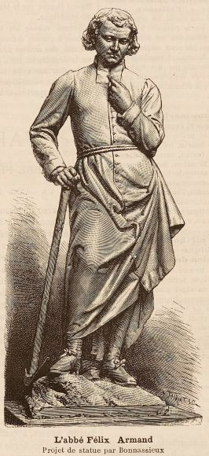
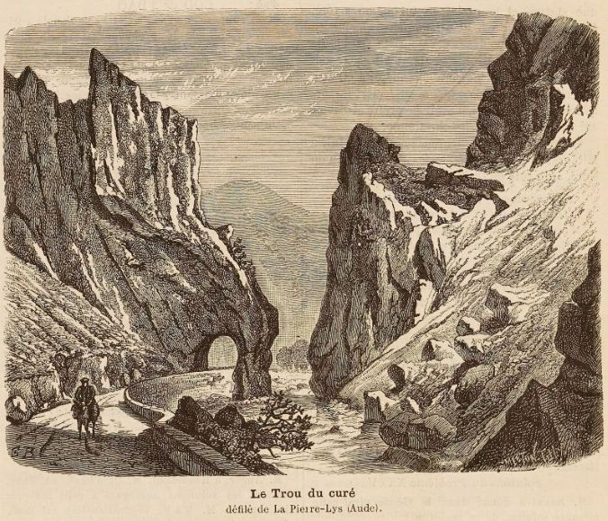
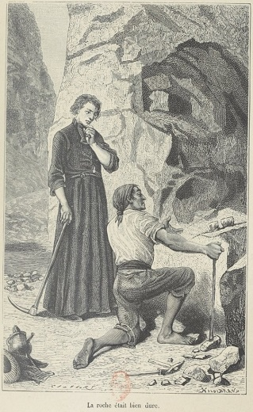

Saint Martin Lys
Félix Armand
Revue de presse - statue
Cette page fait une revue de presse des articles consacrés à Félix Armand, son œuvre et à l'historique de la statue qui lui a été consacrée à Quillan, je fait un classement purement chronologique car les articles consacrés à la statue font généralement référence à sa vie et à son œuvre
Table des entrées de la page
Cet extrait assez court est le plus ancien que je connaisse mentionnant Félix Armand.
« Saint-Martin-de-Pierre-Lis, sur la rive droite de l'Aude, à mi-côte d'une très-haute montagne couronnée par la superbe forêt royale des Fanges, sur le bord du précipice au fond duquel cette rivière coule en torrent. C'est une petite commune dont la population est de 200 individus dans 42 maisons.
Le chemin qui conduit de Belvianes à Axat en suivant la rivière d'Aude, et qu'on nomme la Pierre-Lis, est comme pratiqué entre deux murailles d'une hauteur prodigieuse et formées par les montagnes. A l'une des extrémités de ce chemin se trouve une espèce de grotte qu'on appelle le Trou-du-Curé, pour conserver la mémoire du bon curé de Saint-Martin, M. Armand, qui l'a fait ouvrir, et qui consacrait tous les ans une partie de son temps et de ses faibles revenus à la réparation et à l'entretien de ce chemin extrêmement utile pour la communication des cantons de Quillan et de Roquefort."
LA CROIX D'HONNEUR ET LE BON CURÉ.
Lorsqu'après nos orages politiques le ciel redevint serein, ce fut une consolante apparition que celle de la Croix de la Légion-d'Honneur, cette radieuse étoile de toutes les gloires ; elle fut saluée avec amour comme un signe de beaux jours promis à la France.
Dans la création de l'ordre de la Légion d'honneur se révèle une des plus belles inspirations du génie de l'Empereur. I1 appartenait au grand homme de douner un même but à toute les nobles facultés des hommes, de marquer d'un même indice à la poitrine la vertu, l'intelligence, le courage. En accordant une même récompense à tous les mérites il voulut qu'elle brillât de toutes les splendeurs, il voulut que la croix du brave s'illuminât
du reflet de la croit du savant, il voulut que le respect qu'elle inspirait réunît toutes les vénérations humaines; il voulut former une seule famille de toutes les âmes généreuses, noblesse nouvelle dont le pauvre n'était pas exclu, et qui consacrait le véritable principe de l'égalité, de l'égalité qui élève et non de
l'égalité qui abaisse. Qui n'a été touché de voir la croix dont s'honoraient les grands de l'Empire, sur la poitrine d'un bon curé, d'une sainte fille de charité, d'un soldat mutilé ! Certes, la pensée qui présida à cette institution fut grande ; et puis, sublime inspiration, elle s'est gâtée, comme tout se gâte entre
les mains des hommes.
Napoléon avait bien compris le peuple français, peuple éminemment chevaleresque. On sait quelle fut longtemps la magie du ruban rouge qui fit éclore tant de jeunes courages. La vanité est notre passion dominante ; je veux dire cette vanité fécondé en belles actions, grande dans ses effets, qui se déguise sous le nom de l'amour de la gloire. Peu d'entre nous aspirent à l'immortalité, ce pain céleste dont se nourrissent quelques âmes privilégiées. Mais nous sommes tous plus ou moins sensibles aux doux triomphes de l'amour-propre, à une renommée honorable, aux distinctions méritées. Ne faisons pas les superbes, n'affectons pas des vertus de théâtre, nous ne serions qu'hypocrites ou ridicules. Nous sentons bien au fond de nous-même quelque chose des sublimes dévouemens puisés à une source divine, d'un amour instinctif de la patrie, d'un saint fanatisme, d'une
abnégation complète de nous ; mais pour une étincelle du feu sacré que nous avons dans le cœur, que de tisons qui brûlent sans flamme et nous emplissent de fumée. Oh! sans-doute, il serait beau d'aller à la mort, en n'écoutant qu'une voix religieuse de notre ame qui nous crierait : Pour la patrie ! Mais le temps d'une vertu si pure est trop loin de nous. Regrettons seulement le temps où les Français étaient heureux de se faire mutiler pour une croix, emblème de cette gloire que tant de gens prennent aujourd'hui en pitié, qui aimeraient mieux peut-être donner un de leurs membres pour son pesant d'or ; regrettons que le ruban rouge ait perdu son prestige, qu'il ne soit plus que le hochet de nos petites vanités, un agrément de la parure qui plaît à la
boutonnière d'un habit, comme une fleur dans les cheveux d'une femme.
Si une croix fut justement donnée pour honorer la vertu, ce fut celle qu'obtint le digne curé de St-Martin de la Pierre Lisse.
En remontant la rivière de l'Aude au-dessus de Quillan, après avoir parcouru dans leurs capricieux-détours les paisibles vallées qu'elle arrose, où les fruits abrités de tous les vents mûrissent si vite aux rayons d'un doux soleil, après avoir joui du spectacle de tant de jolis sites, de la forge de Quillan et sa montagne verte, du laminoir avec ses hautes cheminées en feu, du château pittoresque de Belviane, le regard accoutumé aux découvertes lointaines de ces charmans paysages, vient se briser tout-à-coup contre un mur immense de rochers que rien ne faisait pressentir, rempart infranchissable couronné de pins séculaires qui, ressemblant à de longues piques, atteignent et déchirent les nuages. Là finit brusquement la vallée ; à la vue de cette imposante barrière, l'imagination ne peut concevoir ce qui existe au-delà. Tel est du moins le tableau qui se présente à la sortie de Belviane, lorsque les montagnes des Fanges et de Quirbajou semblent mêler leurs forêts. Ce n'est qu'en venant toucher aux pieds de ces montagnes à pic, qu'on peut reconnaître qu'elles ont dû se séparer par un grand déchirement et qu'il s'est formé une sorte de large crevasse qui donne passage à la rivière. L'entrée de cette gorge est d'un effet admirable : à une grandeur sauvage elle joint le caractère religieux d'une église gothiqoe. Des rochers blancs s'élancent en aiguilles vers le ciel et lorsque le soleil en éclaire les pointes on les prendrait pour de gigantesques candélabres destinés à jeter la lumière dans les profondeurs de cette solitude. Après avoir fait quelques pas sur un chemin étroit mais solidement construit sur la rive gauche de la rivière, on arrive à une ouverture creusée en voûté dans le roc ; c'est là la porte du passage de la Pierre-Lisse ; en en franchissant le seuil je sentis ce frisson avant-coureur des sensations qui viennent bien
tôt vous assaillir. Tout s'offre grand et solennel au premier regard. C'est le torrent qui sort avec impétuosité de la montagne, se précipite dans un trou, passe sous vos pieds et vient mêler ses eaux écumeuses aux eaux rapides de l'Aude ; ce sont des massifs de pierre de 300 pieds de hauteur, où le plus petit arbuste n'a pu prendre racine, où l'air et l'eau qui rongent le fer n'ont laissé qu'une teinte grise du temps, sans pouvoir les entamer ; ce sont des grottes profondes, abymes inconnus qui ont leurs gueules béantes sur un abyme, et la rivière qui gronde et bouillonne, resserrée dans son lit, tantôt courant comme un torrent, tantôt tombant de chûte en chute comme une cascade, et la route si pittoresquement attachée au flanc de Quirbajou, fuyant et se perdant dans quelques, sinuosités et puis reparaissant toujours avec son air de calme et d'immobilité. On ne peut exprimer la foule d'émotions que l'on éprouve an milieu de ce désert accablé par la majesté muette qui de toutes parts vous enserre. Je n'avais que peu de temps a donner aux transports de mon admiration; je voyais avec inquiétude les cimes des rochers se tremper de la leinte pâle du soleil couchant.
J'aurais voulu voir le soleil passer au-dessus de l'abyme et embraser de ses feux la vapeur de ses eaux tumultueuses ; j'aurais voulu y voir descendre la molle clarté de la lune, j'aurais voulu surtout n'y être pas seul... Telle est l'impression que produit sur nous la vue de ces beautés éternelles de la nature, notre ame avide voudrait tarir la source des jouissances qu'elles nous donnent, et cette soif inapaisée nous cause une véritable souffrance.
Je quittais ces lieux à regret ; je devais arriver à Gincla avant la nuit. Je pressai les flancs de mon cheval et je parcourus au galop le reste du passage, bien résolu à ne plus m'arrêter. Je trouvai dans cette allure mille nouvelles sensations fugitives ; le bruit des pas précipités de mon cheval retentissait dans ce désert, et je fuyais rapide, cherchant à multiplier mes sens pour ne rien perdre de cette foule de spectacles successifs, et emportant des impressions pareilles à celles que nous éprouvons, lorsqu'à tire d'aile nous rasons la terre dans nos songes.
En sortant de la gorge, je retrouvai la vallée, mais triste, stérile ; je passai la rivière sur un mauvais pont en bois, et j'arrivai au pauvre hameau de Saint-Martin de la Pierre-Lisse, que je confondais de loin avec les pierres de sa montagne aride. Je ne fis que passer, et je fus touché de l'expression de tristesse, de douceur et de résignation que je remarquai dans les regards de quelques femmes, dont les grands yeux ressortaient sur leurs visages noircis par le charbon. Le premier homme que je rencontrai s'offrit à me servir de guide dans un chemin de traverse qui devait me conduire tout droit à Gincla. Comme nous suivions un sentier à peine tracé, je dis à mon guide : Ce chemin est bien incommode....
— Ah! si notre curé n'était pas mort, tout cela serait changé me répondit-il ; des hommes comme celui-là ne devraient jamais mourir.
Je regardai mon guide ; il n'avait pas l'air d'un cagot, sa physionomie était ouverte : je conçus une bonne opinion de son curé.
— Que voulez-vous, lui dis-je, c'est notre sort commun... Napoléon est bien mort... Jetant aux vents cette parole de consolation, ma ressource, à moi, dans mes afflictions.
— Ni l'un, ni l'autre ne devaient mourir, me répondit vivement mon homme ; et l'Empereur l'aimait bien, notre curé, c'est lui qui lui donna la croix d'honneur.
Ceci commençait à m'intéresser puissamment.
— Et qu'avait fait votre curé ? Question toute simple qu'on faisait autrefois de ceux qui avaient obtenu cette croix.
— Ce qu'il a fait ?... Tenez, voyez-vous de ce côté cette montagne, m'indiquant la montagne de Quirbajou ; elle est rude, je vous assure. Eh bien! si nous voulions manger un morceau de pain, il nous fallait la franchir deux fois par jour au moins, pour aller porter du charbon à la forge de Quillan ; car vous avez pu remarquer que cette terre ne donne pas un seul fruit, et que nous sommes tous charbonniers. Dans cette saison, comme vous le voyez, ce n'est rien ; il faudrait bien suer pourtant pour la traverser. Mais pendant l'hiver, quand cette montagne est couverte de neige, c'était bien pénible de grimper là haut, au risque de tomber dans un trou et de mourir de froid. Lorsque notre curé nous voyait revenir, avec les filles du village et les petits enfans qui avaient les mains rouges comme le sang, tout grelottans de froid, il nous regardait, les larmes aux yeux, d'un air si bon, il nous disait des paroles si douces, que cela nous réchauffait le cœur, et puis il donnait à l'un une paire de souliers, à un autre un pantalon ; il donnait tous les jours quelque chose pour nous vêtir. Ce n'est pas tout ; il méditait quelque projet depuis long temps; nous le trouvions toujours pensif sur les bords de la rivière, et il s'en allait souvent du côté de la Pierre-Lisse. Un jour, enfin, qu'il avait reçu quelque papier, il avait l'air tout content ; c'était un dimanche, il dit la messe comme à l'ordinaire, et après le prône il nous dit :
— Mes enfans, réjouissez-vous, vos peines vont finir, vous ne gravirez plus la montagne, vous pourrez aller à Quillan sans fatigue ; une route va s'ouvrir dans la Pierre-Lisse, mais c'est à nous à la commencer ; vous allez tous me suivre. Alors il descendit de la chaire, et chacun de nous voulait baiser sa robe, Il se mit à genoux et nous priâmes. Quand nous sortîmes de l'église nous étions pleins de force et d'ardeur ; nous primes tous un instrument et avec notre curé à la tête armé d'une pioche, nous allâmes à la Pierre-Lisse. Le roc fut entamé ; chaque jour quelques uns d'entre nous revenaient avec le curé, et le travail avança. Mais bientôt des ouvriers envoyés par le gouvernement vinrent à notre secours et cette jolie route que vous avez parcourue fut promptement achevée. Voilà ce qu'a fait notre curé, s'écria mon guide, avec émotion et une sorte de fierté.
— C'était en effet un bien digne homme, lui dis-je.
— Oh ! sans doute il a sa récompense dans le ciel ; mais il a eu le bonheur aussi avant de mourir de voir sa route finie, et de recevoir la croix-d'honneur. L'empereur voulait même le faire évêque ; mais le saint homme aima mieux rester avec nous qui l'aimions tous comme notre père. — Non, mes enfans, nous disait-il, je ne vous quitterai jamais... Mon guide s'attendrissait de plus en plus et sa voix était comme mouillée de pleurs.
— 11 me semble que je le vois, ajouta-t-il, assis devant sa porte avec ses grands cheveux blancs, son visage si bon, et sa croix d'honneur. Il mourut un jour comme cela, en souriant, un jour qu'il faisait beau et qu'il prenait le soleil. Sa tête s'inclina doucement sur sa poitrine avec un petit gémissement. Une femme qui le vit pâlir l'appela : Monsieur le curé. Il ne répondit pas. Elle toucha sa main, elle était déjà glacée.
— Monsieur le curé, dit-elle, en le secouant et en palissant elle-même ; il ne bougea pas. Alors elle jeta de hauts cris. Ah! mon Dieu ! notre bon curé ; ah ! mon Dieu ! au secours ! On accourut, on l'entoura, on lui frotta les tempes avec du vinaigre ; il était mort...
— Ce fut un grand malheur pour vous, dis-je, d un ton ému !...
— Oh! oui, ce fut un bien grand malheur! .. Et d'abondantes larmes coulaient de ses yeux. Nous arrivions à la bonne route ; je pressai affectueusement la main de mon guide, et nous nous séparâmes.
J.-L. Lugan.
Le 28 mai 1768, un jeune diacre fut ordonné prêtre dans l'église cathédrale de St.-Jean par Alexandre de Carderac de Gouy d'Avrimon, évêque d'Elne ; ce prêtre qui, plus tard, brigua l'honneur de siéger à l'humble presbytère de St.-Martin-Lis, pour y répandre ses bienfaits, et exécuter un projet qu'il mûrissait depuis longtemps, était Félix Armand, l'ami et le condisciple de Dom Brial, notre savant compatriote.
C'est la vie sans tache de ce bon pasteur, la vie qui s'est écoulée entre les devoirs d'un saint ministère et le désir d'être utile à son pays, que M. De la Croix a entrepris de décrire. Il nous apprend, dans ses pages, comment le curé de St.-Martin-Lis créa une voie de communication importante et fut le conseiller intelligent d'une population presque sauvage avant son arrivée ; il parcourt les diverses phases de sa vie, et ne devient historien que pour transmettre à la postérité les bienfaits et les services éminents de celui qui aurait dû rester éternellement parmi les heureux qu'il faisait. « Il consolait les uns, il secourait les autres, il achetait à l'un ses provisions, à l'autre les bêtes nécessaires à son travail. »
Voici comment s'exprime M. De la Croix relativement au projet gigantesque que le curé de St.-Martin-Lis a effectué.
« Quel sera l'ingénieur audacieux qui nivellera le sol où les oiseaux de proie établissent leur nid, où est suspendu le figuier sauvage, et ou cependant doivent cheminer des êtres humains ? qui dira quand la masse à traverser sera trop profonde, quel moyen il faudra tenter pour surmonter les obstacles ? qui dira alors que, puisqu'on ne peut passer à côté ni dessus, c'est dessous qu'il faul tailler la roule ?
« Ces moyens imaginés, ces plans arrêtés, où trouver assez de bras pour les exécuter, mais surtout où prendre l'argent nécessaire? quel trésor y fournira? qui exécutera cette vaste entreprise ?., c'est Félix Armand. — Que le pays soit tranquille sur ses destinées, il a dans son pasteur un architecte, un ouvrier et un ministre des finances !
« Telle est l’œuvre qu'exécutera l'ami de dom Brial, lui aussi sera un homme de génie. »
On pourra juger par ces quelques lignes combien était immense l’œuvre que Félix Armand a réalisée, et à laquelle il a consacré une grande partie de son existence. Mais ce dont nous devons nous féliciter, c'est qu'un gouvernement sut apprécier le génie du prêtre; le crédit de M. Larochefoucauld ne contribua pas peu à faire classer la route de la Pierre-Lis parmi les routes départementales de l'Aude. «Ce fut, en 1821, dit l'auteur de la biographie, que le curé fit légitimer au grand jour, par son département, cette fille chérie, qui avait été sa consolation pendant les temps orageux de la terreur, et un objet de prédilection pendant toute sa carrière. »
Le rapport du corps du génie avait paru si extraordinaire que le conseil général des ponts et chaussées arrêta les yeux du ministre sur Félix Armand , et le 10 juillet 1820 la croix de la légion d'honneur lui fut conférée.
Cette biographie est a la fois édifiante et digne de fixer l'attention; les lecteurs y trouveront un modèle de vertus à suivre et rendront hommage au vaste génie du curé de Saint-Martin-Lis.
* Un vol, in-8°, prix: 2fr. — Librairie de J.-B. ALZINE.
VIE DE FÉLIX ARMAND, Curé de St.-Martin-Lis (Aude), PAR J.-P. DE LA CROIX (=Jean-Pierre Cros-Mayrevieille) édité en 1837
VIE DE FÉLIX ARMAND.
CURÉ DE SAINT-MARTIN-LIS,
PRÈS DE QUILLAN ( AUDE ) ;
DIOCÈSE DE CARCASSONNE ;
AUTEUR DE LA ROUTE DE LA PIERRE-LIS.
PAR M. J.-P. DE LA CROIX.
Caritas ædificat. (SAINT PAUL.)
PARIS, ADRIEN LECLÈRE, LIBRAIRE, IMPRIMEUR DE MONSEIGNEUR L'ARCHEVÊQUE, QUAI DES AUGUSTINS, 35.
M. DCCC, XXXVII.
 AU LECTEUR.
AU LECTEUR.
La fonction la plus auguste et la plus directement utile, celle qui dirige et conseille le plus grand nombre d'intelligences, est peut-être personnifiée dans le pasteur ou le curé. Quelle influence salutaire n'est-il pas appelé à exercer sur les hommes, celui qui les reçoit à l'entrée de la vie avec une parole de bénédiction, pour ne les abandonner qu'au terme de leur carrière, en consacrant leur mort par de pieuses cérémonies ! Quand on se place par la pensée au-dessus des préoccupations du siècle, et qu'on jette un coup d'œil vers les temps qui nous ont précédés, on voit cette mission du prêtre se développer majestueusement. Pour faire le bien, il n'a pas besoin d'un grand théâtre : il peut grandir au village comme dans une vaste cité ; à l'image de Dieu, qui est admirable dans les grandes choses et plus admirable dans les petites, magnus in magnis, maximus in minimis, le curé de village peut, comme celui des villes populeuses, avoir ses titres à la vénération des fidèles.
On dirait que le prêtre est obligé de multiplier ses prévisions à mesure que la population des paroisses se trouve réduite à de faibles proportions. Que de montagnes désertes, que de landes arides, où la seule maison qui dépasse les autres est le modeste presbytère, où le seul homme qui ne vive pas du travail des mains est le curé ! Là il sera le médecin, le jurisconsulte, l'ingénieur naturel de tous ceux qui auront appris de sa bouche les vérités si consolantes de Dieu, d'immortalité.
S'il faut réédifier la demeure du pauvre, rappeler à l'union, des familles que l’intérêt divise, soulager une santé languissante, les hommes de l'art manqueront, et le pasteur sera cette providence qui les aidera tous, et qui consolera toujours ceux qu'elle ne pourra pas autrement secourir. Ces obligations secondaires du prêtre se multiplient quelquefois jusqu'à égaler, par leurs exigences, les travaux de l'apostolat.
Comme enseignement du passé, il serait exact de dire que deux charges pèsent sur un seul homme et sont réunies sur une même tête, deux charges aujourd'hui réunies dans leurs effets, la Prêtrise et le Diaconat.
En parlant du diaconat nous faisons allusion à celui des premiers temps du Christianisme. Cette belle institution prit naissance chez les Apôtres. Le nombre des chrétiens croissait de jour en jour, et la distribution des aumônes donnait une trop longue diversion aux actes de l'apostolat : les Apôtres dirent alors aux fidèles : « Choisissez parmi vous sept hommes d'une probité reconnue, remplis du Saint-Esprit et pleins de sagesse, sur lesquels nous puissions nous décharger de ce soin. Nous, nous serons uniquement appliqués à la prière et au ministère de la parole ( Actes des Apôtres, ch. VI ) » . On élut aussitôt Etienne, Philippe, Prochore, Nicanor, Timon, Parmenas et Nicolas, prosélyte d'Antioche. Ils furent présentés aux Apôtres, qui leur imposèrent les mains en priant Dieu de les rendre dignes du ministère qui leur était confié.
Le Diacre devint le bras de l’Église : moins contemplatif que le prêtre, il est plus préoccupé des infortunes actuelles.
A l'un, le sanctuaire où s'accomplissait le divin sacrifice ; à l'autre, la nef où le peuple était réuni : à l'un, l'autel ; à l'autre, le foyer domestique des fidèles. Il fallait avoir bien des fois parcouru à pied ou à cheval les demeures des pauvres de la contrée pour devenir plus tard, par la prêtrise leur intercesseur auprès de Dieu.
L'application du diaconat s'étendit de jour en jour davantage. « Cette charge était d'avoir soin du temporel et des rentes de l'église, des aumônes des fidèles, des besoins des ecclésiastiques et même de ceux du Pape. Les sous-diacres faisaient les collectes, et les diacres en étaient les dépositaires et les administrateurs. » (BERGIER, Théologie, tom. 1, pag. 632, édition de Liège.)
Alors il y eut deux classes de diacres distingués des prêtres : la première, comme on l'a vu, s'occupait de l'administration temporelle ; la seconde était affectée au service intérieur des églises : le maintien de l'ordre, le soin des vases sacrés et l'observance de la liturgie l'occupaient particulièrement. Son chef dans chaque église était appelé Archidiacre.
Les plus habiles d'entre les diacres étaient chargés de présider à la construction des basiliques. Lorsque l'étude approfondie de ces monuments imposants de la Chrétienté, prouve que leurs distributions et leurs sculptures sont toutes emblématiques, on est aisément convaincu des connaissances théologiques dont leurs ingénieurs devaient être pénétrés. Que de pages éloquentes de la tradition, de l'ancien et du nouveau Testament, des mœurs et des usages de la Catholicité, ne sont elles pas écrites sur la pierre de ces églises improprement appelées gothiques, où un diacre inspiré, plutôt qu'un soldat à demi barbare, a gravé la figure de sa foi !
Au diaconat appartenait aussi la surveillance et la conservation des basiliques. Les admirables restes que le moyen âge nous a légués montrent le zèle qu'ils ont mis à remplir cette noble mission.
C'était surtout dans la distribution des aumônes que brillait la première classe des diacres. Leur zèle infatigable ne se démentit jamais, et l'âge de la vigueur et de la force était employé à soulager les frères voisins ou éloignés. Quand la dalmatique avait pendant quelques années flotté au gré des vents les plus impétueux, par les nuits froides et obscures, ou par des jours brûlants, dans les courses pieuses et charitables, le diacre revêtait un habit plus grave et plus sévère. La dalmatique élégante et dégagée était remplacée par l'étole sacerdotale aux formes solennelles (Suivant le Pontifical Romain, les fonctions de diacre se réduisent aujourd'hui à baptiser, à servir à l'autel et à prêcher. Une permission expresse est nécessaire pour baptiser et prêcher. Autrefois on ne pouvait être promu au diaconat qu'à vingt-cinq ans ; depuis le concile de Trente, vingt-trois années suffisent.). Aujourd'hui les deux périodes de la vie apostolique sont réunies, et le diaconat est resté presque à l'état de symbole. Le prêtre a toujours néanmoins deux parts à faire dans ses travaux. Nous ne retracerons qu'une des deux grandes divisions qu'offrent les actes de la vie de Félix Armand. Sa carrière purement apostolique et religieuse se résume tout entière dans l'estime que les évêques d'Alet et de Carcassonne ont toujours manifestée pour une piété si ardente et une foi si vive. La vie de ce prêtre fut sainte, et un jour peut-être la béatification de sa mémoire fera de Félix l'objet d'un culte particulier. Le côté charitable et temporel nous a presque exclusivement occupés dans cette biographie. Quand nous avons rencontré une coïncidence marquée des deux aspects de sa manifestation sur la terre, nous avons cherché à la rendre avec le ton et les formes convenables au sujet. Historien, nous avons cru devoir parler le langage des idées que nous développions. Souvent même, nous avons rendu textuellement les paroles transmises par les témoins oculaires.
Simple narrateur, nous n'avons aspiré qu'à servir d'organe à la tradition vivante autour de nous. Tout nous a été commandé par notre sujet : à lui seul doivent s'adresser toutes les opinions suscitées par la lecture de cette biographie. Aurons nous réussi à faire admirer et aimer une vie si bien remplie de l'esprit de charité ?
N'est-ce pas trop tenter que d'essayer de mettre en lumière un mérite si obscur, dans un siècle où le prestige des grands noms fascine tant d'intelligences ?
Nous ne dissimulerons pas une dernière attaque dont cette publication peut être l'objet ; elle consisterait à prétendre qu'une biographie complète n'était pas nécessaire à l'homme que ses contemporains avaient cru assez hautement célébrer par quelques lignes. Nous allons les citer, et nous nous demanderons ensuite si elles suffisent pour que pleine justice soit faite à un homme que la postérité proclama si ÉMINEMMENT UTILE.
« Saint-Martin-de-Pierre-Lis, sur la rive droite de l'Aude, à mi-côte d'une très haute montagne couronnée par la superbe forêt royale des Fanges, sur le bord du précipice au fond duquel cette rivière coule en torrent.
« Le chemin qui conduit de Belvianes à Axat, en suivant la rivière de l'Aude, et qu'on nomme la Pierre Lis, est comme pratiqué entre deux murailles d'une hauteur prodigieuse, et formées par les montagnes. A l'une des extrémités de ce chemin, se trouve une espèce de grotte qu'on appelle le Trou du Curé, pour conserver la mémoire du bon curé de Saint-Martin- M. Armand, qui la fit ouvrir et qui consacrait tous les ans une partie de son temps et de ses faibles revenus à la réparation et à l'entretien de ce chemin, extrêmement utile pour la communication des cantons de Quillan et de Roquefort. » (Description générale de l'Aude, par le baron Trouvé, préfet de ce département, tom. 11, liv. 111, chap. v, § 7 .)
Voilà tout ce qui a été écrit à la mémoire de Félix Armand. Au milieu d'une volumineuse histoire, il faudra donc chercher quelques lignes, et le nom donné à une grotte perpétuera seul la tradition de sa mémoire chez le montagnard illettré. (Au moment de mettre l'ouvrage sous presse, nous lisons dans la Revue de Paris (N.º de Mai) une nouvelle sortie de la plume élégante de M. Lugan, qui donne un noble rôle au curé de Saint Martin. Ainsi, la vie de Félix Armand est assez belle pour inspirer la littérature contemporaine ; et la biographie sérieuse d'un tel homme ne serait pas écrite ? - Note de l'Éditeur.)
Cependant notre siècle n'est pas avare de louanges et d'apothéoses, et les biographies grossissent tous les jours sans que peut-être le nombre des grands hommes accroisse : c'est qu'une charge ou une fonction donne quelquefois un titre sans mérite, et une prime d'encouragement à l'écrivain ; c'est que la vertu modeste et le talent obscur n'éblouissent pas les yeux et ne frappent pas notre oreille. Le bonheur public y gagnerait cependant si les hommes divisaient entre eux la tâche, et si, moins jaloux d'un vaste théâtre, ils employaient, dans une sphère bornée, la moitié seulement des efforts qui se perdent dans cet immense gouffre où luttent, pour conduire leur navire, tant de pilotes brisés par la tempête. Comme on se fait une spécialité de profession, d'art ou de science pour y obtenir des succès, que chacun se fasse une spécialité dans l'amour du prochain, et bientôt chaque plaie aura un baume salutaire, chaque douleur une consolation. Notre vie aura un but, et notre vie sera bien remplie et plus heureuse que si nous la laissions flotter au gré de tous les événements qui la troublent et l'agitent. La source du génie est peut-être cette volonté puissante appliquée à un objet, car ce que l'homme raisonnable veut, il le peut et l'accomplit; non sans de grands efforts, il est vrai, mais les obstacles qu'il rencontre doublent les forces de son âme et de son cœur, et Dieu est toujours en aide à celui qui persévère dans la bonne voie.
Félix Armand comprit bien jeune encore ce premier devoir de l'homme qui passe sur cette terre. Il jeta les yeux autour de lui, et voyant qu'il y avait des infortunes à soulager (Le canton de Quillan doit encore bénir la mémoire d'un autre vénérable ecclésiastique. M. Carles, curé de Montarels, petit village situé sur les bords de l'Aude, a doté ses paroissiens d'une fontaine aussi belle qu'utile.), il renonça à tout éclat et à toute gloire qui viendrait d'au-delà des montagnes où la Providence l'avait placé. Sa vocation développa une connaissance instinctive des théories dont il avait besoin pour réaliser ses vues. Il est aussi admirable qu'édifiant de suivre une à une les actions d'un prêtre qui a répandu le bonheur sur des populations entières.
(L'ouverture d'une route a non-seulement des résultats immédiats, mais encore elle donne naissance à des travaux qui ne sont que la continuation des premiers. Ainsi, pour rendre plus facile la communication établie, par l'ouverture du chemin de la Pierre-Lis, entre le canton de Quillan et celui de Roquefort, une large voie a été ouverte au défilé de Saint-Georges et au cap de Bouc, au-delà d'Axat, près le confluent de l'Aiguette. C'est à ce point que les travaux ont présenté les plus grandes difficultés. On n'aurait jamais eu le courage de tenter des ouvrages si dispendieux, si l'exemple de Félix Armand n'avait aplani les obstacles. La Pierre- Lis, qui n'était primitivement qu'un moyen de joindre deux cantons, est devenue le point de communication départementale entre Quillan (Aude), le Donézan (Ariège), et le Capsir (Pyrénées-Orientales) .
Les merveilleux travaux de Félix Armand auront encore d'autres résultats. Dans quelques années un léger élargissement au chemin de la Pierre-Lis ainsi qu'à celui de Roquefort sera pratiqué, et ceux qui de la Cerdagne Espagnole se dirigent sur Carcassonne, traverseront ces nouvelles routes.
Pour donner une idée de l'influence qu'à eu l'œuvre de Félix Armand sur les pays voisins, nous allons prendre le canton de Roquefort pour terme de comparaison, et mettre en regard les populations communales de 1816 et celles de 1836.
| Habitants |
en 1816 |
en 1836 |
| Artigues |
165 |
224 |
| Axat |
361 |
582 |
| Bessède-de-Sault |
449 |
506 |
| Le Bousquet |
329 |
455 |
| Cailla |
161 |
214 |
| Le Clat |
270 |
303 |
| Sainte-Colombe-sur-Guette |
250 |
364 |
| Cournozouls |
317 |
452 |
| Escouloubre |
743 |
809 |
| Gincla |
177 |
244 |
| Montfort |
804 |
883 |
| Puylaurens |
860 |
1000 |
| Roquefort |
594 |
807 |
| TOTAUX |
5480 |
6840 |
)
Et lorsque plusieurs milliers d'individus bénissent sa mémoire,non pas seulement du bien qu'il leur a fait, mais de celui que leurs descendants lui devront, il faut plus qu'une page pour dire la vie de cet homme à la postérité. Si une plume plus éloquente que la nôtre avait écrit cette biographie, nous la recommanderions aux méditations de tous ceux qui désirent se perfectionner dans les généreux sentiments de la charité, parce qu'il est difficile de trouver tant de simplicité jointe à tant d'élévation dans les idées, tant de modestie unie à d'aussi vrais talents.
.
La mission céleste que l'homme de bien est appelé à accomplir sur la terre sera parfaite, si après que ses actions ont servi au bonheur de ses semblables et de ses contemporains, le souvenir historique de ses actions elles-mêmes, contribue à améliorer et à rappeler à la vertu ses frères de la terre qu'il quitte, et cette postérité qui ira bientôt se réunir à lui.
VIE DE FÉLIX ARMAND.
CHAPITRE PREMIER.
Introduction historique et topographique. -Quillan, Saint-Martin-Lis, le Quirbajou.
Si l'on pouvait parcourir sans déviation la ligne tracée en France par le méridien de Paris, on trouverait, avant de traverser les Pyrénées, un étroit et paisible vallon au bord de l'Aude. Là peu d’habitants ont besoin d'un grand espace pour se procurer le nécessaire de la vie, car les rochers qui s'échelonnent au pied du Canigou, comme des enfants auprès d'un vieillard, sont jaloux du luxe de végétation que la nature a donné à de rares prairies, à de plus rares vergers. Au sixième siècle, quelques religieux remontèrent le cours de l'Aude, et comme pour bénir ses eaux, ils fondèrent, à peu de distance de sa source et dans ce joli vallon, un monastère qu'ils appelèrent Lenis, pour exprimer la douceur et la paix de leur retraite. Les premiers temps de cette institution furent un peu orageux : les fameuses Règles de saint Benoît, le fondateur d'Aniane, et l'égal du grand saint Benoît, fondateur des douze monastères du désert de Sublaco, n'existaient pas encore; mais dès que le codex regularum fut connu, une charte signalant l'état critique du couvent le réorganisa (Charte de 878, Archives de Narbonne (Évêché): Monasterium, aliquandò Simoniæ distractum, aliquandò à pravis hominibus, suâ possessione privatum et ab omni honestate sanctâ regulâ seclusum, et penè ad nihilum reductum et ab omnibus modis desertum et ad ....... (illisible) reductum piâ consideratione cupioillud restaurare in bonum......).
Déjà, au neuvième siècle, un acte écrit nommait basilique son église ; un autre faisait le détail de ses riches ornements et de ses beaux piliers (Archives de Narbonne, Chartes de 878, 923 et 954.). Son clocher cherchait à égaler en hauteur les rocs aigus qui entouraient la vallée de Valcarne et Kalliano (aujourd'hui Quillan) ; la ville la plus voisine ne renfermait dans ses murs rien d'aussi magnifique. A l'envi, tous, grands et petits, saints et profanes, voulurent embellir le monastère de Saint- Martin-du-Lez (Plus tard, de Lenis on a fait Lez, puis Lis : ce nom est resté. On verra bientôt la justification du nom de Saint-Martin.). Le pape Agapet, en 954, confirme par une bulle son abbé Ségarius dans la possession des biens qu'il avait dans le comté de Fénouillèdes, du Razés et du Roussillon, à la charge de payer à l’Église Romaine un tribut légitime. Ermengarde, comtesse de Barcelonne, du Conflent et de la Cerdagne (981) ; Eudes, frère de Roger, comte de Carcassonne et comte du Razés (988) ; les comtes de Fénouillèdes et Bernard, comte de Bézalu (1020), firent à Tracteras, successeur de l'abbé Ségarius, des dons si considérables, que le monastère put s'agrandir et jeter les fondements d'une seconde église. Wifred, évêque de Carcassonne, accompagné de cinq évêques et d'un innombrable clergé, vint la consacrer. Jamais de telles fêtes ne seront célébrées dans la vallée de Lis, jamais de tels chants ne retentiront dans ces montagnes, dont les échos ont tant d'harmonie.
Pendant six siècles encore, on entendit des voix nombreuses s'élever en chœur ; mais l'orgueilleuse protestation de Luther les jeta dans un morne silence. Les religionnaires arrivèrent en furieux ; ils teignirent de sang les murs du couvent, et laissèrent debout, comme souvenir de leur passage, quelques pans de murailles, qu'on aperçoit encore aujourd'hui.
Les religionnaires surprirent Alet en 1573, à la fin de Septembre ; ils dévastèrent son évêché et son église, dont les élégantes sculptures, attachées encore à quelques débris de mur qui touchent la route royale de Paris en Espagne, frappent d'étonnement les nombreux voyageurs qui la parcourent.
Après le sac d'Alet, les troupes hérétiques suivirent le cours de l'Aude en allant vers sa source : elles pillèrent les maisons qu'elles y rencontrèrent, et s'arrêtèrent devant Quillan, dont les catholiques avaient fait une place forte. Les généraux Roclès et Castelreus campèrent devant cette ville, dont le siège fut long et pénible. Du haut du boulevard carré qui domine le bassin où coule l'Aude, et où sont assises les habitations actuelles, les catholiques firent beaucoup de mal aux religionnaires. Après de constants efforts pendant deux mois, la place fut emportée d'assaut. Mais la fureur des assiégeants ne put être apaisée par le massacre des hommes et des femmes trouvés dans les rues et les maisons de Quillan. Au pillage de cette ville succéda celui du monastère de Saint-Martin ; pas un seul religieux n'échappa au glaive des hérétiques pour en apporter la nouvelle au Pontife de Rome. Un jour après l'entrée des soldats dans le monastère, ces lieux passèrent à l'état de désolation et de tristesse où nous les voyons aujourd'hui.
Ainsi s'accomplissent les mystérieux desseins de la Providence. Les peuples ne suivent pas les rois dans leur exil ou dans leurs persécutions ; on les voit toujours survivre à leur défaite : les religieux disparurent et furent ensevelis sous les ruines du couvent ; mais les nombreux travailleurs auxquels le monastère donnait des moyens d'existence demeurèrent à l'abri des restes précieux de cet antique cloître. Dès que le premier moment d'effroi fut dissipé, ils s'en écartèrent avec respect, et en vue de sa vieille enceinte, comme si sa présence devait être pour eux un gage de bonheur, ils bâtirent quelques pauvres demeures. Ils veillèrent sur les ruines du monastère, et voulurent sauver son nom de l'oubli. Mgr. de Pavillon, évêque d'Alet, érigea en cure le village de Saint-Martin-Pierre-Lis, comme pour résumer dans son nom la nature de son pays et les désastres qu'avait attirés sur lui la réforme de Luther (Lettres patentes de Mgr. de Pavillon, année 1643. -Nicolas de Pavillon illustra l'évêché d'Alet. Il fut le collaborateur de saint Vincent de Paul. Le zèle et les lumières dont il fit preuve pendant qu'il partageait les travaux de ce grand homme à Paris, furent les titres qui le firent appeler à l'épiscopat. Ses talents étaient à la hauteur de sa piété apostolique. Pendant qu'il resta sur le siége d'Alet (de 1639 à 1677), il publia le Rituel à l'usage du diocèse d'Alet, et un volume d'Ordonnances et Statuts synodaux. Le poète Étienne de Pavillon était le neveu de l'évêque d'Alet.
Saint-Martin était l'ancien nom du couvent : quoiqu'il fût consacré à saint Benoît et que les moines en suivissent les règles, le premier nom lui était resté. La charte qui a établi cette communauté de Bénédictins le dit d'une manière explicite : « Ego Bernardus.... videns quod monasterium loco dicto Lenis juxtà Aditum flumen, sub nomine Sancti Martini consecratum..... » (Archives de Narbonne).).
Les bienfaits que les religieux répandaient dans la contrée, les divers ouvriers qu'ils occupaient au monastère, faisaient de leur retraite comme un centre commun où venait aboutir une partie des productions de la province du Roussillon, et du diocèse de Narbonne, dont ils habitaient l'extrémité au couchant. Malgré les secours de la pieuse communauté, les habitants de Saint-Martin furent condamnés à une vie plus pénible, parce qu'il fallait franchir de hautes montagnes pour arriver aux villages voisins. Le pays était ingrat et le sol bien peu productif, quoiqu'il fût l'objet de leurs labeurs assidus. On observait, en effet, que la fertilité, de la contrée n'était plus la même qu'aux premiers temps de la fondation du monastère.
La vallée du Lis étant étroite et formée par des coteaux d'une pente rapide, se trouvait rétrécie, parce que ses côtés avaient été bientôt dépouillés de la terre végétale qui composait les jardins et les vergers du cloître. Quelques pieds de vigne avaient résisté aux orages et aux torrents grossis par la tempête. Grâce à eux, un peu de terrain a été retenu jusqu'à nos jours ; mais il était insuffisant pour fournir aux besoins de la population, et de petits travaux industriels devaient augmenter ses ressources. L'abattage partiel et annuel des bois, le transport du charbon et du fer, le transport des solives pour la construction des radeaux : tels étaient les moyens d'existence des habitants de Saint-Martin-Lis. Une haute montagne s'élève entre Quillan et Belvianes d'un côté, Axat et Saint-Martin de l'autre. L'Aude, qui arrose tous ces villages, contourne la montagne ; mais ses rives étaient impraticables, et pour aller du canton de Roquefort et d'Axat, à Quillan, il était nécessaire de passer sur cette montagne. Il fallait une journée entière pour faire ce voyage, et trois sous (Cet état de choses existait encore en 1789) étaient le prix du transport de deux barres à radeau. Un prix aussi minime était fixé pour conduire aux entrepôts de commerce de Quillan les fers des forges d'Axat, de Gincla, de Sainte-Colombe, de Gesse, enfin de tout le Roquefortés.
Cette montagne était à pic et presque impraticable en hiver ; mais la misère et la faim étaient l'aiguillon de ces malheureux travailleurs. Ils formèrent pendant longtemps une population à part, condamnée aux privations les plus grandes. Au milieu de leurs souffrances, la Providence leur ménagea un sauveur. La biographie de Félix Armand est l'histoire des malheureux dont il a adouci le sort.
CHAPITRE II.
Naissance et éducation de Félix.
La naissance de Félix, comme celle de ces fleuves bienfaisants dont le cours est d'abord insensible dans les vallées qu'ils traversent, n'est signalée par rien d'extraordinaire ; mais, comme ces fleuves dont les flots grossissent à mesure qu'ils s'avancent, sa vie grandira, et bientôt on restera étonné de sa marche imposante.
De Pierre Armand et de Claire Murou naquit à Quillan, petite ville du département de l'Aude (arrondissement de Limoux), à deux lieues de Saint-Martin-Pierre-Lis, Félix Armand. C'était le 29 Août 1742 que Pierre Armand, paisible propriétaire de quelques champs, eut le bonheur d'avoir un fils, auquel les leçons de vertu et de sagesse ne devaient pas manquer ; car l'amour de la religion, les mœurs simples et patriarcales, et l'âme charitable de Claire Murou et de son mari, étaient cités comme un modèle dans la contrée. Leur unique ambition fut de donner à Félix une éducation chrétienne, capable de développer les germes de talent et de vertu qu'on avait signalés en lui. Aussi, dès l'âge de douze ans, il partit pour Perpignan, afin de s'y livrer à l'étude. En écoutant les leçons des meilleurs maîtres d'alors, car cette ville possédait un collége digne d'une haute renommée, il se lia d'amitié avec le savant Dom Brial (Michel-Jean-Joseph Brial est né à Perpignan le 26 Mai 1743. Il habitait le couvent de la Daurade, à Toulouse, en 1764. Il enseignait la philosophie dans cette ville en 1771, quand il fut appelé à Paris, où il est mort en 1828, le 24 Mai. Il était membre de l'Institut (Académie des Inscriptions et Belles-Lettres). Peu de temps avant sa mort, ce respectable bénédictin avait fondé de ses revenus des écoles gratuites de garçons et de filles pour les pauvres des communes de Baixas et de Pia (près Perpignan), lieux de sa naissance et de celle des auteurs de ses jours.). Ils se donnèrent mutuellement cette force de réflexion et de volonté, qualité si rare dans notre siècle, et qui a fait de l'un l'émule
des Dantine, des Clément, des Martin-Bouquet, dans la science historique ; de l'autre, le créateur d'une voie de communication importante pour quelques milliers d’habitants, et le conseiller intelligent d'une population presque sauvage avant son arrivée. Jeunes encore, ils se séparèrent pour obéir à leur vocation : car la vocation existe réellement pour chacun, et inspire l'homme auquel le bruit des passions n'empêche pas d'écouter la voix du cœur. Dom Brial entra dans la congrégation de Saint-Maur, et commença la carrière de ses fortes études dans l'histoire de France. Félix Armand suivit son irrésistible penchant à la piété ; il se consacra à la religion, et il voulut être utile aux hommes en acceptant le sacerdoce. Comme il était jeune encore, il employa quelques années à élever les fils d'une famille noble de Perpignan. Lorsqu'ils étaient unis par la fraternité de la science, Dom Brial ignorait qu'il mourrait à Paris historien érudit, et Félix Armand, dans le pays de sa naissance, simple ami du pauvre. Mais à tous deux il fut donné de parcourir une longue carrière, car le savant et le ministre de Dieu sont arrivés au-delà de quatre-vingts ans.
CHAPITRE III.
Félix Armand entre dans les Ordres sacrés.
Félix Armand savait que son pays était pauvre et malheureux ; c'était là qu'il fallait prêcher et pratiquer le bien. Aussi quitta-t-il Perpignan, dont le séjour serait devenu sans doute sa résidence obligée s'il y eût pris les Ordres ; il se rendit à quelques lieues de Quillan, où était un séminaire et un évêché. Alet devint le siège d'un prince de l'Église en 1318. Jean XXII consacra ce lieu, devenu plus tard célèbre par ses riches évêques, qui furent les bienfaiteurs de la contrée, et dont l'or et la puissance changèrent des montagnes arides en jardins fertiles, qui ont fait depuis la fortune comme la réputation du pays. On voit encore le jardin d'un modeste propriétaire d'Alet gardé par une élégante balustrade de pierre grise.
C'est là que Félix Armand étudia la théologie sous Charles de la Cropte de Chanterac, prélat de ce diocèse. Il y fut successivement ordonné sous-diacre et diacre ; mais l'évêque d'Alet se trouvant gravement malade, il revint à Perpignan pour y être ordonné prêtre. Son ordination fut faite le 28 Mai 1768, dans l'église cathédrale de Saint-Jean, par Alexandre de Carderac de Gouy d'Avrimon, évêque d'Elnes, dont le palais et le cloître, chefs-d'œuvre de l'art au moyen âge, sont aujourd'hui aussi déserts que l'église et la demeure épiscopale de son frère d'Alet.
CHAPITRE IV.
Premières années du sacerdoce de Félix Armand à Quillan, à Galinagues, à Belvianes.
Le jeune prêtre passa à Quillan les premières années de son apostolat. Il y donna l'exemple de toutes les vertus. La chaire de son église n'avait jamais trouvé un aussi éloquent orateur, et sa piété et ses talents donnaient de lui les plus belles espérances. Mais il fuyait les éloges et la société : sa passion pour la solitude était remarquée avec peine par son Évêque, qui avait jeté les yeux sur lui, afin d'offrir à la Religion un athlète puissant contre la philosophie du dix-huitième siècle, dont les progrès étaient alors effrayants. Pendant que le jeune vicaire était à Quillan, on voyait souvent un homme vêtu de noir, un livre sous le bras, remonter le cours de l'Aude, et venir s'asseoir auprès de la gorge étroite et profonde par où le fleuve débouche dans la petite plaine qui s'étend auprès de Belvianes. C’était le point par où l'on pouvait, sans gravir la montagne, s'approcher le plus du monastère de Saint-Martin. Là il s'arrêtait dans le plus religieux recueillement, parce que son âme se livrait à la pensée d'une œuvre bienfaisante.
De Quillan, Félix Armand fut envoyé à Galinagues, et il aimait ce séjour parce qu'il y avait là solitude pour ses pensées et charité pour son cœur.
Ce pays garde précieusement le souvenir des trois années du saint ministère qu'il y exerça ; le souvenir du bien qu'il y a pratiqué est resté jusque dans l'esprit des enfants. Mais les plans que son imagination avait ébauchés au bord de l'Aude lui plaisaient, et il parvint à se faire placer à Belvianes, d'où il allait desservir l'église de Saint-Martin, qui était regardée alors comme trop médiocre pour redevenir une cure séparée. Souvent il se mettait à la suite des muletiers du village, et ils gravissaient et descendaient ensemble la montagne qui les séparait de Saint-Martin. Il s'établit entre eux et ce prêtre une communauté d'affection, qui animèrent son cœur de l'unique ambition de devenir le père de ces malheureux. On songea à replacer un curé à Saint-Martin, et la cure de ce village fut déclarée vacante. Elle n'excitait pas l'envie des prêtres du diocèse, et le dernier peut-être auquel on l'aurait offerte, était Félix Armand, que sa piété évangélique et son âme élevée destinaient à un poste éminent. Mais l'honneur de siéger à l'humble presbytère de Saint-Martin fut si bien brigué par lui, qu'il en fut nommé le pasteur en 1774. Il avait atteint trente-deux ans, l'âge où il s'était promis de commencer son œuvre sur la terre.
CHAPITRE V.
État des habitants de Saint-Martin-Lis.
Le malheur et la pauvreté étaient le partage des paroissiens du bon curé de Saint-Martin. La culture des grains et des légumes ne pouvant être que très restreinte autour de leurs demeures, ils étaient obligés, quand ils avaient achevé l'abattage de la forêt royale des Fanges, ou de celle qui appartient aujourd'hui au comte Fabre de l'Aude, de transporter à Quillan sur des bêtes de somme quelques fagots de bois, dont le produit, grossi par la charité publique, leur donnait à peine le nécessaire.
Le transport des autres objets ne les enrichissait pas davantage : une lieue et demie les séparait de Quillan, et une journée entière suffisait à peine à ce dangereux voyage. Que de fois le froid et la faim ont assailli le pauvre ! que de fois les mulets et les chevaux ont
roulé dans le précipice, et entraîné avec eux le morceau de pain du jour, et le gagne-pain du lendemain ! Que de larmes ! que de cris !... Bien souvent le désespoir des guides accompagnait la disparition de son compagnon, et on a vu rouler ensemble l'homme et l'animal ; car à la honte de l'humanité, ils étaient presque de condition égale dans ces montagnes : leurs travaux étaient communs, leur genre de mort devenait pareil. Ce passage était le théâtre de nombreuses infortunes, que le pasteur du lieu atténuait, en cherchant à rendre résignés ceux dont il ne pouvait autrement adoucir la misérable situation. Quelquefois il les consolait en leur montrant le doigt de Dieu dans les événements qui se passaient autour d'eux. Il les exhortait souvent à bénir le Ciel du prodige dont ils avaient été témoins en 1783 : c'était l'histoire de Françoise Chaîne, d'Artigues.
CHAPITRE VI.
Histoire de Françoise Chaîne.
Françoise Chaîne, d'Artigues (Canton de Roquefort), allait à Quillan avec une bête de somme. Quand elle est au haut de la montagne, un tourbillon de vent s'élève. Sa sœur, petite enfant presque à la mamelle, avait été mise dans l'un des paniers que l'animal portait sur son dos ; la violence du vent renversa l'enfant. Françoise la reçoit dans ses bras, et la tient pressée contre sa poitrine, et en même temps elle saisit quelques arbustes qui étaient auprès d'elle. Elle est à genoux, presse l'enfant avec un bras et de l'autre attache à sa main des branches de buis et des branches plus flexibles de chèvrefeuille. La fureur de la tempête augmente ; l'animal est emporté, et la jeune fille est violemment arrachée de la place où elle était. Aussitôt elle mord avec les dents le bout de son tablier, où elle a déposé l'enfant ; ses deux bras sont libres, et cherchent à lutter contre la trombe qui l'emporte. Elle embrasse tout ce qu'elle trouve sur son passage ; ses mains ensanglantées ne peuvent plus presser les objets qu'elles rencontrent. La violence du vent redouble, et enlevée de terre, elle est poussée par le tourbillon. Les pleurs de l'enfant et l'effroi de Françoise, lorsqu'elle plane sur le gouffre, peuvent se sentir et non se décrire. Après avoir descendu ainsi cinq cents pieds et avoir traversé la rivière, Françoise, sa jeune sœur et l'animal se trouvèrent sur le gazon, à l'abri du vent et au bord de l'Aude, sans qu'aucun d'eux eût éprouvé le moindre mal. Des habitants de Saint-Martin, qui conduisaient par eau les poutres à Quillan, l'aperçurent peu d'heures après ; ils lui jetèrent des cordes et l'emmenèrent en triomphe au village. Françoise est bien vieille aujourd'hui, mais elle raconte encore son aventure à qui veut l'écouter. Les témoins oculaires l'ont mêlée à la tradition des montagnards, et tout le monde vous dira à Roquefort l'histoire de Françoise Chaîne.
CHAPITRE VII.
Description du pays qui s'étend de Quillan à Saint-Martin.
Félix Armand souffre des peines de ses enfants, et pour lui la résignation est l'agonie d'une maladie incurable : quand le mal peut être guéri, la résignation mérite le blâme du péché. A quoi tient le bonheur de tous ceux qui l'entourent ? à ne plus gravir la montagne. — Alors reviennent en se pressant dans son âme ardente, ses promenades rêveuses au bord de l'Aude, ses pensées et ses projets. En suivant le cours du fleuve, on va de Quillan à Saint-Martin ; mais il faut choisir la saison des eaux basses, et passer là où court avec fureur le torrent d'hiver. La marche est même interrompue sur divers points, et de grands contours sont nécessaires pour reprendre le cours de la rivière. Si on abandonne le chemin qui est au haut de la montagne, il faudra glisser sur le flanc d'un rocher à pic, quelquefois pratiquer une rainure dans les parois d'une muraille formée d'une seule pierre, et dont il est aussi effrayant de contempler la cime quand on est placé au pied, que la base quand on est au sommet.
Quand on part de Quillan et qu'on se dirige vers Saint-Martin, on rencontre d'abord une vaste forge (Cette forge appartient aujourd'hui à M. le maréchal Clauzel.)avec ses vergers et ses jardins. Ils contrastent avec les bâtiments des hauts fourneaux, quand au Printemps une belle et fraîche végétation se détache sur leurs teintes noires et enfumées. En poursuivant la route, on est accompagné jusqu'à Belvianes et à son château féodal par des prairies et des arbres chargés de fruits. Le voyageur satisfait, jouit encore de cette douce harmonie de l'herbe et du feuillage dont le vert a des nuances si indécises, lorsque tout-à-coup un mur blanc, de la hauteur de quatre cents pieds, se dresse devant lui. Des rochers taillés à pic, apparaissent marqués de loin en loin de taches noirâtres, qui sont autant de grottes où l'oiseau de proie a seul pénétré. Quelques pieds de buis, de cornouillers et de lauriers sauvages remplacent les tapis de verdure et les touffes de feuillage ; le bruit effrayant d'un torrent qui bouillonne emprisonné dans un étroit espace, a succédé au doux murmure qu'on entend dans le sentier sinueux qu'on vient de quitter. Ce roc massif, c'est la montagne de Quirbajou ; ce torrent, c'est l'Aude, qui roulant de cascade en cascade, et refoulé par mille barrages naturels, longe le flanc de Quirbajou, et vient de baigner Saint-Martin. Il coule pendant une heure au milieu des mêmes obstacles depuis ce village jusqu'au point où finit la plaine. En ce lieu, l'Aude coule avec fracas dans un espace étroit creusé comme un profond canal que la nature a miraculeusement laissé entre deux montagnes taillées à pic et d'une immense élévation. Dans certains points elles décrivent un arc, et semblent vouloir former une voûte. S'il était donné de lire dans le secret des temps, on y verrait peut-être une seule montagne fendue dans sa hauteur par une action puissante : car le premier sentiment qu'on éprouve en traversant cette effrayante crevasse, c'est la crainte que le roc ne se referme sur lui-même (Ce lieu est appelé dans le pays Pierre-Lis. On y voit le Trou du Curé: cette dénomination sera expliquée plus tard.).
CHAPITRE VIII.
Plans de Félix Armand. - Difficulté de leur réussite
Comment travailler dans une pierre si dure ? Où prendra-t-on des ouvriers assez habiles pour briser le roc ? Quel sera l'ingénieur audacieux qui nivellera le sol où les oiseaux de proie établissent leur nid, où est suspendu le figuier sauvage, et où cependant doivent cheminer des êtres humains ? Qui dira, quand la masse à traverser sera trop profonde, quel moyen il faudra tenter pour surmonter cet obstacle ? Qui dira alors, que puisqu'on ne peut passer à côté ni dessus, c'est dessous qu'il faut tailler la route ?
Ces moyens imaginés, ces plans arrêtés, où trouver assez de bras pour les exécuter, mais surtout où prendre l'argent nécessaire ? Quel trésor y fournira ? Quel ministre de la cour si obérée de Louis XVI pensera que les pauvres habitants de Saint-Martin-Lis ont besoin d'une route pour ne pas mourir de faim dans le flanc d'un rocher ?... Qui imaginera, qui exécutera cette vaste entreprise ?... C'est Félix Armand. Que le pays soit tranquille sur ses destinées, il a dans son pasteur un architecte, un ingénieur, un ouvrier et un ministre des finances ! Telle est l'œuvre qu'exécutera l'ami de Dom Brial : lui aussi sera un homme de génie.
La route à tracer ne pouvait pas être parcourue en contournant le Quirbajou, dans les points où la montagne était à pic dans toute sa hauteur ; il était comme impossible, à cause des travaux ruineux qu'elle aurait nécessités, de la tailler sur le bord : ses contours capricieux triplaient la longueur de la route. C'était la partie de la montagne qui, moindre par l'espace, était cependant la plus difficile et la plus longue à traverser, parce que la nature n'avait rien fait et avait tout laissé à l'art. Tant qu'on pouvait marcher à pied, debout ou en rampant, la voie était à demi ouverte, et considérée par Félix Armand comme aisée ; mais aller au-delà était le plus audacieux, car la masse était dure et compacte comme le calcaire qui compose la pierre de Carcassonne.
Il fallait le plus grand amour pour le bien et la persévérance la plus opiniâtre dans le caractère pour entreprendre ces longs travaux. Félix Armand ne perdit pas un instant, et le point le plus dangereux fut le premier attaqué. Il devait tout à la fois frapper l'esprit de la population par une tentative hardie, et la rassurer par un résultat immédiat : aussi le percement de la montagne fut-il choisi pour coup d'essai. Il amène avec lui quelques bûcherons, ses paroissiens, passe autour de son corps une corde, et se fait descendre dans le précipice. Ils demeurent immobiles et frappés de son audace. Félix Armand a besoin de les laisser revenir de leur surprise. Ils obéissent cependant, et après avoir plusieurs fois renouvelé cette opération, l'ingénieur inspiré parvient à niveler le percement du roc, et à fixer l'issue de la trouée qu'il va faire commencer.
CHAPITRE VIII.
Commencement de réalisation. Pieuse cérémonie.
A quelques jours de là, après une pieuse cérémonie, où tout le village, femmes, enfants et vieillards, s'était réuni pour demander à Dieu force et assistance, le pasteur se met à la tête de ses paroissiens, et, sous l'étendard de la croix, ils marchent processionnellement vers le roc qu'ils appellent Maudit. Après que les chants ont cessé, Félix Armand leur parle de l'œuvre qu'ils vont commencer dans une allocution qu'il termine ainsi : « Mes enfants, mes frères, votre plus puissant secours sur cette terre sera la foi dans vos succès : priez, et la grâce de Dieu vous éclairera ; priez, et votre foi deviendra assez ardente pour engendrer des prodiges qui vous étonneront vous-mêmes. Oui, je crois deviner l'avenir déroulé devant moi : je vois cette route terminée, et ni vous ni moi ne mourrons avant que notre tâche ici-bas soit accomplie ; car la mort ne surprend pas l'ouvrier vigilant de la vigne du Seigneur. Après que le travail et la persévérance auront valu à vos descendants un sort plus prospère, ne vous méritaient-il pas une éternité de récompenses ? Promettons de travailler tous ensemble, car tous ensemble nous serons bénis de nos fatigues en ce monde et dans l'autre. »
La mâle éloquence du prêtre jette une lueur d'espoir dans l'âme de ses auditeurs, et tous crient : Vive Dieu et son digne Ministre !
Aussitôt le premier coup retentit, et dès-lors la voie fut ouverte aux fatigues et à la peine. Mais c'était peu d'avoir organisé les travaux, il fallait créer des ressources pour entretenir les ouvriers. C'est ici que brille l'ingénieuse charité du pasteur. Tous ses modestes revenus, tout le fruit de ses collectes étaient employés à payer la journée des travailleurs de la Pierre- Lis. Quand ils n'étaient pas occupés à la forêt des Fanges ou à leur modeste jardin, jeunes et vieux avaient leur tâche, et ni le froid ni le soleil ardent ne chassèrent du milieu d'eux leur bon curé. Il assistait à leurs repas, et l'état du ménage d'aucun de ces malheureux ne lui était inconnu. Il consolait les uns, il secourait les autres, il achetait à l'un ses provisions, à l'autre les bêtes nécessaires à son travail. Ils n'avaient point de salaire, mais ils avaient une récompense. Le plus grand chagrin de Félix Armand était de considérer son chétif coffre-fort. Il savait que pour être persévérante, la charité n'est pas importune quand le cœur est bien fait. Aussi l'évêque d'Alet avait-il souvent la visite de son jeune prêtre de Saint-Martin.
CHAPITRE IX.
Félix Armand quête à Alet.
Quel est cet homme à l'œil vif, à la démarche assurée, à la face prévenante, qui si souvent, un bâton à la main, descend le cours de l'Aude, pour aller frapper à la porte du riche palais de Mgr. de la Cropte de Chanterac ? Cet homme simple et apostolique dans ses manières, c'est Félix Armand, qui n'est jamais sorti d'Alet sans avoir reçu quelques pièces d'or pour trouer la Pierre- Lis.
Les moyens dont il se servit pour grossir son budget échappent à l'investigation la plus scrupuleuse ; le génie de la charité peut seul mettre en œuvre tant de procédés tous couronnés de succès. La Providence d'ailleurs guidait par la main ce vénérable prêtre, et souvent les journées se faisaient sans que la bourse fût pourvue ; mais il ne désespérait jamais de la réussite, et Dieu l'exauçait toujours à temps. Son zèle fut si grand, ses mesures si bien prises, et son plan fut si juste, que dix ans après que le premier coup eut retenti, l'évêque d'Alet put venir visiter par la nouvelle route ses petits-enfants de Saint-Martin : car il appelait leur pasteur son fils. Quand ce prélat arriva au seuil de la galerie voûtée et creusée dans le roc, il versa des larmes en embrassant Félix, et après qu'il eut traversé cette partie de la montagne, et contemplé le gouffre, il se rappela le peu d'or qu'il avait fourni, et dit au vénérable pasteur : « Comme le fit notre divin Maître, vous avez multiplié les pains. » C'était le 1er Mai 1784.
CHAPITRE X.
Émigration de Félix Armand en Espagne. - Députation de ses paroissiens.
Bientôt arriva la révolution de 1789, qui jeta un grand effroi dans le diocèse d'Alet. Le Rasez, qui s'y trouvait circonscrit, était habité par une noblesse nombreuse. Elle fut contrainte de commencer la première émigration avec le clergé. Félix Armand fut obligé de suspendre ses travaux, et il partit, pour la terre d'exil en s'échappant du milieu de ses ouvriers. Après un séjour de quatre ans à Barcelonne, à Tarragonne ou à Sabadel, à la suite de son évêque, il céda aux vœux de ses enfants, et il revint dans leur village avant la fin de la crise révolutionnaire. A cette occasion il reçut la plus haute preuve d'attachement de la part de ses paroissiens. La Convention proscrivait les prêtres ; mais les habitants de Saint-Martin-Lis n'écoutaient que leur cœur, et l'exil de Félix Armand n'était pour eux qu'une violation de la justice humaine. Ils donnaient volontiers aux tribuns de la Convention le peu d'argent qu'ils avaient amassé et le fils qu'ils aimaient, pour secourir la frontière ; mais leur enlever un père était la dernière des injures, le dernier des malheurs. Pendant les longues veillées d'hiver, ils parlaient toujours de lui les yeux remplis de larmes.
Leurs regrets ne purent plus être contenus, et risquant leur sûreté personnelle et celle de Félix Armand lui-même, ils n'écoutèrent que leur cœur. Ils écrivirent, le 6 Octobre 1796, une lettre où figurent les signatures de tous ceux qui purent prendre la plume à Saint-Martin et aux villages d'alentour. Baptiste Marcerou fut chargé de ce touchant message, et envoyé à Sabadel. Le vieil ami de Félix Armand, l'un des bons ouvriers de la route, passa les Pyrénées et revint accompagné du pasteur chéri. Sa présence fut tacitement autorisée par le gouvernement. Pour lui les foudres de la Convention perdirent de leur fureur, les lois d'exception tombèrent. Les autorités du district l'avertissaient à l'avance de l'époque où une descente inquisitoriale devait être faite à son presbytère. Alors, il chargeait ses épaules de quelques provisions, et accompagné de deux fidèles de son église, il allait chercher un refuge dans l'une des grottes de la montagne. Ses contours lui étaient devenus familiers par l'étude qu'il avait faite des lieux avant d'entreprendre la route de la Pierre-Lis.
CHAPITRE XI.
Vie de Félix Armand, pendant le temps orageux de la République.
L'asile qu'il choisissait le plus souvent était une grotte située vis-à-vis du lieu où s'élevait l'ancien monastère. Ce n'est pas sans recueillement qu'on va la visiter : elle est d'un difficile accès, à soixante pieds au-dessus des eaux de l'Aude. Avant d'y entrer, on s'arrête
sur un plateau de rocher en forme de balcon, tourné vers le midi, et orné de quelques branches de laurier et de buis. Une salle de dix-huit pieds carrés, surmontée d'une haute voûte, et éclairée
par une fenêtre qui, regarde le couchant composait l'agreste presbytère qui recevait pendant quelques jours Félix Armand. Dès que le danger était passé, il se montrait au balcon, et du fond de la vallée, les habitants de Saint- Martin levaient la tête avec joie vers leur étoile : aussitôt ils louaient Dieu de sa délivrance. La première fois qu'il entra dans cette cellule aérienne, le pasteur y trouva des cendres et des débris d'un vase de terre cuite. Il réfléchit alors que les religieux du monastère avaient aussi cherché un asile dans ce lieu, quand la Réforme vint frapper au couvent de la Pierre-Lis. Lorsque la persécution semblait se ralentir, Félix Armand amenait ses paroissiens à une lieue du village au milieu des rochers : ils s'acheminaient ensemble vers la chapelle de Saint-Michel, qui était autrefois le lieu de réunion d'été du monastère. On avait déblayé le sol, et du sein des décombres, s'élevait un autel où le vénérable pasteur célébrait le divin sacrifice.
Il y a deux ans encore, le propriétaire de ce lieu saint déterra en bêchant la terre, une grande quantité d'ossements. Ce lieu avait été sans doute pendant quelque temps le cimetière du couvent, puisque des tombes y furent découvertes ; les squelettes y étaient encore dans un état parfait de conservation en 1828.
CHAPITRE XII.
Action d'éclat de Félix Armand. - Remerciements du préfet de l'Aude.
Dès que la tourmente révolutionnaire fut apaisée, les travaux de la route furent repris et continués : des sentiers furent creusés dans le roc, avant et après le point du percement ; puis une plus grande largeur leur fut donnée. Si le prêtre de Saint-Martin eut une charité assez vive pour conjurer les coups révolutionnaires, ses actions firent assez de bruit pour attirer l'attention du gouvernement.
C'était en 1800 : l'incendie le plus violent se déclara dans la belle forêt des Fanges, et à minuit, le dernier jour d'Août, le garde forestier du gouvernement vint répandre la nouvelle alarmante dans le village de la Pierre-Lis. Un quart-d'heure après, tous les habitants sont réunis par leur digne curé, et à la tête de ses paroissiens armés de haches, il marche vers la forêt. Les populations de Quillan et des pays voisins arrivèrent plus tard. Il fallait un
chef intelligent pour diriger, sans compromettre leur vie, un aussi grand nombre d'hommes au milieu de cet immense brasier : car souvent le feu paraissait éteint à la surface, mais les racines des arbres brûlaient encore profondément, et plus d'un malheureux aurait été enseveli dans ces flammes souterraines sans les conseils de Félix Armand, qui, semblable à un général intrépide, guida pendant trois jours que dura l'incendie, ces paysans abattus et découragés au milieu d'un feu vivement excité par un impétueux vent d'Espagne (Le vent du sud, appelé vent d'Espagne.). Si la parole éloquente de ce prêtre, auquel tous obéissaient avait été muette, c'en était fait de la forêt des Fanges. Malgré le zèle des habitants de la Pierre-Lis, et la promptitude des secours, 135 hectares furent brûlés. Cette action d'éclat fixa les regards sur Félix Armand, et quinze jours après, le préfet de l'Aude écrivait ces lignes au curé de Saint-Martin. Elles sont un témoignage trop vrai de son dévouement et de son courage, pour qu'elles ne soient pas citées.
« J'aurais eu un grand plaisir, respectable citoyen, à faire connaissance avec vous et à vous adresser, pour tous les citoyens de votre commune, les remerciements du ministre de l'intérieur, sur le compte que je lui ai rendu du zèle avec lequel les habitants de Saint-Martin ont contribué, sous votre conduite, à arrêter les progrès de l'incendie des Fanges. Il me charge de leur exprimer toute sa satisfaction. J'ai pensé que cet acte de reconnaissance du gouvernement ne devait pas être entièrement stérile, et qu'il convenait de l'accompagner d'une gratification que je sollicite auprès du ministre. J'espère pouvoir bientôt vous annoncer que je l'ai obtenue.
» Recevez, citoyen, pour vous et pour les habitants de Saint-Martin, l'assurance d'une véritable estime, et de ma disposition constante à vous en donner des marques.
» Le préfet de l'Aude,
» BARANTE. »
La récompense suivit de près la promesse qui venait d'être faite aux habitants de Saint-Martin : alors seulement le prêtre dévoué fut satisfait et content de son œuvre dans l'intérêt de ses paroissiens.
CHAPITRE XIII.
Trait de courage de Félix Armand.
Un autre trait de courage signala bientôt sa vie ; pour être moins éclatant il ne montra pas avec moins de force l'intrépidité et la charité ardente qui l'animaient. C'était à la moitié du cours de la route, à l'endroit où elle tourne subitement et suit les anfractuosités du rocher, qu'on attaquait en pratiquant des mines. Là, un trou profond venait d'être creusé; la poudre comprimée allait briser violemment les flancs de cette masse si dure ; le feu avait déjà été approché de la mèche, et tous s'étaient sauvés à une certaine distance, suivant de l'œil les progrès de cette flamme rapide qui allait amener une détonation. Félix Armand était avec les ouvriers, quand il voit paraître au contour du chemin, et à quelques pas de la mèche enflammée, un mulet et son conducteur. Le geste n'était pas assez prompt, car il ne pouvait pas être aperçu ; les cris effrayaient sans inspirer l'idée de la fuite, et un instant le guide fut immobile à la vue du danger. Le prêtre, n'écoutant que son courage, va droit à la mèche et la chasse du pied. Une seconde plus tard, et le muletier avec son sauveur étaient écrasés sous le poids des rochers soulevés ; mais Dieu seconda ainsi le courage du digne pasteur de Pierre-Lis.
CHAPITRE XIV.
Napoléon écrit à Félix Armand.
Les louanges publiques dont les actions de Félix Armand devinrent l'objet arrivèrent à l'oreille de Napoléon : il fut heureux de trouver dans un ecclésiastique le génie d'un général, le courage d'un soldat et l'âme d'un saint. Félix Armand méritait son attention, et Napoléon envoya lui-même à Saint-Martin-Lis une lettre de félicitations et un bon sur sa cassette. Il disait entre autres choses au digne curé, que l’État deviendrait son trésorier et que rien ne lui manquerait, puisque entre les mains d'un prêtre le billon se changeait en or massif. Napoléon comprit qu'à l'auteur de ce Simplon en miniature, il n'eût fallu que d'autres lieux, d'autres temps et moins d'humilité, pour qu'il devînt un grand général et un habile ingénieur.
CHAPITRE XV.
Continuation de la route.
Félix Armand bénissait Dieu de la force qui lui était donnée pour se rendre digne d'accomplir de plus en plus sa mission de bienfaisance. Son courage commandait les largesses et lui créait les ressources nécessaires à la continuation de la route, Les travaux marchaient avec beaucoup d'activité, car les libéralités publiques étaient provoquées par son beau caractère. Le sentier creusé dans le roc, et semblable à un chemin de hallage, avait été pratiqué de Belvianes à Saint-Martin, partout où ce genre de travaux était nécessaire. Sur tous les points la route était praticable, et le passage ardu et pénible de la montagne de Quirbajou était devenu inutile ; mais le précipice était encore béant, car la route avait suivi le flanc du rocher à une hauteur telle, que les plus grandes eaux de l'Aude ne pussent l'envahir.
Deux ponts avaient été pratiqués pour franchir deux petits torrents qui coulent à travers les rochers et traversent la route. Les plans de Félix Armand n'avaient pas encore reçu leur entière exécution; mais là la nature était vaincue, et les habitants du village virent commencer des jours meilleurs. Des murs pour servir de parapets, et quelques contre-murs pour assurer divers points, était seulement ce qui restait à faire.
CHAPITRE XVI.
Fin de la route. - Imposante cérémonie.
Trente ans s'étaient écoulés depuis que le premier coup de marteau avait retenti ; des chants et des prières avaient précédé les travaux, des chants et des actions de grâces en signalèrent la fin. Une procession, où étaient rangés par ordre d'âge les vieux et les jeunes ouvriers qui avaient creusé la route, sortit de l'église le jour de la Toussaint 1814. Une légère couche de neige couvrait les pics voisins, et, comme si les éléments avaient partagé l'allégresse du pasteur et du troupeau un ciel pur et un soleil d'automne éclairaient la scène. Les pins, dressant leur tête blanche à la cîme des deux montagnes dont les flancs avaient été percés, ressemblaient à ces vieillards de l'ancienne Égypte qui, pour glorifier le Créateur, couvraient leur tête d'un voile blanc ; les chênes-verts, les érables, les lauriers, les buis, d'une stature moins imposante, mais tout éclatant de blancheur, étaient les nombreux lévites de cette foule de patriarches.
Félix Armand, les yeux levés vers le ciel et l'âme remplie de Dieu, traversait les entrailles du rocher, comme Moïse passait, accompagné de son peuple, dans le sein de la Mer-Rouge. Une sainte et sublime joie dilatait la poitrine de Félix Armand. Arrivée sous le roc percé, la foule s'arrêta et se prosterna. Un autel avait été dressé en ce lieu, qui devint alors le plus beau temple que l'homme puisse remplir de ses chants : la voûte était la montagne taillée par les fidèles qui la regardaient ; la porte et la nef, c'était leurs trophées de conquête sur la nature ; l'orgue, c'était le torrent qui coulait au-dessous d'eux avec fracas ; leur prêtre était l'ordonnateur des travaux, l'architecte du temple, le père des assistants. Les flambeaux qui brûlent auprès du trois fois Saint, étaient remplacés par les rayons d'un soleil bienfaisant qui se glissait par la porte du levant et venait éclairer la tête vénérable du sacrificateur. La messe fut célébrée : jamais la prière n'avait trouvé tant d'élans vers le ciel dans les cœurs des fidèles. Lorsque la divine hostie fut élevée par le prêtre, une illumination subite éblouit tous les yeux ; elle fut frappée par la lumière du soleil, et devint un instant comme embrasée par ses feux.
Félix Armand resta longtemps prosterné, et sa langue manqua de paroles pour louer le Seigneur. Après ce silence
religieux, les cantiques saints recommencèrent, et les fidèles revinrent, en chantant l'hymne Ambroisienne, à l'église de Saint-Martin.
CHAPITRE XVII.
Distinctions accordées par la famille des Bourbons à Félix Armand.
Dès que la foule se fut assise autour de la chaire, Félix Armand fit cesser tous les chants. Ce vénérable pasteur vivait, comme ses paroissiens, étranger à tout ce que le monde politique faisait ou détruisait : la charité était sa vie, et tout ce qui était charité le touchait. Il annonça aux fidèles « qu'ils avaient retrouvé leurs anciens rois et de nouveaux bienfaiteurs, car ils avaient abaissé leurs regards bienveillants sur lui, comme représentant de la population qu'il dirigeait » . Il les exhorta à bénir la Providence pour les nouveaux dons qui allaient bientôt leur permettre de reprendre leurs travaux, et de mener à fin une entreprise de la réalisation de laquelle dépendait l'amélioration de leur sort. Des murs restaient encore à faire pour border la route. Félix Armand venait, en effet, de recevoir un bon sur la liste civile et la Fleur-de-Lys à titre de récompense royale.
Louis XVIII, de retour en France, témoigna sa haute estime pour Félix Armand, qui reçut de la Cour plusieurs
lettres flatteuses (Lettre du baron Trouvé, préfet de l'Aude, à la date du 1er Août 1814 ; lettre de S. A. R. Madame la Duchesse d'Angoulême, à la date du 6 Septembre 1814 ; lettre de M. le duc d'Aumont, premier gentilhomme de la chambre du Roi, à la date du 15 Octobre 1814.).
CHAPITRE XVIII.
Perfectionnement de la route.
Avec le printemps qui succéda à cette cérémonie, car le travail était impraticable en hiver, commencèrent les améliorations que Félix Armand voulait faire à la route. A certains points elle n'était pas assez large : elle fut agrandie par des constructions en maçonnerie et à plan incliné. Sur d'autres points, de petits canaux pour conduire les eaux furent creusés ; partout où les courbures du chemin étaient aiguës, des garde-fous en maçonnerie s'élevèrent, et pendant huit ans encore des sommes considérables furent dépensées par le curé de Saint-Martin-Lis. Il conduisait et dirigeait les travaux en personne comme par le passé. Malgré son âge, il faisait encore des voyages à Carcassonne pour visiter les autorités du chef-lieu et solliciter leurs largesses. Sa manière de vivre était aussi sobre qu'autrefois : à l'heure des repas de ses ouvriers, il mangeait comme eux le pain qu'il avait apporté avec lui, et la pluie et le froid ne l'effrayaient pas plus que ses paroissiens n'en étaient effrayés. Cette communauté d'actions de tous les jours fortifiait le moral des pauvres, et ils souffraient moins en voyant leurs peines partagées. On les a vus s'affliger seulement sur le sort de leur curé, et après un orage, accourir tous pour protéger de leurs vêtements ce père si tendre, qui repoussait avec douceur leurs offres touchantes.
Non-seulement la force de son tempérament, mais encore la sérénité et la vivacité de son caractère, s'étaient conservées jusqu'alors.
CHAPITRE XIX.
Portrait de Félix Armand. - Classement de la route.
M. Gamelin peintre du chef-lieu du département, alla à Saint-Martin, et pria M. Armand de lui laisser copier ses traits. Celui- ci s'y refusa d'abord, mais M. Gamelin insistant, il consentit à laisser dessiner sa figure. Le peintre le supplia de s'asseoir et de prendre une pose propre au portrait : « Non, non, répondit Félix Armand : j'ai passé ma vie debout au rocher de la Pierre-Lis, mes mains croisées derrière le dos ; si vous voulez me faire tel que je suis, hâtez vous, Monsieur le peintre. » Aussi, le seul portrait que nous ayons de lui, le donne-t-il debout et dans la pose indiquée (M. Sabathié, chef de division des travaux publics à la préfecture du département de l'Aude, qui rendit hommage à Félix pendant sa vie en a conservé religieusement le portrait. Nous le remercions de la remise qu'il nous en a faite. Nous devons à son respect pour une ancienne amitié qui l'honore, de pouvoir retracer les traits de ce prêtre remarquable. Les notes données par M. Sabathié nous ont été utiles.).
Ce n'était pas à la forme mortelle de son visage que Félix Armand voulait donner l'immortalité ; il eut même quelques regrets d'avoir cédé aux prières de l'artiste. La route le préoccupait plus que jamais. Elle était presque terminée ; mais si son entier achèvement était prochain, sa conservation n'était pas encore assurée. C'était peu d'avoir tout fait, si des successeurs vigilants ne venaient pas entretenir en bon état les murs, les escarpements et les ponts jetés sur quelques points. Il mit à profit le crédit de M. le duc de Larochefoucauld, qui possédait de vastes forêts non loin de Saint-Martin-Lis, pour faire classer sa route parmi les routes départementales de l'Aude. Ce fut en 1821 qu'il fit légitimer au grand jour par son département, cette fille chérie, qui avait été sa consolation pendant les temps orageux de la Terreur, et un objet de prédilection pendant toute sa carrière. Cette enfant fut adoptée avec empressement par le pays, et reçue dans la grande famille de l'état.
CHAPITRE XX.
Modestie et aménité de Félix Armand. - Il est miraculeusement préservé de la mort.
La voix de Félix Armand était devenue puissante, et ses demandes étaient appréciées par les administrateurs. Son crédit auprès de son évêque était grand ; mais il ne s'en servit que pour rester à sa cure de Saint-Martin. Mgr. de Laporte, évêque de Carcassonne, avait de lui une haute opinion ; il voulut même en faire un de ses grands-vicaires.
« Puisque votre œuvre est finie à Saint-Martin, lui écrivait ce digne prélat ; que vos continuateurs sont nommés et connus de vous, mon diocèse a besoin de vieillards sages et prudents : avez-vous la vocation de devenir l'un de mes coadjuteurs ? »
Sur sa réponse négative, ce prélat lui demanda quel poste il désirait. Il répondit que si sa route était terminée, ses enfants auraient besoin de ses soins et de sa sollicitude tant qu'il plairait à Dieu de le laisser sur la terre. Il pensa même à son troupeau pour le temps où il n'existerait plus, comme il fut toute sa vie préoccupé des destinées futures de sa route. Il voulut voir son successeur, et lui donner le baiser de paix avant de quitter ses enfants. Il chercha une âme pure et évangélique, et demanda à son évêque de lui accorder M. l'abbé Utéza, pour continuer son œuvre tutélaire sur ses paroissiens (L'abbé Utéza fut envoyé à Saint-Martin dans le mois de Juin 1822.
Comme preuve de l'estime particulière qu'avait pour Félix Armand Mgr. l'Évêque de Carcassonne, nous citerons une lettre qu'il lui écrivit en lui annonçant que la décoration du Lys avait été accordée au curé de Saint-Martin.
« J'ai bien du plaisir, mon cher Curé, en vous envoyant ce brevet pour la décoration du Lys. Quand je l'ai demandé pour vous, en disant une partie de ce que je pouvais dire sur vous, je n'ai pas eu de la peine à l'obtenir.
» Voyez dans ce brevet, mon cher Curé, une preuve de l'estime et de l'affection de votre évêque, sentiments que le monarque religieux que nous avons partagerait bien sincèrement s'il vous connaissait aussi bien que je vous connais.).
Le tribut devait être payé à l'âge : ses jambes, qui avaient si souvent gravi les montagnes, furent la première partie de son corps qui marqua un commencement de faiblesse. Le vieux pasteur se hâta d'instruire son jeune disciple des mœurs des habitants et des moyens de persuasion à employer. Son ministère lui était surtout utile pour visiter les paroissiens écartés du village. Au nombre des recommandations qu'il lui adressa, celle d'avoir l'œil du chasseur fut la première : « Quand vous cheminerez dans les montagnes, lui disait Félix Armand, ayez toujours le regard et l'oreille alertes, car les perdreaux seront quelquefois sur vos têtes, et pour mortifier vos sens, au lieu de les prendre, évitez-les ». A ce propos, il lui racontait ce qui lui était arrivé en allant à Axat accomplir les devoirs de son ministère en remplacement de M. l'abbé Carreau, son digne ami.
C'était le premier dimanche de l'automne de 1812. Un craquement violent se fait entendre à sa droite ; il veut se ranger à gauche, mais l'Aude est là, à une profondeur effrayante. Le bruit redouble, la fuite est impossible, car devant et derrière, des fragments de roche de la grosseur d'une tête de bélier roulent sur ce sentier étroit ; ses pieds sont arrêtés et sa marche est impossible. Mais un rocher énorme roule, et Félix Armand se résigne à la mort. Cette énorme masse s'arrête subitement et reste comme suspendue. Le vénérable pasteur remercie Dieu de ce prodige ; il arrive promptement à Axat, où il était attendu. A son retour il contemple ce fragment de rocher dans un état d'équilibre parfait, et, se mettant sur le plan incliné de la montagne vis-à-vis du gouffre, il cherche à secouer, comme par curiosité, cette masse puissante. Quel est son étonnement, de rompre l'équilibre et de la faire rouler dans le gouffre ! Le vieillard se plaisait à raconter ce fait et à le regarder comme un signe providentiel de sa destinée.
Malgré son grand âge, il ne se départit jamais de son habitude de sobriété. Sévère pour lui-même, et indulgent pour les autres, il réservait les prémices des jardins de ses paroissiens, où le fruit de leur chasse, pour la table de ses hôtes. Les voyageurs, qui passaient à Saint-Martin trouvaient chez son vieux pasteur des soins délicats et une conversation gaie et spirituelle. Sans avoir vécu dans le monde autre part qu'en Espagne pendant l'émigration, il était doué pour les autres de cette aménité et de cette indulgence qui s'apprennent ordinairement au milieu des hommes, et que lui il avait appris dans l'accomplissement de ses devoirs religieux et apostoliques.
CHAPITRE XXI.
Continuation de surveillance à la route. La croix de la Légion-d'Honneur est décernée à Félix Armand.
Dès que la route de la Pierre-Lis fut devenue départementale, les ingénieurs des ponts-et-chaussées furent chargés de l'examiner. L'un deux, M. Destrem, aujourd'hui ingénieur en chef de l'Aveyron, et dont le département de l'Aude conservera un précieux souvenir, à cause des savants travaux qu'il y a fait exécuter, était alors occupé à la route de Paris à Mont-Louis, au point où commence la montagne qui sépare l'Aude des Pyrénées-Orientales. Cet habile ingénieur examina attentivement les travaux du vieillard de Saint-Martin, et assura qu'un homme de l'art d'une mure expérience n'aurait pas mieux pris ses mesures. Il organisa un service de cantonniers et consulta Félix Armand, sur la direction à donner aux ouvrages d'entretien. Les fonds à employer lui furent remis, et l'administration lui accorda la plus grande confiance. Il était toujours ingénieur ; son vicaire, M. Utéza, le remplaçait sur les chantiers. Il n'allait plus voir que très rarement son ami M. Carrau, le curé d'Axat ; ils partageaient la route, et ces deux vieillards s'embrassaient au milieu du chemin. Assis sur un banc formé naturellement par le rocher, lieu du rendez-vous convenu, ils se communiquaient les projets qu'ils devaient léguer à leurs successeurs, et que l'un d'eux a vu réalisés ; c'est-à-dire, la continuation de la route vers la source de l'Aude.
Les rapports du corps du génie avaient paru si extraordinaires, que le conseil-général des ponts et chaussées arrêta les yeux du Ministre sur Félix Armand, et le lui signala comme capable d'attirer l'attention, publique par son génie et sa force de volonté. Le 10 Juillet 1823, une lettre de la Chancellerie avertissait le prêtre de Saint-Martin que la croix de la Légion-d'Honneur venait de lui être accordée par le Roi, et qu'à la première promotion des chevaliers de cet ordre elle lui serait officiellement conférée. Mais le vieillard attendait une plus belle récompense, et ce n'était point pour être glorifié par les hommes qu'il avait creusé son sillon pendant quarante années. M. Utéza, qui lui lut cette lettre, l'entendit s'écrier, pour toute manifestation de joie, ces paroles du Prophète, qu'il aimait à répéter : Deus meus es tu et confitebor tibi ; Deus meus es tu et exaltabo te : Vous êtes mon Dieu, je vous en rendrai des actions de grâce; Vous êtes mon Dieu, et je vous glorifierai.
CHAPITRE XXII.
Visite faite à Félix Armand ; sa dernière course.
Le nom du curé de Saint-Martin courait de bouche en bouche, et tous à l'envi voulaient contempler ses traits. De nombreux voyageurs de distinction allèrent le voir à son presbytère. Le 15 Septembre 1823, il fut visité par le comte de Beaumont, préfet de l'Aude, et par le Marquis d'Aubergeon, sous-préfet de Limoux. Ils étaient accompagnés de M. Sabathié, chef de division à la préfecture de l'Aude. Quel fut leur étonnement lorsqu'après avoir traversé les prairies de Belvianes, ils marchèrent dans cette profonde entaille entre deux murs à pic, et lorsqu'ils entrèrent sous cette voûte sombre, dont l'entrée devenait si imposante par le roulement terrible du torrent ! Après avoir suivi les anfractuosités du rocher sur les escarpements protégés par des murs solides, le pays se découvrit un peu ; ils aperçurent deux prêtres, l'un soutenait l'autre sur son bras. C'était Félix Armand, accompagné de M. l'abbé Utéza. Avant de passer le pont de bois qui conduit les piétons, de la route à Saint-Martin, ils embrassèrent le bon vieillard. Une simple et noble hospitalité leur fut donnée, et Félix Armand ne parla plus de sa route, mais de celle qui s'étend de son village à Axat, dont il sollicitait l'achèvement. Là, les gorges de Saint-Georges et le cap de Bouc demandaient des travaux pareils à ceux qui venaient d'être terminés. Félix Armand eut encore assez de force pour conduire ses hôtes jusqu'aux derniers travaux qu'il avait fait exécuter. Mais il cheminait péniblement. Arrivé au terme de la route, il n'eut plus les forces nécessaires pour parvenir aux nouveaux percements, que le marquis d'Axat accélérait généreusement de ses propres ressources. Le vieillard était fatigué d'une aussi longue course, c'est que ses forces avaient été mesurées à son œuvre, et que son œuvre était achevée.
Il n'était pas juste qu'à lui seul fût imposée la tâche.
CHAPITRE XXIII.
Maladie de Félix Armand. - Son testament
Ce fut là le dernier effort dont la vieillesse de Félix Armand fut capable : il ne put plus revenir sur la route, et la terrasse de son presbytère était devenue sa seule promenade. De là, debout quelquefois, assis le plus souvent, il regardait l'entrée des gorges, écoutait le bruit des eaux, et il s'étudiait à comprendre Dieu par ses souvenirs, et à le sentir dans les rayons du soleil, qui le réchauffaient. Ses paroissiens venaient le visiter, et les enfants du village jouaient autour de lui. Il prodiguait ses caresses à trois générations dont il avait partagé les peines et les plaisirs. Mais le soleil d'Automne perdait sa chaleur, et avec elle sa vie s'en allait : dès que le soleil manqua à ce vieillard, la terre perdit ses sucs nourriciers. L'hiver, c'était l'heure de la retraite et du recueillement, à la veille d'un jour solennel qui allait attrister tous les cœurs.
Le 19 Novembre 1825, il lui fut impossible de reparaître sur la terrasse du presbytère, il fut frappé d'une attaque d'apoplexie. Sa première idée, dès qu'il vit sa fin approcher, fut de convoquer ses paroissiens autour de son lit ; il leur annonça une séparation prochaine, leur demanda des prières ; puis il bénit en leur présence son fils d'adoption le vicaire Utéza. Pour régler tout ce qu'il avait de commun encore avec la terre, il dicta son testament, par lequel il donnait à ses nombreux débiteurs, les sommes qu'il avait prêtées et qui s'élevaient à un chiffre considérable. Toute sa fortune fut léguée aux pauvres de Saint-Martin. Ce modeste pécule donne annuellement 150 francs, et sa source doit en être assignée au patrimoine personnel de Félix Armand, dont le chiffre avait été de beaucoup réduit par ses largesses : de tout genre, et par les sacrifices qu'il avait faits pour l'exécution de ses plans (Il y a dans le testament qu'on lira plus bas, une exception de peu d'importance en faveur d'un parent de Félix Armand, qu'un double lien lui attachait.).
Dès lors des souffrances inouïes se déclarèrent, mais Félix était presque insensible, parce que son âme, détachée de la terre, touchait déjà aux cieux, d'où elle était descendue, et les mouvements physiques de son corps trahissaient seuls ses douleurs. La résignation la plus grande était peinte sur cette belle figure de vieillard. On entendait souvent cette bouche éloquente prononcer ces paroles du Prophète-Roi : Confitebor tibi, quoniam exaudisti me, etfactus
es mihi in salutem : Je vous rendrai grâce, parce que vous m'avez exaucé et que vous êtes devenu mon sauveur. Il résumait ainsi sa vie présente et sa vie future, car ses vœux avaient été
écoutés sur la terre, où il n'avait pratiqué que la justice.
Le 17 Décembre, le soleil, qui depuis un mois était voilé d'un nuage funèbre, se leva sur les monts du Quirbajou et la vallée de saint-Martin, resplendissants de la blancheur des neiges. Un de ses rayons vint frapper le visage du pasteur ; une joie céleste se peignit sur ses traits, et le dernier effort de la vie vint rompre sa poitrine. Il pressa la main de l'abbé Utéza et de l'abbé Carrau : Mes amis, leur dit-il, c'est le crépuscule d'un jour et l'aurore d'un autre..... ADIEU ! priez pour moi..... Et deux prêtres pleurèrent sur une vie et une
mort sublimes.
On assure que le jour pâlit aussitôt, et que la nature entière prit à Saint-Martin un voile de deuil. Les glas funèbres se firent entendre pendant plusieurs jours, et chaque maison retentissait de sanglots : tous avaient perdu un père, et cette mort fut pleurée comme mille morts. La rigueur de l'hiver retarda l'heure où les honneurs funèbres devaient être rendus à Félix Armand.
Douze prêtres se rendirent au presbytère, et M. l'abbé Médus, curé de Quillan, s'adressa, sur sa tombe, à ce peuple nombreux qui, des villages voisins, était venu en pèlerinage.
CHAPITRE XXIV.
Comment la vie de Félix Armand peut être jugée.
Chaque année, un service anniversaire est célébré à Saint- Martin, le 19 Décembre ; alors tous les travaux cessent, et les fidèles du village et des alentours se réunissent dans l'église avec des sentiments de piété et de tristesse édifiants. Le prêtre qui offre le saint sacrifice rappelle ce jour-là au souvenir de son auditoire les vertus et les actions de Félix Armand.
Quel sujet plus fécond en considérations morales que la vie d'un homme entièrement employée au soulagement du sort de ses semblables ! Renoncer à toute espèce de préoccupation personnelle, être animé dans toutes ses pensées de l'esprit de Dieu, ne se laisser décourager ni par l'exil, ni par aucun des obstacles que quarante années d'événements ont suscités ; n'avoir dans cette vie qu'un seul but, et y tendre avec une constance surhumaine : tels sont les titres qui proclament le prêtre de Saint- Martin un homme supérieur. Pour l'esprit réfléchi, l'étendue de la scène est peu importante quand il s'agit de qualifier la nature de l'âme en elle-même. Si l'on porte une attention sévère sur les actes individuels, on verra qu'il a fallu souvent autant de génie et de persévérance pour mener à terme un projet conçu et réalisé au village, que pour réussir dans un coup d'état qui change la face d'une nation. Semblable à Dieu, dont il est l'humble image, l'homme est aussi grand dans les petites que dans les grandes choses lorsqu'il est animé par l'esprit divin. Nous nous trompons quelquefois en croyant que le hameau n'entre pas dans les prévisions du Créateur, comme l'univers ou l'état ; que l'homme n'a pas sa page dans le livre d'avenir, comme les peuples eux-mêmes. Oublie-t-on que les nations sont formées par la réunion des familles des pauvres et des puissants, et que les peuples sont composés d'individus ? Ne nous laissons pas imposer par ce qui n'a que le faux-semblant de la grandeur, et rappelons-nous que la vertu se pèse et ne se mesure pas.
L'esprit, ainsi formé par le recueillement et la réflexion, placera haut dans l'estime publique la mémoire de Félix Armand. Suivant les points de vue différents sous lesquels on le jugera, on portera sur lui des appréciations différentes : le chrétien le proclamera un saint, l'économiste un homme utile, le philosophe un sage ; mais tous diront qu'il fut un HOMME DE GÉNIE !
FIN DE LA VIE DE FÉLIX ARMAND.
Le Voyageur qui remonte aujourd'hui le cours de l'Aude au-dessus de Quillan, lit ces vers, à l'entrée de l'une des galeries taillées dans le roc :
« Arrête Voyageur : le Maître des humains
» A fait descendre ici la force et la lumière ;
» Il a dit au pasteur : Accomplis mes desseins,
» Et le pasteur des monts a brisé la barrière. »
S'il continue sa route, il trouvera à Saint-Martin, et près de son église, une modeste pierre, où il lira ces lignes, belles de simplicité :
« Ici repose Félix Armand,
» Curé de ce village durant 49 ans ;
» La charité fut son génie :
» Voyageur, qui l'as béni dans la route,
» Salue sa tombe en passant. »
A ces témoignages de souvenir de la postérité, un autre plus éclatant se joindra bientôt. M. Prosper Bénezech, sculpteur à Toulouse, nous a promis de venir rendre hommage à son compatriote Félix Armand, en sculptant son visage de grandeur colossale dans le roc, à l'entrée de la première galerie voûtée. L'art peut-il avoir une mission plus belle et plus digne que celle d'éterniser la mémoire d'un homme dont on peut dire qu'il a eu la charité du génie, autant que le génie
de la charité ? ...
Voici la lettre qui nous a été adressée par M Bénezech.
« Monsieur,
» Lorsqu'un zèle louable vous faisait chercher auprès de tous ceux qui connaissent l'arrondissement de Limoux (Aude), des renseignements sur la vie de M. Félix Armand, ce prêtre respectable dont j'ai souvent entendu parler pendant mon enfance à Quillan, une idée que je veux vous communiquer s'est emparée de moi. Si à l'écrivain se joignait le sculpteur, si mon ciseau marchait à coté de votre plume, l'hommage que vous désirez rendre à la mémoire de M. Félix
Armand ne serait-il pas plus complet... ? Voici le projet que je suis impatient de réaliser. - A l'entrée du roc percé, je veux sculpter, sur de larges proportions, dans cette pierre aussi dure que le marbre, le buste de ce vénérable curé. Tel est l'hommage que son compatriote se propose de lui faire de son faible talent. Je désirerais que nous nous trouvassions ensemble sur les lieux. Nous nous concerterons à cet égard.
» Agréez, Monsieur, etc.
» PROSPER BENEZECH.
» Toulouse, le 20 Avril 1837. »
Nous allons rapporter dans tout son contenu le testament de Félix Armand, où l'on verra une preuve de son amour inaltérable pour les habitants de Saint-Martin, qui ont été les fils adoptifs de ce vénérable prêtre. Il n'a conservé de souvenir que pour celui de ses parents que des liens religieux, après les liens du sang, lui avaient attaché. Quant aux autres parents, il les a oubliés pour se rappeler les pauvres . Nous avons tout respecté dans cette dernière page d'une si belle vie, les legs même que des coutumes locales consacrent pour le jour des funérailles. On sait que dans plusieurs parties du midi de la France on conserve encore l'usage des repas des morts, et même les pleureuses, qui remontent à la plus haute antiquité.
Testament de Félix Armand.
« Par devant Marc-Antoine Escolier, notaire royal à la résidence de Quillan, soussigné, et les témoins bas-nommés, fut présent M. Félix Armand, prêtre desservant la succursale de Saint-Martin-Lis, y demeurant.
» Lequel, sain d'esprit, ainsi qu'il nous l'a paru à nous notaire et témoins, nous a déclaré vouloir faire son testament, ou disposition de dernière volonté, qu'il nous a dictés comme suit : Je soussigné Félix Armand, prêtre desservant la succursale de Saint-Martin, considérant la certitude de la mort et l'incertitude de l'heure, dispose ainsi des biens qu'il a plu à la divine Providence de me départir. Je veux qu'après ma mort, mon corps soit enterré près de la grande croix du cimetière de Saint-Martin. Je veux que le jour de mon décès, il soit distribué aux pauvres de la paroisse, quarante et un kilogrammes de pain, ou un quintal de l'ancien poids de table. Je veux que dans l'année de mon décès, outre la neuvaine et le bout de l'an, il soit dit et célébré dans l'église de Saint-Martin, par le prêtre qui sera chargé de la desservir, cent messes de requiem pour le repos de mon âme. Je donne et lègue à Félix Courtade, mon filleul, demeurant à Quillan, la pièce de terre en nature de vigne à moi appartenant, située au bout de la Charla, dans la commune de Quillan.
» Je donne et lègue à M. Pierre-Michel-Jérôme Utéza, prêtre actuellement habitant à Saint-Martin, mon coadjuteur, tous les meubles meublants, et autres effets qui se trouveront exister dans ma maison d'habitation audit Saint-Martin ; à la charge
par lui, s'il accepte ce legs, de payer annuellement et à perpétuité aux pauvres nécessiteux de ladite commune, la rente annuelle de dix francs ; et à cet effet il demeurera tenu de faire le placement du capital aliéné de la somme de deux cents francs, pour assurer dans tous les temps le paiement de ladite rente. Je veux encore que le capital de la somme de seize cents francs, qui m'est due par le nommé Soulié, boucher, demeurant à Quillan, pour le reste du prix des ventes que je lui ai consenties par actes publics et enregistrés, soit également placé en capital aliéné au denier vingt, quitte de retenue, et que la rente de quatre-vingts francs que doit produire ce capital, soit perçue par le prêtre qui desservira la succursale dudit Saint-Martin, et distribué toujours, avec le concours de l'autorité locale, aux pauvres nécessiteux de ladite paroisse pendant le cours de chaque année. Je veux encore, 1.º que la maison que je possède audit Saint-Martin ; 2.º que la pièce de terre en nature de champ que je possède dans la commune, au local appelé Planèses ; 3.° et que la pièce de terre en vigne que je possède dans la même commune, au local appelé la Forent, restent pour toujours unies et incorporées à la succursale dudit Saint-Martin. En conséquence, le prêtre qui sera chargé de la desservir demeurera tenu de payer annuellement la rente de cinquante francs, qu'il distribuera, toujours avec le concours de l'autorité locale, aux pauvres nécessiteux de ladite commune.
» J'exige que ledit M. Utéza, mon coadjuteur, ne réclame rien de ce qui peut m'être dû par les pauvres dudit Saint-Martin, auxquels j'en fais don.
Tel nous a dit M. Félix Armand être son testament, que nous notaire avons écrit à mesure qu'il nous l'a prononcé ; duquel nous lui avons fait lecture en présence de MM. Joseph Lazerme, docteur en médecine, habitant de Quillan ; de Benoît Marcerou, François Vacquier, et Grégoire Marcerou, habitants de Saint-Martin, témoins signés avec le testateur et nous notaire.
» Fait à Saint-Martin, dans la maison du testateur, le dix-neuvième Novembre mil huit cent vingt-trois. »
FIN.
FÉLIX ARMAND (1)
De Pierre Armand et de Claire Murou naquit à Quillan, petite ville du département de l’Aude (arrondissement de Limoux), à deux lieues de Saint Martin-Pierre-Lis, Félix Armand. C’était le 29 août 1742 que Pierre Armand, paisible propriétaire de quelques champs, eut le bonheur d'avoir un fils, auquel les leçons de vertu et de sagesse ne devaient pas manquer ; car l’a- mour de la religion, les moeurs simples et patriarcales, et l’ame charitable de Claire Murou et de son mari, étaient cités comme un modèle dans la contrée. Leur unique ambition fut de donner à Félix une éducation chrétienne, capable de développer les germes de talent et de vertu qu’on avait signalés en lui. Aussi, dès l’âge de douze ans, il partit pour Perpignan , afin de s’y livrer à l’étude. En écoutant les leçons des meilleurs maîtres d’alors cas cette ville possédait un collège digne d’une haute renommée, il se lia d’amitié avec le savant Dom Brial. Dom Brial entra dans la congrégation de Saint-Maur, et commença la carrière de ses fortes études dans l'histoire de France. Félix Armand suivit son irrésistible penchant à la piété ; il se consacra à la religion ; et il voulut être utile aux hommes en acceptant le sacerdoce. Comme il était jeune encore, il employa quelques années à élever les fils d’une famille noble de Perpignan.
Félix Armand savait que son pays était pauvre et malheureux ; c’était là qu’il fallait prêcher et pratiquer le bien. Aussi quitta-t-il Perpignan, dont le séjour serait devenu sans doute sa résidence obligée s’il y eût pris les ordres ; il se rendit à quelques lieues de Quillan, où était un séminaire et un évêché.
C’est là que Félix Armand étudia la théologie sous Charles le la Cropte de Chanterac, prélat de ce diocèse. Il y fut successivement ordonné sous-diacre et diacre, mais l’évêque d'Alet se trouvant gravement malade, il revint à Perpignan pour y être ordonné prêtre. Son ordination fut faite le 28 mai 1768.
Le jeune prêtre passa à Quillan les premières années de son apostolat. Il donna l’exemple de toutes les vertus. La chaire de son église n’avait jamais trouvé un aussi éloquent orateur, et sa piété et ses talents donnaient de lui les plus belles espérances. Pendant que le jeune vicaire était à Quillan, on le voyait souvent vêtu de noir, un livre sous le bras, remonter le cours de l’Aude, et venir s’asseoir auprès de la gorge étroite et profonde par où le fleuve débouche dans la petite plaine qui s’étend auprès de Belvianes. C’était le point par où l’on pouvait, sans gravir la montagne, s'approcher le plus du monastère de Saint-Martin. Là il s’arrêtait dans le plus religieux recueillement, parce que son ame se livrait à la pensée d’une œuvre bienfaisante. De Quillan, Félix Armand fut envoyé à Galinagues. Ce pays garde précieusement le souvenir des trois années du saint ministère qu’il y exerça ; le souvenir du bien qu’il y a pratiqué est resté jusque dans l’esprit des enfants. Mais les plans que son imagination avait ébauchés au bord de l’Aude lui plaisaient, et il parvint à se faire placer à Belvianes, d’où il allait desservir l’église de Saint-Martin, qui était regardée alors comme trop médiocre pour redevenir une cure séparée. Souvent il se mettait à la suile des muletiers du village, et ils gravissaient et descendaient ensemble la montagne qui les séparait de Saint-Martin. Il s'établit entre eux et ce prêtre une communauté d'affection, qui animèrent son cœur de l’unique ambition de devenir le père de ces malheureux. On songea à replacer un curé à Saint-Martin, et la cure de ce village fut déclarée vacante. Elle n’excitait pas l’envie des prêtres du diocèse, et le dernier peut-être auquel on l’aurait offerte, était Félix Armand, que sa piété évangélique et son ame élevée destinaient à un poste éminent. Mais l'honneur de siéger à l’humble presbytère de Saint-Martin fut si bien brigué par lui, qu’il en fut nommé le pasteur en 1874. Il avait atteint trente-deux ans, l’âge où il s'était promis de commencer son œuvre sur la terre. Le malheur et la pauvreté étaient le partage des paroissiens du bon curé de Saint-Martin. La culture des grains et des légumes ne pouvant être que très restreinte autour de leurs demeures, ils étaient obligés, quand ils avaient achevé l’abattage de la forêt royale des Fanges, ou de celle qui appartient aujourd’hui au comte Fabre de l’Aude, de transporter à Quillan sur des bêtes de somme quelques fagots de bois, dont le produit, grossi par la charité publique, leur donnait à peine le nécessaire.
Le transport des autres objets ne les enrichissait pas davantage : une lieue et demie les séparait de Quillan, et une journée entière suffisait à peine à ce dangereux voyage. Que de fois le froid et la faim ont assailli le pauvre ! que de fois les mulets et les chevaux ont roulé dans le précipice, et entraîné avec eux le morceau du pain du jour, et le gagne-pain du lendemain ! Que de larmes ! que de cris !... Bien souvent le désespoir des guides accompagnait la disparition de son compagnon, et on a vu rouler ensemble l'homme et l’animal ; car à la honte de l’humanité, ils étaient presque de condition égale dans ces montagnes : leurs travaux étaient communs, leur genre de mort devenait pareil. Ce passage était le théâtre de nombreuses infortunes, que le pasteur du lieu atténuait, en cherchant a rendre résignés ceux dont il ne pouvait autrement adoucir la misérable situation.
Félix Armand ne perdit pas un instant, et le point le plus dangereux fut le premier attaqué. Il devait tout a la fois frapper l’esprit de la population par une tentative hardie, et la rassurer par un résultat immédiat : aussi le percement de la montagne fut-il choisi pour coup d’essai. Il amène avec lui quelques bûcherons, ses paroissiens, passe autour de son corps une corde, et se fait descendre dans le précipice. Ils demeurent immobiles et frappés de son audace. Félix Armand a besoin de les laisser revenir de leur surprise. Ils obéissent cependant, et après avoir plusieurs fois renouvelé cette opération, l’ingénieur inspiré parvient à niveler le percement du roc, et à fixer l'issue de la trouée qu’il va faire commencer.
Bientôt après à la suite d'une pieuse cérémonie, où tout le village, femmes, enfants et vieillards, s'était réuni pour demander à Dieu force et assistance, le pasteur se met à la tête de ses paroissiens, et, sous l'étendard de la croix, ils marchent processionnellement vers le roc qu'ils appellent Maudit. Après que les chants ont cessé, Félix Armand leur parle de l’œuvre qu'ils vont commencer dans une allocution qu’il termine ainsi : « Mes enfants, mes frêres, votre plus puissant secours sur cette terre sera la foi dans vos succès : priez, et la grâce de Dieu vous éclairera ; priez, et votre foi deviendra assez ardente pour engendrer des prodiges qui vous étonneront vous-mêmes. Oui, je crois deviner 1'avenir déroulé devant moi : je vois cette route terminée, et ni vous ni moi ne mourrons avant que notre tache ici-bas soit accomplie ; car la mort ne surprend pas l'ouvrier vigilant de la vigne du Seigneur. Après que le travail et la persévérance auront valu à vos descendants un sort plus prospère, ne vous méritaient-ils pas une éternité de récompenses ? Promettons de travailler tous ensemble, car tous ensemble, nous serons bénis de nos fatigues en ce monde et dans l’autre. »
La mâle éloquence du prêtre jette une lueur d'espoir dans l'ame de ses auditeurs, et tous crient : Vive Dieu et son digne Ministre !
Aussitôt le premier coup retentit, et dès-lors la voie fut ouverte aux fatigues et à la peine. Mais c’était peu d'avoir organisé les travaux, il fallait créer des ressources pour entretenir les ouvriers. C’est ici que brille l’ingénieuse charité du pasteur. Tous ses modestes revenus, tout le fruit de ses collectes étaient employés à payer la journée des travailleurs de la Pierre Lis. Quand ils n'étaient pas occupés à la forêt des Fanges ou à leur modeste jardin, jeunes et vieux avaient leur tâche, et ni le froid ni le soleil ardent ne chassèrent du milieu d'eux leur bon curé. Il assistait à leurs repas. L’état du ménage d'aucun de ces malheureux ne lui était inconnu. Il consolait les uns, il secourait les autres, il achetait à l’un ses provisions, à l'autre les bêtes nécessaires à son travail. Ils n'avaient point de salaire, mais ils avaient une récompense. Le plus grand chagrin de Félix Armand était de considérer son chétif coffre-fort. Il savait que, pour être persévérante, la charité n’est pas importune quand le cœur est bien fait. Aussi l'evêque d'Alet avait-il souvent la visite de son jeune prêtre de Saint-Martin.
Bientot arriva la révolution de 1789, qui jeta un grand effroi dans le diocèse d’Alet. Félix Armand fut obligé de suspendre ses travaux, et il partit pour la terre d’exil en s'échappant du milieu de ses ouvriers. Après un séjour de quatre ans à Barcelone, à Taragorre ou à Sabadel, à la suite de son évêque, il céda aux vœux de ses enfants, et il revint dans leur village avant la fin de la crise révolutionnaire. A cette occasion il reçut la plus haute preuve d'attachement de la part de ses paroissiens.
Ils écrivirent, le 6 octobre 1796, une lettre où figurent les signatures de tous ceux qui purent prendre la plume à Saint Martin et aux villages d’alentour. Baptiste Marcerou fut chargé de ce touchant message, et envoyé à Sabadel. Le vieil ami de Félix Armand, l'un des bons ouvriers de la route, passa les Pyrénées et revint accompagné du pasteur chéri. Sa présence fut tacitement autorisée par le gouvernement. Pour lui les foudres de la Convention perdirent de leur fureur, les lois d’exception tombèrent. Les autorités du district l'avertissaient l’avance de l’époque où une descente inquisitoriale devait être faite à son presbytère. Alors, il chargeait ses épaules de quelques provisions, et accompagné de deux fidèles de son égise il allait chercher un refuge dans l'une des grottes de la montagne. Ses contours lui étaient devenus familiers par l’étude qu'il avait faite des lieux avant d’entreprendre la route de la Pierre-Lis.
L'asile qu’il choisissait le plus souvent était une grotte située vis-à-vis du lieu où s’élevait l’ancien monastère. Ce n'est pas sans recueillement qu’on va la visiter : elle est d’un difficile accès, à soixante pieds au-dessus des eaux de l’Aude. Avant d'y entrer, on s’arrête sur un plateau de rocher en forme de balcon, tourné vers le midi, et orné de quelques branches laurier et de buis. Une salle de dix-huit pieds carrés, surmontée d'une haute voûte, et éclairée par une fenêtre qui regarde le couchant, composait l’agreste presbytère qui recevait pendant quelques jours Félix Armand. Dès que la tourmente révolutionnaire fut apaisée, les travaux de la route furent repris et continués : des sentiers fur creusés dans le roc, avant et après le point de percement ; puis une plus grande largeur leur fut donnée. Non seulement le prêtre de Saint-Martin eut une charité assez vive pour conjurer les coups révolutionnaires, ses actions firent encore assez de bruit pour attirer l’attention du gouvernement. C’était en 1800 : l’incendie le plus violent se déclara dans la belle forêt de Fanges, et à minuit, le dernier jour d’août, le garde forestier du gouvernement vint répandre la nouvelle alarmante dans le village de la Pierre-Lis. Un quart-d’heure après, tous les habitants sont réunis par leur digne curé, et à la tête de ses paroissiens armés de haches, il marche vers la forêt. Les populations de Quillan et des pays voisins arrivèrent plus tard. Il fallait un chef intelligent pour diriger, sans compromettre leur vie, un aussi grand nombre d’hommes au milieu de cet immense brasier : car souvent le feu paraissait éteint à la surface, mais les racines des arbres brûlaient encore profondément, et plus d’un malheureux aurait été enseveli dans ces flammes souterraines sans les conseils de Félix Armand, qui, semblable à un général intrépide, guida pendant trois jours que dura l'incendie, ces paysans abattus et découragés au milieu d’un feu vivement excité par un impétueux vent d’Espagne. Si la parole éloquente de ce prètre, auquel tous obéissaient, avait été muette, c’en était fait de.la forêt des Fanges. Malgré le zèle des habitants de la Pierre~Lis, et la promptitude des secours, 135 hectares furent brûlés. Cette action d’éclat fixa les regards sur Félix Armand
Un autre trait de courage signala bientôt sa vie ; pour être moins éclatant il ne montra pas avec moins de force l'intrépidité et la charité ardente qui l'animaient. c'était à la moitié du cours de la route, à l’endroit où elle tourne subitement et suit les anfractuosités du rocher, qu’on attaquait en pratiquant des mines. Là, un trou profond venait d'être creusé ; là poudre comprimée allait briser violemment les flancs de celte masses dure ; le feu avait déjà été approché de la mèche, et tous s'étaient sauvés à une certaine distance, suivant de l’œil les progrès de cette flamme rapide qui allait amener une détonation. Félix Armand était avec les ouvriers, quand il voit paraître au contour du chemin, et à quelques pas de la mèche enflammée un mulet et son conducteur. Le geste n'était pas assez prompt, car il ne pouvait pas être aperçu, les cris effrayaient sans inspirer l’idée de la fuite, et un instant le guide fut immobile à la vue du danger. Le prêtre, n'écoutant que son courage, va droit à la mèche et la chasse du pied. Une seconde plus tard, et le muletier avec son sauveur étaient écrasés sous le poids des rochers soulevés ; mais Dieu seconda ainsi le courage du digue pasteur de Pierre-Lis.
Les louanges publiques dont les actions de Félix Armand devinrent l’objet arrivèrent à l’oreille de Napoléon : il lut heureux de trouver dans un ecclésiastique le génie d’un général, le courage d’un soldat et l’ame d’un saint. Félix Armand méritait son attention, et Napoléon envoya loi-même à Saint-Martin-Lis une lettre de félicitations et un bon sur sa cassette. Il disait entre autres choses au digne curé, que l'Etat deviendrait son trésorier et que rien ne lui manquerait, puisque entre les mains d'un prêtre le billon se changeait en or massif. Napoléon comprit qu’à l’auteur de ce Simplon en miniature, il n’eût fallu que d’autres lieux, d'autres temps et moins d'humilité, pour qu'il devînt une grand général et un habile ingénieur.
Trente ans s’étaient écoulés depuis que le premier coup de marteau avait retenti ; des chants et des prières avaient précédé les travaux, des chants et des actions de grâces en signalèrent la fin. Une procession, où étaient rangés par ordre d'âge les vieux et les jeunes ouvriers qui avaient creusé la route, sortit de l'église le jour de la Toussaint 1814. Une légère couche de neige couvrait les pics voisins, et, comme si les éléments avaient partagé l’allégresse du pasteur et du troupeau, un ciel pur et un soleil d'automne éclairaient la scène. Les pins, dressant leur tête blanche à la cîme des deux montagnes dont les flancs avaient été percés, ressemblaient à ces vieillards de l'ancienne Egypte qui, pour glorifier le Créateur, couvraient leur tête d’un voile blanc; les chênes verts, les érables, les lauriers, les buis, d’une stature moins imposante, mais tout éclatants de blancheur, étaient les nombreux lévites de cette foule de patriarches.
Louis XVIII, de retour en France, témoigna sa haute estime pour Félix Armand, qui reçut de la Cour plusieurs lettres flatteuses.
Avec le printemps qui succéda à cette cérémonie, car le travail était impraticable en hiver, commencèrent les améliorations que Félix Armand voulait faire à la route. Il conduisait et dirigeait les travaux en personne comme par le passé. Malgré son âge, il faisait encore des voyages à Carcassonne pour visiter les autorités du chef-lieu et solliciter leurs largesses. Sa manière de vivre était aussi sobre qu’autrefois : à l’heure des repas de ses ouvriers, il mangeait comme eux le pain qu’il avait apporté avec lui, et la pluie et le froid ne l’effrayaient pas plus que ses paroissiens n’en étaient effrayés.
Non-seulement la force de son tempérament, mais encore la sérénité et la vivacité de son caractère, s’étaient conservées jusqu’alors.
C’était peu d’avoir tout fait, si des successeurs vigilants ne venaient pas entretenir en bon état les murs, les escarpements et les ponts jetés sur quelques points. Il mit à profit le crédit de M. le duc de Larochefoucauld, qui possédait de vastes forêts non loin de Saint Martin-Lis, pour faire classer sa route parmi les routes départementales de l’Aude. Ce fut en 1821 qu’il fit légitimer au grand jour par son département, cette fille chérie, qui avait été sa consolation pendant les temps orageux de la terreur, et un objet de prédilection pendant toute sa carrière. Cette enfant fut adoptée avec empressement par le pays, et reçue dans la grande famille de l’Etat. Dès que la route de la Pierre-Lis fut devenue départementale, les ingénieurs des ponts-et-chaussées furent chargés de l’examiner.
Les rapports du corps du génie avaient paru si extraordinaires, que le conseil-général des ponts-et-chaussées arrêta les yeux du ministre sur Félix Armand, et le lui signala comme capable d'attirer l’attention publique par son génie et sa force de volonté. Le 10 juillet 1823, une lettre de la chancellerie avertissait le prêtre de Saint-Martin que la croix de la Légion-d'Honneur venait de lui être accordée par le roi, et qu'à la première promotion des chevaliers de cet ordre, elle lui serait officiellement conférée.
Le 19 novembre 1823, il lui fut impossible de reparaître sur la terrasse du presbytère, il fut frappé d’une attaque d'apoplexie. Sa première idée, dès qu'il vit sa fin approcher, fut de convoquer ses paroissiens autour de son lit ; il leur annonça une séparation prochaine, leur demanda des prières ; puis il bénit en leur présence son fils d’adoption, le vicaire Utéza. Pour régler tout ce qu'il avait de commun encore avec la terre, il dicta son testament, par lequel il donnait à ses nombreux débiteurs, les sommes qu’il avait prêtées et qui s'élevaient à un chiffre considérable. Toute sa fortune lut léguée aux pauvres de Saint-Martin. Ce modeste pécule donne annuellement 150 francs, et sa source doit en être assignée au patrimoine personnel de Félix Armand, dont le chiffre avait été de beaucoup réduit par ses largesses de tout genre, et par les sacrifices qu'il avait faits pour l’exécution de ses plans.
Le 17 décembre, le soleil, qui depuis un mois était voilé d'un nuage funèbre, se leva sur les monts du Quirbajou et la vallée de Saint-Martin, resplendissants de la blancheur des neiges. Un de ses rayons vint frapper le visage du pasteur.; une joie céleste se peignit sur ses traits, et le dernier effort de la vie vint rompre sa poitrine, il pressa la main de l’abbé Utéza et de l’abbé Carrau : Mes amis, leur dit-il, c’est le crépuscule d’un jour et l’aurore d’un autre... Adieu ! priez pour moi... Et deux prêtres pleurèrent sur une vie et une mort sublimes.
Chaque année, un service anniversaire est célébré à Saint-Martin, le 19 décembre ; alors tous les travaux cessent, et les fidèles du village et des alentours se réunissent dans l’église avec des sentiments de piété et de tristesse édifiants. Le prêtre qui offre le saint sacrifice rappelle ce jour-là au souvenir d« son auditoire les vertus et les actions de Félix Armand (Extrait de la vie d’Armand, par J. P de Lacroix.)
(1) VIE DE FÉLIX ARMAND, Curé de Saint-Martin, diocèse de Carcassonne, auteur de la route de la Pierre—Lis, PAR J. P. DE LA CROIX. Librairie parisienne, rue Saint-Rome, 7, MAISON HÉNAULT.
Félix Armand par Louis Amiel - Le Livre d'honneur des élèves de l'université : annuaire d'émulation - 1839 p125-146
« Toutes les fois qu'un homme se met, suivant ses forces, en rapport avec le Créateur et qu'il produit une institution quelconque au nom de la Divinité ; quels que soient d'ailleurs sa faiblesse individuelle, son ignorance, sa pauvreté, l'obscurité de sa naissance, en un mot, son dénûment absolu de tous les moyens humains, il participe en quelque manière à la toute-puissance dont il s'est fait l'instrument ; il produit des œuvres dont la force et la durée étonnent la raison. » (J. DE MAISTRE, Considérations sur la France.) Ces paroles résument la vie entière de FÉLIX ARMAND. Né à Quillan, petite ville du Haut-Languedoc, dans le diocèse d'Alet, le 20 août 1742, de parens catholiques, peu fortunés, mais distingués, dans une contrée pieuse alors, par cette égalité de mœurs, cette inviolabilité du devoir qui imprime tant de dignité même au foyer le plus humble, il fut envoyé de bonne heure à Perpignan, pour y cultiver les dispositions précoces que son père avait cru remarquer en lui. Là, durant ses études, il se lia d'amitié avec un enfant de son âge, MICHEL BRIAL (Voir le Recueil des HOMMES UTILES, pour l'an 1835.), qui, doué comme lui de cette piété traditionnelle de famille, chaste gardienne du cœur dont elle développe les nobles instincts, manifestait déjà comme lui cette force de volonté qui devait faire de l'un, l'heureux continuateur des Bénédictins, ces grands maîtres de la science historique; de l'autre, le généreux émule des Vincent de Paul, des Fénélon.
Leurs études terminées, les deux amis se séparèrent : Brial, pour aller à Toulouse, chez les Oratoriens de la Daurade, où il commença ses mémorables travaux sur l'histoire nationale ; Armand, à Alet, dont l'école de théologie jetait alors un vif éclat, sous son évêque Charles de Lacropte de Chanterac.
Ses progrès dans cette nouvelle carrière furent d'autant plus rapides qu'il n'eut besoin que de consulter son cœur pour y trouver la magnifique vérité que la théologie proclame : Dieu et ses perfections infinies.
Aussi franchit-il rapidement le sous-diaconat et le diaconat, et telle était son ardeur à conquérir son ordination définitive, que la voyant ajournée par la maladie de son évêque, il obtint un dimissoire pour aller la recevoir à Perpignan, des mains de l'Evêque d'Elne qui la lui conféra, le 28 mai 1768.
De Perpignan, il revint dans sa ville natale, où ses éclatans débuts dans la chaire et sa piété profonde fixèrent d'autant plus l'attention de son Evêque que l'Eglise avait plus que jamais besoin de jeunes apôtres pour combattre le Philosophisme qui envahissait déjà les classes moyennes.
Mais le jeune vicaire, effrayé peut-être du passager enivrement produit par ses débuts, s'éloigna de la chaire et du monde, et vécut dans la retraite et le recueillement. Une circonstance de cette vie solitaire fut particulièrement remarquée. Toutes ses promenades étaient constamment dirigées vers le même but : c'est ainsi qu'on le voyait remonter presque chaque jour, dans la belle saison, les bords de l'Aude jusqu'à l'étroit et profond défilé d'où il se précipite dans la vallée de Quillan, et là, immobile, durant de longues heures, en face des nombreux rochers qui défendent son entrée, interroger de l'œil leurs sombres détours.
Or, pour bien apprécier la pensée de Dieu qui poussait le jeune prêtre invinciblement vers ce point, il est indispensable de connaître non-seulement sa physionomie exacte, mais encore celle des lieux que l'on parcourt pour y arriver.
Quillan est situé au pied du versant nord des Pyrénées-Orientales, dans un étroit vallon, entouré en partie de pics coniques, dont les têtes se perdent dans les nues. Du nord-ouest au sud-est, le Quirbajou, montagne de près de deux lieues de développement, rivalisant en hauteur avec les pics qui lui font face, protège ses toits des vents de la Péninsule. De toutes parts, la vigne, le figuier, l'olivier tapissent les flancs de ses abruptes coteaux. Mais, au-delà du Quirbajou, sur les hauts plateaux qui s'échelonnent jusqu'aux Pyrénées, plus de végétation méridionale; le sapin à la blanche chevelure de lichen, le buis, la fougère, quelques champs de sarrasin, de pauvres hameaux, une population inculte et misérable qui, pareille aux flots repoussés du trop-plein de la terre de France, reflue jusqu'au pied de la chaîne souveraine disputant les derniers lambeaux de terre végétale à ses neiges éternelles qui se découpent sous le bleu profond du ciel espagnol.
La ville, ainsi enclose de toutes parts, et par le Quirbajou et par les pics qui lui font face, on ne s'explique pas comment l'Aude dont les eaux turbulentes venant du sud, baignent ses murs en fuyant vers le nord, a pu se faire jour à travers cette formidable enceinte. Mais suivons Armand et le mystère va cesser.
Le Quirbajou qui se déploie à notre droite en partant de Quillan, s'efface lentement derrière les croupes intermédiaires, dont les versans se rapprochent tellement de la rivière, que les arbres qui la bordent mêlent, sur nos têtes, leur vigoureux feuillage aux maigres arbustes suspendus aux flancs des coteaux. Ici la route s'incline brusquement, les pentes s'évasent et la végétation dont elles se couronnent, mêlant son ombre à celle des grands arbres qui se multiplient autour de nous, nous dérobe le ciel.
Soudain un bruit sourd, rapide, foudroyant, ébranle le sol et domine le murmure des eaux qui, débouchant à notre droite d'un canal étroit percé dans la montagne, se précipitent échevelées et mugissantes sur les grands rouages d'une forge, mêlant leur poussière humide aux millions d'étincelles qui jaillissent à travers les fougueuses bouffées de fumée de sa cheminée (Cette forge appartient à M. le Maréchal CLAUSEL). Mais aussitôt que nous avons tourné le coude de la montagne à laquelle la forge est adossée, le Quirbajou, que ce spectacle imprévu nous a fait oublier, reparaît sur nos têtes d'autant plus rapproché que nous touchons presque à l'extrémité de la courbure de son arc.
Plus bas, sur un mamelon à un demi-mille devant nous, le village de Belvianes se groupe humblement autour de son manoir seigneurial, qui se mire dans l'Aude (Il a croulé depuis sous le marteau révolutionnaire et n'offre plus que des ruines) : là s'arrête la ligne étincelante des eaux. Or, comme une vaste montagne se dresse à ce point, et que le Quirbajou paraît se réunir à elle sans solution de continuité, la mystérieuse entrée du fleuve, loin de s'éclaircir, devient plus que jamais problématique.
Notre curiosité se pique au jeu; nous doublons le pas. A peine avons nous tourné la base du mamelon qu'un vent frais nous frappe au visage et nous restons cloués sur place dans une muette extase.
Le Quirbajou que le village nous a un moment dérobé, reparaît cette fois en face de nous, mais fendu du sommet à sa base par une brèche noire et profonde, hérissée confusément de rochers aigus et gigantesques, qui semblent encore braver la commotion immémoriale du globe ou la sape des eaux qui les a violemment disjoints de leur rempart. On dirait, à entendre les mille échos de cette sombre crevasse répéter le rauque et sauvage murmure des eaux, dont la mystérieuse issue nous est enfin dévoilée, rongeant leurs pieds immobiles et superbes, que la lutte continue encore.
Cette brèche s'appelle la Pierre-Lis. Là, plus de sentier possible : il faut, si nous voulons pénétrer dans le défilé, ou franchir la montagne à plusieurs centaines de toises au-dessus de ces Titans de granit, ou se résoudre à suivre notre jeune prêtre dans l'espace étroit et périlleux, laissé à nu par les eaux basses de l'été.
Un magnifique soleil d'août embrase l'atmosphère. Le vent qui nous a déjà frappés, fraîchit plus vif à mesure que nous approchons. Le pas est scabreux sans doute ; mais, le fût-il plus encore, le spectacle qui nous attend mérite bien qu'on le brave. Avançons : seulement, ayez soin d'assujétir un pied avant de donner le branle à l'autre, car l'ombre est profonde sous ces rochers et le gouffre perfide.
Enfin, nous voilà dégagés de ce pas périlleux : l'espace s'élargit, les pentes sur nos têtes sont moins verticales, un sentier en zig-zag grimpe même le long de leurs flancs. Le soleil reparaît un moment à travers les interstices des rochers; mais après ce court éclairci, les pentes se redressent, l'ombre recommence, le froid est plus intense ; c'est à peine si quelques chèvres isolées s'aventurent en tremblant sur les formidables ressauts qui, penchés sur le gouffre, semblent prêts à se réunir à la l'immense muraille de granit de la rive opposée qu'on dirait bâtie par la main des Géans, tant ses fortes assises sont admirablement soudées entre elles. L'yeuse robuste, qui perce isolée dans les crevasses de son couronnement, et l'aigle planant dans l'étroit espace du ciel qui s'ouvre sur nos têtes, nous apparaissent des profondeurs de l'abîme, l'une comme une humble fougère, l'autre comme une hirondelle. La sombre et sauvage majesté de ces lieux n'est troublée que par le murmure des eaux qui luttent contre les rochers que le dégel a roulés dans leur lit, dominé par intervalle par le cri aigu et prolongé du martin-pêcheur, qui passe comme un trait à nos côtés, effrayé sans doute de la nuit subite qui l'environne.
Cependant notre prison s'élargit; l'ombre s'éclaire des reflets du soleil qui colore les rocs lointains : la voie devient plus spacieuse. Enfin, nous sortons des entrailles du Quirbajou.
Le sentier que nous parcourons se replie à droite en longeant quelques pans isolés d'une chapelle, dans lesquels s'ouvrent des arceaux brisés. Ces ruines sont celles du monastère de Saint-Martin-du-Lis ou du Léez, selon les anciennes Chartes, qui font remonter sa fondation aux époques les plus reculées de la monarchie. Doté successivement par les puissans Comtes de Barcelonne et de Roussillon, déjà, dès le neuvième siècle, le clocher de son église devenu Basilique d'humble chapelle qu'elle était auparavant, égalait en hauteur les monts environnans, et protégeait sous son ombre une population de travailleurs accourus de tous les points de la contrée; mais vers la fin du seizième siècle les Iconoclastes de la Réforme surprirent le couvent et le ruinèrent de fond en comble après avoir égorgé ses habitans. Il ne s'est plus relevé depuis.
Non loin de là, sur le versant de la rive droite, à quelques centaines de pieds au-dessus du fleuve, deux rocs gigantesques, surmontés de croix et inclinées l'une vers l'autre comme deux cornes menaçantes, abritent sous leurs voûtes tout un village avec son modeste clocher.
Les champs qui se pressent alentour, laborieusement étagés par des murs sans ciment, en pierres plates dont le sol est couvert, se hérissent de maigres et rares moissons, d'arbres rabougris et de frêles ceps de vigne dont les racines dénudées de la couche de terre végétale que ces murs sont chargés de contenir, pendent le long des ravines et des brèches dont les orages les ont criblés de toutes parts.
Le village lui-même, qui n'est qu'une misérable aggrégation de masures, dans lesquelles hommes et bêtes vivent pêle-mêle, est partagé dans toute son étendue par un ravin profond qui, dans la saison des pluies, déborde souvent à l'improviste, emportant dans la rivière, devenue elle-même un indomptable torrent, masures et habitans : ou bien, un bloc de rocher se détache comme la foudre et les écrase dans leur sommeil, (Il y a environ trente ans que deux maisons furent ainsi écrasées) Quelques poutres jetées au travers de la rivière servent de pont aux habitans.
Ce village, bâti dans l'origine par les travailleurs dispersés du couvent, porte le nom de Saint-Martin-Pierre-Lis, sans doute en mémoire des anciens Bienfaiteurs dont la contrée a gardé le pieux souvenir, et du défilé périlleux que nous venons de traverser; comme si toujours une larme fatale devait briller au bout de toutes nos joies.
Ce pieux sentiment, joint peut-être à l'invincible amour du Samoïède pour sa hutte de glace, peut seul expliquer la constance héroïque de ces malheureux, au milieu des périls et des privations sans nombre que leur inflige ce sol ingrat.
Mais ce n'est là qu'un côté de leur misère. Or, il faut la montrer dans toute sa nudité, pour mieux apprécier la grande pensée qui poussait notre jeune Prêtre.
Emprisonnés d'un côté par le Quirbajou et par la vaste forêt royale des Fanges qui couronne les plateaux de l'autre part de sa brisure; de l'autre, par un pays plus escarpé et aussi misérable que le leur, les habitans de Saint-Martin sont obligés, dans la morte saison, quand la coupe de cette forêt, à laquelle ils sont ordinairement employés, n'occupe plus leurs bras, d'aller vendre, pour ne pas mourir de faim, quelques fagots dans la petite ville de Quillan, dont ils ne sont séparés que d'une lieue et demie, employant néanmoins dans ce trajet toute une journée, aller et retour, au risque mille fois d'être engloutis eux et leurs bêtes dans les précipices et les fondrières de neige (Deux femmes, d'Axat, Françoise Chaîne d'Artigues et sa jeune sœur furent renversées, par un tourbillon, dans un précipice de plus de deux cents pieds de profondeur, mais la violence du vent les soutint dans leur chute : elles tombèrent sur les bords de l'Aude sans nul autre mal que la peur), dont le Quirbajou est parsemé. Que si, pour abréger, ils se hasardent à couper l'étroit sentier que nous avons entrevu au-dessus de nos têtes, le danger redouble, car le moindre faux pas les fait rouler dans le gouffre, ou bien un rocher brusquement détaché par le dégel, les écrase sur place, pendant que leur famille les attend dans la double angoisse de la faim et du désespoir.
En été, leur existence, pour être moins précaire, n'est ni moins rude ni moins périlleuse. C'est ainsi qu'après avoir abattu les sapins destinés au commerce ou à la marine, ils sont obligés de les traîner, souvent à force de bras, de la forêt des Fanges jusqu'au couronnement de la brisure et de les précipiter, du point où l'instant d'avant planait l'aigle, dans la rivière qui, de là, les transporte sur les chantiers de Quillan. Que si, par un de ces accidens qui ne sont pas rares, un de ces mâts gigantesques s'implante dans sa chute aux anfractuosités de cette muraille cyclopéenne et y reste suspendu, ils se font descendre par une corde jusqu'à lui sur l'abîme béant, et achèvent de l'y faire rouler.
Mais là ne finit point le danger : leurs compagnons, armés de longs harpons, attendent au bas de la muraille que le madrier soit tombé pour le dégager à leur tour et le diriger jusqu'à sa sortie de la Pierre-Lis. Or, il arrive presque toujours qu'au lieu de suivre immédiatement le fil de l'eau, il se place en travers. Il faut alors le dégagée au plus vile de peur que d'autres madriers qui tombent incessamment en amont, emportés par le courant, ne viennent le heurter et former par leur réunion une digue puissante dont le moindre inconvénient serait de prolonger la besogne pendant plusieurs jours. Aussi, à peine l'arbre est-il dégagé que l'un des harponneurs se lance sur son dos et le dirige dans la nuit du torrent à travers les rocs dont il est hérissé, modérant ou hâtant sa course avec son harpon qui lui sert d'éperon et de frein, tantôt plongeant avec lui en le tenant enlacé à plat-ventre dans les goulets rapides sous la voûte surbaissée des rochers, tantôt, quand sa fougueuse monture va se précipiter dans un gouffre, la quittant d'un bond et sautant de roc en roc pour aller l'attendre plus loin et la frapper de nouveau de son harpon, quand elle émerge tout écumante des tourbillons du gouffre ; sans oublier un seul instant, au milieu de ces évolutions, que d'autres compagnons pareillement montés chevauchent derrière lui, et qu'il doit redoubler d'adresse et d'efforts pour éviter leur choc imminent.
Quel homme ne serait saisi de pitié à la vue de ces infortunés luttant sans cesse contre la faim et les élémens ; mais si cet homme est jeune, chrétien surtout, à la foi ardente et pure, cette pitié se changera en amour profond, et comme son divin maître, il voudra étendre son manteau fraternel sur tant de misères. Voilà pourquoi le jeune vicaire de Quillan vient s'asseoir solitairement, de longues heures, en face de ces rochers, comme une mère devant la prison où gémit son enfant. Mais sa compassion, en exaltant son génie, lui a inspiré un plan que nul homme n'eût jamais osé aborder avant lui.
Une route formant la corde de l'arc immense de cette brisure peut seule supprimer et les longueurs et les périls de la traversée. Mais comment forcer ces masses de granit, qui ont résisté aux bouleversemens du globe et à l'action des siècles, à se ranger pour faire place à l'homme? Quelles sont ses ressources à lui, pauvre Prêtre, dont le mince revenu, ajouté à tout son patrimoine, suffirait à peine pour percer le moindre de ces rochers? Qu'à cela ne tienne: l'esprit de Dieu l'anime. En s'unissant à son action providentielle, il s'associe à la force devant laquelle s'abaissent les montagnes et croulent les empires.
C'était, sans doute, la même pensée d'amour qui, plus d'un siècle auparavant, inspirait l'illustre Pavillon (Nicolas de PAVILLON fut l'ami et le collaborateur de Saint Vincent de Paul. Il occupa le siège d'Alet de 1639 à 1677. On se souvient que, pendant les nuits glaciales d'hiver, ce vénérable Prélat, courbé par les ans, allait à pied dans les montagnes porter lui-même le Saint Viatique aux moribonds, et qu'il se dépouilla de tout pendant une épidémie qui désolait la contrée), dont la mémoire est encore bénie dans les chaumières du diocèse, quand il érigea en cure le village de Saint-Martin. Il avait compris, le charitable Prélat, qu'il fallait là un guide intelligent et dévoué pour ce pauvre troupeau englouti sous le Quirbajou; mais depuis, l'église de Saint-Martin, jugée trop peu considérable pour avoir un pasteur particulier, avait été réunie à celle de Belvianes dont le titulaire était chargé de la desservir.
De ce côté encore, nouvel obstacle, car avant tout, pour la réalisation de son plan, toujours en le supposant réalisable, il faut qu'il soit curé de Saint-Martin, et puis en admettant que son ordinaire qui, d'ailleurs, paraît avoir hérité des vertus de son saint prédécesseur, consente à rétablir cette cure, s'ensuit-il que lui Armand l'obtienne de préférence à tout autre?
Cependant un ordre de son Evêque l'envoie desservir une de ces pauvres paroisses que nous avons entrevues sous les neiges des Pyrénées (Galinagues, dans le Pays de Sault; les habitans gardent encore le souvenir reconnaissant de son saint ministère). Cette circonstance qui semble plus que jamais lui fermer tout espoir, le ranime au contraire, par la perspective nouvelle et inattendue que la misère de ses nouveaux paroissiens communique à son plan : eux aussi sont emprisonnés par le Quirbajou, et cette voie qu'il médite, en se ramifiant un jour, fera peut-être refluer jusqu'à eux la vie qui leur manque.
Grâce à ses instances auprès de son Evêque, il obtint, après trois ans de séjour dans ce village, la cure de Belvianes devenue vacante. Là, chaque jour, en ouvrant la croisée de son presbytère, il se retrouve face à face avec la brèche du Quirbajou. Chaque jour aussi en allant visiter et consoler ses pauvres de Saint-Martin, soit qu'il gravisse la montagne, soit qu'il se hasarde sur les pentes rapides du défilé, il peut continuer les études de la route. Enfin, comme si la Providence elle-même eût voulu aplanir les obstacles, la cure de Saint-Martin, privée de pasteur depuis plus d'un siècle, est rétablie. Elle n'excite l'envie d'aucun prêtre du diocèse, mais lui, le dernier peut-être auquel son Evêque l'eût offerte, tant il a une haute opinion de ses talens et de sa piété, la brigue avec tant d'ardeur qu'enfin elle lui est accordée en 1774. Il avait alors trente-deux ans.
Le voilà désormais sans partage au milieu de ses enfans de Saint-Martin : son presbytère délabré, qui tremble à tous les vents, lui semble un Vatican; les pauvres masures qui l'entourent, un Paraguay : car l'intelligence des habitans abrutis par la misère est presque au-dessous de celle des sauvages. Mais déjà il leur a communiqué la parole qui échauffe, éclaire et vivifie; celle qui ressuscita Lazare et transforma en Apôtres quelques obscurs pêcheurs de Galilée ; la parole enfin qui, stimulant toutes les fibres généreuses du cœur, rend le devoir facile et le sacrifice léger.
Ces pauvres gens puisent bientôt dans leur amour pour leur jeune Prêtre une nouvelle vie. Sa pensée est devenue leur pensée; son espoir, leur espoir : bras, tête et cœur, tout est à lui. II prend avec lui les plus nécessiteux, tous ceux que le manque de travail condamne à l'inaction, les enrégimente et les conduit lui-même sur les pentes du versant de la rive gauche où commence le sentier que nous connaissons. Il le leur fait déblayer, épauler, travaillant lui-même sous la pluie ou le soleil ardent; payant à chacun sa journée sur son modeste revenu et sur ses collectes; achetant à l'un des provisions, à l'autre des instrumens, ou les bêtes de somme qu'il a perdues, sans toucher néanmoins à la part exclusivement réservée aux malades, aux infirmes et aux vieillards ; faisant face ainsi à toutes les misères, et quand enfin ces ressources sont épuisées, ce qui arrive souvent, leur donnant à tous ce que tant de riches ne peuvent acheter au poids de l'or : les consolations d'un cœur ami, à toutes les heures de leur amère existence, comme à l'heure suprême de l'agonie.
C'est surtout pendant ces longues interruptions de travaux que l'hiver si funeste à ses paroissiens prolonge encore, qu'il déploie une activité qui ne peut être comparée qu'à la prévoyante sollicitude du castor, dont un accident à rompu la digue, ou à l'intelligent effroi de la poule qui ramasse ses petits à la vue du milan.
Le premier de tous dans la contrée, malgré le préjugé qui repousse la Pomme de terre, récemment propagée en France par Parmentier (Voir le Recueil des HOMMES UTILES, au 1833), il en introduit la culture à Saint-Martin, et sa récolte, soigneusement emmagasinée dans son presbytère devient un auxiliaire puissant contre la disette de l'hiver.
Chaque jour, il fait sa ronde dans les chaumières du village où son apparition épanouit tous les fronts, depuis l'enfant à la mamelle qui le connaît déjà et lui tend ses petits bras, jusqu'à l'aïeule courbée au foyer. Il a pour tous de bonnes et douces paroles, pour les enfans surtout, car il aime à mêler sa joie à leur joie naïve : aussi les voit-on accourir à sa rencontre quand il traverse le village, se presser en joyeux essaim autour de lui, et lutter à qui approchera sa petite tête blonde de sa main caressante.
Non content d'être le médecin de l'âme, il est encore celui du corps ; jamais il ne quitte le chevet du malade, sans laisser avec ses prescriptions hygiéniques, un petit secours qu'il accompagne toujours de ces paroles évangéliques : « Heureux les Pauvres et les Affligés.» Car sous cette loi divine, l'expiation elle-même se change en amour (Nous devons tous ces détails et ceux qui suivent à l'obligeance du digne successeur de Félix Armand, M. l'abbé UTÉZA qui a vécu long-temps dans son intimité, et qui continue, à Saint-Martin, le legs de charité qu'il lui a transmis en le choisissant lui-même pour son successeur). Enfin, après s'être assuré qu'il peut sans danger quitter son troupeau, il s'élance dans la montagne, un bâton à la main, parcourant en un jour des distances que n'oserait affronter le plus rude marcheur, provoquant de toutes parts les sympathies pour son œuvre ébauchée. Tantôt c'est au seigneur d'Axat, dont la forge est située en amont de Saint-Martin, qu'il démontre, avec une netteté qu'envierait le plus habile négociateur, les avantages futurs de la route pour le transport de son minerai et de ses fers; même insinuation au propriétaire de la forge eu aval, dont la brusque et tonnante apparition nous a frappés en passant; sans oublier, en traversant Belvianes, de faire entrevoir au seigneur du lieu les populations se précipitant dans cette nouvelle voie et communiquant au village un mouvement qui triplera la valeur de ses terres.
Enfin, il représente aux marchands de bois de Quillan la célérité que cette même voie, devenue chemin de halage, doit imprimer à leurs trains engagés souvent des mois entiers dans la Pierre-Lis.
Mais de toutes ces sympathies, il en est une qu'il n'implore jamais en vain, c'est celle de son Evêque à qui le Prêtre dévoué de Saint-Martin a fait oublier l'éloquent prédicateur de Quillan. Or, tel est l'esprit de Dieu qui préside, en ces sortes de rencontres, entre le vénérable Prélat et son jeune curé, qu'on ne saurait dire quel est l'obligé, ou de celui qui donne, ou de celui qui reçoit, tant l'un met de noble confiance dans la demande, l'autre de généreux empressement à la satisfaire.
Aussi, jamais Armand ne quitte le palais de Monseigneur d'Alet sans emporter quelques nouvelles pièces d'or qui, réunies à ses autres collectes, vont répandre un peu d'aisance à Saint-Martin et ranimer les bras de ses travailleurs.
Le lendemain, l'aube le retrouve à leur tête sur les pentes de la Pierre-Lis, aussi joyeux, aussi dispos que s'il n'eût pas exécuté la veille dix grandes lieues à pied.
Ainsi marchent les travaux, au milieu de tous les obstacles, sans que la persévérance du digne curé en soit ébranlée, sans que les malheureux qu'il a animés de son esprit cessent de le seconder, n'ayant souvent pour tout salaire que son regard compatissant ou sa parole amie. Enfin, après trois ans d'efforts, ils touchent aux masses de granit qui ferment l'entrée du défilé du côté de Belvianes : à cette vue tous les bras tombent découragés. Là, le sentier, pareil à un serpent irrité, se dresse brusquement, et va se perdre à plusieurs centaines de toises au-dessus de cette barrière formidable, d'où il replonge vers Belvianes par une pente aussi rapide que celle qu'il vient de gravir.
Maintenant, il s'agit de se prendre corps à corps avec ces colossales sentinelles; l'une d'elles, surtout, penchée sur le fleuve comme une tour, a fixé l'attention de M. Armand et ce n'est pas sans raison qu'il a fait pousser les travaux jusqu'à sa base. Prenant alors trois de ses plus vigoureux paroissiens, il grimpe avec eux sur le faîte, et après s'être passé une corde autour du corps, leur ordonne avec sa vivacité et son assurance ordinaires, de le suspendre sur le gouffre jusqu'au point où le rocher abandonnant le sentier nouvellement tracé continue à plonger perpendiculairement dans les eaux. De ce point seulement son œil, embrassant à-la-fois la direction du sentier et la masse du rocher, pourra déterminer le percement de celui-ci par l'issue probable qui doit lui correspondre. Ses hommes hésitent effrayés ; il a besoin de leur répéter son injonction : enfin ils obéissent. Après plusieurs tâtonnemens nécessités par cette étude, le problème est résolu, et ces malheureux qui, les bras raidis et gonflés, refoulent leur souffle ; car c'est la vie de leurs familles qu'ils tiennent ainsi suspendue sur le gouffre, ne respirent librement qu'en revoyant au milieu d'eux leur bienfaiteur, aussi reposé, aussi serein qu'ils sont eux-mêmes pâles et agités.
C'est désormais contre ce roc que doivent converger tous les efforts, lui vaincu, la route véritable sera commencée, car les travaux exécutés jusqu'ici ne sont dans la pensée d'Armand qu'une simple préparation à des développemens ultérieurs bien autrement considérables.
Les bras ne manqueront pas sans doute, car il a des paroles magiques qui relèvent les courages ; mais l'or pour les faire mouvoir, où le trouver? Le revenu de six de ces pauvres villages y suffirait à peine. Où sont les puissans Comtes de Barcelonne et de Roussillon dont les pieuses dotations changeaient ces rochers en jardins fertiles? Quel ministre de la Cour de l'infortuné Louis XVI, luttant alors contre la crise financière, fera droit à l'humble supplique des pauvres de Saint-Martin qui ne demandent qu'un peu d'or pour ne pas mourir de faim dans les flancs de leurs rochers. Soyez sans crainte : Dieu n'abandonnera pas son serviteur.
A quelques jours de là, toute la population de Saint-Martin, jeunes et vieux, femmes, enfans, le suivent processionnellement, la croix en tête, vers le Roc maudit (C'est le nom qu'il portait dans le pays avant qu'il ne fût percé, et qu'il a changé depuis pour celui de TROU DU CURÉ). Là, après leur avoir rappelé, dans une courte et énergique allocution, que leur avenir et celui de leurs familles dépendent de ce suprême effort, il implore l'assistance du Ciel, et frappe ensuite le premier coup. Tous les assistans l'imitent à l'envi et la tranchée est ouverte : il a lancé toute la population comme un bélier contre le colosse de granit.
A dater de ce jour, et tant que dura le siège, quelquefois interrompu, jamais abandonné, la prodigieuse activité du chef ne se démentit pas un seul instant. Courses à Axat, à Quillan, à Alet, à Limoux : il est partout, frappant à toutes les portes des châteaux, des monastères, des riches maisons. Collectes, revenu, une partie de son patrimoine, tout passe à ravitailler sa petite armée, au milieu de laquelle il revient toujours, l'excitant, l'encourageant, sans omettre toutefois les autres devoirs commandés par son saint ministère.
Enfin après six ans, le roc est vaincu et le soleil de mai 1781 pénètre dans ses flancs restés clos depuis la création.
Par une conjoncture tout heureuse, son évêque vint à cette même époque faire sa visite diocésaine à Saint-Martin. Dès qu'il eut contemplé à travers cet étrange portique, au bas duquel grondait le fleuve, la sombre et sauvage majesté de ces lieux se révélant tout-à-coup comme les ruines fantastiques d'un palais de géans, il s'arrêta saisi d'admiration, et, prenant vivement la main du digne curé qui était venu à sa rencontre avec ses paroissiens : « Mon fils, lui dit-il en se rappelant le peu d'or qu'il avait fourni, comme notre divin Maître vous avez multiplié les pains. »
Désormais un homme assis sur son mulet en passant sous cette voûte, peut franchir en deux heures la même distance qu'il mettait auparavant une demi-journée à parcourir. Cependant, malgré cet immense résultat bien des années s'écouleront encore avant que la route soit parfaitement praticable. On a laissé derrière soi de profonds ravins à combler, d'autres rochers à creuser ou à abattre; du côté de Saint-Martin surtout où leur entassement est tel qu'il oblige à de longs détours pour entrer dans la Pierre-Lis.
Cependant de vagues et sinistres rumeurs couraient dans les villes et les campagnes. L'élément révolutionnaire que nous avons entrevu au début de ce récit, se condensant rapidement dans son passage des hautes régions sociales dans les moyennes, avait acquis en pénétrant dans les plus basses son dernier période de compression. L'orage de la justice divine éclata brusquement et tomba comme cela devait être, sur ses premiers violateurs : l'émigration commença.
Surpris par la tourmente au milieu de ses ouvriers, et placé entre son serment devant Dieu et une abjuration solennelle, Armand n'hésita pas à suivre son évêque en Espagne ; non qu'il craignît la mort : bientôt il saura nous prouver que le chrétien ne pâlit jamais devant elle, mais parce qu'en la subissant, il aurait moins glorifié Dieu qu'en vivant pour continuer son œuvre de dévoûment.
Lui parti, la population de Saint-Martin fut frappée au cœur. Etrangers à la fièvre de sang qui faisait rugir la populace des grandes villes, la profonde conception de la Guillotine, des Noyades, du Maximum, pour fonder le Règne de la Fraternité et de la Vertu, dépassait de beaucoup l'entendement de ces pauvres gens : aussi ne cessèrent-ils de conspirer pour le retour de leur curé ; c'était là leur seule infraction aux lois de la Convention. Quant à donner à ses terribles proconsuls l'obole de leur misère et le sang de leurs fils, ils n'hésitèrent pas, semblables en cela aux chrétiens primitifs dont la parole et l'exemple de leur pasteur leur avait communiqué les mœurs(« Au plus fort de la disette, » disait M. Armand, au digne abbé UTÉZA, d'après lequel nous citons toujours, « un étranger, en traversant le village, aurait éparpillé, d'un bout à l'autre, un sac d'écus, que le même jour toutes les pièces trouvées m'auraient été rapportées jusqu'à la dernière »). Or, son absence, en leur rappelant plus vivement ses bienfaits, donnait une nouvelle énergie à leurs regrets. Au risque des proscriptions sanglantes qui duraient encore, une lettre contenant l'expression naïve de leurs regrets avec prière de revenir, circula dans Saint-Martin et les villages environnans. Elle fut rapidement couverte de quelques signatures noyées dans des milliers de croix.
car c'est à peine si, sur cent, un seul savait écrire. Un des meilleurs ouvriers de la route, celui que le curé avait toujours distingué, fut chargé de traverser les Pyrénées et d'aller à Sabadel en Catalogne, lui porter ce touchant message.
De son côté, le proscrit ne souffrait pas moins d'être séparé de ses paroissiens et surtout de sa route inachevée : aussi n'hésita-t-il pas à suivre le messager, malgré la Terreur qui durait encore.
Ce fut dans cette période, heureusement très courte, qu'il put apprécier combien était grand le dévoûment que sa charité avait fait éclore autour de lui. Tous les sbires de la République seraient venus à Saint-Martin que pas un n'eût pu découvrir sa retraite. Les rochers d'alentour avaient acquis une sonorité si intelligente que le moindre bruit de pas apporté par le vent dans la Pierre-Lis était fidèlement répété à Saint-Martin. Les autorités révolutionnaires du district le prévenaient souvent elles-mêmes des visites inquisitoriales qu'elles étaient chargées de diriger contre sa personne (C'est ainsi que M. Cussol, Juge-de-Paix d'Axat, ayant reçu l'ordre de diriger un détachement sur Saint-Martin, fit passer immédiatement une lettre au curé Armand, par laquelle il l'invitait à venir le trouver au plus vite, et ne laissa partir la troupe qu'après avoir recueilli le proscrit sous son toit. Ce trait honore d'autant plus ce digne citoyen qu'il pouvait le payer de sa tète). Quand ces visites prenaient un caractère trop alarmant, le proscrit, suivi d'un paroissien chargé de quelques provisions et familiarisé comme lui avec les inextricables rochers qui planent sur la rive droite en face des ruines du monastère, allait se réfugier dans une grotte tellement cachée dans leurs sommets aériens que le hasard seul avait dû la faire découvrir à quelque chevrier, en quête de quelque pétulant réfractaire de son troupeau. Son entrée qui s'ouvre au midi sur un entablement, dont la saillie en forme de balcon, domine la rivière à plus de soixante pieds, est abrité de ce côté par quelques touffes de buis et de romarin, et par un figuier sauvage dont les jets vigoureux ont démoli un des coins de sa paroi extérieure; tandis qu'une ouverture naturelle, en forme de fenêtre regardant le couchant, éclaire sa voûte haute et spacieuse.
Quelques débris de vases en terre cuite, deux grosses pierres rapprochées et noircies par le feu, témoignaient que d'autres proscrits, peut-être quelque moine échappé au glaive de la Réforme, étaient venus là méditer, comme lui, sur le grand drame expiatoire des révolutions.
Cependant, à travers ces périls, il fallait pourvoir encore à la nourriture spirituelle dont son troupeau avait été si long-temps sevré. Chaque dimanche, car les Sans culotides de la République n'avaient pas plus cours à Saint-Martin que sa Fraternité, on voyait ces pauvres gens accourir, tant de ce village que des environs, par petits groupes mystérieux, vers la chapelle ruinée de Saint-Michel, située dans les rochers au-dessus du monastère; et là, sur un autel improvisé, au milieu des décombres dont on avait déblayé le sol, le Prêtre proscrit célébrait l'office divin.
On touchait enfin à cette crise inespérée d'où sortit un pouvoir fortement organisateur qui, voulant relever l'édifice social ébranlé dans ses fondemens, commença par la clef de voûte. Les églises furent rendues au culte, et l'humanité qui avait douté d'elle-même, dans ces temps désastreux, respira enfin en voyant l'encens remonter vers le ciel.
Le proscrit n'avait pas attendu jusque-là pour reprendre son œuvre interrompue. Dès les premières lueurs du calme, il s'était réinstallé dans la Pierre-Lis avec ses ouvriers. Cependant, quelle que fût leur ardeur commune, les travaux avançaient plus lentement que jamais; car il fallait vivre avant tout, et vivre pour les habitans de Saint-Martin, c'était lutter sans trop de désavantage contre la faim. Or, plus de châteaux, plus de riche palais épiscopal à visiter; tout avait été pillé, saccagé, ruiné; leurs propriétaires égorgés ou en exil; le siège d'Alet lui-même illustré durant cinq siècles, par les vertus de ses Evêques, allait être à jamais effacé, par le nouveau Concordat, de la carte de France. Le digne prêtre désespérait presque de voir son œuvre terminée avant sa mort, et de toutes ses pensées, c'était la plus amère, quand un événement, aussi terrible qu'imprévu, fit jaillir tout-à-coup une source inespérée de secours.
Dans les derniers jours d'août 1800, un incendie éclate vers minuit dans la forêt des Fanges : le garde forestier du gouvernement accourt tout d'abord en répandre la nouvelle à Saint-Martin, qui est le village le plus proche. Le curé est des premiers sur pied. Déjà de rougeâtres lueurs teignent les crêtes des rochers voisins, et projettent leurs sinistres reflets sur les toits du village. Courir au clocher, sonner le tocsin, réunir tous les hommes valides armés de haches, sans oublier d'envoyer des émissaires dans les villages voisins pour propager l'alarme, s'élancer ensuite à la tête des siens vers la forêt : tout cela est exécuté avec une promptitude qui tient du prodige.
A mesure que les populations d'Axat, de Belvianes et de Quillan arrivent sur le théâtre de l'incendie, il les discipline, les encourage, assigne à chacun son poste avec ce ferme sang-froid qui en impose aux plus braves dans le péril. Ces nouveaux renforts lui permettent d'étendre sa ligne. Bientôt le bruit sourd des haches qui abattent sans relâche les sapins pour isoler la forêt, se confond avec le rugissement des flammes, ravivées par la chute des colosses qui craquent en ébranlant le sol. Le curé se multiplie, il est partout : ce n'est plus la parole calme et pacifique du prêtre ; c'est la voix tonnante et brève du général qui domine les clameurs de la mêlée. Mais l'incendie, comme s'il eût compris l'importance de cette nouvelle attaque, se ranime soudain sous un vent impétueux d'Espagne, s'élance en spirales plus rapides autour des troncs résineux, dévore en crépitant leur chevelure aérienne, puis replonge en ondes furieuses sur les travailleurs. C'est alors que leur chef s'élance au premier rang, les rallie, les ramène sous la pluie de feu, à travers les fondrières perfides que la flamme envahissante creuse sous le sol ; leur assigne un nouveau point d'attaque et court plus loin répéter la même manœuvre.
Ainsi continua la lutte pendant trois jours et trois nuits. Mille fois les travailleurs brisés de fatigue et découragés furent sur le point de quitter la partie, mais lui les releva toujours en leur soufflant sa force et sa constance. Enfin l'incendie fut complètement isolé et vaincu sans qu'un seul homme eût péri. (Trente-cinq hectares furent complètement brûlées) Une telle action fit du bruit : le seul qui ne parut pas s'en douter était son principal auteur qui le lendemain avait repris son poste accoutumé dans la Pierre-Lis, ne s'inquiétant pas plus du bien qu'il venait d'accomplir, que le laboureur du grain qu'il a jeté derrière lui. Aussi, quand une lettre du Préfet de l'Aude vint le surprendre quelques jours après, au milieu de ses ouvriers de la Pierre-Lis. ce fut avec une sorte de curiosité mêlée d'inquiétude qu'il l'ouvrit.
« J'aurais grand plaisir, respectable Citoyen, lui disait ce magistrat, à faire connaissance avec vous, et à vous adresser, pour tous les citoyens de votre Commune, les remercîmens du Ministre de l'Intérieur sur le compte que je lui ai rendu du zèle avec lequel les habitans de Saint-Martin ont contribué, sous votre conduite, à arrêter les progrès de l'incendie des Fanges. Il me charge de leur exprimer toute sa satisfaction.
J'ai pensé qu'un tel acte de reconnaissance du gouvernement ne devait pas être entièrement stérile et qu'il convenait de l'accompagner d'une gratification que je sollicite auprès du Ministre. J'espère pouvoir bientôt vous annoncer que je l'ai obtenue.
Recevez, Citoyen, pour vous et pour les habitans de Saint-Martin, l'assurance d'une véritable estime et de ma disposition constante à vous en donner des marques. »
« Le Préfet de l'Aude
BARANTE. » (Malheureusement pour nous, M. l'abbé UTÉZA a perdu la minute de la lettre que M. Armand fit en réponse à celle que nous venons de transcrire. Il ne s'est souvenu que des paroles qui la terminaient, et qui nous font plus vivement regretter de ne pouvoir citer la pièce entière : « heureux le peuple gouverné par des personnes qui ne veulent que le bien qui le connaissent et qui savent l'apprécier. »)
L'effet ne tarda pas à suivre la promesse. A la faveur de cette gratification, sa petite armée se renforça de nouveaux auxiliaires : les travaux furent poussés avec plus de vigueur avant et après le point de percement. Les moyens d'attaque, simplifiés par l'expérience, produisirent des résultats plus immédiats. On s'était avancé en rétrocédant vers Saint-Martin jusqu'à moitié du défilé, quand un nouveau trait moins brillant que le premier, parce qu'il eut lieu sur un moindre théâtre, mais à coup sûr plus éclatant de virile abnégation, en portant à son comble l'admiration générale inspirée par cet homme de Dieu, fit éclore de nouvelles ressources.
A ce point du défilé, le sentier, coupé par un bloc de granit, s'incline en longeant sa base qu'il contourne brusquement. La sape étant impuissante, on pratiqua la mine. Un des ouvriers s'approche pour mettre le feu, les autres gagnent rapidement le large et lui-même ne tarde pas à les imiter. Or, pendant que tous les yeux suivent avec une curieuse anxiété les progrès de la mèche enflammée, un muletier saillit tout-à-coup de l'angle du rocher : ce sont de toutes parts des cris et des gestes énergiques pour l'engager à fuir, mais lui surpris, épouvanté, hésite... une demi-seconde encore, et il est broyé avec sa bête ; quand plus prompt que l'éclair, un homme s'élance et chasse la mèche du pied!
Cet homme... on l'a deviné..., c'est le curé Armand !
Tant de vertu, malgré son éloignement et son obscurité, ne pouvait échapper à l'attention vigilante du jeune conquérant, à qui Dieu, dont il était l'envoyé terrible, semblait avoir communiqué, pour régir son nouvel empire, cette puissance d'audition qui distingue à travers l'harmonie des mondes le bruissement de l'insecte. En apprenant l'œuvre colossale presque accomplie malgré le dénument de tous moyens, par cette volonté unique et surtout les épisodes qui l'avaient signalée, Napoléon comprit que l'âme d'un tel homme était divinement signée, comme la sienne, de persévérance et de force. Cette belle conduite de la part d'un prêtre catholique fut sans doute à ses yeux une haute confirmation de la mesure politique qui lui avait fait inaugurer son règne par le rétablissement de ce culte, car il écrivit de sa propre main, au curé de Saint-Martin , honneur qu'il faisait rarement aux têtes couronnées, une lettre, accompagnée d'un bon sur sa cassette et terminée par ces mots : « L'Etat deviendra désormais votre trésorier puisque entre vos mains le billon se change en or massif. » (Cette lettre autographe de NAPOLÉON n'a plus été retrouvée dans les papiers de Félix Armand. M. l'Abbé UTÉZA, qui l'a lue plusieurs fois, a retenu les paroles qui la terminaient et que nous venons de citer) Grâce à ce secours, le plus puissant de tous, car il partait de la main qui allait distribuer des royaumes, une aisance nouvelle circula dans Saint-Martin et les travaux de la Pierre-Lis s'étendirent sur une plus vaste échelle. Les innombrables courbes du sentier se fondirent insensiblement dans la ligne droite, des ponts furent jetés sur les ravins perpendiculaires au fleuve: de nombreux contreforts fixèrent les parties les plus exposées à l'éboulement et des parapets les couronnèrent dans tous les points où l'abîme s'ouvrait sous les pas du voyageur.
Les seuls rochers qui fermaient la Pierre-Lis du côté de Saint-Martin résistaient encore, car l'or de Napoléon s'était épuisé dans cette nouvelle attaque.
Alors, malgré ses soixante ans passés, on vit Armand s'acheminer à pied avec la même ardeur que par le passé vers le chef-lieu du Département pour y solliciter des secours que les autorités osaient rarement lui refuser depuis que le chef de l'Empire avait donné l'exemple : mais si son modeste budget s'enflait d'un côté, les bras diminuaient de l'autre, car la conscription, ce fatal pourvoyeur, entraînait toutes les forces viriles du pays dans la formidable arène où le grand empereur seul avec sa vaillante race gauloise faisait face à toute l'Europe.
Tant que dura cette lutte fabuleuse, le prêtre vénérable fut souvent obligé d'interrompre ses travaux pour porter dans les familles dont la guerre avait moissonné les jeunes soutiens, les consolations de là religion, les seules efficaces dans ces déchiremens violens où l'âme épouvantée du vide affreux que la mort creuse autour d'elle, s'élance éperdue dans le sein de l'éternelle miséricorde.
Enfin, après avoir refoulé jusque sous les glaces du pôle la puissante race slave, l'étoile du nouveau César pâlit: la main de Dieu s'était retirée de lui.
Des jours plus calmes suivirent ces désastres glorieux. Comme Napoléon, Louis XVIII adressa au curé de Saint-Martin une lettre de félicitations, avec un bon sur sa cassette : exemple qui fut imité par plusieurs membres de sa royale famille.
Alors seulement, la barrière du côté de Saint-Martin fut vaincue. Une galerie creusée dans le roc vif perpendiculaire au fleuve et munie de garde-fous en fer, continua la route en ligne droite et réduisit les deux grandes heures de trajet à une demi-heure; de nombreux conduits d'écoulement sillonnèrent les travaux en tous sens et les protégèrent contre les torrens d'hiver.
Enfin, en novembre 1814, cette route que, quarante ans auparavant, le jeune vicaire de Quillan traçait par la pensée comme la corde de l'arc immense de cette brisure, se déploya dans sa forte et hardie réalité, et le terrible Quirbajou, lié par elle, fut forcé de contempler les générations nouvelles cheminant tranquillement le long de ses gouffres et de ses précipices impuissans.
Mais l'avenir de cette œuvre de prédilection est loin d'être assuré aux yeux du vénérable curé. Qui la défendra, après lui, de l'injure des élémens et de l'incurie encore plus funeste de ses paroissiens? Cette préoccupation est d'autant plus vive que ses forces déclinent chaque jour et qu'il sent que bientôt il ne pourra plus suffire aux soins de son troupeau.
En vain son nouvel Evêque (ARNAUD-FERDINAND DE LAPORTE, évêque de Carcassonne. C'est dans une de ses tournées diocésaines à Saint-Martin, qu'il fit cette offre au digue cure, qui lui répondit avec une sorte d'orgueil paternel : « Monseigneur, je n'ai que quelques jours à vivre, et je veux les passer au milieu de mes enfans. Je ne changerais pas ma cure contre votre évêché.") qui l'honore de sa haute estime, comme autrefois l'Evêque d'Alet, le presse-t-il, maintenant que son œuvre est finie à Saint-Martin, d'accepter un poste honorable dans son chapitre.
Pour toute faveur, il le prie de le laisser mourir au milieu de ses enfans d'adoption, mais de lui permettre de se choisir, parmi les jeunes prêtres de son diocèse, un suppléant qui, dépositaire fidèle de sa pensée, puisse, en s'initiant de bonne heure à leurs mœurs et à leurs besoins, le remplacer efficacement (Ce jeune suppléant fut M. l'Abbé UTÉZA, curé actuel de Saint-Martin, dont la piété éclairée et le zèle charitable justifient chaque jour cette honorable préférence). Après s'être ainsi assuré d'un successeur vigilant, il obtint, grâces à ses instances auprès de deux de ses nobles visiteurs, MM. le vicomte de La Rochefoucauld, propriétaire de vastes forêts non loin de Saint-Martin, et De Beaumont, Préfet de l'Aude, de faire classer sa route parmi les voies départementales. Elle le fut en effet en 1821, à la suite du rapport d'un des plus habiles ingénieurs du Département ; lequel déclare qu'après mûre inspection des lieux, il s'est convaincu que l'homme le plus profondément versé dans l'art n'aurait pas mieux pris ses mesures (M. DESTREM, passé depuis dans l'Aveyron en qualité d'Ingénieur en chef). A partir de cette époque un service de cantonniers fut établi dans la Pierre-Lis, et leur direction confiée au digne curé. Bien mieux, l'administration qui se pique rarement de sentimens chevaleresques, fit plier en sa faveur l'inflexible rigueur de ses réglemens et s'honora elle-même, en lui confiant les fonds destinés à ce service.
De son côté, le Marquis d'Axat qui, depuis son retour de l'émigration , était rentré en possession de sa forge, enhardi par l'achèvement de la route, l'avait reprise à sa sortie du défilé et faisait exécuter à ses frais les travaux destinés à son prolongement jusqu'à Axat.
Enfin, l'impulsion était donnée, et le vénérable vieillard, tranquille désormais sur son œuvre, put louer Dieu en voyant en espoir cette voie, creusée par quarante ans de persévérance, remonter les bords de l'Aude à travers les rochers inaccessibles qui vont s'amoncelant jusqu'à sa source, près de Mont-Louis, et de là, s'étendre en se ramifiant, sous les neiges des Pyrénées jusqu'à ses malheureux paroissiens d'autrefois dont le souvenir revit dans son cœur avec toute l'énergie sympathique des vieillards pour leur passé.
Cette nouvelle préoccupation était si vive, qu'on le voyait tous les jours, malgré ses quatre-vingts ans, sous la pluie ou le soleil, au milieu des nouveaux ouvriers, comme pour hâter par sa présence le développement de la voie libératrice.
Indulgent pour tous, sévère à lui-même, jamais il ne se départit, même à cette époque de sa vie, de ses habitudes de tempérance; son corps fut toujours le serviteur obligé de son âme. Les prémices des jardins de ses paroissiens et de leur chasse étaient exclusivement réservés aux malades et aux hôtes que la curiosité ou le hasard attiraient à Saint-Martin. Quel que fût le rang de ces derniers, et il en vint souvent du plus haut rang (M. Armand racontait souvent que, durant la guerre d'Espagne, un personnage qui ne se nomma point, mais dont les manières et le costume témoignaient d'un haut rang, vint lui demander l'hospitalité, et qu'après plusieurs questions sur sa route et sur ses paroissiens, il prit congé de lui, en l'assurant qu'il ne l'oublirait pas. M. Armand a toujours pensé que c'était un membre de la famille impériale, peut-être JOSEPH), nul ne le quitta sans emporter un heureux souvenir de son hospitalité simple et franche, de sa causerie naïvement spirituelle, de son tact exquis des convenances qu'enseigne seul l'usage du grand monde, mais qu'il puisait, lui, dans cette délicatesse d'instinct que donne infailliblement l'habitude de bien faire.
C'est pendant une visite du Préfet du Département que, faisant à ce magistrat ainsi qu'aux personnes de sa suite les honneurs de sa route, il se sentit atteint d'une faiblesse telle qu'on fut obligé de le transporter à son presbytère. Pressentant sa fin, il s'y disposa avec le calme vigilant du voyageur prêt à quitter la station de la route qui doit le ramener dans sa lointaine patrie.
Après avoir répété à son jeune vicaire ses instructions pastorales, dicté ses dernières volontés par lesquelles il léguait le restant de son patrimoine aux pauvres de Saint-Martin; libre désormais et les yeux tournés vers le ciel, il attendit au bout de son sillon, qu'il plût au Maître de la Vigne de disposer de lui.
Cependant une lettre de la Chancellerie de France vint lui apprendre que, sur le rapport du Conseil-général des Ponts-et-Chaussées, Sa Majesté, frappée de la haute moralité de son œuvre, l'avait immédiatement créé Chevalier de la Légion-d'Honneur.
Quand son vicaire, sur lequel il s'était déchargé désormais de tout soin terrestre, après avoir pris connaissance de la lettre, lui eut annoncé cette nouvelle : « La croix d'honneur, mon cher abbé, répondit-il, en secouant lentement la tête. j'en attends une plus glorieuse! »
En effet, il allait bientôt l'obtenir, mais, auparavant, Dieu lui réservait comme à son Christ miséricordieux, une lente et cruelle agonie. Tant qu'elle dura, les tressaillemens du corps trahirent seuls la violence du mal, tant était calme et sereine sa résignation. A chaque nouvel assaut, on l'entendait murmurer ces paroles du Roi-Prophète si souvent répétées par les martyrs de la primitive Eglise au milieu des tortures: «Vous êtes mon Dieu et je confesserai votre nom parce que vous m'avez exaucé et que vous êtes devenu mon salut. » (Psaume CXVII. — Félix Armand possédait par excellence les trois vertus théologales, la Foi, l'Espérance et la Charité. Il disait, à l'exemple de l'Apôtre des Nations, Quotidiè morior. En effet, il ne vécut jamais pour lui, mais pour les autres (Lettre de M. l'abbé UTÉZA)). Enfin, quelques minutes avant l'instant fatal, le soleil perça soudainement la sombre et glaciale atmosphère qui enveloppait le vallon depuis plusieurs jours et illumina les crêtes neigeuses du Quirbajou.
Le moribond parut alors se ranimer : un éclair de joie ineffable brilla dans ses yeux; il pressa la main de son vieil ami le curé d'Axat et celle de son jeune vicaire, leur dit: ADIEU!. et s'endormit dans la paix du Seigneur, le 17 décembre 1823.
A travers les larmes silencieuses des deux prêtres survivans, on lisait que l'un et l'autre avaient compris autrement que le monde cet ADIEU que les fourbes, les ambitieux et les mauvais riches se jettent mutuellement à toute heure du jour, sans se douter que ce mot, qui est pour le sage un rendez-vous au sein du père commun, n'est pour eux qu'un ajournement prophétique à la barre du juge incorruptible qui pèse la larme tarie et l'obole donnée en son nom.
L. AMIEL, de Quillan (Aude).
Félix Armand par Louis Amiel - Portraits et histoire des hommes utiles: hommes et femmes de tout pays et de toute condition...- 1839/1840 p125-146 - Société Montyon et Franklin
Le même article est paru également en 1841 dans la même collection
l'article est le même que celui ci-dessus. Globalement ce texte sert de base au livre du même auteur de 1859 dont l'édition a servi à financer la statue de bronze de Félix Armand.

Portrait "amélioré" (avec médaille de légion d'honneur...) de Félix Armand
Le texte est le même que celui ci-dessus.
Cet article est quasi le même que celui publié dans le Portraits et histoire des hommes utiles
Je ne reproduis pas ici l'article qui me paraît trop long (voir le lien). Globalement ce texte sert aussi de base au livre du même auteur de 1859.
Cet article présente presque la même gravure de Félix Armand (avec la légion d'honneur) que celui ci-dessus.

Portrait de Félix Armand
L'article présente également une gravure d'église qui n'a aucun rapport avec la région et la mauvaise gravure voulant représenter la plaine de Belvianes et le Trou du Curé, seule spécificité originale...

Plaine de Belvianes et Trou du curé
Félix Armand naquit à Quillan, petite ville du haut Languedoc, dans le diocèse d'Alet, le 20 août 1742, de parents catholiques pauvres, mais distingués, dans une contrée encore Pieuse, par cette égalité de mœurs, cette inviolabilité du devoir. qui impriment tant de dignité, même au foyer le plus humble.
Il fut envoyé de bonne heure à Perpignan, pour y cultiver les dispositions précoces que son père avait cru remarquer en lui. C'est dans cette ville que, durant ses études, il se lia d'amitié avec un jeune homme de son âge, Michel Brial, qui, doué comme lui de cette piété traditionnelle de famille, chaste gardienne du cœur, dont elle développe les généreux instincts, manifestait comme lui celle force de volonté qui devait faire de ce dernier l'heureux continuateur des bénédictins, ces grands maîtres de la science historique, et d'Armand l'émule des Vincent de Paul et des Fénelon.
Leurs études terminées, les deux amis se séparèrent ; Brial, Pour aller à Toulouse, chez les oratoriens de la Daurade, où commence ses mémorables études sur l'histoire nationale ; Armand à Alet, dont l'école de théologie jetait alors un vif éclat sous son pieux évêque, Charles de Lacropte de Chanterac.
Ses Progrès dans cette nouvelle carrière furent d'autant plus rapides, qu'il n'eut besoin que de consulter son cœur pour y trouver la magnifique vérité que la théologie proclame : Dieu et ses perfections infinies ; aussi franchit-il rapidement le sous-diaconat et le diaconat ; et, telle était son ardeur à conquérir son ordination definitive, que, la voyant ajournée par la maladie de son évêque il obtint un dimissoire pour aller la recevoir à Perpignan, des mains de l'Evêque d'Elne, qui la lui conféra le 28 mai 1768.
De Perpignan, il revint dans sa ville natale, où ses éclatants débuts dans la chaire et son austère piété fixèrent d'autant plus l'attention de son évêque, que l'Eglise avait alors plus besoin que jamais de jeunes athlètes pour combattre le philosophisme qui envahissait déjà les classes moyennes.
Mais le jeune vicaire, effrayé peut-être du passager enivrement produit par ses débuts, s'éloigna de la chaire et du monde, et vécut dans la retraite et le recueillement.
Une circonstance de cette vie solitaire fut particulièrement remarquée ; toutes ses promenades étaient constamment dirigées vers le même but c'est ainsi que, dans la belle saison, on le voyait remonter les bords de l'Aude, jusqu'à l'étroit et profond défilé d'où ses eaux se précipitent dans le vallon de Quillan ; et là, immobile durant de longues heures, en face des rochers qui hérissent son entrée, interroger de l'œil leurs sombres détours.
Or, pour bien apprécier la pensée de Dieu qui le poussait invinciblement vers ce point, et les obstacles qu'il eut à surmonter dans son oeuvre, il est indispensable de connaître, non-seulement la physionomie exacte de ce défilé, mais encore celle des lieux que parcourait le jeune vicaire pour y arriver.
II
La petite ville de Quillan est située au pied du versant (nord ) des Pyrénées-Orientales, dans un étroit vallon entouré de pics coniques, dont les pointes se perdent dans les nues. Du nord-ouest au sud-est, le Quirbajou, montagne de près de deux lieues de développement, rivalisant en hauteur avec les pics qui lui font face, défend ses toits des vents de la Péninsule. De toutes parts la vigne, le figuier, l'olivier, tapissent les flancs de ses abruptes coteaux. Mais au delà du Quirbajou, sur les hauts plateaux qui s'échelonnent jusqu'aux Pyrénées, plus de végétation méridionale ; le sapin à la blanche chevelure du lichen, le houx, la fougère, quelques maigres champs de sarrasin, des pauvres hameaux, une population inculte et misérable qui, pareille aux flots débordés du trop-plein de la terre de France, reflue jusqu'au pied de la chaîne souveraine, et dispute les derniers lambeaux de terre végétale aux neiges éternelles qui se découpent sur le bleu profond du ciel espagnol.
La ville ainsi enclose de toutes parts, et par le Quirbajou et par les pics qui lui font face, on se demande comment l'Aude, dont les eaux turbulentes, venant du sud-ouest, baignent ses murs, en se précipitant vers le nord a pu se faire jour à travers cette formidable enceinte. Suivons notre jeune solitaire et le mystère va s'éclaircir.
Le Quirbajou, qui se déploie à notre droite en partant de Quillan, s'efface lentement derrière ses contre-forts, dont les versants se rapprochent tellement de la rivière, que les arbres qui la bordent mêlent sur nos tètes leurs vigoureux branchages aux maigres arbustes suspendus à leurs flancs. Là, le chemin s'incline brusquement, les pentes s'évasent, et de grands arbres cachent le ciel.
Soudain un bruit sourd, rapide, foudroyant ébranle le sol et couvre, le murmure des eaux qui, débouchant d'un canal étroit percé dans la montagne, se précipitent échevelées et mugissantes sur les rouages d'une forge, et mêlent leur poussière humide aux millions d'étincelles qui jaillissent des noires et fangeuses bouffées de sa cheminée.
Mais à peine avons-nous tourné le coude de la montagne à laquelle la forge est adossée, que le Quirbajou, que ce spectacle imprévu nous a fait oublier, reparait soudain sur nos têtes, d'autant plus rapproché que nous touchons presque à l'extrémité courbe de son arc.
Plus bas, sur un mamelon, a un demi-mille devant nous, le village de Belvianes se groupe autour de son manoir seigneurial, dont les ruines se mirent dans l'Aude. Là s'arrête la ligne étincelante des eaux. Or, comme une vaste montagne se dresse à ce point, et que le Quirbajou paraît se réunir à elle sans solution de continuité, l'entrée du fleuve, loin de s'éclaircir, devient plus que jamais problématique.
Mais à peine avons-nous tourné la base du mamelon, qu'un vent frais nous frappe au visage, et nous restons cloués sur place, dans une muette admiration, le Quirbajou, que le village nous avait un moment dérobé, reparaît cette fois, non plus à notre droite, mais en face de nous, fendu, du sommet à sa base, par une brèche noire et profonde, hérissée confusément de rocs aigus et gigantesques, qui semblent encore braver la commotion immémoriale du globe, ou la sape des eaux, qui les a violemment disjoints de leur rempart.
On dirait, à entendre les milles échos de cette sombre crevasse répéter le rauque et sauvage murmure des eaux rongeant leurs pieds immobiles et superbes, que la lutte continue encore.
C'est de là que le fleuve s'élance en bouillonnant, comme s'il avait hâte de fuir celle obscurité. Il faut, si nous voulons maintenant continuer à suivre ses bords, ou franchir le Quirbajou, à plusieurs centaines de toises au-dessus de ces géants de granit, ou se résoudre à suivre notre jeune vicaire dans l'espace étroit et périlleux, laissé à nu par les eaux basses de l'été.
Le danger est grand, sans doute ; mais, le fut-il plus encore, le spectacle qui nous attend mérite bien qu'on le brave.
Le vent qui nous a frappé d'abord fraîchit de plus en plus à mesure que nous avançons, malgré les ardeurs caniculaires d'un soleil d'août. Avancez encore, seulement, ayez soin d'assujettir un pied avant de donner le branle à l'autre, car l'ombre est profonde sous ces rochers, et le gouffre perfide.
Enfin, nous voilà dégagés de ce pas périlleux, les pentes presques verticales qui nous enserrent à droite et à gauche s'évasent peu à peu ; un sentier en zigzag grimpe même le long de ses flancs, le soleil même reparaît à travers les interstices des rochers. Mais après ce court éclairci, les pentes se redressent, l'ombre et le froid deviennent plus intenses ; c'est à peine si quelques chèvres isolées osent s'aventurer sur les formidables ressauts qui, penchés sur le gouffre, semblent prêts à se réunir à l'immense muraille naturelle de la rive opposée, qu'on dirait bâtie par la main des géants, tant ses fortes assises sont admirablement soudées entre elles. L'yeuse robuste qui perce isolée dans les anfractuosités de son couronnement, et l'aigle planant dans l'espace étroit du ciel qui s'ouvre sur nos têtes, nous apparaissent, des profondeurs de cet abîme, l'une comme une humble fougère, l'autre comme une hirondelle.
La mélancolique et sauvage majesté de ces lieux n'est troublée que par le murmure du fleuve qui lutte contre les rochers que les dégels ont roulés dans son lit, dominé par intervalles par le cri aigu et prolongé du martin-pêcheur, qui passe comme un trait à nos côtés, effrayé sans doute de la nuit subits qui l'environne.
Cependant, à mesure que nous avançons, l'ombre s'éclaire des réverbérations du soleil sur les rocs lointains ; la voie devient plus spacieuse.
Enfin nous touchons à l'issue opposée de cette immense brèche, ou plutôt des entrailles, du Quirbajou. Le sentier que nous parcourons se replie, en longeant quelques pans isolés de vieux murs percés d'ouvertures ogivales.
Ces ruines sont celles du monastère de Saint-Martin-des-Lys ou de Leez, dont les anciennes chartes font remonter la fondation vers la fin de la première race, doté successivement par les comtes de Barcelone et de Roussillon. Déjà, dès le neuvième siècle, le clocher de son église devenu basilique, d'humble chapelle qu'elle était auparavant, égalait en hauteur les monts environnants, et protégeait sous son ombre une population de travailleurs. Mais vers la fin du seizième siècle, les iconoclastes de la réforme surprirent le couvent et le ruinèrent de fond en comble, après avoir égorge ses habitants. Il ne s'est plus relevé depuis.
Non loin de là, sur le versant de la rive droite, s'élève un village avec son modeste clocher, sur lequel surplombent de la rive opposée de formidables rochers surmontés d'une croix. Les maigres champs qui se pressent alentour, laborieusement étagés par des murs en pierres plates sans ciment, se hérissent de rares maisons, d'arbres rabougris et de frêles ceps de vigne dont les racines, dénudées de la couche de terre végétale que ces murs sont chargés de contenir, pendent le long des ravins des brèches dont les orages les ont criblés de toutes parts. Le Village lui-même, qui n'est qu'une misérable agrégation de masures, dans lesquelles hommes et bêtes vivent pêlemèle, est partagé dans toute son étendue par un large ravin qui, dans la saison des pluies déborde souvent à l'improviste, emportant dans la rivière, devenue elle-même indomptable torrent, masures et habitants ; ou bien, à l'époque du dégel, un bloc de rocher se détache et, roulant comme la foudre, les écrase dans leur sommeil. Quelques poutres jetées au travers de la rivière servent de pont aux habitants.
Ce village, bâti dans l'origine par les travailleurs dispersés du couvent, porte le nom de Saint-Martin-Pierre-Lys, sans doute en mémoire des anciens et pieux bienfaiteurs dont la contrée garde encore le souvenir, et du périlleux défilé que nous venons de traverser, comme si fatalement une larme devait briller au fond de toutes nos joies.
Le pieux sentiment, joint peut-être à l'invincible amour du Samoïède pour son abri de glace, peut seul expliquer la constance héroïque de ces malheureux, au milieu des périls et des privations sans nombre que leur inflige ce sol ingrat.
Mais ce n'est là qu'une face de leur misère. Or, il est indispensable, si nous voulons apprécier l'héroïsme chrétien de Félix Armand, de la montrer dans toute sa nudité.
Emprisonnés par le Quirbajou au levant, au sud par la forêt des Fanges, au nord et au couchant par un pays plus escarpé et non moins misérable que le leur, les habitants de Saint- Martin étaient obligés, dans la morte saison, quand la coupe de cette forêt, à laquelle ils sont ordinairement employés, n'occupait pas leurs bras, d'aller vendre, pour ne pas mourir de faim, quelques fagots dans la petite ville de Quillan.
En traversant le Quirbajou par la brèche que nous venons de parcourir, la distance n'est que de deux lieues au plus. Mais ce trajet n'est possible que dans la belle saison, et sous la condition inévitable que conducteurs et bêtes marcheront sur les bords d'abîmes béants, dans des sentiers étroits, hantés seulement par les chèvres. Il fallait donc choisir, en hiver, une route plus sûre, et franchir pour cela la crète neigeuse du Quirbajou, mettant tout un jour, aller et retour, pour rapporter un peu de pain à leur famille, en échange de leurs fagots. Or, celte nouvelle voie offrait encore d'immenses périls, et il n'était pas rare d'apprendre qu'hommes et bêtes, subitement enveloppés par l'ouragan sur ces hautes régions, avaient péri dans les précipices de la Pierre-Lys.
En été leur existence, pour être moins précaire, n'était guère moins périlleuse. C'est ainsi qu'après avoir abattu les sapins de la forêt des Fanges, qui couronne les rocs de la rive droite, ils étaient encore obligés de les traîner souvent, à force de bras, de ce point jusqu'aux bords de l'abîme du fond duquel nous venons de voir planer les aigles, et de là, les précipiter dans la rivière, qui les charrie jusqu'à Quillan.
Que si, par un de ces accidents qui ne sont pas rares, un de ces mats gigantesques s'implante, dans sa chute, aux anfractuosités de cette muraille cyclopéenne, ils sont obligés de se faire descendre par une corde jusqu'à lui, et s'efforcent, ainsi suspendus sur le fleuve qui gronde, de l'y faire tomber.
Mais là ne finit pas le danger ; leurs compagnons, armés de longs harpons, attendent au bas de la muraille que le sapin soit tombé, pour le dégager à leur tour des rochers dont le lit de la rivière est hérissé, et le diriger jusqu'à sa sortie du défilé. Or, il arrive presque toujours, qu'au lieu de suivre immédiatement le fil de l'eau, le sapin se place en travers ; il faut alors se hâter, de peur que d'autres sapins qui tombent incessamment en amont ne viennent, en le heurtant, former par leur réunion une digue, dont le moindre inconvénient serait de prolonger la besogne pendant des semaines et souvent des mois entiers.
Aussi, à peine est-il dégagé, que 1'un des travailleurs se lance sur son dos, et le dirige dans la nuit du défilé, modérant sa course, avec un harpon qui lui sert d'éperon et de frein ; tantôt plongeant avec lui, en le tenant enlacé à plat-ventre, dans les goulets rapides, sous la voûte soubaissée des rochers ; tantôt, quand sa fangeuse monture va se précipiter dans un gouffre, la quittant d'un bond, et sautant de roc en roc pour aller l'attendre plus loin, et la piquer de nouveau au moment où elle émerge écumante des remoux furieux, sans oublier un seul instant, au milieu de ses évolutions, que d'autres compagnons, pareillement montés, chevauchent derrière lui, et qu'il doit redoubler de prestesse et d'efforts pour éviter leur choc éminent.
IV
Quel homme, à la vue de cette population condamnée ainsi a lutter, comme les fils de Caïn, contre la faim et les éléments, ne serait pénétré de pitié ? Mais si cet homme est jeune, à la foi ardente et pure, cette pitié se changera en amour profond, et comme notre divin Maître, il brûlera d'étendre son manteau fraternel sur tant de misères.
Déjà nous pressentons pourquoi le jeune vicaire de Quillan vient ainsi, chaque jour, s'asseoir de longues heures en face de ces rochers, comme une mère au seuil de la prison de son enfant. Bientôt sa compassion, en exaltant son génie, va lui suggérer un plan qui sera désormais l'idée fixe de toute sa vie.
Une route, formant la corde de l'arc de cette immense brisure, peut seule supprimer et les longueurs et les périls de la traversée. Mais comment forcer ces masses, qui ont résisté aux bouleversements du globe et à l'action des siècles, à se courber pour faire place à l'homme ? Quelles sont ses ressources à lui Pauvre prètre, dont le mince revenu, ajouté à tout son patrimoine, suffirait à peine pour percer le moindre de ces rochers ? Qu'à cela ne tienne, en s'unissant à l'amour éternel, il s'assoie à la force devant laquelle s'abaissent les montagnes et croulent les empires.
C'était sans doute la même pensée charitable qui, deux siècles auparavant, inspirait l'illustre Pavillon, dont la mémoire est encore bénie dans les chaumières de ce diocèse. Quand il érigea en cure le village de St-Martin, il avait compris, le digne évêque, qu'il fallait là un guide intelligent, et surtout dévoué pour ce pauvre troupeau, englouti sous le Quirbajou.
Mais, hélas ! cette noble pensée, qui avait reçu un commencement d'exécution de son vivant, fut abandonnée après sa mort, Saint-Martin garda son titre de cure, mais aucun sujet ne se présentant pour la remplir, elle fui réunie à celle de Belvianes.
Devenir curé de Saint-Martin sera désormais toute son ambition ; mais comment espérer que son ordinaire qui, d'ailleurs, paraît avoir hérité des vertus de son saint prédécesseur, consente à rétablir une cure depuis longtemps jugée impossible ? Mais l'espérance chrétienne ne se décourage pas pour si peu.
Cependant, un ordre de monseigneur de Chanterac l'envoie desservir une de ces pauvres paroisses, que nous avons entrevue dès le début de ce récit, sous les neiges éternelles des Pyrénées.
Cette circonstance, qui semble ajourner indéfiniment la réalisation de son plan, loin de diminuer son ardeur, l'accroît encore par la prospective même de la misère de ses nouveaux paroissiens. Eux aussi sont emprisonnés bien loin au delà du Quirbajou, dans les puissants contre-forts des Pyrénées, et cette voie qu'il médite sera une artère féconde qui fera refluer la vie jusqu'à eux.
Enfin, grâce à ses instances, il obtint de son évêque, après trois ans de séjour dans ce village, la cure de Belvianes.
Quelle joie ! le voilà de nouveau sur le théâtre de ses promenades solitaires. En ouvrant la croisée de son humble presbytère, il touche presque de la main le terrible défilé.
Comme un lutteur résolu, il mesure chaque jour de l'œil ces terribles rochers qui en gardent l'entrée. La vue même de la misère des habitants de Saint-Martin, qui passent journellement devant son presbytère, redouble son ardeur, et, soit qu'il gravisse le Quirbajou, soit qu'il s'aventure sur les pentes rapides du défilé pour aller porter à Saint Martin le pain de la parole ou le pain de la vie, il étudie sans relâche la voie projetée ; la nuit mème, sur sa couche solitaire, en rappelant les impressions du jour, il mesure des yeux de la pensée tous les accidents de terrain qui en se reliant au tracé principal, doivent en atténuer les obstacles.
Enfin un plan vainqueur jaillit de sa tête : la route est trouvée ! Mais, entre cette conception hardie et sa réalisation quel monde à soulever ! Ses nouveaux paroissiens de Belvianes sont désintéressés dans la question, ils n'ont pas à redouter les perils de ce terrible passage, de leur côté donc, peu ou point de secours a espérer.
Il n'en était pas de même, sans doute, de ceux de Saint-Martin-d'Axat et des autres villages enfermés par le Quirbajou.
Mais comment décider ces pauvres gens à prendre, ne fût-ce que quelques heures, sur leur journée, pour travailler à la route projetée, quand celle journée peut à peine, dans toute sa longueur, leur procurer un morceau de pain noir ?
N'importe, il se placera au milieu de ces pauvres délaissés ; il les délivrera ou mourra au milieu d'eux.
Nouvelles instances auprès de son évêque pour obtenir le rétablissement de la cure de Saint-Martin. M. Armand eût été peut-être le dernier à qui Mgr. de Chanterac l'eût offerte, tant est grande l'opinion qu'il a de ses talents et de sa piété ; tant il désire les voir se déployer sur un plus vaste théâtre ; mais celui-ci la brigue avec une telle ardeur ; le tableau qu'il fait de la misère de ce pauvre troupeau est si navrant, que son évêque ne résiste plus : il le nomme à la nouvelle cure. C'était en 1774 ; il avait alors trente-deux ans.
La voilà désormais sans partage au milieu de ses enfants de Saint-Martin. Son presbytère, qui tremble à tous les vents lui semble un Vatican ; les pauvres masures qui se groupent autour de lui, un Paraguay ; car, l'intelligence des habitants abrutis par la misère, est presque au-dessous de celle du sauvage. Mais, déjà, il leur a communiqué la parole qui échauffe, éclaire et vivifie, celle qui résussita Lazare et transforma en apôtres les pêcheurs de Galilée ; la parole enfin qui, ébranlant toutes les fibres généreuses du cœur, rend le devoir facile et le sacrifice léger.
Ces jeunes gens puisent bientôt dans leur armour pour leur jeune curé une nouvelle vie ; sa pensée est devenue leur pensée, son espoir leur espoir. Bras, tête et cœur, tout est à lui. Il enrôle d'abord les plus nécessiteux, tous ceux que le manque de travail condamne à l'inaction ; les conduit lui-même sur le versant de la rive gauche, où commence un sentier qui se rapproche le plus de la rivière ; le leur fait déblayer, élargir, épauler ; travaillant lui-même à leur tête, sous la pluie et le soleil, payant à chacun sa journée sur son modeste revenu ; achetant à l'un des provisions, à l'autre des instruments ou les bêtes de somme qu'il a perdues, sans toucher néanmoins à la part des malades, des infirmes et des vieillards ; faisant face ainsi à toutes les misères ; et quand, enfin, ses ressources sont épuisées, et cela n'arrive, hélas ! que trop souvent, leur donnant à tous ce que ni fortune ni gloire ne sauraient jamais donner, les consolations d'un cœur ami, à chaque heure de leur amère existence ; comme à l'heure suprême de l'agonie.
C'est surtout pendant les longues interruptions de travaux, que l'hiver, si funeste à ses paroissiens, prolonge encore, qu'il déploie une activité qui ne saurait être comparée qu'à la prévoyante sollicitude du castor dont un accident à rompu la digue, ou à l'intelligent effroi de la poule qui ramasse ses petits à la vue du milan.
Le premier de tous dans la contrée, malgré le préjugé qui repousse la pomme de terre, récemment introduite par Parmentier, il en propage la culture à Saint-Martin, et sa récolte, soigneusement emmagasinée au presbytère, devient un puissant auxiliaire contre la disette de l'hiver.
Durant cette saison, qui suspend forcement tous les travaux, il visite chaque chaumière, où sa présence épanouit tous les fronts, depuis l'enfant à la mamelle qui le connaît, jusqu'à l'aïeule courbée au foyer ; il a pour chacun de bonnes et douces paroles, pour les enfants surtout, dont la joie naïve se marie si bien avec la pureté de son âme ; réalisant ainsi, en sa personne, la parole évangélique qui enseigne à redevenir enfant pour aller à Dieu, c'est-a-dire vider son cœur d'orgueil, pour y faire refleurir ce pur et naïf reflet de vérité qui appelle le sourire, même sur la bouche du méchant.
Non content d'être le médecin de l'ame, il est aussi celui du corps, et jamais il ne quitte le chevet du malade sans laisser, avec ses prescriptions hygiéniques, un petit secours pécuniaire qu'il accompagne de ces paroles évangéliques : Heureux les pauvres et les affligés ; car, sous cette loi divine, l'expiation elle-même se change en amour.
Enfin, après s'être assuré qu'il peut sans danger quitter son troupeau, il s'élance, un bâton à la main, dans les montagnes, parcourant, en un jour, des distances qu'oserait à peine affronter le plus rude marcheur, provoquant partout les sympathies et les dons pour son œuvre ébauchée. Tantôt c'est au seigneur d'Axat, dont la forge est située en amont de Saint-Martin, qu'il démontre avec une netteté qu'envierait le plus habile négociateur, les avantages futurs de la route qu'il projette, pour le transport de son minerai et de ses fers. Même insinuation au propriétaire de la forge en aval, dont la brusque et tonnante apparition nous a frappés en passant ; sans oublier, en traversant son ancienne cure de Belvianes, de faire entrevoir aux habitants, les populations se précipitant dans la voie nouvelle, et communiquant à leur village une vie qui triplera la valeur de leurs terres. Enfin, il représente aux marchands de bois de Quillan la célérité que cette même voie, devenue chemin de halage, doit imprimer à leurs trains, engagés souvent des mois entiers dans les défilés de Pierre-Lys.
Mais, de toutes les simpathies, il en est une qu'il n'invoque jamais en vain, c'est celle de son évêque, à qui le curé dévoué de Saint-Martin a fait oublier l'éloquent vicaire de Quillan. Or, tel est l'esprit de Dieu qui préside, en ces rencontres, entre le digne prélat et son jeune curé, qu'on ne saurait dire quel est l'obligé, ou de celui qui donne ou de celui qui reçoit, tant l'un met de noble confiance dans sa demande, l'autre de généreux empressements à l'accueillir.
Aussi, ne quitte-t-il jamais le palais épiscopal, sans emporter quelques pièces d'or, qui, réunies à ses autres collectes, vont répandre un peu d'aisance à Saint-Martin, ranimer le bras des travailleurs.
Le lendemain, l'aube le retrouve à leur tête, sur les pentes de la Pierre-Lys, aussi gai, aussi dispos que s'il n'eût pas fait la veille dix grandes lieues.
Ainsi marchent les travaux, au milieu de tous les obstacles, sans que sa persévérance en soit ébranlée, sans que les malheureux qu'il a animés de son esprit cessent de le seconder, n'ayant souvent pour tous salaire que son regard compatissant et sa parole amie.
L. Amiel.
Enfin, après cinq ans d'efforts, ils touchent aux masses de rochers qui forment l'entrée du défilé du coté de Belvianes. A cette vue, tous les bras tombent découragés. Là, le sentier suivi par les piétons durant l'été se redresse brusquement sur le flanc presque à pic du Quirbajou, et va se perdre à plusieurs centaines de pieds au-dessus de cette barrière formidable, d'où il replonge vers Belvianes par une pente non moins rapide.
Maintenant, il s'agit de se prendre corps à corps avec ces Titans de granit dont nous avons parlé à notre début. L'un d'eux, surtout, penché sur le fleuve, comme une tour, a fixé l'attention du jeune curé ; aussi n'est-ce pas sans raison qu'il a fait pousser les travaux jusqu'à sa base.
Suivi de trois de ses plus vigoureux paroissiens, munis de cordes, il grimpe avec eux sur le faîte. Là, il se fait passer une corde sous les bras, et leur ordonne de le descendre sur le gouffre, jusqu'au point où le rocher, coupant à angle droit le sentier nouvellement tracé, continue à plonger perpendiculairement dans les eaux.
Ainsi suspendu, il pourra déterminer avec précision le point de la masse qu'il faut attaquer pour ouvrir dans ses flancs un passage à la voie. Ce dernier obstacle surmonté, le problème sera résolu.
Ses hommes hésitent effrayés ; il a besoin de leur répéter son injonction ; enfin ils obéissent.
Après plusieurs tâtonnements nécessités par cette étude, le problème est résolu, et ces malheureux qui, les bras raides el gonflés, refoulent leur souffle, car c'est la vie de leurs familles qu'ils tiennent aussi suspendue sur le gouffre, ne respirent librement qu'en retrouvant à leurs côtés leur bienfaiteur aussi reposé, aussi gai qu'ils sont eux-mêmes pâles et agités.
C'est désormais contre ce roc que doivent converger tous leurs efforts ; lui vaincu, la voie est ouverte. Mais que de temps et d'efforts encore ! car les travaux exécutés jusqu'ici ne sont, dans la pensée d'Armand, qu'une préparation à des développements ultérieurs bien autrement importants. Les bras ne manquerons pas sans doute, car le chef a des paroles magiques qui relèvent les courages. Mais ou trouver l'or pour les faire mouvoir, quand le revenu de six de ces pauvres villages suffirait à peine pour nourrir le nouveau renfort de travailleurs que va nécessiter ce grand et suprême effort ?
Où sont ces puissants comtes de Barcelone et de Roussillon, dont les dotations changeaient jadis en jardins fertiles ces arides rochers ? Quel ministre de la cour de Louis XVI, luttant alors contre le gouffre financier creusé par les prodigalités adultères du règne précédent, fera droit à l'humble supplique du curé de Saint-Martin, qui ne demande qu'un peu d'or pour achever son œuvre et rendre la vie à ses malheureux paroissiens ?
Soyez sans crainte : celui qui n'oublie ni la goutte d'eau donnée en son nom, et qui accueille l'ouvrier de la onzième heure, y pourvoira.
A quelques jour de là, toute la populalion de Saint-Martin, jeunes et vieux, femmes et enfants, le suivent processionnellement, la croix en tête, vers le roc maudit. Là, après une courte et énergique allocution, la plus éloquente qu'il ait jamais prononcée, et dans laquelle il leur rappelle que leur vie et celle de leurs familles dépend de ce suprême effort, il implore la bénédiction du Ciel, saisit un pic, et frappe le premier coup. Tous les assistants l'imitent à l'envi, la tranchée est ouverte.
A partir de ce jour, et tant que dura le siège, quelquefois interrompu, jamais abandonné, la prodigieuse activité du chef ne se démentit pas un seul instant. Courses à Axat, à Quillan, à Alet, à Limoux ; il est partout, frappant à toutes les portes des châteaux, des monastères, des maisons de riches ; ne se rebutant jamais, ni par l'humiliation des refus, ni par l'âpreté des chemins et du temps. Collectes, revenu, une partie de son patrimoine, tout passe à ravitailler sa petite armée, au milieu de laquelle il revient, toujours l'excitant, la consolant, sans omettre toutefois les autres devoirs commandés par son saint ministère.
Enfin, apres six ans le roc est vaincu, et le soleil de mai de l'an 1781 pénètre dans ses flancs restés clos depuis la création.
Par une conjoncture singulière, son évêque vint à cette même époque faire sa visite diocésaine à Saint-Martin ; visite que son grand âge et surtout les périls du défilé lui avaient interdite jusque-là. Dès qu'il eut contemplé à travers cet étrange portique, au bas duquel grondait le fleuve, la sombre majesté de ces lieux se révélant tout à coup comme les ruines fantastiques d'un palais de géants, il s'arrêta frappé d'admiration, et, saisissant vivement la main du jeune curé qui était venu processionnellement à sa rencontre avec ses ouailles : Mon fils, lui dit-il, faisant allusion au peu d'or qu'il avait donné, « comme notre divin Maître, vous avez multiplié les pains. »
Désormais un muletier, assis sur sa bête, en passant sous cette voûte, peut franchir en moins d'une heure le même trajet qu'il mettait auparavant une demie journée à parcourir.
Quelque grand néanmoins que soit ce résultat, bien des années s'écouleront encore avant que la route soit parfaitement praticable. On a laissé derrière soi de profonds ravin à combler, d'autres rochers à creuser ou à abattre ; du côté de Saint-Martin surtout leur entassement est tel, qu'il oblige encore à de longs détours.
VI
Cependant, de vagues et sinistres rumeurs couraient dans les villes et les campagnes. L'élément révolutionnaire, que nous avons pressenti au début de ce récit, en descendant rapidement des hautes régions sociales dans les moyennes, avait acquis, en touchant aux plus basses, son dernier degré de compression.
l'orage de la justice divine éclata brusquement et tomba d'abord, comme cela devait être, sur les hommes d'orgueil qui l'avaient provoqué. L'émigration commença.
Placé entre son serment devant Dieu, ou une abjuration solennelle, M. Armand n'hésita pas. A l'exemple de son évêque, il traversa les monts et se rendit en Espagne, non qu'il craignît la mort, bientôt il nous prouvera de quel œil le chrétien sait l'envisager, mais parce qu'en la subissant en ce moment il aurait moins glorifié Dieu qu'en continuant son œuvre de prédilection.
Lui parti, la population de S. Martin fut frappée au cœur. Etrangers à la fièvre de sang qui faisait rugir la populace des villes, la profonde conception de la guillotine, des noyades, du maximum pour fonder l'égalité et la fraternité, dépassait de beaucoup l'entendement de ces pauvres gens ; aussi ne cessèrent-ils de conspirer pour le retour de leur curé ; c'était là leur seule infraction aux décrets de la Convention ; mais, quant à donner à ces terribles proconsuls l'obole de leur misère et le sang de leur fils, ils n'hésitèrent pas, semblables en cela aux chrétiens primitifs, dont la parole et l'exemple de leur pasteur leur avaient inoculé l'énergique résignation.
Or, son absence, en leur rappelant plus vivement ses bienfaits, donnait une nouvelle vivacité à leurs regrets. Au risque des prescriptions sanglantes qui duraient encore, une lettre contenant l'expression naïve de leurs regrets, avec prière de hâter son retour, circula dans Saint-Martin et les villages environnants. Elle fut rapidement couverte de signatures noyées dans des milliers de croix, car c'est à peine si, sur cent, un seul de ces pauvres gens savait lire.
Un des meilleurs ouvriers de la route, Jean Marcerou, celui que M. Armand avait toujours distingué, fut député par eux à Sabadel en Catalogne, où il eut le bonheur de le trouver, et lui remit ce touchant message.
De son côté, le proscrit ne souffrait pas moins d'être séparé de son troupeau et surtout de sa route inachevée ; aussi n'hésita-t-il pas à rentrer en France, malgré la terreur qui durait encore.
Ce fut dans cette période de sanglante mémoire qu'il put apprécier la grandeur du dévouement que sa charité avait fait éclore autour de lui.
Tous les sbires de la République seraient venus à Saint-Martin, que pas un n'eût pu découvrir sa retraite. Les rochers d'alentour avaient acquis une sonorité si intelligente, que le moindre bruit de pas, apporté par le vent dans la Pierre-Lys, était fidèlement répété à Saint-Martin.
Les autorités révolutionnaires du district, elles-mêmes, ne manquaient jamais de le prévenir des visites inquisitoriales qu'elles étaient chargées de diriger contre sa personne.
Ces visites prenaient-elles un caractère trop alarmant ? soudain le proscrit, suivi d'un paroissien chargé de quelques provisions et familiarisé avec l'inextricable dédale des rochers qui planent sur la rive droite, en face des ruines du monastère, allait se réfugier dans une grotte, tellement cachée entre leurs pointes aériennes, que le hasard seul avait dû la faire découvrir à quelque chevrier en quête de quelque pétulant réfractaire de son troupeau.
L'entrée de cette grotte, qu'on voit encore, s'ouvre au nord-ouest sur un entablement en saillie dominant la rivière à une très-grande hauteur. Elle est abritée de ce côté par quelques touffes de buis et de romarin, et par un figuier sauvage dont les jets vigoureux ont crevassé un des coins de sa paroi extérieure, tandis qu'une baie naturelle, s'ouvrant au couchant, éclaire sa voûte haute et spacieuse. Quelques débrils de vases en terre cuite, deux grosses pierres rapprochées et noircies par le feu, témoignaient que d'autres proscrits, peut-être quelques moines échappés autrefois au glaive des calvinistes, étaient venus là, méditer comme lui sur les vicissitudes des révolutions.
Cependant, à travers ces périls, il fallait pourvoir à la nourriture spirituelle de son troupeau, qui en était d'autant plus avide qu'il en avait été sevré depuis plus longtemps.
Chaque dimanche, car les sansculottides de la République n'avait pas plus cours à Saint-Martin que sa fraternité, on voyait ces pauvres gens accourir tant de Saint-Martin que des villages environnants, par petits groupes mystérieux, vers une chapelle ruinée dédiée à saint-Michel, situé au-dessous des ruines du monastère ; et là, sur un autel improvisé au milieu des décombres, le prêtre proscrit célébrait l'office divin.
VII
On touchait enfin à cette crise inespérée d'où sortit un pouvoir fortement organisateur qui, voulant raffermir l'édifice social ébranlé dans ses fondements, commença par la clef de la voute. Grâce à l'homme énergique qui luttait alors contre tout un siècle, les églises furent rendues au culte, et l'humanité, qui avait douté d'elle-même dans ces temps désastreux, respira enfin en voyant l'encens monter vers le ciel.
M. Armand n'avait pas attendu jusque-là pour reprendre son oeuvre interrompue. Dès les premières lueurs de calme, il s'était réinstallé sur la Pierre-Lys avec ses ouvriers. Leur ardeur commune était plus vive que jamais, et cependant les travaux avançaient moins rapidement. C'est qu'avant tout il fallait vivre, et vivre à cette époque, pour les habitants de Saint-Martin, c'était lutter sans succomber contre la famine en permanence.
Or, plus de châteaux, plus de monastères, plus de palais épiscopal à visiter ; tout avait été pillé, sacagé, ruiné, leurs propriétaires ruinés ou en exil. Le siège d'Alet lui-même, illustré pendant six cents ans par les vertus de ses évêques, allait être à jamais effacé par le nouveau concordat de la Gaule chrétienne.
M. Armand désespérait presque de voir son oeuvre terminée avant sa mort, et cette pensée était plus amère à son cœur que l'exil même, quand un événement aussi terrible qu'imprévu, ouvrit tout à coup une source inespérée de secours.
Dans les derniers jours d'août 1800, un incendie éclata vers minuit dans la forêt des Fanges. Le garde du gouvernement accourt jeter l'alarme dans Saint-Martin. Le curé est un des premiers sur pied. Déjà les rougeâtres lueurs teignent les crêtes des rocs environnants, et projettent leurs sinistres reflets sur les toits du village. Courir au clocher, sonner lui-même le tocsin, réunir ensuite tous les hommes valides armés de haches, sans oublier d'envoyer des émissaires dans les villages voisins pour propager l'alarme, puis s'élancer à la tète des siens vers la forêt, tout ce!a fut exécuté comme par enchantement.
A mesure que les populations des villages voisins arrivent sur le théâtre de l'incendie, il les discipline, les encourage, assigne à chacun son poste, avec cet énergique sang-froid qui commande aux plus braves dans le péril.
Bientôt le bruit sourd et redoublé des haches, qui abattent sans relâche les sapins, pour isoler le reste de la forêt, se confond avec le rugissement des flammes ravivées par la chute des colosses qui craquent en ébranlant le sol.
M. Armand parait se multiplier ; il est partout, parcourant le front des travailleurs ; ce n'est plus la parole douce et calme du prêtre, c'est la voix tonnante et brève du général qui domine les clameurs de la mélée. Mais l'incendie, comme s'il eut compris l'importance de cette furieuse attaque, se ranime soudain sous un vent impétueux d'Espagne, s'élance en spirales plus rapides autour des troncs résineux, dévore en crépitant leur chevelure aérienne, puis replonge en ondes dévorantes sur les travailleurs.
C'est alors que le chef s'élance au premier rang, les rallie, les ramène sous la pluie de feu, à travers les fondrières perfides que la flamme envahissante creuse sous le sol, leur assigne un nouveau point d'attaque, et cour plus loin répéter la même manœuvre.
Ainsi continua la bataille pendant deux jours et deux nuits, mille fois les travailleurs, brisés de fatigue et découragés, furent sur le point de quitter la partie ; mais lui les releva toujours en leur soufflant sa force et son courage. Enfin l'incendie fut complètement isolé et vaincu, sans que l'habile chef eût à regretter la perte d'un seul de ses compagnons.
Une telle action fit du bruit. Le seul qui ne parût pas s'en douter fut son principal auteur qui, le lendemain, avait repris son poste accoutumé dans les Pierre-Lys, ne s'inquiétant pas plus du bien qu'il venait d'accomplir que le laboureur du grain qu'il a jeté derrière lui.
Ceci nous explique comment quelques jours après, en recevant une lettre du préfet de l'Aude, il fut saisi en l'ouvrant d'une vague terreur :
« j'aurais grand plaisir, respectable citoyen, lui disait ce premier magistrat, à faire connaissance avec vous, et à vous adresser, pour tous les citoyens de votre commune, les remerciemcnis du ministre de l'intérieur, sur le compte que je lui ai rendu du zèle avec lequel les habitants de Saint-Martin ont contribué, sous voire conduite, à arrêter les progrès de l'incendie des Fanges. Il me charge de leur exprimer toute sa satisfaction. J'ai pensé qu'un tel acte de dévouement ne devait pas être entièrement stérile, et qu'il convenait de l'accompagner d'une gratification que je sollicite auprès du ministre. J'espère pouvoir bientôt vous annoncer que je l'ai obtenu.
» Recevez, citoyen, pour vous et pour les habitants de Saint-Martin, l'assurance de ma véritable estime et de ma disposition constante à vous en donner des marques. »
« Le prefet de l'Aude,
« BARANTE. »
VII
L'effet ne tarda pas à suivre la promesse. Grâce à cette gratification inespéré, les travaux de la route furent poussés avec plus de vigueur avant et après le point de percement. Les moyens d'attaque, simplifiés par l'expérience, produisirent des resutats plus immédiats. On s'était avancé en rétrocédant jusqu'à moitié du défilé, quand un nouveau trait, moins brillant que le premier, parce qu'il eut lieu sur un moins vaste théâtre, mais à coup sûr plus éclatant de virile abnégation, porta à son comble l'admiration générale pour cet homme de Dieu, et fit eclore de nouvelles ressources.
A ce point du défilé, la route se redressait brusquement en contournant un rocher, il fallait donc l'abattre ; la sape était impuissante, on se décida à pratiquer la mine. L'appareil est prêt, et l'un des ouvriers s'approche avec précaution, y met le feu, et court rejoindre ses compagnons. Or, pendant que tous les yeux suivent avec anxiété les progrès de la mèche enflammée, un muletier, monté sur sa bête, apparaît soudain à l'angle de ce même rocher. Des cris redoublés, des gestes énergiques et désespérés s'élèvent de toutes parts, le cavalier hésite épouvanté ; une seconde encore, et il est broyé avec sà monture, l'un des assistants s'élance, étouffe la mèche... Cet rhomme, on l'a deviné, c'est M. Armand.
VIII
Tant de vertu, malgré son éloignement et son obscurité, ne pu échapper à l'oeil vigilant du jeune consul à qui Dieu, dont il fut plus tard l'envoyé terrible, semblait avoir communiqué, pour régir son vaste et nouvel empire, cette puissance d'audition qui distigue, à travers l'harmonie des mondes, le faible bruissement de l'insecte.
En apprenant 1'œuvre colossale presque accomplie, malgré le dénûment absolu de tous moyens humains, par cette volonté unique, et surtout les épisodes qui l'avaient signalée, Bonaparte comprit que l'âme d'un tel homme était divinement signée, comme la sienne, de grandeur et de force. Cette belle conduite d'un prêtre qui n'avait point abjuré sa foi en face des échafauds, fut sans doute à ses veux une haute sanction de la mesure politique qui lui avait fait inaugurer son règne par le rétablissement du culte. Il écrivit de sa propre main, au curé de Saint-Martin, honneur qu'il ne faisait pas toujours aux têtes couronnées, une lettre accompagnée d'un bon sur sa cassette, ainsi conçue :
« Les hommes tels que vous, monsieur le curé, sont un éternel honneur pour la religion et pour le pays ; s'il n'est donné qu'à Dieu de récompenser votre admirable dévouement, l'Etat ne doit pas oublier qu'il est en demeure envers vous. Il sera désormais votre trésorier, car entre vos mains le billon se change en or »
Grâce à ce secours, le plus puissant de tous, car il partait de la main qui allait distribuer des royaumes, une aisance nouvelle circula dans Saint-Martin, et les travaux de la Pierre-Lys s'étendirent sur une plus vaste échelle. Les innombrables courbes de la route se fondirent insensiblement dans la droite, des poutres furent jetées sur les ravins perpendiculaires au fleuve, de nombreux contre-forts fixèrent les parties les plus exposées à l'éboulement, et des parapets les couronnèrent dans tous les points où l'abîme s'ouvrait sous les pas du voyageur.
Les seuls rochers qui formaient la Pierre-Lys du côté de Saint-Martin résistaient encore, car l'or de Napoléon venait de s'épuiser dans cette nouvelle attaque.
Alors, malgré ses soixante ans, on vit M. Armand s'acheminer à pied, avec la même ardeur que par le passé, vers le chef-lieu du département, pour y solliciter des secours que les autorités osaient rarement lui refuser, depuis surtout que le chef de la République avait donné l'exemple.
Mais, si son modeste budget s'enflait d'un côté, les bras diminuaient de l'autre ; car la conscription jetait alors toutes les forces viriles de la nation dans la formidable arène où le grand Empereur, seul avec sa vaillante race gauloise, ressuscitée au soleil de la liberté, faisait tète à l'Europe entière.
Tant que dura cette luttes, sans égale dans le monde, le prêtre vénérable fut souvent obligé de suspendre son œuvre pour porter dans les familles dont la guerre avait moissonné les jeunes soutiens, les consolations de la religion, les seules efficaces dans ces déchirements violents, où l'ame épouvantée du vide affreux que la mort creuse autour d'elle, s'élance éperdue dans le sein de l'éternelle miséricorde.
Enfin, après avoir refoulé jusque sous les glaces du pôle la puissante race slave, l'étoile du grand Empereur pâlit, la main de Dieu s'était retirée de lui.
IX
Des jours plus calmes suivirent ces glorieux désastres. Comme Napoléon, Louis XVIII adressa à l'humble curé une lettre de félicitation accompagnée d'en bon sur sa cassette.
Alors seulement la barrière du coté de Saint-Martin fut vaincue. Une galerie, creusée dans le roc vif et munie de garde-fous en fer, continua la roule en ligne droite, et réduisit de moitié les deux grandes heures de trajet ; de nombreux conduits d'écoulement sillonnèrent les travaux en tous sens et les protégèrent contre les torrents de l'hiver.
Enfin, en novembre 1814, cette route que, quarante ans auparavant, le jeune vicaire de Quillan traçait par la pensée, comme la corde de l'arc immense de cette brisure, se déploya dans sa forte et hardie réalité, et le terrible Quirbajou, lié par elle, fut forcé de contempler les générations nouvelles cheminant tranquillement le long de ses fondrière et ses abîmes impuissants.
Cependant l'avenir de cette oeuvre de prédilection est encore loin d'être assuré aux yeux de son auteur. Qui la défendra désormais après lui de l'injure des éléments et de l'incurie, plus funeste encore, de ses paroissiens ? Cette préoccupation est d'autant plus vive, qu'il sent ses forces décliner de jour en jour, et que bientôt il ne pourra plus suffire à la charge de son troupeau.
En vain le nouvel évêque, qui est aussi fier de son saint dévouement, qu'autrefois M. de Chanterac lui-mème, le pressait-il, maintenant que son œuvre est terminée à Saint-Martin, de venir prendre place dans son chapitre. Pour toute faveur, M. Armand le prie de le laisser au milieu de ses enfants d'adoption, et de se choisir, parmi les jeunes prêtres du diocèse, un suppléant qui, dépositaire fidèle de sa pensée, puisse, en s'initiant de bonne heure à leurs mœurs et à leurs besoins, continuer auprès d'eux son inépuisable dévouement.
Après s'être ainsi assuré d'un successeur vigilant, il obtint, grâce à ses instances auprès de deux de ses voisins, M. le vicomte de La Rochefoucault, propriétaire de vastes forêts non loin de Saint-Martin, et M. de Beaumont, préfet de l'Aude, de faire classer sa route parmi les voies départementales. Elle le fut, en effet, en 1821, à la suite du rapport d'un des plus habiles ingénieurs du département, lequel déclara, qu'après mûre inspection des lieux, il s'était convaincu que l'homme le plus habile dans son art n'aurait pas mieux fait.
A partir de celle époque, un service de cantonniers fut établi dans la Pierre-Lys, la direction en fut confiée à M. Armand. Bien mieux, l'administration, qui se pique rarement de sentiments chevaleresques, fit plier en sa faveur l'inflexible rigueur de ses règlements, et s'honora elle-même en lui confiant les fonds destinés à ce service.
De son côté le marquis d'Axat, qui, depuis son retour de l'émigration, était rentré en possession de sa forge, enhardi par l'achèvement de la route, l'avait reprise à sa sortie du défilé et faisait exécuter à ses frais les travaux destinés à son prolongement jusqu'à Axat.
Enfin l'impulsion est donnée et-M. Armand, tranquille, désormais sur la destinée de son œuvre, put louer Dieu en voyant dans un prochain avenir cette voie libératrice remonter le cours de l'Aude, à travers les rochers presque inaccessibles qui vont en s'amoncelant jusqu'à sa source près de Mont-Louis, et de là s'étendre, en se ramifiant, sous les neiges éternelles, jusqu'à ses malheureux paroissiens d'autrefois, dont le souvenir revit dans son cœur avec toute l'énergique sympathie des vieillards pour le passé.
Cette nouvelle préoccupation était si vive, qu'on le voyait tous les jours, malgré ses quatre-vingts ans révolus, sous la pluie ou le soleil, au milieu des nouvelles générations d'ouvriers, car la majeure partie des anciens l'avait précédé dans la tombe.
Indulgent pour tous, sévère à lui-mème, il ne se départit jamais, même à cette époque de sa vie, de ses habitudes d'ordre et de tempérance ; son corps fut toujours le serviteur obligé de son âme. Les prémices des jardins de ses paroissiens et de leur chasse, qu'ils ne manquaient jamais de lui offrir, étaient exclusivement réservées aux malades et aux infirmes, ou aux hôtes que la curiosité ou le hasard amenaient à Saint-Martin.
Quel que fût le rang de ces derniers, et il en vint souvent du plus haut, nul ne le quitta sans emporter un doux souvenir de son hospilalité simple et touchante, de sa causerie naïvement spirituelle, enfin de cette dignité dans les-relations, qui n'est souvent, dans le grand monde, que de la vanité, et qu'il puisait, lui, dans cette délicatesse de tact que donne infailliblement la seule pureté de l'âme.
C'est pendant une visite du préfet, que, faisant à ce magistrat et aux personnes de sa suite les honneurs de sa route, il se sentit atteint d'une faiblesse telle, qu'on fut obligé de le transporter dans son presbytère.
Préparé à sa fin, comme le témoignait le quotidiè morior de saint Paul, qu'il redisait souvent à son vicaire, il s'y disposa avec d'autant plus de joie qu'elle était plus rapprochée, comme le voyageur qui double le pas en sentant les parfums lointains de sa terre natale.
Après avoir répété à l'abbé Uteza ses instructions pastorales, dicté ses dernières volontés, par lesquelles il léguait à ses paroissiens le reste de son chétif patrimoine, libre désormais, et les yeux fixés vers le monde des esprits, il attendit au bout de son sillon que le Maître l'appelât à lui.
Quelques jours avant sa mort, M. Uteza vint lui lire une lettre de la chancellerie de France, dans laquelle on lui annonçait que, sur le rapport du Conseil général des ponts et chaussées, le roi Louis XVIII avait été tellement frappé de la haute moralité de son œuvre, qu'il l'avait immédiatement nommé chevalier de la Légion-d'Honneur.
Et comme son jeune vicaire le complimentait sur cette distinction : « La croix ! mon cher abbé, lui dit-il en souriait doucement, j'en espère une bien autrement glorieuse.»
En effet, il n'allait pas tarder à l'obtenir ; mais, avant, Dieu lui réservait comme à son Christ miséricordieux, une lente et cruelle agonie. Tant qu'elle dura, son visage garda toujours une sereine résignation. Les tressaillements du corps trahirent seuls la violence intérieure du mal.
A chaque nouvel assaut, on l'entendait murmurer les paroles du roi-prophète, si souvent répétées par les martyrs de la primitive Eglise, car l'esprit du Christ parle toujours la même langue à tous ses fidèles : Vous êtes mon Dieu, et je confesserai votre nom, parce que vous m'avais exaucé, et que vous êtes devenu mon salut.
Enfin, quelques minutes avant de rendre l'âme, le soleil perça soudainement la sombre et glaciale atmophère qui enveloppait le défilé depuis plusieurs jours et illumina les crêtes neigeuses du Quirbajou. Un de ses rayons glissa sur le front du mourant, ses veux s'animèrent, un sourire erra sur ses lèvres, il tendit la main à son vieil ami le curé d'Axat, et à son jeune vicaire, leur dit adieu, et s'endormit un moment pour s'éveiller dans la paix du Seigneur, le 17 décembre 1823.
A travers les larmes silencieuses de ces deux prêtres, debout auprès de sa couche, larmes accompagnées au dehors par les sanglots de toute la population de Saint-Martin, on lisait que l'un et l'autre avaient compris autrement que le monde cet adieu que les hommes frivoles se renvoient à toute heure du jour, sans se douter que ce mot qui, pour le sage, n'est qu'un rendez-vous au sein du Père commun, n'est pour eux que l'ajournement prophétique à la barre du Juge suprême, qui pèse la larme tarie et l'obole donnée en son nom.
Nous devons tous ces détails à l'obligence du digne successeur de M. Armand, M. Ultéza qui a vécu pendant plusieurs années dans son intimité et qui a continué à St-Martin les traditions de charité évangélique de son successeur.
La biographie qu'a publiée le savant M. Cros-Mayrevielle:, auteur de l'histoire de la Vicomté de Carcassonne, nous a été aussi d'un grand secours. (Note de l'auteur.)
C'est le plus ancien article que j'ai trouvé jusqu'à présent parlant de la souscription pour une statue à Félix Armand. C'est article indique le nom de celui qui organise cette souscription : Louis Amiel...
"Qui ne connaît la route qui serpente sur les bords de l'Aude à travers les gorges de la Pierre-Lys ? Il y a un demi-siècle, cette voie de communication n'existait pas et les habitants de vallées de St-Martin, d'Axat, du Roquefortès avaient une peine extrême pour arriver à Quillan. Les bois, les fers, les minerais ; les charbons qui alimentent les usines de cette dernière commune n'arrivaient à leur destination qu'après avoir franchi des précipices dangereux ; chaque années on y comptait quelque victime.
Un digne Curé de St-Martin, originaire de Quillan, consacra son intelligence, ses ressources pécuniaires, son crédit, sa vie même, à construire une route plus directe et plus sûre : c'est la route qui suit aujourd'hui toutes les sinuosités des gorges de la Pierre-Lys. Depuis la création de cette œuvre d'art, qui fait l'admiration des voyageurs, les populations disséminées dans le roquefortès circulent sans difficulté sur les bords de l'Aude ; les bains sulfureux d'Escouloubre sont devenus eux-même accessibles aux voitures de petite dimension. Tout cela on le doit à Félix ARMAND, au digne curé de St-Martin.
Il était juste que ce prêtre, inscrit désormais parmi les bienfaiteurs de l'humanité, eut, dans son pays natal, un monument qui éternisa sa mémoire. ce monument s'élèvera, il faut l'espérer. Et c'est à un homme de lettres de Quillan, à M. Louis Amiel, que sera due l'initiative d'une pareille pensée. une souscription a été ouverte ; il est probable qu'elle trouvera dans la générosité et patriotisme des population de l'Aude des ressources suffisantes pour être remplie.
La statue de Félix Armand sera en bronze ; elle s'élèvera sur une place de Quillan, à coté de la maison où naquit ce vénérable prêtre ; elle sera tournée vers les gorges de la Pierre-Lys, vers la route qui a servi à immortaliser son nom.
(Journal de Limoux)"1
L'article suivant organise la souscription à Carcassonne pour la statue à Félix Armand
CHRONIQUE DEPARTEMENTALE.
Nous avons annoncé dans notre dernier numéro, d'après le Journal de Limoux, qu'une souscription était ouverte à l'effet d'élever, sur la place publique de Quillan, la statue en bronze de l'ancien curé de St-Martin, Félix Armand, créateur du hardi passage de la Pierre-Lys, et bienfaiteur des contrées où il reçut le jour. Patronnée par la municipalité et le conseil de la commune de Quillan, cette souscription a pris faveur dans le pays, et se couvre de signatures. Les populations du canton et du Roquefortés trouveront dans l'érection du monument projeté, la digne expression de leur reconnaissance envers la mémoire de l'homme modeste, de l'homme de bien classé depuis longtemps au rang des bienfaiteurs du peuple, et dont la Galerie des hommes utiles et l'Almanach de France ont successivement publié la biographie.
Il n'est pas, dans le diocèse, un prêtre, dans le département un citoyen aisé, qui ne veuille, par son offrande, participer à la réalisation d'un projet si éminemment patriotique et moral. Notre concours, quant à nous, lui était assuré d'avance. Aujourd'hui que des statues s'élèvent de tous côtés pour honorer les diverses personnifications de la gloire militaire et les illustrations de la science et des arts, il est bien que le saint et modeste dévouement d'un curé de village, enfant du peuple, soit honoré à l'égal des grands talents et des plus hautes vertus.
Les souscriptions sont reçues, à Carcassonne, chez M. Pomiés, libraire, rue de la Mairie, n° 50.
16 et 19/12/1857 - Courrier de l'Aude - Biographies de Félix Armand - Réponse de Monsieur Sabatier
Ce courrier polémique est quasiment repris intégralement dans la biographie de Félix Armand de 1859 de Louis Amiel2. Il pose plusieurs sujet de réflexions sur lesquels je m'étendrais dans la page vrac
- A quelle date le retour d'exil en Espagne a-t-il eu lieu : 1796 ou 1797 ?
- Le classement du chemin de la Pierre-Lys en route départementale a-t-il était réalisé en 1813 ou en 1821 ?
- Des courriers de Napoléon 1er et de Louis XVIII ont-ils effectivement été reçus ?
- Félix Armand a-t-il été fait chevalier de la légion d'honneur ?
FELIX ARMAND, curé de St-Martin-Lys (Aude) - Auteur du chemin de Quillan au Roquefortès. (Route départementale n° 17)
Dans son rapport au Conseil général du département, session de 1857, M. le Préfet de l'Aude dit :
" La commune de Quillan a formé le projet d'élever un monument à Félix Armand, curé de St-Martin Lys, lequel après 39 ans d'efforts généreux, de dévouement et de prodigieuse persévérance, a réussi à créer dans les gorges inaccessibles de la Pierre-Lys, la première route praticable aux voiture. "
Le premier magistrat du département en demandant au Conseil général son intervention et son appui, annonce qu'il a confié au prélat qui administre le Diocèse de Carcassonne, la présidence d'une commission chargée de préparer et d'acquitter la dette de la gratitude publique envers un ministre de la religion qui fut l'apôtre du progrès et celui de la charité.
Le Conseil général en s'associant à la pensée de M. le Préfet relativement à la souscription pour le monument à élever à Félix Armand, renvoie à la session de 1858 le vote d'une somme à inscrire au budget départemental.
Il est donc à peu près certain que Félix Armand, ce bon, ce vénérable curé de St-Martin-Lys, obtiendra les honneurs d'un monument public dans la petite ville qui lui donna le jour, au milieu d'une population où la mémoire du saint prêtre sera à jamais impérissable.
Grâce soient rendues aux personnes qui les premières ont eu la pensée de faire décerner à la mémoire d'Armand, 34 ans après sa mort, un témoignage éclatant de la reconnaissance publique, lui, qui, de son vivant, n'acceptait qu'avec une modestie peu commune de nos jours, les éloges que lui adressaient les témoins de ses efforts et de son dévouement.
Parmi ceux qui ont essayé de donner de la publicité à l'œuvre de Félix Armand, on remarque M. Cros Mayrevieille, et, après lui, M. Amiel, attaché aux travaux historiques du ministère de l'instruction publique.
L'un et l'autre, en racontant ce qu'il y avait de vrai dans la vie du prêtre, véritable type de la charité chrétienne, ont avancé, comme faits certains, des anecdotes inexactes que je crois devoir rectifier, en faisant usage de preuves irrécusables, que je puiserai dans la correspondance intime et confidentielle d'Armand lui-même, qui m'honora de son amitié à compter de 1806 jusqu'à sa mort, survenue le 17 décembre 1823. Cette correspondance se compose de 18 lettres qui sont en ma possession et que je communiquerais si besoin était.
J'aurais gardé le silence, ainsi que je l'ai fait depuis l'année 1857, époque où M. Cros, sous le pseudonyme de M. P. de La Croix, publia sa notice sur la vie de Félix Armand. J'aurais gardé le silence dans mon humble retraite, s'il ne s'agissait pas de faits historiques dont l'exactitude, autant que possible, ne doit pas être altérée.
Après avoir conçu le projet gigantesque d'ouvrir un chemin muletier dans le défilé désert de la Pierre-Lisse ou Lys, le curé Armand dut s'occuper de l'essentiel, c'est-à-dire de la recherche des moyens pécuniaires indispensables à la mise en œuvre de son idée. Dans ce but, il employa d'abord ses faibles revenus, les plus minimes comparés à ceux des autres décimateurs du diocèse d'Alet. On a dit vrai en racontant que tous les ans, pendant la belle saison et la tenue des conférences ecclésiastiques dans la ville épiscopale, Armand faisait appel à la charité bien connue de son évêque, Mgr de La Cropte-de-Chanterac ; mais ce prélat avait beaucoup de misères à soulager dans les montagnes qui de Quillan aboutissent au pays de Sault, au Roquefortès et au Donazan, vers Quérigut.
L'entretien suivant eut lieu quelques années avant 1789, entre Monseigneur et le curé Armand :
« Eh bien ! mon cher curé, comment vont vos paroissiens ? — Fort mal, monseigneur ; vous le savez, St-Martin est la paroisse la plus misérable de votre diocèse.
— Que faudrait-il pour secourir vos paroissiens ? — Un chemin, monseigneur, un chemin. - Mais ce chemin est impraticable, dit-on, et exigerait des sommes considérables. — Je m'en charge, si on me donne quelques mille livres ; je commencerai, d'autres achèveront. »
Alors le prélat, ayant pris dans sa poche une bourse, dit à Armand : « Je veux vous aider dans votre entreprise, tenez, et glissant dans la main droite d'Armand un louis d'or (24 francs), puis un second, un troisième, un quatrième, il dit Est-ce assez ? — Continuez, Monseigneur, puisque vous y êtes, » et le prélat continua à compter cinq, six, sept, quand Mlle de Chanterac, placée à côté de son oncle, pinça la soutane du bienfaiteur, qui eut besoin de cet avertissement muet pour serrer les cordons de sa bourse.
Les ressources de cette nature ne se renouvelaient que fort rarement, ce qui ne permettait au bon Curé que des travaux toujours utiles, mais presque inaperçus.
La révolution de 89 étant survenue, nul ne s'occupa du chemin de la Pierre-Lys, Le curé Armand, ayant refusé le serment exigé de tous les ecclésiastiques par la loi de 1791, fut forcé de s'expatrier pour éviter les rigueurs de celle de 1792.
Entré en Espagne à la suite de son évêque, mort à Sabadell, près Barcelonne, Armand revint, à la sollicitation de ses paroissiens, non pas sous le régime de la Convention, c'eût été trop dangereux (Le martyre de l'abbé Beille, de Roquefeuil, exécuté à Carcassonne le 3 ventôse an II, en est une preuve qui ne s'effacera pas de longtemps), mais seulement à l'époque du Directoire, en mai 1797, peu de temps avant le coup d'État du 18 fructidor an 5.
Le calme rétabli en France par l'avènement du Consulat, en 1800, Armand rentra dans son ancienne paroisse de Saint-Martin toujours pauvre, et reprit ses habitudes du pic et de la truelle ; mais à quelles portes aller frapper ? toutes les sources de la charité étaient taries. Armand se bornait à des vœux stériles, et ne cessait d'explorer les sites sauvages fréquentés par les ours. C'est là qu'on l'apercevait souvent le bréviaire sous le bras et la toise
à la main, qui lui servait de canne.
Le clergé, par le concordat de 1801, redevenu ce qu'il devait être, Armand, succursaliste, sacrifia son modifique traitement de 500 francs à la continuation du chemin.
Le désintéressement, mais plus encore le dévouement du saint prêtre furent signalés à Mgr de La Porte, évêque de Carcassonne, qui en entretint M. Georgest, ingénieur en chef des ponts et chaussées, auprès duquel, pendant 15 ans, j'ai rempli les fonctions de chef de bureau. Cet ingénieur, membre de plusieurs Sociétés savantes, le second ou le troisième ingénieur en chef du corps impérial qui fut décoré, voulut connaître Armand. Une entrevue eut lieu chez M. Varnier, propriétaire, fondateur de la belle forge de Quillan, appartenant aujourd'hui au petit-fils du baron de La Rochefoucauld, pair de France avant 1830, qui la tenait lui-même des héritiers du maréchal Clauzel.
En se voyant, l'ingénieur et le prêtre se comprirent facilement. A partir de ce moment, Armand reçut presque tous les ans sur les fonds affectés par le budget départemental aux travaux de la Pierre-Lys, une somme de 500 francs, quelquefois 800 francs, rarement 1000 francs. Il fallait sur ces allocations prélever environ 300 francs pour le salaire d'un cantonnier, en sorte qu'il ne restait pour les maçonneries ou l'escarpement des rochers que 200, 500 ou 700 francs. Avec ces faibles ressources, Armand, en choisissant le temps opportun, faisait exécuter par régie des travaux qui, par adjudication, eussent coûté dix fois plus.
Les travaux de la Pierre-Lys furent ainsi entrepris et continués de 1806 à 1814 par les soins et uniques efforts du curé Armand, sans l'intervention d'aucun agent des ponts et chaussées, l'ingénieur en chef s'étant à cet égard assuré de l'adhésion tacite du baron Trouvé, alors préfet du département. Mais ce mode, adopté pour économiser les fonds de l'État, fut dénoncé méchamment comme irrégulier et suspect à M. Molé, directeur général des ponts et chaussées. Cet administrateur ordonna une vérification minutieuse de la comptabilité, et la confia à M. Caron, inspecteur divisionnaire. Les comptes furent vérifiés et trouvés, sinon réguliers en ce qui concernait la Pierre-Lys, du moins d'une exactitude parfaite quant aux dépenses payées. C'est à cette occasion qu'Armand m'écrivit cette lettre :
« Saint-Martin-Lys, 27 juin 1813.
« Mon cher Monsieur,
« Je me hâte de répondre à votre lettre, que je reçus hier au Soir, et vous envoie les reçus (Au nombre de cinq pour une somme de 4200 Fr.,exercices 1810-11-12 et 1813) que vous me demandez. Sans doute qu'ils fermeront (ces reçus) la bouche à l'ennemi de tout bien, et s'il y a encore un fripon, ce sera moi ; mais je suis prêt à rendre compte de l'argent que j'ai reçu et de l'emploi que j'en ai fait. On ne verra pas que dans mes comptes il y ait un sol à mon profit. Quand on n'a rien à se reprocher, on à être tranquille sur la calomnie, qui ne fait qu'augmenter le mérite qu'on a devant Dieu et les honnêtes gens du bien qu'on a fait pour les autres.
« Je verrai avec plaisir M. Georgest et vous aussi. Je crois nécessaire que vous veniez, afin que vous puissiez repousser avec connaissance de cause le dire des méchants. Je vous prie de m'avertir huit jours à l'avance ; je pourrais être absent, et je veux aller vous prendre à Belvianes ou à Quillan.
« ARMAND, curé. »
(suite dans le journal du 19/12/1857)
Le chemin de Quillan au Roquefortès, ayant environ 25 kilomètres de longueur, n'aurait pu obtenir des allocations sur les fonds des ponts et chaussées, s'il n'avait été classé parmi les routes départementales. Aussi ce chemin fut-il compris au tableau des routes départementales, sous le n° 17, non pas en 1821, comme le dit M. Cros, mais bien le 7 janvier 1813 (Moniteur, n° 20, 1er supplément), sur la proposition spéciale du Conseil général du département, exprimée dans sa délibération du 8 mai 1812, session extraordinaire. Tenant la plume auprès de ce Conseil, j'ai en ma possession la minute de cette délibération que je rédigeai alors.
A compter de 1815, après le retour des Bourbons, le budget annuel du département dota sur une base plus large le service des routes départementales, qui d'année en année a obtenu des sommes considérables sur les fonds facultatifs et sur le produit d'une imposition spéciale perçue depuis 1826.
La route du Roquefortès a obtenu de fortes allocations qui ont permis aux ingénieurs de continuer les travaux commencés ou projetés par le curé Armand, lequel depuis 1820 se borna à donner des conseils, toujours acceptés avec reconnaissance et rarement modifiés ; c'est ainsi que ce chemin fut dirigé parallèlement à la rive droite de l'Aude, à partir du pont d'Axat jusqu'au pied du Cap de Bouc, et qu'on pratiqua l'ouverture d'une voie de 2 à 3 mètres de large avec parapet, dans les gorges de Saint-Georges, afin de gravir ce cap en le contournant par une pente de cinq centimètres par mètre. Cette largeur a été ainsi limitée dans l'intérêt exagéré de la zone militaire, par la Commission mixte des travaux publics.
Pour faciliter le passage simultané des voitures suivant une direction opposée les unes des autres, on a établi une double voie dans des gares pratiquées sur divers points de la route, gares dont le nombre est insuffisant.
De pareils services ne pouvaient, ne devaient pas être récompensés par une distinction ecclésiastique. Armand était trop âgé pour être vicaire général. Il eût obtenu un canonicat s'il eût voulu quitter le presbytère qu'il habitait depuis 40 ans. Rien ne pouvait le séduire ni le distraire des louables habitudes de toute sa vie. On eut l'idée de demander pour lui, et à son insu, l'étoile de la Légion d'honneur.
M Cros affirme que par une lettre du 10 juillet 1823 la chancellerie avertissait Armand, que la croix de la légion d'honneur venait de lui être accordée par le roi, et qu'à la première promotion de chevaliers, elle lui serait officiellement conférée.
Il est bien surprenant que le grand chancelier ait adressé un pareil avis resté sans effet et que la lettre officielle n'ait pas été trouvée parmi les papiers du défunt.
Si, à cette occasion, feu l'abbé Utéza, rappelant ses souvenirs, a donné comme fait certain ce qui n'était qu'une promesse, ce ne peut être qu'une interprétation erronée.
Laissons parler Armand.
« St-Martin-Lys, 27 septembre 1823.
« Mon cher Sabatié,
« Le surlendemain de votre départ de Saint-Martin (note Sabatié : ce fut le 24 septembre que M Angellier, préfet du département, non M. de Beaumont, comme le dit M. Cros, fit une visite au vénérable vieillard ; j'étais du voyage, avec MM. d'Aubergeon frères Alexandre Guiraud, etc.,) , je reçus du ministre de l'intérieur une lettre dans laquelle il dit :
« Monsieur, Je n'ai point perdu de vue votre demande ni vos titres pour la décoration de la Légion d'honneur, mais le petit nombre de croix que mon département avait à répartir entre des hommes dont les services ne pouvaient rester plus longtemps sans récompense, ne m'a pas permis de vous comprendre dans la promotion qui a eu lieu. Je saisirai avec plaisir les nouvelles occasions qui pourront se présenter de solliciter pour vous, de Sa Majesté, la faveur que vous ambitionnez.
« Agréez, Monsieur, l'assurance de ma considération distinguée.
« Le Ministre de l'intérieur,
« CORBIÈRE. »
« Voilà exactement le contenu de la lettre que je n'ai ni demandée, ni ambitionnée, qui en est l'auteur ? je l'ignore totalement ; si j'avais l'honneur de la connaître, je me ferais un devoir de lui en témoigner ma reconnaissance.
« Toute mon ambition dans le travail que j'ai fait faire pour le chemin, mes peines, mes dangers n'avaient pour motif que le bien du public et celui de mes paroissiens. Ni récompenses, ni faveurs, ni honneurs ne sont jamais entrés dans mon esprit. La gloire de Dieu, et le bien du prochain, voilà mon ambition.
« Je vous renouvelle, mon cher, etc.
« ARMAND, Curé »
Voilà donc ce vénérable vieillard qu'on a décoré ou voulu décorer !
Surpris moi-même, du style de la lettre ministérielle, j'en informai M. le baron de Larochefoucauld, (La Rochefoucauld - propriétaire de grandes forêts dans ces montagnes, et digne appréciateur du curé de Saint-Martin - note Amiel) qui m'expliqua l'énigme.
Etant, me dit-il, chez le Ministre de l'intérieur, je lui demandai la croix pour le bon curé, M. de Corbière me répondit, si je pouvais disposer de celle que j'ai à ma boutonnière, je vous la donnerais ; je me rappelerai de votre demande.
Ce fut donc à la sollicitation de M. de Larochefoucault, et non d'Armand lui-même, que la croix fut promise.
MM. Cros et Amiel affirment dans leurs notices, l'un que Napoléon 1er, l'autre que Louis XVIII avaient adressé à l'humble curé, chacun une lettre de félicitation accompagnée d'un bon sur le trésor.
Recevoir des autographes et de l'or de puissants monarques est une si grande et si rare faveur, que ceux qui sont assez heureux pour en être l'objet se font un honneur d'en informer le public. Armand, d'ailleurs, n'aurait pas manqué aux convenances, et si les lettres des souverains de l'époque lui étaient parvenues, il se serait empressé de les communiquer à son évêque, à M. le préfet et à l'ingénieur en chef du département.
Bien loin de là, Armand a gardé le silence ce qui prouve que MM. Cros et Amiel se sont trompés, en signalant le fait qu'ils ont bénévolement raconté. Ces lettres, au surplus, n'ont pas été trouvées parmi les papiers d'Armand.
En terminant cette notice que j'aurais voulu abréger, je fais des vœux pour que le projet de monument proposé par les habitants de la contrée dont Quillan est le centre et accueilli par l'administration départementale, soit bientôt réalisé, autant pour acquitter la dette de la reconaissance envers le saint prêtre, que pour inspirer les sentiments si nobles, si désintéressés d'Armand à ceux qui voudraient l'imiter.
SABATIé, Ancien chef de division à la Préfecture de l'Aude, en retraite
Carcassonne, le 1er décembre 1856 (?!)
Dans cette réponse de Louis Amiel à M Sabatié, Louis Amiel apporte ses propres éléments qui l'ont convaincu sur l'existence d'une donation par Napoléon et de l'existence de la Légion d'Honneur
L'idée d'élever un monument à la mémoire de Félix Armand, ancien curé de St-Martin-Lys, étant aujourd'hui sous le patronage des autorités départementale et diocésaine, sa réalisation est assurée pour une époque prochaine quoique encore indéterminée.
Nous croyons conséquemment devoir accueillir la lettre suivante qui nous est adressée de Paris et qui discute l'exactitude de certaines particularités connues dans les articles biographiques publiés par le Courrier de l'Aude, en décembre dernier.
Paris, ce 15 février 1858
Monsieur le Rédacteur,
Dans votre journal du 19 décembre dernier M. Sabatié, ancien chef de division à la préfecture de l'Aude, relève quelques erreurs de la biographie de Félix Armand qui fut publiée en 1838, dans le Recueil des hommes utiles de M. Jarry de Mancy professeur au collège Bourbon (aujourd'hui Bonaparte).
Parmi ces erreurs, il en est une surtout qui si elle était fondée, impliquerait une grande légèreté tant de ma part que de celle de M. Cros-Mayrevieille, que M. Sabatié prend aussi à partie, car la notice de M. Cros, écrite avant la mienne, m'a servie de guide.
« MM. Cros et Amiel, dit M. Sabatié, affirment dans leurs notices, l'un que Napoléon 1er, l'autre que Louis XVIII avaient adressé à l'humble curé, chacun une lettre de félicitation accompagnée d'un bon sur le trésor.
« Recevoir des autographes et de l'or de puissants monarques est une si grande et si rare faveur, que ceux qui sont assez heureux pour en être l'objet se font un honneur d'en informer le public. Armand, d'ailleurs, n'aurait pas manqué aux convenances, et si les lettres des souverains de l'époque lui étaient parvenues, il se serait empressé de les communiquer à son évêque, à M. le préfet et à l'ingénieur en chef du département.
« Bien loin de là, Armand a gardé le silence ce qui prouve que MM. Cros et Amiel se sont trompés, en signalant le fait qu'ils ont bénévolement raconté. Ces lettres, au surplus, n'ont pas été trouvées.
La conclusion est un peu vive : D'abord je n'ai point parlé dans ma biographie d'un bon sur le trésor, mais d'un bon sur leur cassette particulière que Napoléon 1er et Louis XVIII auraient adressée au curé de St-Martin. La cassette n'a aucun caractère officiel. Il est loisible à de grand monarques de faire leurs munificences sans les publier, comme rien n'oblige celui qui les reçoit, d'en donner avis à M. le préfet ou à l'ingénieur en chef du département. Ce peut être un oubli fâcheux, mais point une inconvenance.
Au demeurant, l'objection de M. Sabatié est tellement juste, que je me l'étais déjà faite à moi-même, ou plutôt à la biographie de M.Cros, quand j'entrepris de faire la mienne. Le seul homme à cette époque qui pu lever mes doutes, était le digne abbé Utéza qui, après avoir été le coadjuteur préféré de M. Armand, son familier le plus intime durant les dernières années de sa vie, lui succédant à la cure de St Martin. J'ai entre les mains la lettre qu'il écrivit à un de mes parents en réponse à la mienne, et dont je vais détacher quelques passages, qui, s'ils ne détruisent pas les objections de M. Sabatié, les infirment de beaucoup.
« La lettre que M. Armand reçut de la chancellerie, dit M. Utéza, environ six mois avant sa mort, annonçait qu'on lui décernait la croix d'honneur, je l'ai conservée pendant plusieurs années, et lorsque j'en ai eu besoin, je ne la trouvai pas. M'ayant chargé de la décacheter, je lui dis qu'on lui accordait la croix d'honneur. « La croix d'honneur! croix d'honneur ! répondit M. Armand ; j'en attends une bien plus glorieuse ! » Il était cependant encore bien portant. Quant à la lettre de Napoléon, je ne l'ai pu trouver, sans doute M. Armand dut la céder à quelqu'un de ses amis, qui la garda. M. Armand la lut à ses paroissiens, puisqu'eux-mêmes m'en ont assuré, et qu'ils retinrent cette phrase si admirable : « La monnaie, dans vos mains, se change en or massif, en lui envoyant un bon sur sa cassette, comme je le dis à M. Amiel. On savait aussi à Quillan que l'Empereur lui avait écrit. ect. ect. »
Et plus loin reprend encore M. l'abbé Utéza :
« La lettre était écrite par Napoléon à M. Armand : vous pouvez être persuadé, comme je le suis, qu'un homme aussi distingué par ses mérites, ses vertus et son caractère, n'aurait pu se porter à dire une chose fausse de cette nature. M. Armand avait des aboutissants à Paris, comme les plus grands personnages, et ceux-là mêmes durent faire connaître à Napoléon, le génie et le mérite de ce digne prêtre. ect. ect. »
Je craindrais d'abuser de votre bonté, M. le Rédacteur, en prolongeant mes citations.
Quoi qu'il en soit, voilà deux affirmations en sens contraire faites par deux hommes également honorables, et tous deux administrateurs et amis de M. Armand.
A qui croire ? Admettons que M. Sabatié ait raison ; ni Napoléon 1er, ni Louis XVIII n'ont écrit au curé de St-Martin. En quoi la gloire de ce dernier sera-t-elle diminuée ?
La route de la Pierre-Lys, qu'il a tracée dans un de ces escarpements grandioses, qui témoignent encore des convulsions primitives de notre planète, n'est elle pas devenue une grande artère qui fait refluer la vie jusqu'aux dernières et chétives populations perdues sous la neige des Pyrénées ? Où les chèvres ne s'aventuraient naguère qu'en tremblant, les voitures ne roulent-elles pas aujourd'hui ; le grain de senevé de la parabole n'est-il pas devenu le grand arbre où s'abritent les oiseaux du ciel ?
Quelles distinctions honorifiques des rois de la terre seraient à la hauteur d'une telle œuvre inspirée et soutenue par la foi qui a soulevé le monde ?
Je ne vois pour ma part qu'un seul moyen de sortir de là, c'est de publier dans la réédition de ma biographie de 1838, qui sera bientôt sous presse, et l'article de M. Sabatié, et la lettre du digne abbé Utéza. Entre ces deux assertions également respectables, le public jugera.
Quelle que soit sa décision, elle ne saurait infirmer la gloire de celui qui en est l'objet. Et comme vous le dites vous-même, M. le rédacteur, c'est un insigne honneur pour l'administration, tant civile qu'écclésiastique, d'avoir pris sous son haut patronage la souscription si généreusement ouverte par la ville de Quillan pour ériger un monument à la mémoire de cet homme de Dieu, né dans son sein.
L'appel que vous faites en cette occasion à vos concitoyens ne fait pas moins d'honneur à votre intelligence qu'à votre cœur.
Ce que je ne puis m'expliquer, c'est que M. Sabatié ayant eu plus de vingt ans pour relever l'erreur biographique de M. Cros, bien antérieure à la mienne, ne se ravise qu'au moment même où l'administration rend un si glorieux hommage à la mémoire de son ami M. Armand, et quand M. l'abbé Utéza, qui est mort curé de St-Martin dans les premières années de 1830, je crois, ne peut plus lui répondre.
M. Sabatié a-t-il voulu seulement, et par scrupule de conscience, rompre une lance en faveur de la vérité ; mais toutes les vérités dans ce monde, sans la charité qui est de tous les temps et de tous les lieux, sont subordonnées à l'à-propos. C'est là leur grâce souveraine.
Recevez, je vous prie, monsieur le rédacteur, les félicitations cordiales de vôtre humble serviteurs.
L. Amiel.
Fin de l'échange polémique entre Sabatié et Amiel - Sabatié maintient ses positions sur 2 points, absence de courrier de Napoléon et Louis XVIII, et l'absence de croix de la légion d'honneur en apportant la preuve sur ce dernier point.
Carcassonne le 26 février 1858
Monsieur le Rédacteur,
Soyez assez bon pour insérer dans votre journal ma réponse aux observations faites le 15 de ce mois par M. Amiel, attaché aux travaux historique du ministère de l'instruction publique, à l'occasion de la notice Biographique sur Félix Armand, curé de St-Martin-Lys.
M. Amiel, tout en donnant des preuves de son érudition, trouve extraordinaire que j'ai contredit l'exactitude des faits publiés par lui-même en 1850 après ce qu'avait écrit M. Cros-Mayrevieille en 1837.
Ces faits sont : 1° que Félix Armand reçu dans le temps deux lettres autographes, l'une de Napoléon 1er, l'autre de Louis XVIII, contenant chacune son bon sur leur cassette.
Que la croix de la Légion d'Honneur lui fut décernée par Louis XVIII, le 10 juillet 1822 (non 1823)
Voici ma réponse :
J'ai dit et je soutiens qu'Armand était trop bien élevé pour manquer aux convenances que lui imposaient la reconnaissance et l'amitié. Si ce vénérable prêtre eût reçu des lettres et de l'argent de la part de ces deux souverains, il en eût informé ceux qui le soutenaient, l'encourageaient dans ses bonnes œuvres et son entreprise gigantesque ; eh ! d'ailleurs qui ne sait que lorsque les souverains adressent des secours puisés dans leur cassette, ce ne sont pas des bons qu'ils font insérer dans leurs lettres, mais des espèces qu'ils envoient. Ces lettres qui les a vues ? Personne : Le doute est donc permis.
J'ai dit encore que la croix de la Légion d'Honneur avait été promise à Félix Armand qui ne l'avait jamais demandée, ni même désirée, mais qu'elle ne lui avait pas été donnée.
J'étais en droit de m'exprimer ainsi, car si Armand avait reçu la décoration après sa lettre du 27 septembre 1822, il aurait eu le soin de m'en informer.
Mais tous les doutes, tous les raisonnements doivent disparaître ; il faut s'incliner devant le contenu de la lettre que j'ai reçue aujourd'hui de la grande chancellerie en réponse à la mienne du 21 de ce mois.
Paris, le 24 février 1858.
« En réponse, Monsieur, à la lettre que vous m'avez adressée le 21 de ce mois, je vous informe qu'il résulte des recherches qui ont été faites dans mes bureaux, que jusqu'à ce jour il n'est parvenu à la grande Chancellerie aucun décret de nomination dans la Légion d'Honneur, en faveur de M. l'abbé Félix Armand, curé de St-Martin-Lys (Aude), et que ce nom est inconnu comme appartenant à un membre de l'ordre.
« Recevez, Monsieur, l'assurance de ma considération distinguée.
Pour le grand Chancelier,Le Secrétaire général MAIZIÈRE.
A M. Sabatié, ancien chef de division à la préfecture de l'Aude.
Vous me faites le reproche, monsieur Amiel, d'avoir gardé le silence à ce sujet depuis la publication de M. Cros en 1837. Veuillez vous donner la peine de relire ma notice, vous y trouverez que j'ai rompu le silence parce qu'il s'agissait de faits historiques dont l'exactitude, autant que possible, ne doit pas être altérée.
Nul de tous ceux qui me connaissent, n'aura la pensée, qu'en relevant des erreurs, bien innocentes sans doute, j'ai voulu rapetisser, les grands services rendus à son pays par mon vénérable ami. On dira partout et toujours que les services d'Armand méritèrent une récompense éclatante. Ce que j'ai entrepris de faire, après mûre réflexion, c'est d'empêcher, qu'à l'égard d'Armand, on fit mentir l'histoire, en modifiant sur la statue à élever à sa mémoire la croix d'honneur qu'il a bien méritée, mais qu'il n'a pas obtenue.
La vérité historique ainsi établie, contrariera peut-être l'éditeur de l'almanach de France pour 1850 qui a placé en tête de la notice sur Armand, une caricature de vieux prêtre décoré. L'absence de décoration sur l'image d'Armand ne sera pas un motif pour que le voyageur passant devant le monument projeté ne s'incline devant le saint prêtre dont la mémoire sera toujours bénie.
Sabatié ancien chef de division à la préfecture.
Après l'accord obtenu de l'Etat pour l'érection d'une statue pour Félix Armand, formation d'une commission et désignation des membres pour assurer la collecte des fonds nécessaires.
Chronique Départementale.
M. le Préfet aura l'honneur de recevoir le mercredi 6 janvier et les mercredis suivants.
Le dernier numéro du Recueil des actes administratifs de la préfecture de l'Aude contient un arrêté de M. le Préfet, que nous reproduisons en entier. Cet arrêté institue une commission chargée, sous la présidence de Mgr. l'évêque, de centraliser toutes les mesures propres à assurer l'érection d'un monument en l'honneur de Félix Armand, curé de St-Martin-Lys. Dignes interprètes des vœux émis par une population reconnaissante, l'autorité administrative et ecclésiastique prennent ainsi sous leur patronage une œuvre destinée à perpétuer parmi les générations futures la mémoire de l'homme de bien, modeste mais héroïque personnification des merveilles que peut enfanter le génie du dévouement et de la charité chrétienne. A une époque comme la nôtre où l'art a reçu la patriotique mission de glorifier par la peinture, le marbre ou le bronze tout ce qui a laissé un souvenir digne de l'admiration ou de la reconnaissance publique, les villes, les bourgs, les campagnes se disputent à l'envi l'heureux privilège d'illustrer, par des monuments durables, les pages de notre chronique nationale. Animées de cet esprit rémunérateur, toutes les parties du département de l'Aude voudront concourir à l'œuvre populaire dont l'initiative revenait naturellement aux contrées mêmes que le génie persévérant du curé de St-Martin a rachetées de l'isolement et où sa mémoire est toujours vivante. Le prochain appel de la commission pour dresser un piédestal au saint prêtre qui, sous l'inspiration de son dévouement à ses pauvres paroissiens, devint l'ingénieur de la Pierre-Lys, sera donc entendu. Un monument durable éternisera le souvenir de cette touchante histoire qui, à cinquante ans d'intervalle, apparaît presque comme une légende, et Félix Armand aura sa statue non loin des lieux qui conserveront à jamais l'empreinte ineffaçable de son génie.
CH. SÉGLEVESSES.
Nous MAÎTRE DES REQUÊTES. PRÉFET de L'AUDE, chevalier de l'ordre impérial de la légion d'honneur.
Vu les délibérations prises par le conseil municipal de Quillan, le 16 novembre 1849, le 26 décembre 1852 et le 13 février 1853, dans le but de préparer, sous la haute protection de l'Etat, l'érection d'un monument à Félix-Armand, curé de St-Martin-Lys, dont l'impulsion généreuse et hardie fit ouvrir les premières voies pratiquées sur les bords de la rivière d'Aude, à travers les gorges qui séparent le canton d'Axat du canton de Quillan;
Vu le rapport à nous adressé par M. le maire de Quillan le 2 février 1857, et dans lequel il nous est rendu compte des actes accomplis dans ce but par le conseil municipal, et notamment de l'ouverture d'une souscription dont le produit, dans la commune seule, a pu atteindre le chiffre de 2000 fr;
Vu le décret impérial rendu à St-Cloud, sous la date du 17 octobre 1857, sur le rapport de M. le ministre secrétaire d'Etat au département de l'intérieur, pour autoriser l'érection d'un monument à la mémoire de M. Félix ARMAND, ancien curé de St-Martin-Lys;
Considérant :
Que la pensée d'élever un monument à la mémoire du curé de St-Martin-Lys, est due à l'inspiration d'une reconnaissance bien méritée pour celui qui fut à plusieurs titres le véritable bienfaiteur de la contrée qu'il habitait;
Que l'existence du curé Armand, exempte de toute ambition personnelle, et consacrée entièrement aux modestes et pénibles fonctions de pasteur parmi des populations indigentes, est un touchant modèle de persévérance courageuse et de sublime désintéressement (Félix Armand. né à Quillan le 29 août 1742, et nommé curé de St-Martin-Lys, en 1774, est mort dans cette commune le 1er décembre 1823, à l'âge de 82 ans. - Ses fonctions de curé à St-Martin n'ont pas duré moins de cinquante années);
Que Félix Armand, qui est parvenu à fixer une route parfaitement viable sur des rochers où sa position étonne encore la génération présente, a eu l'honneur de concevoir et le mérite d'entreprendre une œuvre immense, si on la compare à la prospérité qu'elle a fait maître, aux obstacles vaincus, à la grandeur de la conception première et à la faiblesse des moyens d'exécution ;
Qu'il est utile et moral de perpétuer la mémoire du curé Armand et des services qu'il a rendus à son pays dans les contrées même où s'écoula sa vie et où s'accomplirent les beaux ouvrages dont elles ressentiront toujours les bienfaits ;
Que le département tout entier voudra s'associer avec empressements aux témoignages de gratitude offerts au curé de Saint-Martin-Lys par ses compatriotes ;
Que l'intervention de l'autorité supérieure, centralisant tous les actes, et dirigeant les démarches nécessaires pour atteindre ce but, aura pour effet d'imprimer à ces mesures plus d'ensemble et de rapidité, sans affaiblir aucunement le mérite de l'initiative qui appartient aux habitants de la commune et du canton de Quillan;
ARRÊTONS:
ART. 1er Une commission est formée auprès de nous pour centraliser toutes les mesures ayant pour but l'érection d'un monument à Félix Armand, curé de St-Martin-Lys.
ART. 2 La commission recherchera les moyens les plus convenables d'exécuter ce projet :
Elle provoquera les souscriptions, s'efforcera d'obtenir des subventions spéciales, recueillera les fonds, se mettra en rapport avec les personnes dont le concours lui semblera nécessaire au succès de l'œuvre entreprise, et ne sera dégagée de son mandat qu'après en avoir amené la réalisation.
ART. 3 La présidence de la commission est dévolue à Monseigneur l'Evêque de Carcassonne, qui a bien voulu accepter la direction de cette œuvre de justice et de gratitude.
ART. 4. Sont nommés en outre membres de la Commission :
MM. Le maire de Quillan ; - Le curé de Quillan ; Bruguière, membre du Conseil général ; - Le curé de St-Martin-Lys ; - Don, Ingénieur en chef du département ; - Cros-Mayrevieille, inspecteur des monuments historiques, dans le Département de L'Aude ; - Terrin-Lamothe, directeur des domaines à Carcassonne ; - Birotteau Eugène, avocat, président de la société des arts et sciences de Carcassonne ; - Barthe, chanoine, membre de la même société ; Rolland du Roquan, Oscar, id. ; - Coste. Alphonse, id. ; - Génie Emile, à Carcassonne.
ART. 5. M. E. Génie remplira auprès de la Commission les fonctions de secrétaire.
ART. 6. La commission se réunira sur la convocation de son président et dans le lieu qui lui sera désigné.
ART. 7. Le présent arrêté, dont ampliation sera transmise à chacun des membres de la commission instituée, sera inséré au recueil des actes administratifs.
Fait en l'hôtel de la préfecture,
à Carcassonne, le 3 novembre 1857.
Le Maître des Requêtes, Préfet de l'Aude,
DABEAUX.
Cet article est repris quasi à l'identique dans le "Journal de Toulouse" du 8 janvier.
C'est article reprend des extraits de l'arrêté préfectoral déjà indiqué dans l'article du 06 du le Courrier de l'Aude, ce qui est le plus intéressant dans cet article est plus de montrer que la notoriété de Félix Armand s'étend au de là de l'Aude (Hérault)
Un arrêté de M. le préfet de l'Aude vient d'instituer une commission chargée, sous la présidence de Mgr l'évêque, de centraliser toutes les mesures propres à assurer l'érection d'un monument en l'honneur de Félix Armand, curé de St-Martin-de-Lys. L'existence du curé Armand disent les considérants de l'arrêté préfectoral, exempte de toute ambition personnelle et consacrée entièrement aux modestes et pénibles fonctions de pasteur parmi des populations indigentes, est un touchant modèle de persévérance courageuse et de sublime désintéressement.
Félix Armand, qui est parvenu a fixer une route parfaitement viable sur des rochers où sa position étonne encore la génération présente, a eu l'honneur de concevoir et le mérite d'entreprendre une œuvre immense, si on la compare à la prospérité qu'elle a fait naître, aux obstacles vaincus, à la grandeur de la conception première et à la faiblesse des moyens d'exécution.
Il est donc utile et moral, ajoutent les considératifs de l'arrêté préfectoral, de perpétuer la mémoire du curé Armand et des services qu'il a rendus à son pays dans les contrées même où s'écoula sa vie et où s'accomplirent les beaux ouvrages dont elles ressentiront toujours les bienfaits ; le département tout entier voudra s'associer avec empressement aux témoignages de gratitude offerts au curé de Saint-Martin-Lys par ses compatriotes.
La commission instituée recherchera les moyens les plus convenables d'exécuter ce projet. Elle provoquera les souscriptions, s'efforcera d'obtenir des subventions spéciales, recueillera les fonds, se mettra en rapport avec les personnes dont le concours lui semblera nécessaire au succès de l'œuvre entreprise, et ne sera dégagée de son mandat qu'après en avoir amené la réalisation.
La présidence de la commission est dévolu à Mgr l'évêque de Carcassonne, qui a bien voulu accepter la direction de cette œuvre de justice et de gratitude.
Sont nommés, en outre, membres de la commission :
MM. le maire de Quillan ; — le curé de Quillan ; — Bruguière, membre du conseil général ; — le curé de Saint-Marlin-Lys ; — Don, ingénieur en chef du département ; — Cros-Mayrevieille, inspecteur des monuments historiques dans le département de l'Aude ; — Terrin-Lamothe, directeur des domaines à Carcassonne ; — Birotteau (Eugène), avocat, président de la Société des arts et sciences de Carcassonne ; — Barthe, chanoine, membre de la même Société ; — Rolland du Roquan (Oscar) id. ; Coste (Alphonse), id.; - Génie (Emile), à Carcassonne.
M. E. Génie remplira auprès de la commission les fonctions de secrétaire.
la commission pour l'érection d'un monument à la mémoire de Félix Armand, ancien curé de Saint-Marlin-Lys, s'est réunie mercredi dernier, à l'évêché, sous la présidence de Mgr. l'Evêque. Dans cette séance, les membres de la commission ont résolu les points suivants : Le monument à élever pour perpétuer la souvenir du curé Armand sera une statue. Cette statue ornera une des places publiques de la ville de Quillan, et une tombe monumentale sera, en même temps, édifiée dans le cimetière de St-Martin-Lys, où reposent les restes mortels du vénérable curé. L'exécution de la statue projetée sera confiée à M. Bonassieux, sculpteur à Paris, dont le nom rappelle la belle et colossale statue de Notre-Dame du Puy.
Un appel sera adressé par les autorités religieuses et administratives pour provoquer le concours des populations du département à une œuvre qui perpétuera, parmi les générations futures le souvenir de la reconnaissance envers le saint prêtre, l'homme de dévouement et de génie qui le premier osa frayer un passage à travers les gorges de la Pierre-Lys.
Le même article est paru dans "Le Messager du Midi" et dans le "Journal de Toulouse" du 12 octobre 1858
Nous lisons dans le Courrier de l'Aude : Mgr l'évêque, pendant son dernier séjour à Paris avait appelé la bienveillante attention de Sa Majesté sur la grande œuvre de l'ancien curé de St-Martin-Lys et sur le projet d'érection d'un monument à la mémoire de ce prêtre modeste et si recommandée. L'Empereur voulant encourager, par son concours personnel ce témoignage de la reconnaissance publique, a daigné consacrer à cet objet un don de trois mille francs. Cette somme a été transmise, par ses ordres, à notre vénéré prélat.
Je n'ai pas trouvé le n° correspondant du Courrier de l'Aude ; Le courrier de l'Aude était un journal bonapartiste...
Dans cette lettre l'Évêque de Carcassonne, Mgr de la Bouillerie, appelle ses "coopérateurs" (les curés de campagne) à participer financièrement à la future statue de Félix Armand. Pour justifier cette action, il décrit l'œuvre de Félix Armand avec beaucoup d'emphase.
Lettre circulaire de Monseigneur l'Évêque de Carcassonne, au clergé de son diocèse, relative à l’élévation d’une statue en l'honneur de Félix Armand, curé de Saint-Martin-Lys.
Carcassonne, le 1er juin 1858.
MESSIEURS ET CHERS COOPÉRATEURS,
Vous avez certainement appris qu’un décret impérial, rendu le 17 octobre 1857, a autorisé l’érection d’un monument à la mémoire de Félix Armand, ancien curé de St-Martin-Lys ; et que, par suite de ce décret, M. le Préfet de l’Aude a nommé une commission pour centraliser toutes les mesures ayant pour but l’érection de ce monument. M. le Préfet dont la haute bienveillance ne fait jamais défaut, a désiré, Messieurs, que je fusse placé moi même, en qualité de Président, à la tête de cette commission. Il a très-justement pensé que la gloire de l’un des prêtres de ce diocèse n'avait le droit d’intéresser personne plus vivement que moi ; et, avec ce noble instinct du vrai et de l'honnête que vous lui connaissez, il m’a confié la direction de cette œuvre, qu’il nomme lui-même œuvre de justice et de reconnaissance.
Œuvre de justice : il m'est doux de l'accomplir, quand cette justice réclame une éclatante récompense pour l’humble pasteur de nos campagnes. - Œuvre de reconnaissance ; j’aime trop le pays ou la providence m'a appelé, pour ne pas désirer d'être le premier, quand il s’agit d’acquitter une dette envers l'un de ses bienfaiteurs.
La commission que je préside ne négligera assurément rien pour élever la gratitude au niveau du bienfait. Déjà elle a pris une première disposition importante pour assurer le succès de l'œuvre : ç'a été le choix de l'artiste chargé d’exécuter le monument. Elle s'est adressée à l'habile ciseau de M. Bonnassieux, dont le talent élevé et si éminemment chrétien est l'une des gloires de la statuaire moderne (M. Bonnassieux, connu déjà par d’éminents travaux, mais surtout par ses admirables statues de la Sainte-Vierge, exécute en ce moment la statue colossale de Notre-Dame-du-Puy.)
La commission a également décidé, que la statue serait élevée sur l’une des places de Quillan, en face de la maison où est né le curé de Saint-Martin.
Le voyageur qui traversera cette jolie petite ville, pour aller admirer les sublimes horreurs de la Pierre-Lys et des gorges de Saint-Georges, aimera à saluer , en passant la glorieuse image de celui dont la charité ingénieuse aura frayé la route qui le conduira au terme de sa course.
Toutefois, il est un point sur lequel toute la bonne volonté de la commission ne suffit plus : c'est le point relatif aux ressources à recueillir pour ériger le monument. Ici nous avons besoin de tout le monde ; mais la commission a pensé qu’elle avait spécialement besoin de vous. C’est sur vous effectivement, Messieurs, que rejaillit d’abord l’honneur de ce prêtre, qui, élevé à la même école que vous, imbu des principes que vous avez reçus, sorti d’entre vos rangs, a su par son énergique charité, conquérir un nom illustre parmi ses concitoyens. [...]
En présence de cette noble vie où les plus hautes vertus sacerdotales se joignent aux qualités que le monde estime et honore davantage, en présence de ce grand souvenir plus profondément gravé dans vos cœurs qu'il ne le sera jamais dans l’airain, en présence de ce prêtre,qui, après tout, n’a jamais voulu être autre chose que simple, modeste, humblement dévoué à ses devoirs, et qu’on traite aujourd’hui comme les héros, tant de sentiments me semblent ressortir de cet exemple, que je ne saurais garder le silence.
La vie de Félix Armand est connues de vous, Messieurs ; elle a été imprimée plusieurs fois, et ce premier honneur que le respect, l'affection, la reconnaissance des vivants accordent à ceux qui ne sont plus, n'a pas manqué à l’homme que d’autres honneurs attendaient.
Vous savez donc que, né à Quillan en 1742, il fut nommé à l’âge de 32 ans curé de Saint-Martin-Lys. Il consacra dès-lors à cet humble troupeau les soins de sa vie entière.
[ Ne voyons d'abord en Félix Armand que le bon prêtre. C'est le côté qui nous touche, Messieurs, et par lequel nous l'aimons avant de l'admirer comme l'admire le monde. Ne voyons que le ministre de Dieu, qui exerce son ministère auguste avec zéle, qui distribue aux âmes naïves dont il est chargé le lait de la sainte parole, qui maintient et encourage les justes, qui ramène les pécheurs au bercail, qui verse l'eau du baptême sur le front des nouveau-nés, et répand sur les membres des mourants l'huile sainte de la dernière heure; qui fait, Messieurs, ce que vous faites tous les jours, c'est à dire l'œuvre incomparablement la plus grande, la plus élevée et la plus noble qui se puisse imaginer sur la terre, l'œuvre du salut des âmes.2]
La révolution française, il est vrai, l’éloigne momentanément de son troupeau, et obligé de quitter ses fils, il s'attache à son évêque qui est son père, et le suit en exil. Mais ramené bientôt par les intrépides enfants de la montagne, il reprend au milieu d'eux son périlleux ministère. Tant que la hache de la terreur est levée sur sa tête, un creux de rocher lui sert d'asile, la tendre affection de ses paroissiens pourvoit à sa nourriture, et les ruines d'une ancienne chapelle dérobée aux regards des méchants deviennent, chaque dimanche, le bercail où se réunissent ses brebis dispersées.
Puis, quand le calme renaît, Félix Armand reprend le chemin de son presbytère et de son église. Il refuse les divers postes qui lui sont offerts par son évêque comme la légitime récompense de ses immenses travaux ; il continue, pendant de longues années, ces fonctions modestes de curé de campagne, fonctions dont la monotonie est sublime, car elles ne sont les mêmes que parce que Dieu prodigue tous les jours à toutes les âmes les mêmes biens et leur communique les mêmes grâces. Il s'endort enfin plein de mérites et de jours dans la paix du Seigneur, à l'âge de 81 ans.
Assurément, Messieurs, ce n'est pas à cette vie humble toute seule qu'on veut aujourd'hui dresser une statue. Le monde passe tous les jours devant des existences semblables, et il ne fléchit pas le genou , et Dieu seul les couronne avec l'auréole des Saints. Ne pensez pas cependant que le sacerdoce de Félix-Armand ait été indifférent à la gloire qu'il s'est acquise. On aime que ce soit un prêtre qui, du fond de son pauvre presbytère, ait su concevoir et entreprendre une si grande chose ; on aime qu'un sentiment de pitié pour ses paroissiens malheureux ait été la première pensée de son œuvre; on aime que la cloche de l'église ait appelé, chaque matin, la paroisse au rude labeur qu'elle s'imposait; on aime, enfin, que ce soit avec la houlette du pasteur que Félix-Armand ait frappé le roc pour le briser.
Entrons donc, maintenant, dans l'examen de cette œuvre, et, pour l'apprécier à sa juste valeur, assignons-lui son vrai caractère. C'est une œuvre de charité très-chrétienne et très-bien entendue. Quoi ! cela suffit pour la gloire d'un homme ? Oui, Messieurs : et pourquoi ne pas espérer qu'un jour le monde, désabusé des gloires ou sanglantes ou frivoles qu'il a si souvent couronnées, reconnaîtra enfin que la vraie grandeur de l'homme n'est au fond que sa plus parfaite charité? Voilà un prêtre que son évêque envoie dans une toute petite paroisse, la plus misérable, la plus abandonnée de tout le diocèse, isolée de partout, perdue dans les montagnes et circonscrite par d’inaccessibles rochers ; c'est ce poste qui, pour le charitable pasteur, va devenir un éclatant piédestal.
Ses paroissiens sont de pauvres gens, qui ne peuvent qu'à peine vivre au jour le jour : et le modique traitement du prêtre serait bien insuffisant pour les secourir d'une manière utile. Mais pourquoi sont-ils pauvres ? c'est que la situation de leur village est telle qu'ils ne peuvent même en travaillant gagner honorablement leur vie : c'est que les roches escarpées du Quirbajou les enferment comme dans une prison, et que la maigre terre d'où ils ne peuvent sortir ne suffit pas à l'alimentation de tous ; c'est qu'alors même que le soleil, qui a des rayons de choix pour le champ du pauvre, féconderait leur chétif labour, de telle sorte qu'ils pussent exploiter leurs denrées et se procurer toutes les choses nécessaires à l'existence, nul débouché ne s'ouvre à eux pour trafiquer avec la ville voisine ; c'est que leur unique moyen d'existence, rude et précaire tout à la fois, consiste à exploiter les forêts immenses qui couronnent leurs pics : les arbres une fois coupés, il faut, du haut de ces pics, les précipiter dans le torrent de l'Aude, qui seul s'est frayé une voie à travers les rochers; il faut, avec d'inexprimables labeurs. beaucoup de dangers, beaucoup de perte de temps, suivre ces arbres, luttant avec le flot, et risquer tous les jours sa vie pour un salaire qui la soutient à peine. Voilà pour les habitants de Saint-Martin-Lys le principe de la misère. Comment donc y remédier ? Est-ce quelques morceaux de pain qu'il faut donner à ces hommes, ou un peu de monnaie comme à des mendiants ? Non, messieurs ; ce qu'ils demandent, ce n'est pas l'aumône, c'est le travail, mais un travail qui ne mette pas tous les jours leur existence en péril ; ce qu'ils demandent, c'est un peu de commerce, au moins avec les plus proches voisins ; ce qu'ils demandent, c'est que le monde, qui leur est fermé par d'infranchissables barrières, s'ouvre devant eux et leur livre l'espace pour y respirer et y vivre comme tous les hommes. Mais cette facilité de travail, de commerce, de relations, qu'est-ce autre chose qu'une route à pratiquer dans un pays qui est sans issue ? Voilà la ressource qu'il faut créer: voilà la mine qu'il faut exploiter ; voilà la charité qu'il faut faire.
[ Qu'une grande pensée est un précieux trésor, messieurs ! et, lorsqu'elle germe dans le cœur d'un prêtre, qu'elle a encore plus de chance d'être féconde pour le bien !2]
Aussitôt que Félix Armand eut arrêté son projet, il ne songea plus qu'à l'exécuter. Mais deux obstacles se présentaient à lui. Pour frayer cette route bénie qui devait rendre la vie et la prospérité à sa petite paroisse, il ne devait rien moins que transpercer de part en part un immense rocher : et, pour atteindre ce but, le travail de ces gens et leur bonne volonté n'étaient encore que d'insuffisants matériaux. Il avait besoin, dès le principe, de sommes assez considérables, et, se les procurer en se faisant ouvrir certaines bourses, c'était peut-être un obstacle plus difficile à vaincre que le percement d'un roc. Félix Armand triompha de cet obstacle. Quand une œuvre est sérieusement utile, on lui prête plus volontiers son concours. Les épargnes du presbytère, jointes à quelques dons charitables, permirent au curé de Saint-Martin de couvrir les premiers frais.
Le cours de l'Aude lui indiquait le tracé qu'il devait faire suivre à sa route. Il prit ses niveaux et arrêta ses lignes, comme un ingénieur eût su le faire. Mais lorsqu'il s'agit de se mettre à l'ouvrage, ce fut le prêtre qui se montra. Du haut de sa modeste chaire, il convoqua ses paroissiens à le suivre sur le lieu du travail, et tous obéirent à sa voix, comme lorsqu'il les convoquait au sanctuaire de la prière.
Ses premiers travaux consistèrent à déblayer les bords de l'Aude, et il poussa aisément son ouvrage jusqu'aux rocs gigantesques qui, de chaque côté du fleuve, se dressent à perte de vue et ne laissent de passage qu'au torrent. C'était précisément l'un de ces rocs habituellement connu jusque là sous le nom de Roc maudit, qu'il s'agissait de percer.
Ici, Messieurs, je voudrais le talent d'un grand peintre pour vous représenter le curé de Saint-Martin-Lys, le jour où, sortant processionnellement de son église, croix et bannière en tête, suivi de ses paroissiens qui tous portaient sur l'épaule la pioche du travail, il vint hardiment se poser aux pieds du Roc maudit, et s'armant de sa prière et de sa foi bien plus que de son instrument de fer, il donna le premier coup de marteau.
A partir de ce jour les travaux se poursuivent sans relâche. Chaque matin le premier à l'œuvre, et partout le premier dès qu'il y a un danger à courir, Félix Armand se multiplie communiquant à tous l'impulsion et le courage. Conducteur habile, il guide d'une main sûre la marche qu'on doit suivre. Chef ardent et intrépide, il pousse sa petite troupe en ayant contre l'ennemi de granit qui résiste à ses coups.
Mais cette résistance eut un terme, et, pour me servir de l'heureuse expression de l'un des biographes de Félix Armand : (Armand Félix, par M. Amiel, de Quillan) « Après six ans le roc fut vaincu et le soleil de mai pénétra dans ses flancs restés clos depuis la création.»
Ces faits se passaient en 1781 ; et déjà vous savez, Messieurs que la révolution française avait brusquement éloigné le pasteur de sa paroisse. La route encore inachevée ne fut reprise qu'à son retour. Mais le courageux prêtre eut bientôt ramené ses paroissiens à l'assaut du rocher, et de nouveaux efforts, amenèrent promptement de nouvelles ressources.
A mesure que le calme se rétablissait, l'attention publique se fixait davantage sur le projet hardi du curé de Saint-Martin. Le premier consul lui-même en prit connaissance et il écrivit à Félix Armand la lettre la plus flatteuse, à laquelle il joignit un bon sur sa cassette. Cet homme se connaissait en gloire, et dans le pauvre prêtre, qui creusait un rocher pour vivifier tout son pays, il avait discerné une gloire vraie et pure, celle de la charité.
Les secours accordés par le gouvernement de la restauration permirent au curé de Saint-Martin de mettre la dernière main à me œuvre depuis si longtemps entreprise. En 1821 la route fut classée au nombre des voies départementales : elle fut remise entre les mains des ingénieurs du département: et la science déclara alors qu'elle n'aurait pu mieux faire ce que la charité avait fait.
Je termine cette lettre déjà longue, en vous rappelant de nouveau, Messieurs, au nom de la Commission, combien elle compte sur votre appui. Cet appui sera grand et il sera secondé. M. le Préfet de l'Aude voudra bien, lui aussi, joindre son appel au mien. Il s'adressera à son département avec autant de confiance que je m'adresse à mon diocèse, et sa voix sera également entendue. De plus, Messieurs, je me plais à espérer qu'en dehors même de nos limites beaucoup de cœurs nous répondront et que, parmi ces hommes généreux qu'on voit se préoccuper aujourd'hui non plus seulement de faire le bien mais de le bien faire, beaucoup apporteront leur obole pour glorifier cette charité à laquelle les plus savants comme les plus chrétiens ne peuvent refuser leur suffrage.
Mais un encouragement plus élevé, et qui déjà vous est connu, Messieurs, ne laisse déjà plus de place à l'incertitude sur le succès de notre œuvre. La Commission que j'ai l'honneur de présider m'avait chargé de déposer son humble et respectueuse demande aux pieds du trône auguste où règne un sentiment si haut du bien public uni à une si douce et si universelle charité.
L'Empereur n’a point repoussé cette demande : il a voulu concourir lui-même à l'exécution de son propre décret en faveur de Félix-Armand. Sa Majesté a daigné remettre une somme de trois mille francs entre mes mains, pour servir à l'érection de la statue.
Bientôt donc, sur les lieux qui virent naître le curé de Saint-Martin-Lys, et à proximité de cette paroisse où se consuma sa longue vie entre des devoirs modestes et des travaux illustres, nous verrons, si Dieu le permet, s'élever un monument à sa gloire. Ce monument aura, ce me semble, un caractère spécial et touchant. On dresse des statues aux princes, aux conquérants, aux héros : on en érige aux savants illustres, aux artistes célèbres, aux hommes qui ont doté leur pays d'une riche et précieuse découverte. C'est pour la première fois peut-être qu'une gloire pareille est réservée à un modeste curé de campagne. Pour lui il n'a point gouverné des Etats, il n'a pas gagné des batailles, il n'a point fait reculer les bornes de la science ; mais il a été charitable et bon. Sa bonté fit toute sa grandeur et, pour terminer par un mot que j'emprunte à une inscription gravée pour lui et qui le peint tout entier, sa charité fut son génie.
Agréez, Messieurs et chers coopérateurs, l'assurance de mes sentiments affectueux.
+ FRANÇOIS, Evêque de Carcassonne.
[Les dons et souscriptions devront être remis à M. l'abbé Barthe ; chanoine, trésorier de la commission, au petit séminaire de Carcassonne 2]
2La Voix de la vérité : journal des faits religieux, politiques, scientifiques et littéraire dans son édition du même jour (19-06-1858) a repris le texte de Monseigneur l'évêque de Carcassonne avec quelques passages différents (en + ou en - : ceux en + sont marqués entre crochés)
Séance du 28 août. Extrait du procès verbal des Délibérations.
Félix Armand.
Érection d'une Statue.
Vous avez prêté, l'année dernière, Messieurs, une attention pleine de sympathie à la communication par laquelle je vous faisais connaître le projet d'ériger une statue à Félix Armand, le modeste et sublime curé de la commune de St-Martin-Lys. Vous éprouviez une émotion généreuse à voir la reconnaissance des populations s'attacher ainsi d'elle-même à la mémoire d'un homme qui n'eut ni la gloire du savant ni celle du héros, mais qui, sous l'inspiration d'une charité ardente, sut accomplir une œuvre immense, et faire avancer d un demi-siècle, dans la voie du progrès, les contrées pauvres et isolées auxquelles il dévoua sa vie.
Cette émotion, vous avez dû la ressentir bien plus vive encore en lisant la touchante circulaire adressée à MM. les curés et desservants du diocèse, par Mgr. l'Evêque de Carcassonne, président de la commission à laquelle j'ai confié le soin de préparer la réalisation du projet de monument. Celui qui pourrait s'étonner encore qu'une statue en bronze fut due au curé d'une pauvre commune, sentirait s'évanouir ses doutes et s'éveiller son enthousiasme en lisant ces pages vraiment éloquentes, où le soufle de l'inspiration chrétienne répand a chaque ligne les plus hautes pensées, qui ne laissent, dans l'ombre aucune des vertus, aucune des grandeurs de Félix Armand, et qui semblent, permettez-moi cette comparaison, messieurs, le moule dans lequel l'artiste devra couler son image.
L'initiative de Mgr. de la Bouillerie a fait plus encore : elle a conquis à l'œuvre que nous préparons le plus haut patronage qu'il fut possible d'espérer. L'Empereur, dont, l'intérêt généreux ne manque à aucune des idées grandes et morales, a daigné remettre dans ses mains une somme de trois mille francs.
C'est à nous, Messieurs, de montrer que nous comprenons aussi les devoirs de la gratitude, et de payer notre dette à Félix Armand, dont l'exemple peut trouver des imitateurs et enfanter des merveilles. Je vais moi-même, par une circulaire adressée à MM. les fonctionnaires du département, provoquer administrativement l'ouverture d'une souscription ; mais j'ai voulu que la consécration de votre vote vint ajouter à mes paroles une autorité qui en augmentera sans doute l'influence, et que sur la liste où vont venir s'inscrire les souscriptions que je compte recueillir, aucune adhésion ne précédât celle du Conseil général.
Vous répondrez à ma pensée, Messieurs, et j'ai si pleine confiance dans votre assentiment, que j'ai inscrit au budget de 1859 une allocation de 1,000 fr. pour concourir à l'érection d'une statue en faveur du curé Félix Armand.
Nous avons déjà annoncé le vote de cette allocation.[Séance du 27 août - Courrier de l'Aude du 04-09-1858]
Saint Martin et Quillan se disputent l'emplacement de la statue de Félix Armand. Dans le décret impérial donnant l'accord pour élever une statue, l'emplacement à St Martin est indiqué. Mais le Préfet de l'Aude demande au Conseil Général de privilégier Quillan. Le Conseil en votant 1000 fr d'aide au projet, accepte en plus ce changement et demande au Préfet de faire rectifier le décret impérial.
Extraits du rapport de M. le Préfet au Conseil général
Érection d'une statue à Félix Armand.
Adoptant, en principe, la proposition que je vous soumettais de participer aux frais d'érection d'un monument consacré à la mémoire de Félix Armand, curé de St-Martin-Lys, vous m'avez autorisé, dans votre dernière session, à porter au budget départemental de 1860 une allocation de 1,000 fr. destinée à cet objet.
L'œuvre de reconnaissance à laquelle vous avez généreusement résolu de vous associer, Messieurs, n'a rien perdu de son importance et du touchant intérêt qu'elle inspire aux contrées qui ont vu s'écouler la modeste existence du curé Félix Armand ; mais c'est justement, une question de rivalité louable par les sentiments dont elle émane, qui en retarde l'exécution.
La commune de Quillan, qui a vu naître 1'abbé Félix Armand, à la première conçu la pensée d'un monument à élever à sa mémoire. Son conseil municipal avait consacré une forte allocation à cet objet, et une souscription volontaire, ouverte parmi les habitants, avait également produit, une somme assez considérable. C'est sur une de ses places publiques, que Quillan voudrait placer sa statue. La commune de St-Martin revendique pour elle cet honneur. C'est au sein des pauvres habitants de ce hameau que s'écoula toute la carrière du curé qu'ils regrettent encore ; c'est pour eux, pour les délivrer de l'esclavage où les retenait l'absence de toute issue, qu'il entreprit et continua pendant 30 ans sa lutte admirable contre la nature et contre le défaut de ressources ; et il leur semble que si le bronze doit reproduire son image, cette image doit leur appartenir.
C'est en effet, Messieurs, ce que décide le décret impérial, qui, sur la simple désignation faite dans la correspondance du curé de St-Martin-Lys, autorise cette commune à élever un monument à la mémoire de son ancien pasteur.
Je n'ai pu obtenir jusqu'à présent de M. le Ministre de l'intérieur que le décret fut modifié en faveur de la commune de Quillan. Cette dernière me paraissait devoir tirer de l'initiative qu'elle a prise et des sacrifices qu'elle s'est imposés, un droit à la préférence. D'ailleurs, la statue de l'homme qui le premier sut ouvrir un passage à travers les gorges de la Pierre-Lys, ne serait-elle pas mieux placée à l'origine de la roule qui pénètre dans ces contrées et dans un lieu fréquenté, que sur un point isolé des montagnes ; ignorée des voyageurs et du monde, exposée au choc des avalanches, et amoindrie par le contraste que formeraient avec elle les masses gigantesques des rochers ?
Ces considérations vous détermineront peut-être, Messieurs, à partager avec moi la conviction que la statue de Félix Armand ne saurait être placée ailleurs qu'au sein de sa ville natale ; et s'il en était ainsi, je vous prierai d'exprimer cette opinion dans un vœu sur lequel j'appuierai de nouvelles instances afin d'obtenir que le décret impérial désigne la commune de Quillan pour recevoir ce monument qu'appelle sa reconnaissance, au lien de la commune de St-.Martin-Lys.
Le Conseil général a confirmé le vote par lequel il avait consacré une somme de mille francs à l'érection d'un monument en l'honneur de l'ancien curé de St-Martin-Lys, et en même temps il a invité M. le Préfet à insister auprès du Ministre pour obtenir la modification du décret impérial en ce sens que la statue de Félix Armand soit élevée sur une des places publiques de Quillan.
Sur la proposition de M. le Préfet et conformément au vœu émis par le conseil général dans sa dernière session, la commune de Quillan été autorisée par décret impérial en date du 28 décembre dernier, à ériger un monument à la mémoire de Félix Armand, ancien curé de la commune de Saint-Martin-Lys.
Ce décret a rapporté celui du 17 octobre 1857, qui avait autorisé l'érection de ce monument dans la commune de Saint-Martin-Lys.
Il y a quelques années, un homme que des travaux prodigieux ont laissé inconnu en dehors de son pays, mourut à Quillan, petite ville du département de l'Aude.
Rien n'apprit à la France qu'elle venait de perdre le bienfaiteur héroïque d'une de ses plus belles provinces. Le nom de celui qui le premier conçut et exécuta la pensée de frayer un passage dans les montagnes du Quirbajou serait resté un souvenir local, que le temps eût effacé, si un décret impérial n'eût autorisé la souscription pour l'érection d'une statue à la mémoire de Félix Armand. Confier l'exécution de ce monument au talent supérieur de M. Bonnassieux, c'était assurer un succès complet à l'hommage de la vénération populaire, et cependant la souscription ouverte en 1859 n'a pas encore produit la somme indispensable pour la réussite de ce projet! Disons-le, toutefois, ce n'est pas la sympathie qui peut manquer à une telle entreprise, mais il lui faut la publicité. Que la publicité fasse donc son devoir et tous les gens de cœur tiendront à honneur de prendre part à la glorification de ce grand homme de bien, dont les sublimes vertus se cachèrent sous les humbles dehors d'un curé de village.
Vers l'année 1770, un jeune prêtre débutait, avec éclat dans le ministère évangélique, à Perpignan. Effrayé des succès qu'il obtint et qui attirèrent sur lui l'attention générale, l'humble jeune homme voulut se recueillir dans la retraite et vint passer quelque temps à Quillan, son village natal. Sa modestie le guidait, à son insu vers le théâtre où son dévouement devait s'exercer ; la situation des lieux va éclaircir ce sujet.
L'Aude qui, comme chacun le sait, prend sa source dans les Pyrénées-Orientales, reçoit près d'Axat les eaux du Rubenti, court dans un lit étroit et arrive à Quillan après s'être creusé un passage entre des rochers parallèles presque perpendiculaires. Là se dresse le Quirbajou, montage escarpée de trois lieues de développement, faisant partie de cet immense appendice des Pyrénées qui part du Mont-Louis, vient en s'abaissant insensiblement s'attacher aux montagnes du département de l'Hérault, près de Saint-Pons et continue la chaîne colossale qui commence dans le fond de l'Espagne et se termine à l'extrémité de l'Asie après avoir parcouru le continent du vieux monde. Les hautes murailles du Quirbajou se perdent dans les nues. Çà et là on voit apparaître quelques sapins à la blanche chevelure de lichen ; de maigres bruyères, des houx décharnés sont les seuls indices d'une triste végétation qui se rabougrit à mesure que l'on se rapproche des Pyrénées. Le Quirbajou se déploie vers Quillan et s'efface tellement derrière ses contre-forts que les arbres des deux versants qui encaissent le lit de la rivière, mêlent leurs branchages au-dessus de ses eaux : à un kilomètre de Quillan se trouve le village de Belvianes ; lorsqu'après avoir admiré l'antique manoir seigneurial, bâti sur un mamelon et restauré avec un art infini par madame la comtesse Favre, le voyageur a tourné la base de ce mamelon, il est saisi d'admiration par un spectacle grandiose ! En face de lui apparaît un rocher gigantesque, fendu du sommet à la base par une brèche béante hérissée de rocs aigus et donnant passage à la rivière qui s'y précipite avec le fracas d'une cataracte. L'espace étroit, laissé à sec pendant les eaux basses de l'été, conduit, après mille dangers, car les rochés glissantes sont suspendues sur un gouffre, à un sentier serpentant le long des flancs de la montagne déchirée. Le froid est intense et l'aigle seul plane au-dessus de l'abîme. Ces lieux âpres et terribles, ont été et sont encore Habités.
Voici les ruines gothiques du monastère de Saint-Martin-du-Lys, dont l'origine remonte aux premiers temps du christianisme ; enrichi par un comte de Barcelone, en 965, doté par les comtes de Roussillon; ce monastère fut détruit par les hérétiques vers la fin du seizième siècle, et de son antique splendeur, de ses nombreux vassaux, il n'est resté qu'un groupe de pauvres demeures, le petit village de Saint-Martin-du-Lys, dont le nom seul rappelle le monastère gaulois.
Les habitants, séparés de Quillan par une lieue à vol d'oiseau, mettaient, à l'époque où commence notre récit, près d'une journée pour franchir le Quirbajou, risquant, au moindre faux pas, d'être lancés dans un précipice de deux cents pieds de profondeur. Le danger s'accroissait, dans la saison des neiges, par la chute de roches qui se détachaient fréquemment de la masse principale pour rouler dans l'abîme. Le village, placé sur le versant de la rive droite, emprisonné, pour ainsi dire, par le Quirbajou au levant et par la forêt domaniale des Fanges au sud, est partagé par un ravin que les orages grossissent à l'improviste, et souvent d'énormes blocs de rochers, entraînés par la violence des eaux, écrasaient masures et habitants.
L'exploitation de la forêt des Fanges pour le service de la marine, seule industrie de ce pays désolé, redoublait encore les dangers au sein desquels végétait sa population. Après avoir abattu les pins de la forêt et les avoir traînés à bras jusqu'au bord de l'abîme, on les précipitait dans la rivière, qui les charriait jusqu'à Quillan ; si, par un accident assez commun, un pin s'accrochant aux anfractuosités des rochers y restait suspendu, il fallait qu'un homme, attaché par une corde, se fit descendre pour le faire tomber. L'opération de la mise à l'eau terminée, les travailleurs, armés de harpons servant d'éperons et de freins, montaient sur les sapins, et, bravant mille périls, les dirigeaient dans le terrible défilé, tantôt s'élançant pour éviter les gouffres où les sapins s'enfonçaient en tournoyant, tantôt hâtant vigoureusement leur course, afin d'éviter les rencontres d'autres arbres dont la réunion formait des barrages malencontreux.
Le spectacle journalier de cette lutte contre une nature sauvage, avait produit une impression profonde sur l'âme de Félix Armand; le défilé du Quirbajou était le but de ses promenades incessantes dès son enfance. De retour à Quillan, le jeune prêtre reprend ses excursions rêveuses vers Saint-Martin-du-Lys ; remontant le cours de l'Aude, il s'avance jusqu'au sombre défilé; pendant des journées entières, il médite, il prie, et son génie lui révèle enfin le plan d'une entreprise destinée à délivrer cette population de ses dangers continuels. Il n'a point d'argent : il ne sait à quels moyens recourir pour s'en procurer.
N'importe, il est sûr de réussir. Celui qui l'a inspiré le soutiendra ; il se sent fort de cette foi qui secoue les montagnes. Qu'il soit curé de Saint-Martin-du-Lys, Dieu fera le reste. C'est là désormais l'objet de ses pressantes sollicitations.
Après une attente de trois années, Mgr de Chanterac cède à ses instances et l'envoie curé à Belvianes, desservant Saint-Martin-du-Lys. Mais les habitants de Belvianes, ne partageant point les dangers des habitants de Saint-Martin, refuseront leur concours à l'œuvre projetée; il faut donc que Saint-Martin soit érigé en paroisse. L'éloquence ardente du jeune curé persuade l'évêque qui lui accorde, en 1774, l'objet de ses vœux.
Aussitôt il communique à ses pauvres paroissiens la foi dont son âme est embrasée; éclairant leur intelligence, échauffant leurs cœurs, il change en une mâle et virile audace leur morne résignation. Il propage la culture de la pomme de terre ; ce sera son auxiliaire en temps, de disette. Puis, il parcourt le pays pour obtenir quelque argent. La charité donne à cet humble prêtre la finesse d'un habile négociateur. S'adressant au seigneur d'Axat, il lui démontre que la route projetée transportera le minerai de sa forge située en amont de Saint-Martin. Et les marchands de bois de Quillan, quels avantages ne tireront-ils pas de cette voie devenue chemin de halage! Et les habitants de Belvianes, qui semblent peu intéressés à cette entreprise, ne verront-ils pas augmenter la valeur de leurs petites propriétés par une route praticable et en tout temps exempte de danger? Chacun se laisse convaincre et veut prendre sa part dans le sacrifice commun. Les travaux commencent; pendant cinq ans, ils marchent avec une persévérance infatigable; enfin la route est tracée; on touche aux masses de rochers qui ferment l'entrée du défilé, et dont l'une d'elles s'avance sur la rivière comme une tour penchée.
Le jeune curé va reconnaître la base avant de se prendre corps à corps avec elle; attaché par une corde, il se fait descendre jusqu'à l'endroit où le rocher, coupant à angle droit la route nouvellement tracée, plonge perpendiculairement dans la rivière. Ainsi suspendu, il détermine le point qu'il faut attaquer pour ouvrir un passage au niveau de la route, cet obstacle vaincu, la voie est ouverte! Mais que de difficultés vont encore surgir ! l'argent manque, la population se décourage. Ces travaux, que le curé poursuit avec tant de feu, lui semblent impossibles; tout est perdu! A quelques jours de là, l'infatigable curé rallie son troupeau et le conduit processionnellement vers le roc maudit. Il parle, il adresse à Dieu une suprême prière, puis, saisissant une pioche, il frappe le premier coup. La foule se précipite sur ses pas : la tranchée est ouverte!
Pendant six ans ces travaux, que l'on trouve miraculeux en songeant aux moyens d'exécution, continuèrent sans interruption. Le rocher est ouvert, et le printemps de 1781 éclaire la victoire remportée par la foi, la charité et le courage de pauvres paysans sur une nature rebelle. L'évêque, auquel son grand âge rendait impossible depuis longtemps l'escalade des rochers, put, grâce au nouveau chemin, accomplir sa visite pastorale. Lorsqu'il fut en face de l'imposante trouée au bas de laquelle mugissaient les eaux, il s'arrêta tout ému, et, prenant la main du curé venu au-devant de lui avec ses ouailles : « Mon fils, lui dit-il, vous avez, comme notre divin Maître, multiplié les pains. » N'était-ce pas une réflexion pleine de justesse, puisque cette route allait faire succéder à la misère la prospérité. L'obstacle majeur franchi, la route était assurée ; cependant, que d'années vont s'écouler avant qu'elle soit tout à fait praticable !
La révolution de 93 place l'abbé Armand dans l'alternative de choisir entre l'exil et un serment qui répugne à sa foi; il ne peut hésiter, et, malgré ses regrets, il se rend en Espagne. Les habitants de Saint-Martin ne peuvent supporter cette absence ; ils députent à l'émigré l'un d'eux avec une lettre, expression de leur douleur, de leurs supplications pour son retour. Le proscrit ne peut résister à ces preuves d'amour, et il brave l'échafaud pour revenir parmi ses enfants. Les autorités révolutionnaires du département elles-mêmes le protégèrent, et les terribles visites révolutionnaires, toujours annoncées secrètement, le curé put échapper au danger en se réfugiant dans une grotte, qui avait servi déjà à bien des malheureux au temps des guerres de religion. Enfin, le retour du calme permit à l'abbé Armand de reprendre son œuvre. L'ardeur des travailleurs, pour avoir été interrompue, n'en était que plus vive ; mais l'argent manquait. Un événement désastreux fit jaillir une source de secours. Un violent incendie éclate dans la forêt des Fanges ; grâce aux efforts de l'abbé Armand, accouru avec ses paroissiens sur le lieu du sinistre, les progrès de l'incendie sont arrêtés au bout de deux jours. Le ministre de l'intérieur, informé de la courageuse conduite de l'abbé Armand, lui adresse, avec une lettre de remerciements, une gratification qui permet de reprendre les travaux.
La sape étant devenue impuissante, on fait alors jouer la mine. Tout est prêt; la mèche est allumée, on suit ses progrès; tout d'un coup un cavalier apparaît. Ignorant le danger qui le menace, il avance tranquillement; une seconde de plus il est mort... quand un homme s'élance et bondit sur la mèche, qu'il éteint au péril de sa vie!... Est-il besoin de dire que cet homme était notre curé!...
Le premier consul ne pouvait manquer d'apprécier un homme tel que l'abbé Félix Armand. Comprenant la grandeur de cet humble prêtre, il lui envoya de puissants secours avec la lettre suivante: « Les hommes tels que vous, monsieur le curé, sont un éternel honneur pour la religion et pour le pays ; s'il n'est donné qu'à Dieu de récompenser votre admirable dévouement, l'État ne doit point oublier qu'il est en demeure avec vous. Il sera désormais votre trésorier ; car, entre vos mains, le billon se change en or. »
NAPOLÉON BONAPARTE.
Malgré les promesses de Napoléon le moment vint, où l'or cessa d'arriver, l'astre du grand César avait pâli ; des nuages sanglants couvraient la France, elle dut appeler à sa défense tous ses enfants ; les courageux travailleurs quittèrent pour de plus grands devoirs leur cher curé, et pourtant en 1814, alors que la nation payait sa dette de gloire par des malheurs aussi grands qu'avaient été ses victoires, cette route, que quarante ans plus tôt le jeune prêtre avait conçue dans son génie était complètement terminée !... Alors nous voyons le vieux curé du pauvre bourg transformé en village florissant, continuer à l'âge de 80 ans son rôle de solliciteur!, Ne faut-il pas que sa route soit classée parmi les voies départementales? en 1821 il obtient ce résultat et les ingénieurs du département déclarent que le plus habile ingénieur avec tous les secours de son art n'eût pu mieux faire que l'abbé Félix Armand.
Son œuvre terminée, le curé de Saint Martin s'étant assuré un successeur vigilant se prépara avec joie à sa fin. Dans les derniers jours de sa vie Louis XVIII lui envoya la croix, son jeune vicaire venant lui annoncer cette flatteuse distinction : « La croix, mon cher abbé, lui dit-il, ah ! j'en espère une plus glorieuse ! » il ne tarda pas à l'obtenir, et quoiqu'il fut fort âgé une longue et pénible agonie vint donner la mesure de son courage, pas une plainte ne lui échappa, il conserva sa fermeté calme au milieu des plus cruelles souffrances. Au moment où il allait rendre à Dieu sa belle âme, le soleil se dégagea des nuages qui l'obscurcissait et brilla sur la cime neigeuse du Quirbajou, le mourant se soulevant sur sa couche put voir cette lumière éclairant son œuvre, un doux sourire erra sur ses lèvres et refermant les yeux il s'endormit dans le Seigneur, le 17 décembre 1823.
Tel fut cet humble grand homme.
JEAN DESNOYERS.
Cet article a la particularité de raconter une anecdote sur ce qui a motivé Félix Armand à creuser la route de la Pierre-Lys que je ne connaissais pas (je ne peux en assurer la véracité, mais il est intéressant de lire quelque chose d'original). Sinon le reste est pratiquement extrait du livre de Louis Amiel. L'intérêt de l'article est plus qu'il est paru dans les PO après que la décision de faire passer la nationale 117 par les gorges et donc signe de réconciliation des 2 départements sur le tracés de cette route. A noter que les gorges sont ici aussi appelées gorges de la Pierre-lisse avec un premier jeu de mot quand à l'accident initial.
LETTRES DE LA MONTAGNE.
En 1774 vivait dans le petit village de Saint-Martin du Lys, un vénérable prêtre nommé M. Armand. Ce saint homme gouvernait son petit troupeau de fidèles, en vrai pasteur de l'Evangile; aussi était-il chéri autant que respecté de ses paroissiens.
Bien souvent, le bon curé s'arrêtait devant l'infranchissable barrière que la nature avait placée là, à une si faible distance de son village, entre celui-ci et Quillan. En effet, à cet endroit il n'existait qu'une sorte de fissure, par laquelle la rivière se faisait jour difficilement, tant les parois des deux montagnes se trouvaient rapprochées. Il retournait chez lui pensif, silencieux... et il rêvait...
Un jour, il arriva un évènement malheureux : une jeune fille allant chercher du bois s'aventura un peu trop près de cette muraille de rochers, et glissant sur la pierre lisse, tomba dans la rivière et se noya. Grande fut l'émotion des habitants du village, plus grande encore celle du curé. Les parents et les amis pleuraient l'infortunée victime, et le bon pasteur priait...
Soudain saisi d'une inspiration subite, il appela ses paroissiens et leur tint à peu près ce langage.
« Mes enfants, un grand malheur vient de contrister notre paroisse ; il pourrait n'être pas le dernier. Le Saint-Esprit m'inspire une pensée peut-être réalisable. Etes-vous disposés à me seconder de vos efforts ?
Oui! oui!... répétèrent d'une commune voix, les braves villageois ; que faut-il faire ?
« Eh ! bien, il faut tenter de pratiquer un sentier à la Pierre lisse. Apportez des pioches solides, des pelles et tous vos outils à l'église, demain matin. Je dirai la messe afin d'appeler le secours divin sur notre entreprise, je bénirai les instruments de travail, et je donnerai le premier coup de pioche à l'insurmontable barrière. Dieu nous aidera, mes enfants, j'en ai la ferme espérance. »
Un cri d'enthousiasme s'échappa de toutes les poitrines. Vive M. le curé! vive notre bon père !... oui, nous travaillerons de bon cœur.
Le lendemain ces projets s'accomplirent à la lettre. Après la messe, les hommes s'armérent de leurs outils bénits; le curé en tête, la pioche sur l'épaule, les femmes derrière, disant le chapelet...
Les jours suivants le zèle ne se refroidit pas, le curé était là travaillant avec eux, les encourageant et leur prédisant qu'un jour viendrait où il se ferait là une véritable route... qu'ils ne la verraient peut-être pas, mais que leurs descendants en jouiraient.
Mais comme toutes les grandes entreprises, celle-là fut hérissée d'obstacles; ceux de la nature elle-même n'étaient pas assez nombreux ; il en fallut d'autres suscités par les hommes et les évènements.
Les travaux marchaient lentement, et le brave curé vit que sans un peu d'argent pour acheter des instruments de travail et donner un petit salaire aux ouvriers, il ne viendrait jamais à bout de sa tâche; aussi recourut-il à son vénérable Evêque, Mgr de Chanterac. Celui-ci avait tant de misères à secourir dans les montagnes de Quillan, qu'il ne put que contribuer faiblement aux minces ressources de M. Armand. Enfin la révolution de 89 étant survenue, les travaux cessèrent et nul ne s'occupa plus du chemin entrepris.
Le curé de Saint-Martin, ayant refusé le serment exigé de tous les ecclésiastiques par la loi de 1791, fut forcé de s'expatrier pour éviter les rigueurs de celles de 1792.
Le calme rétabli en France par l'avènement du consulat, en 1800, M. Armand rentra dans son ancienne paroisse de Saint-Martin. Il revenait pauvre, mais toujours persévérant et dévoué à son œuvre. Il reprit le pic et la truelle, mais cela ne suffisait pas ; et, à quelles portes frapper ? Toutes les sources de la charité n'étaient elles pas taries ? le souffle révolutionnaire n'avait-il pas tout desséché ? et si la terreur avait pu en faire surgir d'autres, elles n'auraient produit que du sang et des larmes.
Le bon curé réduit à l'impuissance, ne désespéra point encore. Il attendit : on le voyait se promenant, son bréviaire sous le bras et la toise à la main, explorant les sites les plus sauvages, et hantés seulement par les ours. Enfin les efforts du digne ecclésiastique furent signalés à Mgr de La Porte, évêque de Carcassonne, qui en entretint un ingénieur des Ponts et chaussées nommé Georges (Voir la notice publiée par M. Amiel). Celui-ci voulut voir M. Armand. Une entrevue eut lieu chez M. Varnier fondateur de la forge de Quillan.
En se voyant, l'ingénieur et le prêtre se comprirent facilement. A partir de ce moment, M. Armand reçut presque tous les ans, sur les fonds affectés par le budget départemental aux travaux de la Pierre lisse, une somme de 500 fr., quelquefois 800 fr., rarement 1000 fr. Avec ces faibles ressources, Armand, en choisissant le temps opportun, faisait exécuter par régie des travaux, qui, par adjudication, eussent coûté dix fois plus.
Les travaux de la Pierre-lisse furent ainsi entrepris et continués de 1806 à 1814 par les soins et les uniques efforts du curé Armand, sans l'intervention d'aucun agent des ponts et chaussées, l'ingénieur en chef s'étant assuré de l'adhésion tacite du baron Trouvé, alors préfet du département. Mais ce mode, adopté pour économiser les fonds de l'Etat, fut dénoncé méchamment comme irrégulier et suspect à M. Molé, directeur général des ponts et chaussées. Cet administrateur ordonna une vérification minutieuse de la comptabilité. Les comptes furent vérifiés et trouvés, sinon réguliers, du moins d'une exactitude parfaite quant aux dépenses payées.
On voit que la calomnie n'épargne personne, et le saint prêtre subit ce premier outrage, comme première récompense de son immense dévouement.
Empruntons maintenant quelques lignes à la brochure de M. Amiel :
» Pendant ce temps, le marquis d'Axat, qui, depuis son retour de l'émigration, était rentré en possession de son domaine et de sa forge, enhardi par l'achèvement de la route, l'avait reprise de son côté à la sortie du défilé, et faisait exécuter à ses frais les travaux destinés à son prolongement jusqu'à Axat.
» Enfin, l'impulsion est donnée, et M. Armand, tranquille désormais sur la destinée de son œuvre, peut louer Dieu, en voyant dans un prochain avenir, cette voie libératrice remonter le cours de l'Aude, à travers les rochers presque inaccessibles qui vont en s'amoncelant jusqu'à sa source près de Mont-Louis, et, de là, s'étendre, en se ramifiant sous les neiges éternelles, jusqu'à ses malheureux paroissiens d'autrefois, dont le souvenir revit dans son cœur avec toute l'énergique sympathie des vieillards pour leur passé.
» Cette nouvelle préoccupation était si vive, qu'on le voyait tous les jours, malgré ses quatre vingts ans révolus, sous la pluie et le soleil, au milieu des nouvelles générations d'ouvriers, car la majeure partie des anciens l'avaient précédé dans la tombe.
Un jour enfin, il se trouva pris d'une si grande faiblesse, qu'on fut obligé de le rapporter dans son presbytère. Il sentit dans cet accident un signe évident de sa fin prochaine, et s'y prépara en homme qui n'a rien à redouter du souverain juge.
Quelques jours avant sa mort, on vint lui annoncer que sur le rapport du Conseil général des ponts et chaussée, le roi Louis XVIII, frappé de la haute moralité de son œuvre, l'avait nommé chevalier de la Légion-d'honneur.
Mais la mort qui n'attend pas, vint enlever le saint homme à ses ouailles avant l'arrivée de cette décoration, et ce fut le 17 décembre 1823 que M. Armand s'endormit dans la paix du Seigneur.
Une inscription en vers, tracée à l'entrée du tunnel qui existe aujourd'hui, est le seul monument qui immortalise l'humble curé de St-Martin. Si les rimes n'en sont pas riches, du moins le sentiment qui les a dictés est généreux, et l'on ne peut être que touché de leur expression. Les voici :
Arrête voyageur ! le maître des humains,
A fait descendre ici la force et la lumière.
Il a dit au pasteur : accomplis mes desseins !
Et le pasteur, des monts a brisé la barrière.
Arrêtons-nous, nous même. Notre terrible rédacteur est là qui veille à la sûreté des colonnes de son journal. Six pages! assez, m'a-t-il dit et.. j'obéis.
Je veux pourtant ajouter que je ne sais pas si le projet d'une statue de M. Armand, érigée à Quillan, a reçu son exécution. Si elle n'a pas été faite, cela est bien regrettable, on en voit d'autres ailleurs, qui n'y ont pas autant de droits que lui. A bientôt la fin de mon voyage à Caudiès.
Gratia BLANC.
FÉLIX ARMAND.
L'abbé Félix Armand était né, dans une famille pauvre, à Quillan (Aude), le 20 août 1742. Grâce à la protection de quelques personnes riches, il fit des études complètes, à Perpignan d'abord, puis à l'école de théologie d'Alet, fondée par l'évêque Papillon. Il fut ordonné prêtre à Perpignan, le 28 mai 1768.
Nommé vicaire à Quillan, son instruction, sa charité, le firent bientôt distinguer, et on ne doutait point qu'il ne fût appelé à s'élever rapidement dans la hiérarchie sacerdotale. Mais il était sincèrement éloigné de toute idée d'ambition ; il voulait faire le bien, se dévouer ; il en cherchait l'occasion, et il la trouva ; on la trouve toujours lorsqu'on le veut fermement. Souvent, dans ses promenades, il remontait le cours de l'Aude jusqu'au pied des hautes falaises de roche calcaire qui ferment la vallée ; il gravissait les pentes, et, au delà, il visitait les pauvres montagnards que ces roches gigantesques semblaient séparer de la vie civilisée, et qui par suite avaient à souffrir autant de la misère que de l'ignorance ; il résolut de se consacrer à eux et de les délivrer de leur triste isolement. Il alla s'établir, comme curé, dans le petit village de Saint-Martin, voisin de la paroisse de Belvianes, située au pied des roches, à trois kilomètres de Quillan. De tous les services qu'il rendit dans cette humble paroisse, celui que l'on peut considérer comme le plus important est le tracé et le creusement d'un chemin à travers les rochers de Pierre-Lys. Nous avons déjà fait connaître l'utilité, les difficultés de cette entreprise, et son succès (Voy, t. XLVI, 1878, p. 115). L'abbé Armand, après avoir vaincu bien des obstacles, donna lui-même solennellement le premier coup de pic au pied du rocher qui barrait l'entrée de la vallée ; cinq ans après, en mai 1781, un étroit et tortueux sentier passait déjà à travers cette masse énorme. La révolution interrompit la suite des travaux ; mais l'œuvre fut reprise plus tard avec courage, et menée à bonne fin par l'abbé Armand. En 1813, le chemin était classé comme route départementale ; et, comme il a été dit dans notre précédent article, toute une région considérable, riche en forêts, en bestiaux, en fourrages, en sources thermales et minérales, jusqu'alors isolée et comme enfermée, se trouva dès lors en facile communication avec Quillan et le reste du département.

L'abbé Armand ne se dévoua pas avec moins d'ardeur dans d'autres circonstances ; par exemple, lorsqu'il lutta, à la tête des habitants, pendant deux jours et deux nuits, contre un incendie terrible qui menaçait de dévorer la belle forêt des Fanges. On lui offrit plus d'une fois des cures importantes; il refusa toujours, et mourut le 17 décembre 1823, dans son modeste presbytère de Saint-Martin, entouré des témoignages du respect et de la reconnaissance de ceux qu'il avait si bien aimés et servis. Son nom peut être placé avec honneur à côté de celui d'Oberlin.
VARIÉTÉ - L'ABBÉ FÉLIX ARMAND UN GRAND HOMME INCONNU
C'est avec un étonnement toujours nouveau que l'on constate la facilité avec laquelle l'humanité perd le souvenir de ses enfants les plus dévoués, si leurs services n'ont pas été bruyants, s'ils n'ont été qu'utiles.
Au nombre de ces oubliés, il faut compter Félix Armand, un pauvre prêtre, d'une énergie peu commune, d'un dévouement sans bornes, et qui seul, sans secours extérieurs, malgré l'opposition d'une routine séculaire, animé du feu sacré de la charité, a su obtenir par la transformation matérielle du territoire, la transformation morale des populations au milieu desquelles il exerçait son ministère.
On chercherait en vain son nom dans la plupart des dictionnaires ou des encyclopédies, et c'est à peine si son souvenir est conservé dans le pays théâtre de son action.
Félix Armand est né en 1742, le 20 août, d'une famille pauvre, à Quillan, petit bourg du Languedoc, sur les bords de l'Aude. Il semble avoir apporté en naissant quelque chose de l'esprit de charité et de la puissante volonté du Saint dont l'Eglise célèbre la fête en ce jour.
Les traits de son caractère, qui se révélaient dès son enfance, lui acquirent la protection de quelques personnes, grâces auxquelles il put faire des études complètes à Perpignan, puis à l'école de théologie d'Alet.
En 1768, à 26 ans, il était ordonné prêtre et nommé vicaire dans son pays natal à Quillan même.
Il y aurait eu là un danger pour un homme d'un esprit moins élevé. Son savoir, sa charité, lui firent éviter cet écueil, et sans le chercher, il sut en imposer à ses saient son humble origine.
Distingué bientôt par les autorités ecclésiastiques, il semblait destiné à s'élever rapidement dans la hiérarchie sacerdotale; son ambition était plus haute : il obtint de rester dans ses montagnes pour se consacrer entièrement à leurs populations, que l'isolement tenait, à cette époque, dans un état de misère et d'ignorance qui affligeait son cœur d'apôtre.
Quittant souvent Quillan, il remontait le cours de l'Aude et arrivait bientôt à une étroite coupure du massif, par laquelle s'échappent, pressées, les eaux de la rivière ; cette ouverture appelée défilé de la Pierre-Lys était impraticable même pour les piétons.
Au-delà, de l'autre côté, au milieu d'un chaos de rochers s'élevaient quelques pauvres villages, mais on ne pouvait communiquer avec eux qu'en s'élevant au-dessus des plateaux qui dominent la montagne, par les sentiers longs et escarpés qui en franchissent le sommet. Cet obstacle ne rebutait pas Félix Armand, et au prix de grandes fatigues, il allait porter la bonne parole aux habitants de ces lieux privés pour ainsi dire de toutes relations avec l'extérieur.

Au moment où il allait être appelé, du vicariat de Quillan à une situation plus en rapport avec sa haute valeur, le bon prêtre obtint la cure de Saint-Martin, l'un des villages de ces régions isolées ; il voulait se donner tout entier à ses chers montagnards.
Depuis longtemps, il avait compris, devançant ainsi son époque, que le meilleur moyen de faire pénétrer la civilisation dans ce pays perdu, c'était de rendre les communications plus faciles avec le reste du moude. En allant plus souvent vers les centres voisins, pensait-il, ses paroissiens perdraient peu à peu leur rudesse native ; pouvant transporter facilement leurs produits en des lieux où ils en trouveraient un prix rémunérateur, ils prendraient plus de goût à un travail suivi. Tous ses efforts se portèrent donc vers ce but, et après de longues réflexions il résolut de rendre praticable le défilé de la Pierre-Lys. Mais les ressources lui manquaient absolument ; il ne pouvait compter que sur le concours bénévole et gratuit de ses paroissiens, et il fallait les convertir à une pareille idée ; ce fût difficile. Qu'on ne s'en indigne pas : c'était chose bien naturelle chez de pauvres montagnards, à une époque où de telles pensées ne trouvaient pas place dans les préoccupations des autorités royales elles-mêmes. Avant d'aborder les difficultés matérielles de l'entreprise, traitée de folie par les uns, d'innovation dangereuse par les autres, l'abbé Félix Armand eut donc bien des obstacles à surmonter. Enfin, en 1776, il avait vaincu, et en tête de toute la population il donnait, lui-même, solennellement, le premier coup de pioche, inaugurant l'œuvre projetée. Un sentier suspendu à la paroi de la montagne menait bientôt jusqu'à la coupure de la Pierre-Lys, et là, entrant dans la roche elle-même, il en traversait le dernier massif par un tunnel de quelques mètres de longueur.

Après nos chemins de fer, l'amélioration de nos routes, pareil travail semble naturel ; en 1780 cela paraissait folie de l'entreprendre.
En 1781, la nouvelle voie était ouverte, praticable pour les seuls piétons, il est vrai ; mais elle mettait le pays en relation facile avec une région riche et restée absolument improductive jusque-là. Saint-Martin ne bénéficiait pas seul de l'œuvre de son pasteur, toute la contrée y trouvait un tel avantage que bientôt l'Etat voulut compléter l'œuvre du pauvre desservant, à laquelle on avait fait naguère une telle opposition. La Révolution arrêta les travaux, mais ils furent repris dès le premier Empire, et d'améliorations en améliorations, continués depuis. Aujourd'hui, où l'on s'effraie moins des grands travaux de vicinalité, la route est devenue carrossable : des tunnels lui font traverser les contreforts que le sentier contournait (l'un deux a 80m). Le petit tunnel de Félix Armand a été élargi, mais la tradition lui conserve un nom caractéristique, seul monument élevé jusqu'à présent à la mémoire de l'initiateur, on l'appelle le « Trou du Curé. »
Le saint prêtre a assez vécu pour voir son œuvre se développer, et l'opinion publique donner raison à ses prévisions ; il s'éteignit le 27 décembre 1823 à l'âge de plus de quatre-vingts ans dans son pauvre presbytère de Saint-Martin qu'il n'avait jamais voulu quitter malgré des offres cent fois répétées.
Il avait conquis le cœur de ses paroissiens, qui tous le pleurèrent. Son influence était toute puissante dans ce pays ; nous avons cité l'une de ses œuvres, et c'est sans doute la moins importante ; comme d'autres elle ne lui fut qu'un moyen pour arriver à la conquête des âmes et à l'amélioration morale du troupeau dont il avait pris la charge.
Si presque tous, en France, ignorent le nom de Félix Armand, il n'est cependant pas complètement oublié dans le pays auquel il s'était dévoué. La ville de Quillan a résolu de lui élever une statue, et le projet en fut même arrêté. Mais la guerre de 1870 est venue disperser les fonds réunis, et la chose a été ajournée à des jours meilleurs. Peut-être encore semble-t-il excessif maintenant de glorifier un homme qui a pu être un grand citoyen, mais qui a eu le tort impardonnable aujourd'hui, d'avoir été prêtre et d'avoir agi au nom de la charité chrétienne.
Un poète inconnu, heureusement pour lui, a fait graver sur la roche au-dessus du « Trou du Curé, » du côté de Quillan, ce quatrain :
Arrête voyageur ! le Maître des humains
A fait descendre ici la force et la lumière;
il a dit au pasteur: « Accomplis mes desseins. »
Et le pasteur des monts a brisé la barrière.
Cette pauvre inscription est tout ce qui rappelle en ce pays l'initiative du bon curé de Saint-Martin ; il n'y est même pas nommé.
S. B.
Pierre-Lys, avec des ressources plus que modestes et le concours de ses paroissiens.
Nous devons a un des amis les plus dévoués de L'éclair une notice biographique sur ce héros, inconnu en dehors de l'arrondissement de Limoux et des frontières du département de l'Aude.
Au moment où le vent est à la célébration des centenaires, ce sera notre façon a nous de célébrer celui de ce curé, vaillant entre les vaillants, et qui devrait avoir sa statue sur une de nos places publiques.
Félix Armand, curé de Saint-Martin-Lys. O moralités de granit, ô admirable Pierre-Lys ! pourriez-vous oublier le nom de celui qui, il y a cent ans, osa entreprendre de vous silloner une route ? de ce curé assez audacieux pour affronter une lutte titanesque contre des éléments terribles ?
Non, son souvenir vivra toujours parmi les laborieuses populations du massif de Quillan et d'Axat ; mais Félix Armand mérite plus encore ; un monument doit être élevé à ce héros aussi modeste que grand.
Peut-être faudra-t-il attendre, comme il attendit lui même dans les ruines d'un vieux château, que la tourmente révolutionnaire ait passé, pour pouvoir contempler soit la statue, soit tout autre monument ; mais il importe que dès aujourd'hui, cette œuvre soit entreprise et que la souscription publique qui en est le prélude soit ouverte dès maintenant.
Né à Quillan, de parents pauvres, le 20 août 1742, Félix Armand fit ses études au grand séminaire d'Alet et fut ordonné prêtre le 28 mai 1768. Après avoir été successivement vicaire dans son pays natal et curé de Galinagues, il obtint de son évêque la modeste cure de Saint-Martin-Lys.
Au milieu de ces populations pauvres, le saint prêtre souffrait des privations et du délaissement de ses nouveaux paroissiens. Il ne se rebuta pas cependant et, à l'âge de 35ans, il concevait le hardi projet de percer les monts, de renverser les blocs de granit, de combler les abîmes, en un mot d'établir une route à travers Pierre-Lys. « Si vous aviez de la foi comme un grain de sénevé, disait Jésus-Christ, vous diriez à cette montagne : Ote-toi de là, et elle vous obéirait.»
Le curé de Saint-Martin devait mettre en pratique ces conseils.
Les péripéties de cette gigantesque entreprise sont des plus nombreuses ; aussi nous bornerons à en rapporter les principales.
C'est d'abord les moyens employés pour tracer la route. Un jour Félix Armand se fait attacher une corde au dessous des bras et, retenu par de vigoureux montagnards, il descend dans un gouffre d'une profondeur vertigineuse.
Le tracé est fait mais les fonds manquent absolument ; Félix Armand part pour aller mendier de porte en porte, d'Axat à Quillan, d'Alet à Limoux et à Carcassonne. C'est ainsi qu'il recueille la paie des ouvriers du pays et des ouvriers étrangers.
Un jour, un muletier apparaît au détour de la montagne, au moment où l'explosion d'un puits de mine va avoir lieu ; le muletier avance, la mêche est allumée, c'est la mort certaine pour le voyageur ; notre vaillant curé, qui a compris, n'hésite pas, saute sur la mèche, au risque d'arriver trop tard et est assez heureux pour l'éteindre.
Cependant cinq années de travail vont rester infructueuses par suite d'une véritable barrière de rochers inusables : Félix Armand fait le signe de la croix, saisit un pic et entame le roc...
Aujourd'hui on peut y lire les vers que nous reproduisions naguère à l'occasion d'une journée passée dans la haute vallée de l'Aude.
La Révolution survint, ces hommes ne tinrent aucun compte an curé de Saint-Martin-Lys de toutes ses qualités : les bourreaux obligèrent le saint homme à se réfugier au milieu des ruines d'un pieux monastère où les habitants de son village veillaient à sa sécurité et venaient entendre la messe.
Après la tourmente révolutionnaire, Félix Armand reparut (mai 1797) et reprit librement l'exercice de ses hautes fonctions.
Le premier consul devint l'empereur ; ayant été mis au courant de l'héroïsme de Félix Armand, Napoléon lui écrivit une lettre pour le féliciter, pendant que Mgr de la Porte, alors évêque de Carcassonne proposait au bon curé le titre de chanoine titulaire de son église cathédrale. Le saint prêtre voulut mourir au milieu de ses chers paroissiens ; il leur avait légué son modeste patrimoine. La croix de la Légion d'honneur vint le récompenser de sa belle vie, quelques heures avant, le moment où il allait recevoir la récompense suprême de ses vertus.
L'œuvre de Félix Armand a été continuée à travers la vallée de Gesse, de Carcanières-les-Bains, jusqu'à Mont-Louis et en Espagne.
Cette route a amélioré sensiblement le sort des habitants de Saint-Martin, d'Axat, du Roqueforier, du Donnazan, etc.. des riches stations thermales de la haute vallée de l'Aude ; elle sera bientôt dotée d'un complément inévitable, demandé énergiquement et avec persévérance par l'honorable M. Resplandy. Nous voulons parler du courrier de Quillan à Mont-Louis.
La reconnaissance est la mémoire du cœur, a-t-on dit aussi croyons-nous, ainsi que nous le disions au début, que ce prêtre héroïque doit avoir son monument sur une des places de sa ville natale.
Nous savons que ses compatriotes, les habitants de Quillan, sont fiers, à juste titre, de Félix Armand : qu'ils mettent donc d'accord leurs paroles avec leurs actes !
Nous avons vu que Oberlin, le régénérateur du Ban de la Roche, s'était avant tout préoccupé d'ouvrir des routes qui missent les habitants de cette contrée sauvage en communication avec le reste du monde. C'est ce qu'ont fait dans tous les pays et dans tous les temps tous les civilisateurs.
C'est en effet par les grandes routes que les richesses et le bien-être arrivent au cœur d'un pays, c'est par les chemins qui en rayonnent qu'elles se distribuent jusqu'aux derniers recoins. C'est par là aussi que se répandent de proche en proche les grandes idées et les nobles sentiments.
On a dû le dire souvent : les routes servent de traits d'union entre les peuples en mettant en commun leurs intérêts, en préparant la solidarité conciliable avec l'esprit et le caractère propres à chaque nation.
Le titre de gloire de l'homme de bien dont nous allons esquisser l'histoire est surtout d'avoir compris cette grande vérité et d'avoir, à force de courage et de persévérance, délivré de ses entraves une population qu'emprisonnaient dans l'isolement des remparts de rochers et de montagnes.
Félix Armand est né, le 20 Août 1742, à Quillan, dans le département de l'Aude.
Ses parents étaient dans la plus grande misère et n'auraient pu le faire instruire. Il trouva heureusement des protecteurs puissants et généreux qui l'envoyèrent faire ses humanités à Perpignan.
Il étudia ensuite la théologie à Alet. Ce bourg, autrefois siège d'un évêché, n'est plus guère connu que par ses eaux thermales.
Félix Armand reçut les ordres le 17 Mai 1765 et fut nommé vicaire à Quillan, son pays natal. Il se fit remarquer dans cette humble situation par son caractère et par ses nobles qualités. Ses sentiments pieux, son esprit charitable, sa culture intellectuelle lui promettaient une brillante carrière, mais il n'avait pas les vues ambitieuses qu'eût légitimées son haut mérite. Il se plaisait dans son modeste milieu, sans autre aspiration que celle de faire le bien dans le pays qui l'avait vu naître. Pensant qu'il ne trouverait nulle part plus de misères à secourir, plus de malheureux à soulager, il resta dans ce coin perdu si peu favorisé par la nature.
Ce n'est pas sans raison que Félix Armand a été surnommé l'Oberlin de l'Aude: les mêmes sentiments de charité, le même esprit pratique ont inspiré ces deux bienfaiteurs qui, bien que contemporains, ne se sont ni connus ni imités.
Tous deux travaillèrent à la régénération de pauvres paysans que des barrières, jugées insurmontables, séparaient pour ainsi dire du reste de la France. Pendant que l'un se dévouait au sud dans les rochers abrupts d'une ramification des Pyrénées, l'autre se dévouait au nord dans une contrée sauvage isolée du monde par un contre fort des Vosges.
Malheureusement, nous ne possédons pas sur l'abbé Armand l'abondance de renseignements que nous avons pu recueillir sur la personnalité et les actes d'Obérlin. Nous ignorons si c'est autrement que par la tradition orale qu'on a gardé dans les paroisses de Quillan et de Saint-Martin, qu'il a rendues à la civilisation, le souvenir de sa vie édifiante, toute d'abnégation et de dévouement. Ce que nous pouvons affirmer, c'est qu'il y est toujours le digne objet de la plus haute vénération. Le grand acte que ses concitoyens aiment surtout à célébrer et qui se manifeste, j'ose dire, à l'exclusion de tout, dans les témoignages de leur reconnaissance, c'est d'avoir ouvert un chemin pour les mettre en communication, en communion, avec le reste du monde.
Aussi quand, il y a une quinzaine d'années, la ville de Quillan résolut d'élever un monument à la mémoire du bienfaiteur du pays, il fut décidé que la statue, que devait exécuter le sculpteur Bonassieux, représenterait l'abbé Armand s'appuyant de la main droite sur le pic avec lequel il avait frappé les premiers coups pour ouvrir un passage à travers la montagne.
Pour comprendre la grandeur de l'œuvre qu'il a menée à si bonne fin, grâce à son énergique persévérance et à l'influence qu'il a su conquérir sur des montagnards que leur isolement et leur ignorance livraient à la misère, aux préjugés, au découragement, il est indispensable de connaître le pays.
Quillan est une petite ville de 2000 âmes, située sur les bords de l'Aude, dans une vallée profonde, resserrée entre des escarpements de rochers, entourée de gorges déchiquetées dans des masses calcaires.
Quillan est là, comme une sentinelle perdue chargée de garder des issues mystérieuses qui semblent ne devoir mener qu'au pays de la désolation.
De hautes falaises de l'aspect le plus sauvage dominent la ville et la rivière. Elles profilent sur le ciel la découpure accidentée de leurs sommets étrangement rompus, parfois couverts de sombres forêts de sapins.
Au pied de ces falaises se sont entassées, comme Pélion sur Ossa, d'énormes roches qui, au dernier siècle, fermaient complètement le seul défilé qu'un travail humain eùt pu rendre praticable. Il n'y passait encore que les eaux d'un torrent dont l'impétuosité avait eu raison des obstacles opposés par la nature. Ce défilé s'appelait, du nom de la pierre qui l'obstruait : le défilé de la Pierre-Lys.
Pour communiquer avec le reste du département, il fallait gagner la route de Perpignan, mais la difficulté était de la rejoindre. Pour y parvenir, les habitants de Quillan devaient gravir de terribles escarpements par des sentiers impraticables, capables de donner le vertige à des chèvres mêmes, et s'élever jusqu'aux plus hauts plateaux. Arrivés à ce point, ils n'avaient accompli que la moitié de leur voyage, et ce n'était ni la moins pénible ni la moins périlleuse. Il leur fallait ensuite descendre le versant opposé par des chemins à pic, des détours de labyrinthe, des marches et des contremarches qui, tout en allongeant beaucoup la route, ne diminuaient qu'insensiblement la raideur des pentes et n'amoindrissaient pas toujours le danger.
Un voyage aussi long et aussi difficile s'accomplissant fort rarement, les habitants restaient sans relations avec le dehors, n'avaient ni commerce, ni industrie, et ne participaient en rien aux bienfaits de la civilisation.
L'abbé Armand n'avait pas besoin de posséder la science et l'expérience de l'ingénieur pour ouvrir la route dont le tracé était depuis longtemps arrêté dans son esprit. Ses promenades l'avaient suffisamment initié à la topographie capricieuse du pays qu'il parcourait depuis son enfance pour reconnaître que l'issue était possible et possible seulement par le défilé de la Pierre-Lys.
Il fallait donc rester incarcéré dans cette solitude sauvage eu percer cette Pierre-Lys, roche immense dont la dureté semblait défier les forces et l'industrie humaines. Et lui, le pauvre prêtre, comment exécuterait-il un tel travail? Point d'argent, point d'ouvriers ! Que faire ?
Il avait entendu dire qu'avec de la volonté et de l'énergie on soulève des montagnes. il trouva plus facile de les percer.
Lorsqu'un dimanche, en chaire, il exposa à ses chers montagnards le projet de trouer le roc qui leur barrait le chemin, plus d'un doutèrent de la raison de leur brave curé; « Trouer la Pierre-Lys ! disaient les moins incrédules ; mais avec quoi?

— Avec des pics d'abord, répondit l'abbé Armand, avec du courage et de la patience ensuite. »
Enfin ces bonnes gens, confiants en leur curé, prirent au sérieux le projet qui leur avait d'abord paru insensé.
L'abbé Armand ne se contente pas de donner des conseils.
Comme Oberlin, il part le pic sur l'épaule, suivi d'une escouade de solides gaillards dont la bonne volonté égale la force et l'énergie. Ces braves cœurs laissent à l'abbé, leur guide et leur chef de file, l'honneur de donner le premier coup, et aussitôt ils se mettent à l'œuvre. Un tel exemple ne tarde pas à être suivi, et bientôt tous les bras en état de manier une pioche viennent successivement prendre part à la sape.
La roche était bien dure, les outils les mieux trempés la mordaient à peine, mais les coups, se succédant, se multipliant, entamèrent peu à peu ce roc formidable. Est-ce que l'eau en tombant goutte à goutte ne creuse pas les pierres !
Enfin, cinq ans après, grâce à la longue patience, à l'énergie puissante qui n'a jamais abandonné les travailleurs, grâce aux efforts que soutenait et partageait l'abbé Armand, la roche fut percée de part en part sur une longueur de sept mètres.
Qu'est-ce que ce petit tunnel qui ne pouvait encore livrer passage qu'aux piétons, comparé aux tunnels du Mont-Cenis et du Saint-Gothard? Et pourtant! l'œuvre accomplie par ce pauvre curé de campagne, sans le secours des machines et les perfectionnements de l'industrie que les progrès de la science n'ont créés que de notre temps, doit nous remplir d'admiration comme elle a rempli de reconnaissance les habitants de Quillan.
Le tunnel ouvert par l'abbé Armand, et grandement élargi, porte encore aujourd'hui son nom. C'est par là que la civilisation et la prospérité sont entrées, on pourrait dire : se sont ruées dans le pays.
Le sentier élargi, amélioré, devint d'abord un chemin vicinal, praticable seulement aux piétons, aux cavaliers et à la carriole de forme toute particulière qui transportait les infirmes aux sources thermales jadis inabordables. Tel qu'il était, ce chemin suffit pour mettre en valeur des richesses naturelles que le manque de débouchés laissait improductives. Les bestiaux purent se répandre dans les luxuriants pâturages des vallées jusqu'alors inaccessibles ; les fourrages furent exportés en abondance à Perpignan ; les épaisses forêts de sapins furent exploitées, — peut-être avec trop peu de ménagements! —
l'activité pénétra partout. Des scieries s'établirent à chaque chute d'eau utilisable pour travailler le bois que charriait la rivière; les sources d'eau salines et ferrugineuses furent mises au service des malades qui accoururent de toutes parts.
Aujourd'hui, une belle et longue route nationale, allant de Bayonne à Perpignan, que des chemins affluents abordent de tous côtés, traverse cette contrée naguère si disgraciée et la fertilisent à l'imitation des cours d'eau et des rigoles d'irrigation qui parcourent les prairies.
Quillan, Saint-Martin, tous les villages qui y sont reliés directement, ont trouvé le bien-être et sont en train de s'enrichir; ils possèdent des filatures de laines, des fabriques de draps et de feutres, des forges et des moulins. Ont-ils été les seuls à profiter de l'œuvre si bien commencée par l'abbé Armand et qui ne se serait certainement pas accomplie sans lui? Non, le département de l'Aude tout entier a eu sa part dans la distribution des richesses créées. Qui peut nier la solidarité du voisinage? Le bien n'est-il pas, comme le mal, endémique, épidémique et contagieux ?
La ville de Quillan se proposa de payer la dette de reconnaissance de la contrée tout entière en érigeant une statue à Félix Armand. Autrefois, le seul monument qui consacrait son bienfait était une inscription gravée au-dessus de la brèche de la Pierre-Lys et qui ne mentionnait même pas son nom.
Cette - inscription, médiocrement versifiée, est ainsi formulée :
Arrête, voyageur ! le Maître des humains A fait descendre ici la force et la lumière ; Il a dit au Pasteur : « Accomplis mes desseins » Et le Pasteur, des monts, a brisé la barrière.
Félix Armand mourut, le 17 Décembre 1825, dans son humble presbytère de Saint-Martin, qu'il a eu raison de ne jamais quitter, puisque c'est là qu'il a rempli la plus belle et la plus grande mission que son esprit charitable et son cœur généreux pouvaient ambitionner.
Des anarchistes quillanais ont affiché à Carcassonne contre l'inauguration de la statue de Félix Armand - réaction du courrier de l'Aude
Une protestation. — A propos de l'érection de la statue de Félix Armand, l'ancien curé de St-Martin-Lys, qui doit avoir lieu dimanche prochain à Quillan, un individu s'est permis de rédiger une protestation ignoble qu'il a fait imprimer et afficher sur les murs de notre ville.
Ce placard ordurier, écœurant, est signé : « Le groupe socialiste de Quillan. »
Nous ne ferons jamais l'injure aux socialistes de cette commune de croire qu'ils ont signé un papier aussi sale.
Cette protestation est l'œuvre d'un énergumène qui a besoin de quelques douches.
A Carcassonne, comme dans tout le département, les partis politiques, sans distinction de nuances, sont unanimes à s'incliner devant Félix Armand, qui fut non seulement un excellent prêtre, mais avant tout un bon citoyen et un grand français.
Félix Armand a rendu service au pays et ses compatriotes, reconnaissants, saluent sa mémoire avec respect.
Voilà le sentiment qui domine dans toutes les âmes audoises devant la glorification de l'enfant de Quillan.
En attendant que nous puissions dimanche, crier avec tous les bons français : « Vive Félix Armand ! », nous adressons à l'auteur du placard qui est venu salir les murs de Carcassonne l'expression de notre plus profond dégoût.
Des anarchistes quillanais ont affiché à Carcassonne contre l'inauguration de la statue de Félix Armand - ci-dessous la réaction de la presse régionale :
Revue de la presse locale
Nos confrères s'expriment ainsi au sujet de la dégoûtante protestation affichée sur les murs de notre ville et dont nous avons parlé dans un de nos derniers numéros :
De l'Express du Midi :
Odieuse protestation. — La ville de Quillan s'apprête, ainsi qu'on le sait, à rendre un éclatant hommage à un de ses glorieux enfants, Félix Armand, curé de St-Martin-Lys, le constructeur du premier chemin à travers les gorges de la Pierre-Lys.
Tout le monde connaît l'œuvre sublime, gigantesque, de Félix Armand.
Depuis cent ans, elle arraché des exclamations unanimes d'admiration à ceux qui remontent le cours de l'Aude, au dessus de Belvianes, et les populations de la contrée bénissent la mémoire
du pasteur qui consacra sa vie à l'adoucissement du sort des malheureux.
Un placard, afficher à Carcassonne, est venu démontrer, une fois de plus, qu'il se trouvera toujours de tristes sires pour baver sur la vertu et sur le génie.
Ce placard, signé « le groupe socialiste de Quillan », contient une odieuse protestation contre l'érection de la statue de Félix Armand.
Nous avons eu le plaisir de constater qu'il soulevait ici le mépris de tous ceux qui le lisaient.
Nous ne doutons pas qu'à Quillan, la population, si unie dans un même sentiment d'admiration et de reconnaissance envers le héros de la Pierre-Lys, ait toléré que ce factum haineux salisse, une heure seulement, les murs de la ville qui donna le jour à Félix Armand.
De l'Éclair :
Une protestation. - On vient de placarder sur les murs de notre ville une affiche rouge sang de bœuf, qui sent l'anarchiste et le révolutionnaire à plein nez.
L'auteur de ce placard proteste dans des termes injurieux et infects contre l'érection de la statue de Félix Armand à Quillan et termine sa prose en faisant un appel aux ennemis de la « calotte ».
Tous les hommes sérieux, à quelque parti politique qu'ils appartiennent, haussent les épaules de pitié à la lecture de ce sale papier.
Il est vraiment triste de constater qu'il puisse exister des individus pareils en France, capable d'outrager un citoyen qui a rendu service à son pays, et cela sous prétexte que ce bon serviteur porte la robe de prêtre.
Pouah !
Du Télégramme :
Une idiotie. — Nos confrères relèvent comme il convient une ordure placardée sur les murs de notre ville et provenant, soi-disant, d'un groupe socialiste de Quillan.
C'est une protestation, pieds-dans-le-plat, contre l'inauguration de la statue le Félix Armand, qui aura lieu dimanche, à Quillan. Écrire pareille insanité, est être mûr pour descendre du train avant Quillan. Qu'importe, en effet, à tout Français que Félix Armand ait été prêtre, pasteur ou rabbin ? Il a été un pionnier du progrès, et les voies dont il a été le précurseur n'ont pu qu'amener un peu de prospérité dans un pays jusqu'alors complètement isolé.
Ou maboule ou farceur, tel peut être l'auteur du factum ci-dessus indiqué.
Les farouches anticléricaux de là-bas ne sont pas, malgré ce, épargnés dans l'affiche rouge ; dégustez :
« Républicains, l'affront est trop fort ; le député Beaumetz et le conseil municipal en sont les complices. A ces hommes il leur faut du froc et de la soutane : ils trahissent la classe ouvrière et la République. »
Beaumetz et ses complices ! Sont -ils jaugés à leur aune ? Pour des gens qui prétendent manger du curé à tous les repas, elle n'est pas trop mauvaise !
La préparation de l'inauguration de la statue de Félix Armand fut l'occasion de rappeler son œuvre. Pratiquement toute la semaine qui a précédé l'événement des articles sont parus, avec en prime une opposition anticléricale qui a fait parler d'elle et a alimenté la presse.
Inauguration de la statue de Félix Armand à Quillan. - A la suite de la protestation ordurière placardée sur les murs de la ville, nous constatons avec plaisir que la Dépêche et le Petit Méridional insèrent aujourd'hui dans leurs colonnes la communication suivante :
« Les grandes fêtes annoncées pour le dimanche 15 septembre se préparent avec beaucoup d'entrain, et le comité a fait de réels sacrifices pour qu'elles soient très brillantes et que les étrangers qui arriveront très nombreux en conservent le meilleur souvenir.
« Une minorité infime, qui s'affublant pour la circonstance, d'un masque trompeur, a pris le nom de groupe socialiste, a tenté de faire croire, par quelques affiches dont les termes frisent l'ordure, que la population quillanaise n'était pas pour les fêtes et que même certains désordres pourraient se produire. Il n'en est rien heureusement ; tout ce qui se dit est faux, inventé par la malveillance.
« Tout le monde, au contraire, se tail un devoir de rendre hommage à Félix Armand, non pas à cause de son caractère de prêtre, mais parce que, véritable et sincère ami de l'humanité, et s'est comporté en pionnier, en chemineau. C'est grâce à lui, aux efforts constants qu'il a déployés, au grand exemple qu'il a laissé, que ce pays jusque là déshérité et isolé, désormais ouvert à toute communication a pu recevoir et répandre à son tour les idées républicaines.
«Le comité continue tous les jours ses préparatifs et est heureux de pouvoir confirmer une fois de plus aux étrangers que le meilleur accueil leur sera réservé et qu'un train spécial repartira de Quillan à 11 h. 55 du soir, s'arrêtera dans toutes les stations jusqu'à Carcassonne et arrivera à cette dernière ville à 1 heure 36 du matin. -- Le Comité. »
On nous écrit: « Les fêtes du 15 septembre promettent d'être fort belles et semblent nous faire espérer d'un grand nombre d'étrangers.
«Le comité des fêtes, qui s'occupe activement des derniers préparatifs, a obtenu de la Compagnie du Midi la formation à Quillan l'un train de nuit qui partira pour Carcassonne à 11 heures 55 m.
Voici le programme officiel des fêtes : Samedi 14 Septembre à 8 heures du soir, salves d'artillerie, grande retraite aux flambeaux.
Dimanche 15 septembre. - 7 h. du matin: Salves d'artillerie; distribution de pain et de vin aux pauvres de la ville.
8 heures : Réception à la Gare de l'Union Orphéonique de Carcassonne par le Comité accompagné de la Musique et de la Chorale.
9 heures : Tour de ville du Comité avec les Orphéons et la Musique.
De 2 à 5 h. de l'après-midi : Départ du cortège de la mairie à la statue Félix Armand. Inauguration. Discours. Remise de la statue.
Cantate à Félix Armand exécutée par l'Union Orphéonique de Carcassonne sous la direction de M. François Fargues et la Chorale de Quillan. - 150 exécutants.
Grand concert dont voici le programme :
1. Allegro brillant, par la X. Musique.
2. La Liberté éclairant le monde, (grand chœur) Gounod. par l'Union Orphéonique de Carcassonne et la Chorale de Quillan.
3. La vie champêtre (fant). Denaufb. par la musique.
4. La Marseillaise harmon., Pessard. par l'Union Orphéonique de Carcassonne.
A 8 heures du soir : Retraite aux flambeaux. Feux d'artifice. Embrasement de l'Avenue Sauzède, des Promenades et de la Place Félix Armand.
Grand festival concert dont voici le programme :
1. Salut au Drapeau (alleg). X. par la Musique.
2. Chœur, par la Chorale de X. Quillan.
3. Français ! (grand chœur) Paliard. par “l'Union orphéonique" de Carcassonne.
4. Brise printanière (ouvert.) Menier. par la musique.
5. Crépuscule, par "l’Union Orphéon. de Carcassonne Joubert.
6. La Gondole Vénitienne, Cerbin. mazurka pour clarinette. Soliste, M. Latour, par la Musique.
7. Chants patriotiques : a) Marseillaise ; b) Chant du Départ, par "l'Union Orphéonique". Possard, Méhul.
8. L'Orpheline (fantaisie) par la musique. Marsal.
9. Cantate à Félix Armand. Courtade.
A 10 heures du soir, grand bal sur la place de la République.
MONUMENT FELIX-ARMAND
On nous adresse avec prière de l'insérer la proclamation ci-dessous :
Mes chers concitoyens !
Le 15 septembre, la ville de Quillan sera en tête pour honorer la mémoire d'un de ses enfants.
Le Conseil municipal, élu aux dernières élections, vous avait promis l'érection de la statue de Félix-Armand. Il vota au budget la somme de 500 francs et désigna au Comité l'emplacement du monument,
Tout est terminé et dimanche prochain arriveront de tous les points du département de nombreux invités à cette fête du travail, venus pour honorer un bienfaiteur de l'humanité, un pionnier du progrès qui avança d'un demi-siècle les relations entre les deux vallées, relations qui rendirent un service inappréciable aux intérêts de Quillan,
Que nos invites trouvent dans notre chère cité l'hospitalité la plus large. Que dans ce jour de fête pas un cri de discorde ne s'élève.
Pavoisez et illuminez vos maisons afin de faire voir à nos amis que l'union régnera toujours quand il s'agira da la renommée de notre ville.
Républicains !
En 1870, quand la France était envahie, que les caisses de l'État étaient vides, las communes fureut obligées de s'imposer pour l'habillement et l'équipement de leurs gardes nationaux mobiles et mobilisés,
La Commission municipale de Quillan composée des citoyens Delmas Adrien, président ; Cazelles Sylvain, Vidal Michel, Sauzède Melchior, Vaysse Louis, Roquefort Michel, Labourmène Georges, Débosque Michel, Goize Emile, Cartier Baptiste, Olive Jean et Michel Antoine, s'occupa dans sa séance du 4 décembre 1870, d'équiper ces entants qui allaient combattre à la frontiére.
Voici un extrait de sa délibération :
M. Delmas maire, s'exprima en ces termes :
« Vous savez MM. qu'un décret du 22 octobre 1870 met aux frais des départements, les sommes à payer pour l'habillement et léquipement de leurs gardes nationaux mobiles et mobilisés ainsi que leur solde pendant trois mois. La commune de Quillan doit fournir un contingent de l1.100 francs....
« Vous savez aussi, qu'une commission instituée pour élever un monument à la mémoire de Felix-Armand, l'infatigable pionnier de nos montagnes, a provoqué et recueilli des souscriptions s'élevant à 11.702 francs....
« Cette somme est entre les mains du trésorier du monument, et d'accord avec lui, je vous propose de l'emprunter au taux de 4 % remboursable dans 4 ans...
« Je termine, eu vous priant de vouloir dans votre délibération, de voter des remerciements à la commission du monument Felix-Armand qui favorise tant les intérêts de notre commune....
« En conséquence, la Commission municipale, assiste du conseil renforcé, délibère que l'emprunt sera opéré et adopte les conclusions de M. le Maire.
« Elle s'associe de plus ainsi que le conseil renforcé au Président pour remercier publiquement la commission du monument Felix-Armand ».
Nos devanciers, les premiers républicains qui ont siégé à l'hôtel-de-ville depuis 1870 n'ont pas hésité à rendre justice à un homme d'élite sans se préoccuper de son caractère : ils ont fait leur devoir simplement et honnêtement.
Nous, leurs successeurs, nous ne croyons pas déchoir en marchant sur leurs traces.
Le Maire de Quillan
Conseiller général de l'Aude,
P. NICOLEAU.
QUILLAN. — Inauguration de la statue de Félix-Armand. — Les grandes fêtes annoncées se préparent avec beaucoup d'entrain. Le comité a fait de grands sacrifices pour qu'elles soient très brillantes et que les étrangers qui y viendront très nombreux en conservent le meilleur souvenir.
Le comité proteste contre l'affiche ordurière d'une minorité infime, déjà flétrie par ce journal, et assure que tout le monde à Quillan se fait un devoir de rendre hommage à Félix-Armand.
Le train de nuit partira de Quillan à 11 h. 55 pour arriver à Carcassonne à 1 h. 26 après s'être arrêté à toutes les stations. La belle cantate à Félix-Armand sera chantée pendant la cérémonie d'inauguration par l'Union orphéonique de Carcassonne et l'Union chorale de Quillan, sous la direction de M. François Fargues, et pendant le festival du soir par les deux mêmes sociétés sous la direction de M. Pierre Bouchon. Nous recevons à propos de ces fêtes la lettre Suivante :
Les fêtes du 15 septembre promettent d'être fort belles et semblent nous faire espérer la visite d'un grand nombre d'étrangers.
Le comité des fêtes, qui s'occupe activement des derniers préparatifs, a obtenu de la Compagnie des chemins de fer du Midi la formation, à Quillan, d'un train de nuit qui partira pour Carcassonne à 11 h. 55.
La cantate à Félix-Armand, belle œuvre musicale due à M. François Courtade, notre compatriote, conçue avec un réel talent et une science approfondie de la musique, sera chantée une première fois, pendant la cérémonie d'inauguration, par l'Union orphéonique de Carcassonne et l'Union chorale de Quillan, réunies sous la direction de M. François Fargues, et une deuxième fois, le soir, pendant le festival, par les mêmes Sociétés réunies sous la direction de M. Pierre Bouchou.
L'audition de la partition écrite en l'honneur de Félix Armand sera un vrai régal pour les dilettante, amoureux de belle musique.
Et maintenant, en dépit des menées de quelques personnes qui se disent protestataires - Mais protestataires inconscients ou méchants - attendons nous à jouir d'un beau spectacles. Les ovations qui ne manqueront pas de monter vers Félix Armand, seront la consécration de la reconnaissance publique en vers un homme qui bien que curé, n'en fut pas moins un héros digne de l'admiration de son pays.
Le comité pourra être fier d'avoir été l'organisateur de telles fêtes qui laisseront dans l'esprit de tous un souvenir impérissable.
Inauguration de la statue de Félix ARMAND
La petite ville de Quillan a célébré dignement les fêtes organisées en l'honneur de l'inauguration de la statue de Félix Armand, le modeste et bon curé de St-Martin-Lys. Le programme a été suivi ponctuellement au milieu d'un enthousiasme général.
Samedi soir, la retraite aux flambeaux s'est déroulée dans les rues de la ville jetant dans la population une première note de gaieté qui ne devait plus se démentir. Des aubades étaient données à la municipalité et au comité des fêtes. Mais c'est le lendemain dimanche que le mouvement d'allégresse a pris un caractère vraiment grandiose. Dès 8 heures du matin, la population presque entière se portait à la gare au-devant des milliers de visiteurs qui arrivaient de tous les points de la région.
Les membres du comité, ainsi que la musique et la chorale de Quillan étaient rangés sur le quai intérieur pour recevoir l'Union orphéonique de Carcassonne.
La réception terminée, le cortège se forme et fait son entrée en ville salué par de vives acclamations. Les cris de : Vive Quillan ! vive Carcassonne ! se succèdent sans interruption au cours d'une longue promenade exécutée à travers les rues, places et boulevards.
A 2 heures, le cortège se reforme à nouveau pour se diriger de la Mairie à la place où va être inauguré la statue. Cette place est naturellement beaucoup trop étroite pour contenir la foule immense qui se presse, avide de voir, d'écouter et d'applaudir. A ce moment solennel, le soleil est radieux, le calme imposant, l'émotion étreint tous les cœurs vraiment français. Une première bombe est lancée dans les airs suivie d'une salve d'artillerie.
C'est le signal de l'inauguration. Le voile qui recouvrait la statue, tombe et une immense clameur mêlée d'applaudissements frénétiques jette aux échos de la montagne les cris d'allégresse de cette foule enthousiaste. Les têtes de découvrent, les fronts s'inclinent, tout le monde salue l'ancien Curé de St Martin-Lys dont on admire les traits et le maintien si touchants.
M. Courtade, le dévoué président du Comité, prend alors la parole et prononce le beau discours suivant :
Monsieur le Maire,
Mesdames, Messieurs,
Le Comité chargé de préparer l'inauguration du monument Félix-Armand a rempli son mandat : sa tâche est terminée ; et, au nom de tous ses membres, en qualité de président de diverses commissions, j'ai l’honneur de remettre à la ville de Quillan la statue et son piédestal.
Le voile qui la recouvrait vient de tomber, et ce magnifique chef d'œuvre de l'illustre sculpteur Bonnassieux apparaît maintenant dans toute sa splendeur aux yeux de la population en fête.
Notre premier devoir est d'adresser nos sincères remerciements à toutes les personnes qui ont bien voulu nous prêter leur généreux concours ; à vous d'abord, Monsieur le Maire, qui, avec le Conseil municipal, avez eu la délicate initiative de cette belle œuvre et qui avez montré, en cette occasion, et votre libéralisme et l'indépendance de votre caractère ; et aussi à l'habile architecte, Monsieur Dupeyron, qui a tracé le plan de ce remarquable monument digne en tous points de la statue qui le surmonte et qui en a dirigé chaque jour les travaux avec autant de zèle que de désintéressement; ensuite, aux membres des commissions qui ont apporté toute leur énergie à la réalisation de cette noble entreprise et en ont facilité l'exécution ; enfin, à tous ceux qui de près ou de loin nous ont aidés de leurs conseils ou de leurs offrandes.
Je suis heureux d'être l'interprète du Comité et de la population tout entière en leur offrant ici un témoignage public de notre gratitude et de notre reconnaissance.
Celui dont les traits et la haute stature sont reproduits dans cette œuvre éminemment artistique et dont le bronze va enfin immortaliser à jamais la mémoire n'est pas un homme ordinaire quoique modeste.
Humble curé du petit village de Saint-Martin-Lys qu'il ne voulut jamais quitter, quoique son mérite et ses talents lui donnassent le droit d'aspirer beaucoup plus haut. Félix-Armand, né à Quillan, le 29 août 1742, conçut le hardi projet de frayer un passage à travers les gorges de la Pierre-Lys, pour améliorer le sort des malheureux habitants de cette contrée qui trouvaient à peine de quoi vivre misérablement derrière ces gigantesques remparts de pierres qui les tenaient étroitement emprisonnés de toute part.
Idée grandiose, conception héroïque, si l'on se reporte à près de cent ans en arrière et si l'on pense aux modiques ressources et aux faibles moyens dont pouvait disposer Félix-Armand à cette époque où la science n'avait pas encore jeté les rayons éclatants qui ont illuminé la fin du siècle passé.
Mais, en face des difficultés presque insurmontables et sans cesse renaissantes qui s'opposent à la réalisation de son vaste projet, l'humble curé de Saint-Martin-Lys ne se découragera pas.
Entraîné par son immense dévouement pour les petits, pour les pauvres, pour les déshérités de ce monde ; n'écoutant que les élans de son cœur qui le porte à aimer ses semblables autant et plus que lui même, jusqu'au sacrifice de sa vie ; soutenu dans ses vastes pensées par une énergie indomptable, il affrontera le colosse de pierres, le roc maudit, ainsi que l'appelaient les habitants de la contrée, et plein de foi dans son œuvre, il sortira victorieux de cette lutte de géants.
Chaque jour on le voit, à la tête de sa petite armée de travailleurs dont il est l'ami et le père, ranimant les courages par son aimable familiarité, sympathisant avec ses chers paysans, prenant part lui-même aux travaux les plus rudes qu'il dirige avec intelligence, maniant le pic et la pioche, descendant au fond de l'abîme, suspendu à une corde, pour marquer la place où le rocher doit être attaqué, partageant avec les ouvriers son pain et son argent, ouvrant son cœur à toutes les misères et donnant ainsi le plus bel exemple de la vraie fraternité, du plus pur socialisme.
Enfin, après plusieurs années d'un travail opiniâtre souvent interrompu et toujours repris avec une nouvelle ardeur, le chemin est ouvert et Félix Armand, fier de son œuvre, peut contempler avec un légitime orgueil le succès presque inespéré de sa courageuse entreprise.
C'est ainsi que cet homme si petit en apparence s'est élevé à la hauteur du génie, et que son nom toujours béni et vénéré restera profondément gravé dans la mémoire du peuple des rangs duquel il est sorti et pour lequel il s'est largement sacrifié parce qu'il l'a aimé avec toute l'ardeur dont son âme était capable.
Du fond de ce petit village perdu dans les rochers, la renommée porta bientôt sur ses ailes rapides le nom du pauvre curé aux oreilles du grand Bonaparte, et ce génie incomparable ne crut pas indigne de lui d'écrire de sa propre main à Félix Armand une lettre de félicitations en l'accompagnent d'un bon sur sa cassette.
Lorsque la route devint départementale, les ingénieurs chargés de l'examiner déclarèrent qu'un homme de l'art des plus expérimentés n'aurait pas mieux conçu et exécuté ce remarquable travail. Le rapport si élogieux qui en fut fait alors éveilla l'attention de Louis XVIII qui accorda à Félix Armand la croix de la Légion d'honneur, ainsi que l'atteste une lettre de la chancellerie portant la date du 10 juillet 1823.
Les fonds destinés par l'administration des ponts et chaussées à l'achèvement des travaux furent confiés au curé de Saint-Martin-Lys toute sa vie l'ingénieur de la route ; les cantonniers travaillaient sous ses ordres et étaient payés par ses mains. Félix Armand put ainsi continuer son œuvre, malgré son âge avancé, tant était grande la confiance de l'administration dans le génie de cet homme extraordinaire.
Les plus hautes distinctions lui furent proposées par ses supérieurs, mais, Félix Armand les refusa toujours parce qu'il voulait mourir dans son humble demeure de Saint-Martin où il avait passé les meilleures années de sa vie en faisant le bien, au milieu des pauvres qui formaient comme sa famille et qu'il regardait comme ses enfants.
C'est là qu'il s'éteignit doucement, le 17 Décembre 1823, à l'âge de 81 ans, en prononçant ces belles paroles : « Mes amis, c'est le crépuscule d'un jour et l'aurore d'un autre ».
Sans aucune défaillance, après une vie si dignement remplie, il regarda la mort comme une amie qui venait lui ouvrir les portes de sa prison mortelle, et son âme, dégagée de ses liens terrestres, s'envola confiante et radieuse vers les horizons infinis de l'Éternelle Lumière pour y recevoir la récompense de ses vertus.
La ville de Quillan reconnaissante a voulu honorer aussi la mémoire d'un de ses plus nobles enfants, et voilà pourquoi sur cette place, à côté de la maison qui l'a vu naître, elle élève aujourd'hui à ce héros de la charité le beau monument qui se dresse devant nos yeux et qui, dans la suite des âges, sera toujours là pour rappeler à nos descendants que l'homme n'est pas grand seulement par les richesses, par les honneurs, par son ambition, mais plutôt par ses vertus, par son dévouement et son amour pour ses semblables.
Encore une fois, merci à vous tous, Mesdames et Messieurs, qui, sans distinction de parti ou d'opinion, avez contribué à cette œuvre, et qui vous êtes fait un honneur de venir en si grand nombre rendre un solennel hommage au mérité, ou dévouement, à l'héroïsme, au génie d'un modeste curé de campagne que la ville de Quillan est fière de compter au nombre de ses enfants.
Et en terminant, permettez-moi de jeter ce cri qui, parti du fond de mon âme, trouvera, J'en suis sûr, un écho dans vos cœurs.
Gloire au grand Quillanais Félix Armand.
Ce discours qui, à chaque phrase, a été couvert de bravos unanimes, est salué à la fin par les cris répétés de : « Vive Félix Armand ! Vive Quillan ! Une ovation de plus sympathiques est faite ensuite à l'orateur, à M. Courtade dont les constants efforts viennent d'être couronnés de succès.
A l'honorable président du Comité succède M. Nicoleau, le maire de Quillan, qui, en quelques mots bien sentis, remercie avec reconnaissance les souscripteurs qui ont offert la statue à la ville. M. le maire déclare bien haut qu'il accepte toute la responsabilité de ce qui a été fait pour cette inauguration. « Il n'y a pas ici de question de parti ou de religion, dit-il, il n'y a que des quillannais qui veulent glorifier un entant de leur pays, un pionnier, un chemineau et un héros. »
De frénétiques applaudissements et des cris de : « Vive Nicoleau ! vive M. le Maire ! » se font entendre pendant plusieurs minutes. C'est encore une belle ovation qui est faite à l'homme honorable, autant que libéral et indépendant que cette bonne ville a le bonheur de posséder à la tête de son administration.
Mais ici un incident regrettable se produit : Une douzaine d'individus venus de Chalabre et d'Espéraza font entendre des coups de sifflets, d'abord timides et ensuite stridents. Ils ont comme chef de bande, un habitant de Quillan, - pas un quillannais - un nommé Boussioux, tailleur de profession et anarchiste de tempérament. Boussioux crie plus fort que les autres : « A bas la calotte! Vive la révolution sociale ! » Les gendarmes qui font le service d'ordre le prient de rester calme ; il ne veut rien entendre et continue au contraire à donner le signal du désordre. Le capitaine de gendarmerie l'arrête lui-même et le conduit à l'hôtel de ville où il ne reste que quelques instants. Deux ou trois arrestations de ce genre sont opérées, sans être maintenues.
Boussioux et ses camarades ont promis de rester sages jusqu'à la fin des fêtes. Ils ont compris qu'ils étaient que minorité infime et impuissante.
Mais pourquoi Boussioux, qui a la prétention d'être le chef du parti révolutionnaire dans sa contrée, s'est-il marié a l'église, a fait baptiser ses enfants et leur a fait faire la première communion ? N'est-ce pas un farceur, ce gaillard-là ! Il paraît qu'il lui faut un bureau de tabac, ou gare la bombe ! Avis à Waldeck. Mais revenons à la fête.
Après M. Nicoleau, un long discours est prononcé par M. Marcérou, ancien sous-préfet, qui vient aussi approuver l'œuvre de justice et de reconnaissance que la ville a accomplie envers un de ses meilleurs enfants, L'orateur est aussi applaudi.
La série des discours terminée, la cantate à Félix Armand est exécutée avec une belle maestria par l'Union orphéonique et la Chorale de Quillan, sous l'habile direction de M. François Pargues. Le succès de cette belle œuvre musicale est grand et fait honneur à M. Courtade, l'auteur, qui se trouve sur la tribune et reçoit les félicitations de ses nombreux amis.
Un beau concert a eu lieu ensuite. Le musique et les orphéonistes se font successivement applaudir dans les morceaux portés au programme.
Le soir, à 8 heures, après une nouvelle retraite aux flambeaux, un second et brillant concert est offert à la foule d'auditeurs qui apprécie avec plaisir les belles qualités des musiciens et des orphéonistes.
Un feu d'artifice très réussi, est tiré ensuite. La pièce principale représentant l'image de Félix Armand est fortement applaudie.
Les fêtes terminées, une réunion du Comité et des Sociétés a lieu à l' hôtel de ville. Une jolie palme en vermeil est offerte à l'Union orphéonique de Carcassonne pour la remercier de son précieux concours.
M. Miailhe, le dévoué président de l’Union, remercie en excellents termes la municipalité de Quillan, le Comité, les camarades de la Chorale, si habilement dirigés par M. Bouchou, ainsi que la population entière qui a reçu si dignement et cordialement ses hôtes. L’allocution de M. Miailhe a été couverte d’applaudissements.
A notre tour, il nous reste à féliciter et à remercier les membres du Comité pour la réception très aimable faites aux membres de la presse appelés par devoirs professionnel à ces belles fêtes. Nous voudrions nous étendre plus longuement sur l'excellente impression que nous avons emportée de Quillan, mais la place nous manque. Disons tout simplement que nous conservons de cette belle journée consacrée à Félix-Armand un doux et précieux souvenir.
QUILLAN. — La statue de Félix Armand. — De notre rédacteur-correspondant de Carcassonne :
C'est au milieu d'une affluence énorme d'étrangers venus malgré le mauvais temps qui règne sur tous les points du département et de la région qu'a eu lieu, dimanche, l'inauguration de la statue de Félix Armand.
Quand à 3 heures, devant la foule massée sur la place qui porte ie nom du héros de la journée, le voile qui recouvrait le bronze est tombé, de longs applaudissements ont éclaté et de tous côtés se sont élevés les cris de :
« Vive Félix Armand ! »
Quelques énergumènes, tous étrangers à la ville à l'exception d'un seul, ayant cru intelligent de crier : « A bas la calotte ! Vive la révolution sociale ! ». La gendarmerie a opéré trois ou quatre arrestations qui du reste, n'ont pas été maintenues.
M. François Gourtade a remis, au nom du comité, le monument, à la ville et prononcé à cette occasion un beau discours que nous sommes heureux ne reproduire :
DISCOURS DE M. FRANÇOIS COURTADE
« Monsieur le Maire.
» Mesdames. Messieurs.
» Le comité chargé de préparer l'inauguration du monument Félix Armand a rempli son mandat ; sa tâche est terminée ; et, au nom de tous ses membres, en qualité de président de diverses commissions, j'ai l'honneur de remettre à la ville de Quillan ia statue et son piédestal.
» Le voile qui la recouvrait vient de tomber, et ce magnifique chef-d'œuvre de l'illustre sculteur Bonnassieux apparaît maintenant dans toute sa splendeur aux veux de la population en fête.
» Notre premier devoir est d'adresser nos sincères remerciements à toutes les personnes qui ont bien voulu nous prêter leur généreux concours ; à vous d'abord, monsieur le maire, qui, avec le conseil municipal, avez eu la délicate initiative de cette belle œuvre et qui avez montré, en cette occasion, et votre libéralisme et l'indépendance de votre caractère : et aussi à l'habile architecte, monsieur Dupeyron. qui a tracé le plan de ce remarquable monument digne en tous points de la statue qui le surmonte et qui en a dirigé chaque jour les travaux avec autant de zèle que de désintéressement ; ensuite, aux membres des commissions qui ont apporté toute leur énergie à la réalisation de cette noble entreprise et en ont facilité l'exécution ; enfin, à tous ceux qui de près ou de loin nous ont aidés de leurs conseils ou de leurs offrandes.
Je suis heureux d'être l'interprète du comité et de la population tout entière en leur offrant ici un témoignage public de notre gratitude et de notre reconnaissance.
» Celui dont les traits et la haute stature sont reproduits dans cette œuvre éminemment artistique et dont le bronze va enfin immortaliser à jamais la mémoire n'est pas un homme ordinaire quoique modeste.
» Humble curé du petit village de Saint-Martin-Lys qu'il ne voulut jamais quitter, quoique son mérite et ses talents lui donnassent le droit d'aspirer beaucoup plus haut, Félix Armand, né à Quillan le 29 août 1743, conçut le hardi projet de se frayer un passage à travers les gorges de la Pierre-Lys pour améliorer le sort des malheureux habitants de cette contrée qui trouvaient à peine de quoi vivre misérablement derrière des remparts de pierre qui les tenaient étroitement emprisonnés de toutes parts.Idée grandiose, conception héroïque, si l'on se reporte à près de cent ans en arrière et si l'on pense aux modiques ressources et aux faibles moyens dont pouvait disposer Félix Armand à cette époque où la science n'avait pas encore jeté les rayons éclatants qui ont illuminé la fin du siècle passé.
» Mais, en face des difficultés presque insurmontables et sans cesse renaissantes qui s'opposent à la réalisation de son vaste projet, l'humble curé de Saint-Martin-Lys ne se découragera pas.
» Entraîné par son immense dévouement pour les petits, pour les pauvres, pour les déshérités de ce monde ; n'écoutant que les élans de son cœur qui le porte à aimer ses semblables autant et plus que lui-même, jusqu'au sacrifice de sa vie; soutenu dans ses vastes pensées par une énergie indomptable, il affrontera ie colosse de pierre, le roc maudit, ainsi que rappelaient les habitants de la contrée, et plein de foi dans son œuvre, il sortira victorieux de cette lutte de géants.
Chaque jour on le voit, à la tête de sa petite année de travailleurs dont il est l'ami et le père, ranimant les courages par son aimable familiarité, sympathisant avec ses chers paysans, prenant part lui même aux travaux les plus rudes qu'ii dirige avec intelligence, maniant le pic et la pioche, descendant au fond de l'abîme, suspendu à une corde, pour marquer la place où le rocher doit être attaqué, partageant avec les ouvriers son pain et son argent, ouvrant son cœur à toutes les misères et donnant ainsi le plus bel exemple de la vraie fraternité, du plus pur socialisme.
» Enfin, après plusieurs années d'un travail opiniâtre souvent interrompu et toujours repris avec une nouvelle ardeur, le chemin est ouvert et Félix Armand, fier de son œuvre, peut contempler avec un légitime orgueil le succès presque inespéré de sa courageuse entreprise.
» C'est ainsi que cet homme si petit en apparence s'est élevé à la hauteur du génie, et que son nom toujours béni et vénéré restera profondément gravé dans la mémoire du peuple des rangs duquel il est sorti et pour lequel il s'est largement sacrifié parce qu'il l'a aimé avec toute l'ardeur dont son âme était capable.
» Du fond de ce petit village perdu dans les rochers, la renommée porta, bientôt sur ses ailes rapides le nom du pauvre curé aux oreilles du grand Bonaparte, et ce génie incomparable ne crut pas indigne de lui d'écrire de sa propre main à Félix Armand une lettre de félicitations en l'accompagnant d'un bon sur sa cassette.
» Lorsque la route devint départementale, les ingénieurs chargés de l'examiner déclarèrent qu'un homme de l'art des plus expérimentés n'aurait pas mieux conçu et exécuté ce remarquable travail. Le rapport si élogieux qui en luttait alors éveilla l'attention de Louis XVIII qui aecorda à Félix Armand la croix de la Légion d'honneur, ainsi que l'atteste une lettre de la chancellerie portant la date du 10 juillet 1823.
» Les fonds destinés par l'administration des ponts et chaussées à l'achèvement des travaux furent confiés au curé de Saint-Martin-Lys, toute sa vie l'ingénieur de la route ; les cantonniers travaillaient sous ses ordres et étaient payés par ses mains. Félix Armand put ainsi continuer son œuvre, malgré son âge avancé, tant était grande ia confiance de l'administration dans le génie de cet homme extraordinaire.
» Les plus hautes distinctions lui furent proposées par ses supérieurs, mais Félix Armand les refusa toujours parce qu'ii voulait mourir dans son humble demeure de Saint-Martin où il avait passé les meilleures années de sa vie en faisant le bien, au milieu des pauvres qui formaient comme sa famille et qu'il regardait comme ses enfants.
» C'est là qu'il s'éteignit doucement le 17 décembre 1823, à l'âge de 81 ans, en prononçant ces belles paroles : « Mes amis, c'est le crépuscule d'un jour et l'aurore d'un autre. »
» Sans aucune défaillance, après une vie si dignement remplie, il regarda la mort comme une amie qui venait lui ouvrir les portes de sa prison mortelle, et son âme, dégagée de ses liens terrestres, s'envola confiante et radieuse vers les horizons infinis de L'Eternelle Lumière pour y recevoir la récompense de ses vertus.
» La ville de Quillan reconnaissante a voulu honorer aussi la mémoire d'un de ses plus nobles enfants, et voilà pourquoi sur cette place, à côté de la maison qui l'a vu naître, elle élève aujourd'hui à ce héros de la charité le beau monument qui se dresse devant nos yeux et qui, dans la suite des âges, sera toujours là pour rappeler à nos descendants que l'homme n'est pas grand seulement par les richesses, par les honneurs par son ambition, mais plutôt par ses vertus, par sou dévouement et son amour pour ses semblables.
» Encore une fois, merci à vous tous, Mesdames et Messieurs, qui, sans distinction de parti ou d'opinion, avez contribué à cette œuvre, et qui vous êtes fait un honneur de venir en si grand nombre rendre un solennel hommage au mérite, au dévouement, à l'héroïsme, au génie d'un modeste curé de campagne que la ville de Quillan est fière de compter au nombre de ses enfants.
» Et en terminant, permettez-moi de jeter ce cri qui, parti du fond de mon âme, trouvera, j'en suis sûr, un écho dans vos cœurs.
» Gloire au grand Quillanais Félix Armand.
Après M. Courtade, M. Nicoleau, maire et conseiller général de Quillan a prononcé à son tour une courte mais éloquente allocution.
On sait que la statue de Félix Armand est due au ciseau du célèbre sculpteur Bonassieux, auteur de Notre-Dame du Puy et des statues du P. Lacordaire et de Mgr Darboy. Félix Armand est représenté le front plongé dans la méditation, la main droite appuyée sur le manche djune pioche. C'est une œuvre remarquable et d'une imposante beauté.
Hâtons-nous d'ajouter que le piédestal, dont le plan a été dressé par M. Dupeyron, qui en a dirigé ensuite l'exécution, est digne de la statue.
Après les discours, l'Union Orphéonique de Carcassonne et l'Union Chorale de Quillan ont magistralement interprété, devant le monument, sous l'habile direction de M. François Fargues, la superbe cantate de M. François Courtade, paroles de M. A. B..,, qui a produit un très grand effet.
Les deux sociétés ont été vivement applaudies et c'était justice.
La soirée s'est terminée au milieu de l'enthousiasme général.
Retraite aux flambeaux, feu d'artifice, embrasement des promenades et des places, ont élé très réussis.
Le grand festival-concert a valu aux sociétés chorales et musicales, de nouvelles et chaleureuses ovations.
A minuit, le train spécial emportait le plus grand nombre de nos visiteurs, tous ravis de l'accueil si cordial reçu dans l'hospitalière cité Quillanaise. Beaucoup restèrent pour visiter aujourd'hui, pur une belle journée de soleil, les gorges de Pierre-Lys et rendre en présence de ses travaux gigantesques, un nouvel hommage d'admiration à la mémoire du glorieux enfant de Quillan.
Il nous reste maintenant à féliciter tous ceux qui ont contribué au succès de la grandiose manifestation de dimanche, les souscripteurs, ia vaillante population de Quillan si fière de son illustre compatriote et en particulier la municipalité et le comité, grâce à qui l'œuvre de justice envers Félix Armand a pu devenir un fait accompli.
Honneur à tous ces gens de cœur !
Chronique départementale
Aude. — Dimanche dernier ont eu lieu à Quillan de belles fêtes pour l'inauguration de la statue du modeste et bon curé de Saint-Martin-Lys, le regretté M. Félix Armand, dont le souvenir restera longtemps gravé aux cœurs de tous les habitants de la région.
Du discours prononcé par M. Courtade, président du comité chargé de préparer l'inauguration, nous extrayons les passages suivants qui font bien revivre la belle figure du héros de la fête : [le discourt complet de M Courtade et l'intervention de Boussioux peuvent être lu dans l'extrait du Courrier de l'Aude du 17/08/1901]
Humble curé du petit village de Saint-Martin-Lys qu'il ne voulut jamais quitter, quoique son mérite et ses talents lui donnassent le droit d'aspirer beaucoup plus baut. Félix-Armand, né à Quillan, le 29 août 1742, conçut le hardi projet de frayer un passage à travers les gorges de la Pierre-Lys, pour améliorer le sort des malheureux habitants de cette contrée qui trouvaient à peine de quoi vivre misérablement derrière ces gigantesques remparts de pierres qui les tenaient étroitement emprisonnés de toute part.
Idée grandiose, conception héroïque, si l'on se reporte à près de cent ans en arrière et si l'on pense aux modiques ressources et aux faibles moyens dont pouvait disposer Félix-Armand à cette époque où la science n'avait pas encore jeté les rayons éclatants qui ont illuminé la fin du siècle passé.
Mais, en face des difficultés presque insurmontables et sans cesse renaissantes qui s'opposent à la réalisation de son vaste projet, l'humble curé de Saint-Martin-Lys ne se découragera pas.
Entraîné par son immense dévouement pour les petits, pour les pauvres, pour les déshérités de ce monde ; n'écoutant que les élans de son cœur qui le porte à aimer ses semblables autant et plus que lui même, jusqu'au sacrifice de sa vie ; soutenu dans ses vastes pensées par une énergie indomptable, il affrontera le colosse de pierres, le roc maudit, ainsi que l'appelaient les habitants de la contrée, et plein de foi dans son œuvre, il sortira victorieux de cette lutte de géants.
Chaque jour on le voit, à la tête de sa petite armée de travailleurs dont il est l'ami et le père, ranimant les courages par son aimable familiarité, sympathisant avec ses chers paysans, prenant part lui-même aux travaux les plus rudes qu'il dirige avec intelligence, maniant le pic et la pioche, descendant au fond de l'abîme, suspendu à une corde, pour marquer la place où le rocher doit être attaqué, partageant avec les ouvriers son pain et son argent, ouvrant son cœur à toutes les misères et donnant ainsi le plus bel exemple de la vraie fraternité, du plus pur socialisme.
Enfin, après plusieurs années d'un travail opiniâtre souvent interrompu et toujours repris avec une nouvelle ardeur, le chemin est ouvert et Félix Armand, fier de son œuvre, peut contempler avec un légitime orgueil le succès presque inespéré de sa courageuse entreprise.
C'est ainsi que cet homme si petit en apparence s'est élevé à la hauteur du génie, et que son nom toujours béni et vénéré restera profondément gravé dans la mémoire du peuple des rangs duquel il est sorti et pour lequel il s'est largement sacrifié parce qu'il l'a aimé avec toute l'ardeur dont son âme était capable.
Du fond de ce petit village perdu dans les rochers, la renommée porta bientôt sur ses ailes rapides le nom du pauvre curé aux oreilles du grand Bonaparte, et ce génie incomparable ne crut pas indigne de lui d'écrire de sa propre main à Felix Armand une lettre de félicitations en l'accompagnent d'un bon sur sa cassette.
Lorsque la route devint départementale, les ingénieurs chargés de l'examiner déclarèrent qu'un homme de l'art des plus expérimentés n'aurait pas mieux conçu et exécuté ce remarquable travail. Le rapport si élogieux qui en fut fait alors éveilla l'attention de Louis XVIII qui accorda à Félix Armand la croix de la Légion d'honneur, ainsi que l'atteste une lettre de la chancellerie portant la date du 10 juillet 1823.
Les fonds destinés par l'administration des ponts et chaussées à l'achèvement des travaux furent confiés au curé de Saint-Martin-Lys toute sa vie l'ingénieur de la route ; les cantonniers travaillaient sous ses ordres et étaient payés par ses mains. Félix Armand put ainsi continuer son œuvre, malgré son âge avancé, tant était grande la confiance de l'administration dans le génie de cet homme extraordinaire.
Les plus hautes distinctions lui furent proposées par ses supérieurs, mais, Félix Armand les refusa toujours parce qu'il voulait mourir dans son humble demeure de Saint-Martin où il avait passé les meilleures années de sa vie en faisant le bien, au milieu des pauvres qui formaient comme sa famille et qu'il regardait comme ses enfants.
C'est là qu'il s'éteignit doucement, le 17 Décembre 1823, à l'âge de 81 ans, en prononçant ces belles paroles : « Mes amis, c'est le crépuscule d'un jour et l'aurore d'un autre ».
Sans aucune défaillance, après une vie si dignement remplie, il regarda la mort comme une amie qui venait lui ouvrir les portes de sa prison mortelle, et son âme, dégagée de ses liens terrestres, s'envola confiante et radieuse vers les horizons infinis de l'Éternelle Lumière pour y recevoir la récompense de ses vertus.
La ville de Quillan reconnaissante a voulu honorer aussi la mémoire d'un de ses plus nobles enfants, et voilà pourquoi sur cette place, à côté de la maison qui l'a vu naître, elle élève aujourd'hui à ce héros de la charité le beau monument qui se dresse devant nos yeux et qui, dans la suite des âges, sera toujours là pour rappeler à nos descendants que l'homme n'est pas grand seulement par les richesses, par les honneurs, par son ambition, mais plutôt par ses vertus, par son dévouement et son amour pour ses semblables.
Encore une fois, merci à vous tous, Mesdames et Messieurs, qui, sans distinction de parti ou d'opinion, avez contribué à cette œuvre, et qui vous êtes fait un honneur de venir en si grand nombre rendre un solennel hommage au mérité, ou dévouement, à l'héroïsme, au génie d'un modeste curé de campagne que la ville de Quillan est fière de compter au nombre de ses enfants.
Et en terminant, permettez-moi de jeter ce cri qui, parti du fond de mon âme, trouvera, J'en suis sûr, un écho dans vos cœurs.
Gloire au grand Quillanais Félix Armand.
Ce discours a été fort applaudi, non moins que ceux du maire de Quillan, M. Nicoleau, et de M. Marcerou, ancien sous-préfet.
Mais cette fête à l'honneur d'un prêtre devait mette en fureur la racaille, qui a essayé de la troubler.
Voici comment le Courrier de l'Aude conte l'incident :
Une douzaine d'individus venus de Chalabre et d'Espéraza font entendre des coups de sifflets, d'abord timides et ensuite stridents. Ils ont comme chef de bande, un habitant de Quillan, - pas un quillannais - un nommé Boussioux, tailleur de profession et anarchiste de tempérament. Boussioux crie plus fort que les autres : « A bas la calotte! Vive la révolution sociale ! » Les gendarmes qui font le service d'ordre le prient de rester calme ; il ne veut rien entendre et continue au contraire à donner le signal du désordre. Le capitaine de gendarmerie l'arrête lui-même et le conduit à l'hôtel de ville où il ne reste que quelques instants. Deux ou trois arrestations de ce genre sont opérées, sans être maintenues.
Boussioux et ses camarades ont promis de rester sages jusqu'à la fin des fêtes. Ils ont compris qu'ils étaient que minorité infime et impuissante.
Mais pourquoi Boussioux, qui a la prétention d'être le chef du parti révolutionnaire dans sa contrée, s'est-il marié a l'église, a fait baptiser ses enfants et leur a fait faire la première communion ? N'est-ce pas un farceur, ce gaillard-là ! Il paraît qu'il lui faut un bureau de tabac, ou gare la bombe ! Avis à Waldeck.
Au vrai, il eût manqué un hommage à M. l'abbé Armand, s'il n'avait eu les insultes de ces gens-là.
Carcassonne. - Statue élevée à un prêtre ingénieur. - On a inauguré une statue à un prêtre, à un simple curé de village ; la chose mérite d'être remarquée, car la reconnaissance est une chose rare.
La cérémonie a eu lieu à Quillan, petit bourg du Languedoc, sur les bords de l'Aude et lieu de naissance de feu l'abbé Félix Arnaud[sic] (20 août 1742).
Ordonné prêtre à vingt-six ans (1768), il fut nommé vicaire dans sa ville natale, puis curé de Saint-Martin, petite paroisse du voisinage. Or, étant vicaire, il parcourait la montagne pour porter la bonne parole aux villages les plus éloignés de cette contrée perdue et il avait souvent gémi en remontant le cours de l'Aude d'être arrêté au défilé de la Pierre-Lys. Seules les eaux du torrent se frayaient un chemin entre deux falaises escarpées.
Son cœur s'émut de voir des populations entières isolées du nombre des vivants et auprès desquelles la religion n'avait d'accès que grâce à des efforts surhumains.
Il conçut le projet de tracer une route là où les sentiers n'existaient pas et bravement il se mit à l'œuvre. Il renversa des blocs de granit, combla les abîmes, perça la montagne et vint à bout de son entreprise. Après la Terreur, pendant laquelle la route qu'il avait tracée faillit servir à ceux qui le poursuivaient, le Premier consul, émerveillé de ce travail gigantesque, envoya la croix de la Légion d'honneur à ce prêtre si intelligent, si tenace et si modeste.
Sur la paroi d'un roc traversé de part en part et nommé le trou du curé, on peut lire ces vers dont le style indique l'époque :
Arrête voyageur! Le Maître des humains
A fait descendre ici la force et la lumière;
Il a dit au pasteur : « Accomplis mes desseins »,
Et le pasteur des monts a brisé la barrière.
Que ceux de mes amis qui sont animés de convictions farouches veuillent bien m’excuser : je veux aujourd’hui faire l’éloge d’un curé, d'un tout petit curé qui fut un très grand citoyen : de Félix Armand, à qui nous devons la route qui longe la rivière, de Quillan vers la Haute Vallée.
* * *
Son père, le sonneur de cloches, savait quelques phrases latines qu’il aimait à répéter, et qui lui servaient disait-il, tantôt de soutien et tantôt d’excitant. Celle qui revenait le plus souvent dans ses entretiens avec soin fils était : « Labor omnia vincit improbus » Un travail opiniâtre triomphe de fout ». Et le fils du sonneur de cloches fut la personnification de cette maxime. II fut le travail et la persévérance même, et il triompha. Il avait grandi entre l’église et l’école, il était allé au séminaire d’Alet; il en sortit en 1768. Après avoir été quelques années, curé à Galinagues, il fut nommé en 1775 à Saint-Martin-Lys; ce fut alors qu’il se révéla.
* * *
Il ne comprenait pas son sacerdoce, il ne comprenait pas la religion, comme il faudrait peut-être les comprendre : comme un idéal loin du monde et sans aucun contact avec lui. De Marthe qui travaille et de Marie qui prie, c’est Marie, pour Jésus, qui choisit la meilleure part. Pour Félix Armand, c’était Marthe. Il ne le disait pas, il n’aurait pas osé le dire : il le pensait. Comme tout bon Quillanais, il était pratique, réaliste, et « terrestre ». Son royaume était de ce monde et sa bonté était agissante. Regarder Dieu face à face pour l’étemité, oui c’était un beau rêve, mais ce n’était qu’un rêve ; en attendant, pensait notre curé, rendons nos frères le plus heureux possible dans cette vie. Elle a ses charmes, celte vie, et elle a ses misères ; supprimons ces misères.
Qu’est-ce qui manquait vers 1775 à ses bons paroissiens ? Des moyens de communication. Saint-Martin-Lys était alors isolé du monde, oublié, négligé, perdu.
— Faisons vite un chemin !
— Mais, M’sieu le Curé c’est impossible !
— Commençons, nous verrons bien. Travaillons et nous réussirons : Mon père répétait : « Labor omnia »
* * *
C’était en effet à peu près impossible, étant donné les moyens dont on disposait à cette époque.
C’était si difficile que les Etats du Languedoc qui avaient fait le Canal du Midi et les grandes routes qui parcouraient en tous les sens la province, n’avaient pas osé entreprendre celle de la Haute Vallée, et le monde civilisé finissait à Quillan.
Quand notre brave curé fit connaître son dessein, les ingénieurs envoyés par le gouvernement royal déclarèrent que c’était une généreuse folie, et l’Intendant écrivit : « le curé de Saint-Martin-Lys veut tenter l’impossible ». Et le curé de Saint-Martin-Lys en murmurant comme son père « Labor omnia vincit improbus », se mit tout seul à la surhumaine besogne, fit des plans et des plans, et suspendu avec des cordes, dans le vide, étudia l’état des roches qu’il se proposait de percer.
Et puis, il lui fallut de l’argent.
Il alla en demander partout, sou par sou, livre par livre, et louis par louis
* * *
— C’est pour mon chemin, Monseigneur.
— Quel chemin ?
— Celui qui est indispensable à ma paroisse de Saint-Martin. Mes pauvres frères sont séparés du reste de la terre. Ils ne peuvent écouler le surplus de leur récolte, et ils risquent parfois de mourir de faim. Donnez-moi, Monseigneur, un louis : c’est peu de chose pour votre Grandeur, et ce sera beaucoup pour ma paroisse ».
Et le bon évêque lui donnait son louis.
* * *
Huit jours après, il revenait à l’évêché.
— Eh bien, votre chemin ?
— Il marche, Monseigneur, il marche, si je puis dire ; mais pour le faire avancer davantage, il me faut de l’argent. J’en ai demandé partout, à Belvianes, à Quillan, à Limoux.
— Eh bien, voici deux louis, cette fois.
— Merci, Monseigneur. Et le bon curé de Saint-Martin s’en revenait heureux vers sa pauvre paroisse.
* * *
Et comme le chemin était à moitié fait, voilà que la Révolution éclate ; évêques, curés, moines et religieux se sont obligés de s’enfuir en Espagne. On se retrouve à Sabadell.
— Et votre chemin, demande l’évêque ?
— Ah! Monseigneur, si seulement les Républicains l’achevaient, je crois bien que je pardonnerais à la République.
* * *
Le temps est long à Sabadell. On s’ennuie. Notre brave curé n’y tient plus. Il a reçu des nouvelles de son petit Saint-Martin ; il laisse là les émigrés, et il part en cachette. Quelle joie dans le village !.. dix lieues à la ronde, on sait qu’il est revenu. Le gouvernement s’émeut. Des commissaires de la République sont envoyés à Saint-Martin : mais ils ont soin de prévenir qu’ils vont arriver, et notre bon curé va prendre une journée de repos dans une grotte au flanc de la montagne. Cette plaisanterie se renouvelle plusieurs fois par mois. Les braves commissaires unissent le respect de la forme à la bonté. El ils ont raison. Qu’est-ce que la République aurait bien pu faire du petit curé de Saint-Martin ?
Enfin on le laisse définitivement tranquille. Il se remet avec joie au travail ; ce travail fut très long, la route ne fut achevée qu’en 1820.
Félix Armand mourut trois ans après.
* * *
Quelle belle, quelle admirable vie !
Cet homme a fait ce qu’il a voulu. Il a réussi. Il est mort après avoir fini son œuvre. Il a occupé ses jours à une seule chose, et il a oublié en travaillant que la vie n’est qu’une sinistre et plate comédie. II a été entouré d’affection, et les policiers eux-mêmes qui devaient le jeter en prison, l’ont respecté.
Personne n’a été aussi heureux que lui.
Combien sont morts avant que l’œuvre fût achevée ! Combien d’apôtres s’en vont dans l’angoisse et l’amertume du doute en s’écriant « lamma sabacthani » ! « pourquoi m’avez vous abandonné! »
Au moins, une fois, notre désir de justice est satisfait ; Félix Armand a fait le bien, et il a été récompensé ; il a travaillé, et il a triomphé ; il a fait œuvre utile, et il a vu cette œuvre ; il a aimé ses frères, et tous ses frères l’ont aimé.
* * *
Et maintenant formons trois vœux et faisons une courte prière.
1er vœu : que la route nationale n° 118, s’appelle route Félix Armand.
2e vœu : que le 17 décembre, les enfants de Quillan aillent en pèlerinage au cimetière de Saint-Martin rendre un filial hommage à leur grand compatriote ; que les maîtres qui les conduiront, leur expliquent son œuvre, et leur racontent son admirable vie.
3e vœu : qu’on veuille bien effacer au plus tôt l’inscription ridicule au-dessus du premier tunnel après Belvianes.
Il y a là quatre vers :
« Arrête voyageur, le maître des humains..., etc. » qui sont les plus atroces qui soient.
Et qu’à cette place on écrive :
Cette route a été percée à travers les roches de granit presque sans moyens matériels - de 1777 à 1820 -
par Félix Armand, curé de St-Martin-Lys, né à Quillan le 20 août 1742 mort le 17 décembre 1823
* * *
Prière : O fils du sonneur de cloches, nous venons nous humilier devant ton souvenir. Nous avons Voulu, (nous aussi, être bon, être utile à nos frères; mais à la première difficulté, aux premières critiques, nous avons déserté le champ du devoir. O toi qui fus fort et patient, donne-nous un peu de ta patience et de ta force : fils du sonneur de cloches, nous nous humilions devant ton souvenir.
Félix Armand curé de Saint-Martin, plus grand que ceux que l’Histoire appelle grands, plus saint que ceux que l’Eglise a canonisés, nous t’offrons notre cœur comme toi-même l’avais offert à tes frères, nos aïeux ; nous t’offrons notre cœur plein d’admiration, de reconnaissance et de tendresse pour ton énergie, ton intelligence et ton infinie bonté. O héros le plus pur et le meilleur de notre race, de cette race dont le berceau entre Montagne-Noire et Pyrénées, entre la mer et les Corbières. est traversé par l’Aude ensoleillée, et par la route que toi-même as construite, nous brûlons maintenant d’imiter ton exemple, et de suivre avec joie la trace de tes vertus.
O héros le plus pur et le meilleur de notre race, Félix Armand, fils d’un pauvre sonneur de cloches de Quitlan.
Pierre Valmigère.
04/12/2022 - La Dépêche du Midi - Félix Armand curé bâtisseur
Article de Laurence Turetti dans le supplément de la Dépêche du Dimanche "Midi ma région mes envies page 22"
L'article est trop récent pour que j'ai pu obtenir les autorisations pour le reproduire ici, les sources indiquées sont des sources que j'ai normalement signalées par ailleurs, sauf il me semble, par rapport à une mention faite par le Colonnel Guiraud en 1839 indiquant que la route faisait souvent moins de 1,70 m et pas plus de 2 m de large - source à rechercher peut-être dans Louis Cardillac. Il est également mentionné l'archéologue Jean Guilaine comme sachant réciter les vers écrits en haut du trou du curé.
02/08/2023 - Article de Philippe Allevy sur sa page facebook avec film de Antonio Baraybar
Film de Antonio Baraybar retrouvé par Thierry Meynier, numérisé par Philippe Allevy (cliquer sur le lien ou sur une des images suivantes extraites du film)


Philippe Allevy - 2 août 2023 -
"Un document exceptionnel :
Un film de fin mars 1942 du démontage de la statue de Felix Armand.
Félix Armand est né à Quillan en 1742. Nommé en 1774 curé de St Martin Lys il consacra 40 ans au creusement de la route dans le défilé de la Pierre Lys permettant de désenclaver la Haute Vallée de l’Aude.
Quillan, la ville natale de Félix Armand se devait de célébrer le héros qui lui avait permis, grâce à la facilitation du commerce avec la haute vallée de l'Aude, de jouir d'une certaine opulence. Il fut décidé de consacrer une statue à ce grand homme.
En 1859 la statue fut commandée à un sculpteur parisien, M. Bonnassieux, en même temps que le conseil municipal d’alors décidait que la rue Droite face à l’ancien couvent des Augustins s’appellerait désormais rue Félix Armand.
Le 3 avril 1892, la statue en bronze fondu à partir de fûts de canons offerts par Napoléon III arriva en gare de Quillan dans une caisse en bois déposée aussitôt dans un coin du hall de la mairie où elle resta 9 ans. Il lui manquait en effet un socle.
En 1899, une souscription publique permit de récupérer les fonds nécessaires. M. Dupeyron, ingénieur des Ponts et Chaussées, fit tailler un beau piédestal en granit des Pyrénées et un fût en pierre de Nébias portant l’inscription.
L’inauguration de la statue eut lieu le 15 septembre 1901 en présence d’une foule immense.
Le 11 octobre 1941, le gouvernement de Vichy promulgue la loi sur l'enlèvement des statues métalliques en vue de la récupération de métaux non ferreux. En mars 1942 c’est au tour de notre statue de Félix Armand d’être déboulonnée. Les autorités interdisent de photographier le déboulonnage des sculptures ; c'est pourquoi il existe très peu de photographies ou de films montrant l'enlèvement des monuments. Les rares images ont été réalisées dans les villes petites ou moyennes. (Wikipédia)
Ce film est particulièrement important pour notre association Sauvegarde du patrimoine HVA qui sous la présidence de Mme Raymonde Sylvestre a financé la nouvelle statue de Felix Armand qui se trouve actuellement dans le jardin de l’office de tourisme.
Sources :
Saint Martin Félix Armand (teuliere.github.io)
Remerciements :
Thierry Meynier pour nous avoir confié les films de son grand-père Antonio Baraybar."

Date de création : 1865 Date d'inauguration : 1901
Type d'oeuvre : statue
Matériaux : bronze
Sculpteur(s) : Bonnassieux, Jean-Marie-Bienaimé (Pannissières, Loire 1810 - Paris 1892)
Personnage(s) représenté(s) : Armand, Félix (Quillan 1742 - Quillan 1823)
Inscriptions : sur le piédestal : FELIX ARMAND / ... / TRACE ET PERCEMENT / DU PREMIER CHEMIN DANS LES GORGES DE PIERRE LYS
Historique : 1859 : 29 septembre, décrêt autorisant l'hommage public. Le bronze est réalisé grâce à des canons offerts par Napoléon III.
1860 : le préfet institue une commission chargée, sous la présidence de l’évêque de Carcassonne, de mener à bien l’érection du monument ; l’arrêté préfectoral stipule que “l’existence du curé Armand, exempte de toute ambition personnelle et consacrée entièrement aux modestes et pénibles fonctions de pasteur parmi des populations indigentes, est un touchant modèle de persévérance courageuse et de sublime désintéressement”.
1901 : 15 septembre, inauguration
1942 : refondu sous le régime de Vichy
1951 : le socle est démonté et entreposé dans le parc de la Forge.
1974 : la ville élève une stèle commémorative en bordure de la route nationale intitulée le Trou du curé.
Description : H. 5 m.
Expositions : 1892, Paris, Salon (SAF), section monuments publics donc sans numéro
Oeuvres en rapport : Modèle en plâtre à grandeur d’exécution, Roanne, musée Joseph Déchelette.
Source : Fonds Debuisson
Documentation du musée d’Orsay ; A. Le Normand contretype l'album Bonnassieux (78 ALN 50-25 A)
Paris, Archives nationales, Aveyron, dossier blanc, F1cI 139, érection autorisée par décret du 29 septembre 1859
1994, Base Palissy, ministère de la Culture
2002, 25 février, communication écrite de M. Aragou, Maire de Quillan
Bibliographie : 1914, Lami, Stanislas, Dictionnaire des sculpteurs de l'Ecole française au Dix-neuvième siècle, Paris, Honoré Champion, quatre volumes, t. I, p. 139
2018, Lalouette, Jacqueline, Un peuple de statues. La célébration sculptée des grands hommes (France 1801-2018), photographies de Gabriel Bouyé, Paris, Mare & Martin, p. 80
Félix ARMAND Curé de St-Martin - Créateur de la Route de la Pierre-Lis
« Par devant Marc Antoine Escolier, notaire royal à la résidence de Quillan, soussigné, et les témoins bas-nommés, fut présent M. Félix Armand, prêtre desservant la succursale de Saint-Martin-Lis, y demeurant.
« Lequel, sain d'esprit, Ainsi qu'il nous l'a paru à nous notaire et témoins, nous a déclaré vouloir faire son testament, ou disposition de dernière volonté, qu'il nous a dicté comme suit : Je soussigné Félix Armand, prêtre desservant la succursale de Saint-Martin, considérant la certitude de la mort et l'incertitude de l'heure, dispose ainsi des biens qu'il a plu à la divine Providence de me départir. Je veux qu'après ma mort, mon corps soit enterré près de la grande croix du cimetière de Saint-Martin. Je veux que le jour de mon décès, il soit distribué aux pauvres de la paroisse, 41 kilogrammes de pain, ou un quintal de l'ancien poids de table. Je veux que dans l'année de mon décès, outre la neuvaine et le bout de l'an, il soit dit et célébré dans l'église de Saint-Martin, par le prêtre qui sera chargé de la desservir, cent messes de « requiem » pour le repos de mon âme. Je donne et lègue à, Félix Courtade, mon filleul, demeurant à Quillan, la pièce de terre en nature de vigne à moi appartenant, située au bout de la Charla, dans la commune de Quillan.
« Je donne et lègue à M. Pierre Michel Jérôme Utéza, prêtre actuellement habitant à Saint-Martin, mon coadjuteur, tous les meubles meublants, et autres effets qui se trouveront exister dans ma maison d'habitation audit Saint-Martin; à la charge par lui, s'il accepte ce legs, de payer annuellement et à perpétuité aux pauvres nécessiteux de ladite commune, la rente annuelle de dix francs ; et à cet effet, il demeurera tenu de faire le placement du capital aliéné de la somme de deux cents francs, pour assurer dans tous les temps le paiement de ladite rente. Je Veux encore que le capital de la somme de seize cents francs, qui m'est due par le nommé Soulié, boucher, demeurant à Quillan, pour le reste du prix des ventes que je lui consenties par actes publics et enregistrés, soit également placé en capital aliéné au denier vingt, quitte de retenue, et que la rente de quatre vingts francs que doit produire ce capital, soit perçue par le prêtre qui desservira la succursale dudit Saint-Martin, et distribué toujours, avec le concours de l'autorité locale, aux pauvres nécessiteux de ladite paroisse pendant le cours de chaque année. Je veux encore: 1° que la maison que je possède audit Saint-Martin ; 2° que la pièce de terre en nature de champ que je possède dans la commune, au local appelé Planèses ; 3° et que la pièce de terre en vigne que je possède dans la même commune, au local appelé la Forent, restent pour toujours unies et incorporées à la succursale dudit Saint-Martin. En conséquence, le prêtre qui sera chargé de la desservir, demeurera tenu de payer annuellement l'a rente de cinquante francs, qu'il distribuera, toujours avec le concours de l'autorité locale, aux pauvres nécessiteux de ladite commune.
« J'exige que ledit M. Utéza, mon coadjuteur, ne réclame rien de ce qui peut m'être dû par les pauvres dudit Saint-Martin, aûxquels j'en fais don. Tel nous a dit M. Félix Armand être son testament, que nous notaire avons écrit à mesure qu'il nous l'a prononcé ; duquel nous lui avons fait lecture en présence de MM. Joseph Lazerme, docteur en médecine, habitant de Quillan ; de Benoît Marcerou, François Vacquier, et Grégoire Marcerou, habitants de St-Martin, témoins signés avec le testateur et nous notaire.
« Fait à Saint-Martin, dans la maison du testateur, le dix-neuvième novembre mil huit cent vingt-trois.
« Le voyageur qui remonte aujourd'hui le cours de l'Aude au-dessus de Quillan, lit ces vers, à l'entrée de l'une des galeries taillées dans le roc : « Arrête Voyageur: le Maître des humains « A fait descendre ici la force et la lumière ; « Il a dit au pasteur: Accomplis mes desseins, « Et le pasteur des monts a brisé la barrière. » S'il continue sa route, il trouvera à Saint-Martin, et près de son église, une modeste pierre, ou il lira ces lignes, belles de simplicité : Ici repose Félix Armand, Curé de ce village durant 49 ans ; La charité fut son génie; Voyageur, qui l'as béni dans la route, Salue sa tombe en passant.
• Cros-Mayrevieille
1933-11-24
L'Ouest-Éclair : journal quotidien d'informations, politique, littéraire, commercial2
Les inondations causent un déraillement dans l'Aude Le chauffeur est blessé
Montpellier, 23 novembre. Les crues des cours d'eau persistent dans la région.
Dans l'Aude, entre Saint-Aix et Saint-Martin-Lys, un arbre déraciné par les eaux est tombé sur la voie ferrée, provoquant le déraillement d'un train de marchandises. Le chauffeur a été blessé.
Dans l'Hérault, le pont de Canet s'est effondré sous la poussée des eaux.
1933-11-24
Lyon republicain2
Montpellier, 23 novembre. — Les crues des cours d'eau persistent dans la région.
Dans l'Aude. Entre St-Aix et St-Martin-Lys, un arbre déraciné par les eaux est tombé sur la voie ferrée, provoquant le déraillement d'un train de marchandises. Le chauffeur a été blessé.
1Trouvées initialement dans Ressources Patrimoines de la région occitanie, maintenant sur Gallica
2 Félix Armand, curé de Saint-Martin-Lys: sa vie et son œuvre de Louis Amiel (1859).
3Bibliothèque Nationale de France - Gallica
Commentaires
Cliquer ici pour faire un Commentaire
Retour à l'accueil Précédent